| 1 | rules-choice-001 | When traveling through a tunnel, drivers:
(1) may not turn on their headlights,
(2) must turn on their headlights and proceed quickly,
(3) are required to turn on their headlights and comply with the speed limit. | 汽車在隧道內行駛時：
(1) 不得開燈。
(2) 應開燈快行。
(3) 應開亮頭燈並依規定速限行駛。 | 3 | 4 | rules | choice | 001 | |
| 2 | rules-choice-002 | Vehicles following other vehicles at night are required to:
(1) turn on their low-beam headlights
(2) turn on their high-beam headlights,
(3) not turn on any headlights. | 夜間跟隨前車行駛之車輛：
(1) 用近光燈。
(2) 用遠光燈。
(3) 不必開燈。 | 1 | 4 | rules | choice | 002 | |
| 3 | rules-choice-003 | Which of the following should be the priority for drivers:
(1) respecting human life
(2) speeding if they are in a hurry
(3) enjoying the scenery all the way to their destination. | 汽車駕駛人最重要的是：
(1) 要有重視人命的道德觀念。
(2) 為趕時間可開快車。
(3) 注意沿路風景。 | 1 | 4 | rules | choice | 003 | |
| 4 | rules-choice-004 | When driving in the city at night with good lighting conditions, drivers are required to:
(1) use their low-beam headlights
(2) use their high-beam headlights
(3) honk their horn often. | 汽車在夜間行經市區照明情況良好處應該：
(1) 開近光燈。
(2) 開遠光燈。
(3) 多鳴喇叭。 | 1 | 4 | rules | choice | 004 | |
| 5 | rules-choice-005 | If your high-beam headlights shine in the incoming vehicle driver's eyes, you are required to:
(1) switch to your low-beam headlights
(2) turn off all headlights
(3) continue to use your high-beam headlights. | 當前燈遠光將要照射到來車駕駛人眼睛前，應：
(1) 改用近光燈。
(2) 燈光全熄。
(3) 仍開遠光燈。 | 1 | 4 | rules | choice | 005 | |
| 6 | rules-choice-006 | If passengers leave their valuables in your vehicle, you are required to:
(1) keep them as your own property
(2) donate them to charity organizations
(3) take them to the nearest police station so the owner can be notified. | 乘客遺留財物在車上，應：
(1) 據為己有。
(2) 捐贈公益團體。
(3) 送交附近警察機關招領。 | 3 | 4 | rules | choice | 006 | |
| 7 | rules-choice-007 | Buses are required to pick up and drop off passengers on:
(1) the right side of the road
(2) the left side of the road
(3) anywhere is fine. | 客車上下乘客應在：
(1) 右邊路側。
(2) 左邊路側。
(3) 任意停放即可。 | 1 | 4 | rules | choice | 007 | |
| 8 | rules-choice-008 | Can vehicles on inside lanes pass vehicles by using the outside lanes?
(1) No, they can't.
(2) Yes, they can.
(3) It doesn't matter. | 在內側車道行駛之汽車，利用外側車道超車：
(1) 不可以。
(2) 可以。
(3) 沒有規定。 | 1 | 3 | rules | choice | 008 | |
| 9 | rules-choice-009 | Drivers of commercial vehicles should provide three services -- safety, comfort, and efficient transportation. If they are unable to provide all three simultaneously, which of the following should be top priority:
(1) comfort
(2) efficiency
(3) safety. | 汽車駕駛人對乘客或貨主最優良的服務是安全、舒適、快捷，如果三者難以兼顧時，應以何者為優先：
(1) 舒適。
(2) 快捷。
(3) 安全。 | 3 | 4 | rules | choice | 009 | |
| 10 | rules-choice-010 | Drivers have to abide by the law, because:
(1) they don't want to be penalized
(2) it's their responsibility and duty, as well as being safer for themselves and others
(3) they are under surveillance. | 汽車駕駛人的守法是為了：
(1) 害怕取締處罰而守法。
(2) 責任、榮譽及他人和自己的安全而守法。
(3) 有人監督而守法。 | 2 | 4 | rules | choice | 010 | |
| 11 | rules-choice-011 | Drivers often lose their tempers and become aggressive when they see reckless pedestrians or vehicles being driven recklessly. In this situation, you should:
(1) be patient and courteous
(2) not give an inch
(3) respond the same way. | 汽車駕駛人見到其他車輛或行人不良的表現，就會逞強好勝，意氣用事，性情暴躁，容易衝動，要如何去克制自己：
(1) 忍耐與禮讓。
(2) 據理力爭。
(3) 以牙還牙。 | 1 | 4 | rules | choice | 011 | |
| 12 | rules-choice-012 | When driving through a congested or construction area, drivers are required to:
(1) speed up
(2) honk the horn and go through first
(3) respect and tolerate one another. | 汽車駕駛人駕車行經交通混亂繁雜的地方，或道路施工地段應：
(1) 加速通過。
(2) 按喇叭搶先通過。
(3) 互相禮讓。 | 3 | 4 | rules | choice | 012 | |
| 13 | rules-choice-013 | Prior to filling up the fuel tank:
(1) you are required to turn off your engine
(2) you don't have to turn off your engine
(3) it doesn't matter whether you turn off your engine or not. | 汽車油箱加油時：
(1) 引擎必須先熄火。
(2) 引擎不必熄火。
(3) 引擎熄火不熄火都無所謂。 | 1 | 4 | rules | choice | 013 | |
| 14 | rules-choice-014 | Passengers:
(1) may stretch their arms and neck out the window
(2) may not stretch their arms and neck out the window
(3) may stretch their arms and neck out the window on summer days, but not when the weather turns cold. | 乘客頭手：
(1) 可以伸出窗外。
(2) 不可伸出窗外。
(3) 天氣熱時可以伸出窗外，天氣冷時不可伸出窗外。 | 2 | 4 | rules | choice | 014 | |
| 15 | rules-choice-015 | If drivers want to maintain an orderly traffic environment for the safety of society and the happiness of their families, they should:
(1) drive responsibly and courteously
(2) improve their driving skills
(3) not smoke or drink. | 汽車駕駛人若想維持良好交通秩序，促進社會安全與家庭幸福應具有：
(1) 駕駛道德與守法精神。
(2) 僅重視駕駛技術。
(3) 不吸煙不飲酒。 | 1 | 4 | rules | choice | 015 | |
| 16 | rules-choice-016 | Drivers should:
(1) strive to improve their driving skills
(2) make driving safely their top priority
(3) make reaching their destination their top priority. | 汽車駕駛人應：
(1) 僅注意技術。
(2) 保持安全第一。
(3) 為達成任務要不眠不休。 | 2 | 4 | rules | choice | 016 | |
| 17 | rules-choice-017 | I am a good driver and always abide by the traffic rules. To help ensure traffic safety, when drivers break traffic laws, I hope police officers will:
(1) use all lawful means to examine drivers and strictly penalize drivers who break the law
(2) not examine or penalize anyone
(3) examine drivers, but not penalize them. | 我是優良駕駛員，隨時隨地遵守交通規則，希望(交通)警察為了交通安全，對於違規駕駛人應：
(1) 加強稽查從嚴取締。
(2) 不要稽查與取締。
(3) 只要稽查，不必取締。 | 1 | 4 | rules | choice | 017 | |
| 18 | rules-choice-018 | Passing through a pedestrian crosswalk at an intersection as the light turns yellow, I am required to:
(1) stop my car
(2) move back behind the crosswalk
(3) keep moving ahead. | 行車至交岔路口，並已越過行人穿越道，如果黃燈亮了，應該：
(1) 停車。
(2) 退回行人穿越道後面。
(3) 繼續前進。 | 3 | 2 | rules | choice | 018 | |
| 19 | rules-choice-019 | When driving behind other vehicles and approaching a railroad crossing, I am required to:
(1) slow down and keep a greater distance between myself and the vehicle in front of me
(2) drive as usual
(3) speed up to pass the railroad crossing quickly. | 跟前車行到鐵路平交道前應該：
(1) 減速慢行與前車保持適當距離。
(2) 與平常一樣行駛。
(3) 加速通過平交道。 | 1 | 4 | rules | choice | 019 | |
| 20 | rules-choice-020 | For the purposes of driving safety, which of the following should be considered the top priority of drivers?
(1) the appearance of their vehicle
(2) safety, not time
(3) transportation infrastructure. | 基於行車安全，作為一個汽車駕駛人，要重視：
(1) 僅汽車儀容即可。
(2) 安全重於時間的觀念。
(3) 僅交通設施即可。 | 2 | 4 | rules | choice | 020 | |
| 21 | rules-choice-021 | To ensure safety for themselves and the others, drivers should improve their conduct in daily life by always:
(1) controlling themselves and helping others
(2) discouraging others from driving aggressively
(3) trying to find some way to give others a hard time. | 汽車駕駛人要確保自己和他人的安全，日常應在道德修養上下功夫，盡量：
(1) 克制自己，幫助他人。
(2) 防止他人逞強。
(3) 想法子對付他人。 | 1 | 4 | rules | choice | 021 | |
| 22 | rules-choice-022 | If you are driving in a rural area and encounter people herding animals across the road, you are required to:
(1) honk your horn to make them hurry up
(2) speed up to cross the road before the animals do
(3) slow down and wait until the animals have crossed the road. | 在郊外駕車時如發現有人牽著牲畜橫越道路時應：
(1) 按鳴喇叭，促其趕快通過。
(2) 加速搶越牲畜前通過。
(3) 減速慢行待其通過後再前進。 | 3 | 4 | rules | choice | 022 | |
| 23 | rules-choice-023 | If you are driving through a muddy area or flooded area and encounter pedestrians, you are required to:
(1) slow down in order not to splash any water on the pedestrians
(2) speed up and pass through the water
(3) honk your horn constantly to warn the pedestrians to keep away from your vehicle. | 駕車行經泥濘或積水地段正有行人行走時應：
(1) 減速慢行，避免污水濺及行人。
(2) 加速衝過積水。
(3) 大鳴喇叭促使行人走避。 | 1 | 4 | rules | choice | 023 | |
| 24 | rules-choice-024 | When a vehicle is moving on the road, the driver:
(1) can use hand-held cell phones, computers, or other similar devices to call, talk, digitally communicate, or do other actions that might hinder driving safety
(2) cannot use hand-held cell phones, computers, or other similar devices to call, talk, digitally communicate, or do other actions that might hinder driving safety
(3) can use hand-held cell phones, computers, or other similar devices to call, talk, digitally communicate, or do other actions that might hinder driving safety if the condition of the road is good enough. | 汽車行駛於道路時，駕駛人：
(1) 可以手持方式使用行動電話、電腦或其他相類功能裝置進行撥接、通話、數據通訊或其他有礙駕駛安全之行為。
(2) 不可以手持方式使用行動電話、電腦或其他相類功能裝置進行撥接、通話、數據通訊或其他有礙駕駛安全之行為。
(3) 路況良好時可以手持方式使用行動電話、電腦或其他相類功能裝置進行撥接、通話、數據通訊或其他有礙駕駛安全之行為。 | 2 | 4 | rules | choice | 024 | |
| 25 | rules-choice-025 | When you encounter other vehicles on a narrow road, you should:
(1) speed up and force other vehicles to yield
(2) pull your vehicle over to the side and yield to the other vehicles
(3) honk your horn constantly to warn other vehicles to yield to you. | 在狹路與他車交會時應：
(1) 搶先前進迫使對方讓路。
(2) 預先估計有足夠位置儘量靠邊停讓他車先行。
(3) 大鳴喇叭，警告對方避讓。 | 2 | 4 | rules | choice | 025 | |
| 26 | rules-choice-026 | If an elderly person, child, or disabled passenger gets on the bus, the driver is required to:
(1) politely refuse to serve them
(2) wait until all passengers are steadily seated before moving the bus
(3) charge them double fare. | 遇老弱婦孺身心障礙者乘搭客車時應：
(1) 婉拒乘載。
(2) 待全部上車坐穩後再行開車。
(3) 可以加倍收費。 | 2 | 4 | rules | choice | 026 | |
| 27 | rules-choice-027 | If you witness an accident when you are driving, you are required to:
(1) leave the scene of the accident
(2) stay on the scene to provide assistance and provide a witness statement
(3) lie and say you didn't see anything. | 在行車途中，如目睹發生車禍，你應該：
(1) 儘速駛離現場。
(2) 暫留現場協助救護，並向處理人員作證。
(3) 如有查詢謊稱未看到。 | 2 | 4 | rules | choice | 027 | |
| 28 | rules-choice-028 | If you become tired or feel sleepy when driving, you are required to:
(1) slow down
(2) take medication to regain your mental alertness and continue to drive as usual
(3) pull over at the nearest roadside rest stop and rest a while in order to regain your mental alertness. | 在行車途中，精神疲勞稍有睡意，你應該怎麼辦：
(1) 提起精神，並減速慢行。
(2) 擦抹或服食藥物助長精神，照常行駛。
(3) 在最近適當路邊停車，下車稍作休息，恢復精神再開車。 | 3 | 4 | rules | choice | 028 | |
| 29 | rules-choice-029 | You are driving on a two-way road and you want to pass the vehicle in front of you, but there are other vehicles approaching from the opposite direction. You are required to:
(1) slow down immediately and not pass
(2) speed up and pass the vehicle in front of you immediately
(3) honk your horn and force the approaching vehicles to yield. | 在雙向二車道上〝欲〞超越前行車，發現對向有來車，你應該：
(1) 立即減速放棄超車。
(2) 馬上加速搶先超越。
(3) 按鳴喇叭，促來車減速或避讓。 | 1 | 4 | rules | choice | 029 | |
| 30 | rules-choice-030 | If you are driving on a muddy road on a rainy day and you find yourself skidding, you should:
(1) brake immediately to reduce your speed;
(2) shift into a low gear while grip the steering wheel with both hands, and steer your car in the same direction as you are skidding;
(3) step on the gas and speed through. | 雨天行車通過泥濘道路，輪胎發生打滑現象，你應該：
(1) 馬上踩煞車減速。
(2) 變換低速檔，雙手緊握方向盤，注意車尾滑向，往同方向適度操作方向盤。
(3) 踩油門加速通過。 | 2 | 4 | rules | choice | 030 | |
| 31 | rules-choice-031 | If you discover your brakes are not working when driving, you are required to:
(1) shift into the low gear, turn on your right turn signal, and pull over to the side of the road
(2) pull over to the side of the road immediately
(3) turn on your headlights and honk your horn to alert other vehicles and pedestrians to yield. | 行車中，發覺煞車失靈應：
(1) 立即變換低速檔，並亮右側方向燈，作靠邊停車準備。
(2) 立即向路旁停靠。
(3) 開亮 車頭燈，並鳴喇叭，促使前方人車注意避讓。 | 1 | 4 | rules | choice | 031 | |
| 32 | rules-choice-032 | In which of the following situations, are drivers allowed to drive in the oncoming traffic lane:
(1) when other vehicles are parked on the right side of the road and, at the same time, no vehicles are approaching from the opposite direction
(2) when you are driving either uphill or downhill
(3) when you are going to stop your car. | 在那種情形下，車輛可從公路行車分向線左邊行駛：
(1) 當道路右側停有車輛或障礙物而對向又無來車時。
(2) 上下坡時。
(3) 準備停車時。 | 1 | 4 | rules | choice | 032 | |
| 33 | rules-choice-033 | When you are driving on a rural road in the middle of the night and no other cars are on the road:
(1) you can speed
(2) you are required to follow the speed limit no matter what
(3) you can drive a bit faster than the speed limit, but not very fast. | 在深夜郊外道路上，空曠無車無人的情況下：
(1) 可以超速行車。
(2) 仍應按規定速限內行駛。
(3) 可以稍微超過限制，但不宜太快。 | 2 | 4 | rules | choice | 033 | |
| 34 | rules-choice-034 | If you are driving through a muddy area or on a flooded road, you are required to:
(1) speed up in order not to get stuck in the mud
(2) honk your horn and force any pedestrians to yield
(3) slow down and drive cautiously. | 汽車行經泥濘或積水路段，應：
(1) 加速通過以免陷入泥水中。
(2) 按鳴喇叭，促使行人避讓。
(3) 減速慢行，小心駕駛。 | 3 | 4 | rules | choice | 034 | |
| 35 | rules-choice-035 | If you find your brakes or steering are not working, you are required to:
(1) slow down
(2) drive as usual
(3) stop driving, and have the vehicle repaired. | 行駛前發現煞車或方向盤失靈，駕駛人應：
(1) 減速慢行。
(2) 照往常一樣行駛。
(3) 停止行駛，車輛送修。 | 3 | 4 | rules | choice | 035 | |
| 36 | rules-choice-036 | A vehicle closely following behind a speeding fire engine is:
(1) permitted
(2) not permitted
(3) not regulated by law. | 汽車跟隨在消防車後急駛是：
(1) 可以。
(2) 不可以。
(3) 無規定。 | 2 | 4 | rules | choice | 036 | |
| 37 | rules-choice-037 | As your speed increases, the distance required to react:
(1) remains unchanged
(2) gets shorter
(3) gets longer. | 行車速率愈高其反應距離：
(1) 不變。
(2) 愈短。
(3) 愈長。 | 3 | 4 | rules | choice | 037 | |
| 38 | rules-choice-038 | Is it all right to drive after drinking alcoholic beverages?
(1) No.
(2) Yes.
(3) Driving slowly is alright. | 飲酒後可以開車嗎？：
(1) 不可以。
(2) 可以。
(3) 慢慢開可以。 | 1 | 4 | rules | choice | 038 | |
| 39 | rules-choice-039 | If you are driving at night and the driver approaching from the opposite direction doesn't switch to their low beam headlights, you should:
(1) switch on your high beam headlights to retaliate
(2) continue to use your low beam headlights while slowing down
(3) It doesn't matter. | 夜間行車交會，對方不變換近光燈時，應如何處理：
(1) 以眼還眼，也用遠光燈報復。
(2) 不和對方一般見識以近光燈減速行駛。
(3) 無所謂。 | 2 | 4 | rules | choice | 039 | |
| 40 | rules-choice-040 | When driving at a high speed, drivers
(1) react slower than usual and handle the emergencies less efficiently
(2) can handle emergencies as well as usual
(3) can handle emergencies better than usual. | 駕駛人在高速行車狀況下，生理上對於緊急事件之處理：
(1) 反應較平時遲鈍，應變能力減退。
(2) 和平時狀況不變。
(3) 比較平時更易處理。 | 1 | 4 | rules | choice | 040 | |
| 41 | rules-choice-041 | Are vehicles carrying dangerous cargo permitted to drive through Bagua Mountain Tunnel or Snow Mountain Tunnel?
(1) Yes, they are.
(2) No, they are not.
(3) There is no rule regulating this. | 載運危險物品車輛是否可進入八卦山或雪山隧道內：
(1) 可以。
(2) 不可以。
(3) 沒有特別規定。 | 2 | 4 | rules | choice | 041 | |
| 42 | rules-choice-042 | When driving on the road, to throw trash, cigarettes, or flammable items out of the vehicle:
(1) is extremely immoral and dangerous.
(2) is not a problem as long as it makes the drivers happy
(3) is the best way to keep vehicles clean. | 汽車行駛於公路時，從車內向外拋擲物品、煙蒂或火種：
(1) 是極不道德且危險行為。
(2) 只要我高興有什麼不可以。
(3) 避免車內髒亂，應該往外丟棄。 | 1 | 4 | rules | choice | 042 | |
| 43 | rules-choice-043 | Long tunnels have parking bays for the purpose of:
(1) parking and resting
(2) pulling a malfunctioning vehicle over to the side
(3) passing other vehicles if there is a lot of traffic congestion in the tunnel. | 長隧道內設置停車彎，其目的是供：
(1) 停車休息。
(2) 故障車輛停放。
(3) 前車阻路超車用。 | 2 | 4 | rules | choice | 043 | |
| 44 | rules-choice-044 | When driving in a long tunnel, drivers:
(1) may change lanes at their discretion
(2) may not change lanes at their discretion
(3) may change to the lane with fewer vehicles if there is traffic congestion. | 汽車行駛於長隧道內：
(1) 可以任意變換車道。
(2) 不可以任意變換車道。
(3) 若因車道壅塞，可以變換至車輛較少之車道。 | 2 | 4 | rules | choice | 044 | |
| 45 | rules-choice-045 | If a fire occurs while driving through a long tunnel, drivers are required to turn off the engine. The driver and any passengers should then:
(1) stay in the vehicle, close windows and wait for rescue;
(2) evacuate, leaving the car locked;
(3) evacuate, leaving windows half-way down, keys in the vehicle, and doors unlocked. | 汽車進入長隧道遇火災發生時，應熄火停車：
(1) 人員留於車內並緊閉車窗待援。
(2) 將車門上鎖後所有人員下車逃生。
(3) 所有人員下車逃生，半開車窗，鑰匙留置車內並不得將車門上鎖。 | 3 | 4 | rules | choice | 045 | |
| 46 | rules-choice-046 | If vehicles are in a long tunnel and a fire occurs in front of them, drivers and passengers are required to:
(1) stay in their vehicle and wait for rescue
(2) evacuate by going in the opposite direction
(3) evacuate by walking in the same direction that they were driving their vehicle. | 汽車行駛於長隧道遇前方火災發生時，其逃生原則：
(1) 留在車內等待救援。
(2) 依車行反方向逃生。
(3) 依車行方向逃生。 | 2 | 4 | rules | choice | 046 | |
| 47 | rules-choice-047 | Long tunnels have connecting tunnels:
(1) for broken down vehicles
(2) for emergency use
(3) for vehicles to make a U-turn. | 長隧道之車行聯絡隧道（車行橫坑）：
(1) 供故障車輛停放。
(2) 危急必須開放時，車輛方得進入。
(3) 供一般車輛迴轉之用。 | 2 | 3 | rules | choice | 047 | |
| 48 | rules-choice-048 | If fire occurs ahead of your vehicle in a long tunnel, how can you evacuate and, at the same time, avoid heavy smoke and the high temperature, thereby minimizing any injury:
(1) keep your body low and evacuate in the opposite direction that your vehicle was moving
(2) keep your body low and evacuate in the direction that your vehicle was moving
(3) evacuate in the direction your vehicle was moving as quickly as possible. | 長隧道內若前方發生火災時，為降低火災產生黑煙之危害，逃生時如何方能避免濃煙、高溫擴散危害：
(1) 降低身形往車行反方向疏散。
(2) 降低身形往車行方向疏散。
(3) 快速往車行方向疏散。 | 1 | 4 | rules | choice | 048 | |
| 49 | rules-choice-049 | To be classified as a mini bus, the number of seats of the bus must be
(1) less than 10
(2) less than 9
(3) less than 11. | 小客車係指座位在：
(1) 10座以下。
(2) 9座以下。
(3) 11座以下。 之客車。 | 2 | 2 | rules | choice | 049 | |
| 50 | rules-choice-050 | Drivers who are one month or more late in getting their regular vehicle inspection:
(1) will be penalized and have their car registration suspended
(2) will have their car registration cancelled
(3) will be fined. | 汽車定期檢驗，逾期一個月以上者，應處罰：
(1) 罰鍰及吊扣牌照。
(2) 吊銷牌照。
(3) 罰鍰。 | 1 | 3 | rules | choice | 050 | |
| 51 | rules-choice-051 | A student driver's license is valid for:
(1) 1 year
(2) 2 years
(3) 3 years. | 學習駕駛證之學習駕車有效期間，自領證日起以幾年為限：
(1) 1年為限。
(2) 2年為限。
(3) 3年為限。 | 1 | 4 | rules | choice | 051 | |
| 52 | rules-choice-052 | The legal age requirement for a regular automobile driver's license is:
(1) 17 years
(2) 18 years
(3) 19 years. | 考領普通汽車駕照須年滿：
(1) 17歲。
(2) 18歲。
(3) 19歲。 | 2 | 3 | rules | choice | 052 | |
| 53 | rules-choice-053 | The minimum age for obtaining a professional driver's license is
(1) 18 years.
(2) 19 years.
(3) 20 years. | 考領職業汽車駕照須年滿：
(1) 18歲。
(2) 19歲。
(3) 20歲。 | 3 | 2 | rules | choice | 053 | |
| 54 | rules-choice-054 | A small truck may not carry more than
(1) 2 persons
(2) 1 person
(3) 3 persons. | 小貨車必須附載隨車作業人員者，除駕駛人外，不得超過：
(1) 2人。
(2) 1人。
(3) 3人。 | 1 | 3 | rules | choice | 054 | |
| 55 | rules-choice-055 | If a driver allows a person to drive their car who does not have a driver's license, they will be subject to:
(1) having their driver's license suspended
(2) having their driver's license revoked
(3) having their vehicle registration cancelled and license plates confiscated. | 汽車駕駛人，允許無駕駛執照之人，駕駛其車輛者應處罰：
(1) 吊扣其駕駛執照。
(2) 吊銷其駕駛執照。
(3) 吊銷其車輛牌照。 | 1 | 2 | rules | choice | 055 | |
| 56 | rules-choice-056 | If a driver causes a serious accident, the driver is required to take any and all possible action to deal appropriately with any injuries or death. If the driver flees the accident:
(1) their driver's license will be revoked and they will be prohibited from getting another license permanently
(2) they will be fined
(3) their driver's license will be suspended for 1 year. | 汽車駕駛人駕駛汽車肇事致人受傷或死亡，應即時處理，如肇事致人重傷或死亡而逃逸者：
(1) 吊銷駕駛執照，並終身不得再考領。
(2) 應予罰鍰。
(3) 吊扣駕照1年。 | 1 | 3 | rules | choice | 056 | |
| 57 | rules-choice-057 | Which of the following is the legal requirement regarding the annual inspection of vehicles for business use (not including buses):
(1) vehicles less than 5 years old must be inspected at least once a year; vehicles more than 5 years old must be inspected at least twice a year
(2) vehicles more than 3 years old must be inspected at least once a year
(3) vehicles less than 5 years old must be inspected at least twice a year. | 營業車(營業大客車除外)每年檢驗次數，應為：
(1) 出廠年份未滿5年者，每年至少檢驗1次; 5年以上者，每年至少檢驗2次。
(2) 出廠年份滿3年以上者，每年至少檢驗1次。
(3) 出廠年份未滿5年者，每年至少檢驗2次。 | 1 | 3 | rules | choice | 057 | |
| 58 | rules-choice-058 | Which of the following scores are required to pass the professional driver's license test:
(1) Traffic rules: 70 points; Car repair/maintenance: 60 points; Road test: 70 points
(2) Traffic rules: 85 points; Car repair/ maintenance: 60 points; Road test: 70 points
(3) Traffic rules: 85 points; Car repair/maintenance: 70 points; Road test 70 points. | 報考職業駕照者，各科及格成績：
(1) 交通規則70分，機械常識60分，路考70分。
(2) 交通規則85分，機械常識60分，路考70分。
(3) 交通規則85分，機械常識70分，路考70分。 | 2 | 2 | rules | choice | 058 | |
| 59 | rules-choice-059 | What are the three occasion a motor vehicle inspection is required?
(1) Suspension of vehicle license; periodic inspection; temporary or ad hoc inspection
(2) Application for license plates; periodic inspection; temporary or ad hoc inspection
(3) Scrapping your vehicle; exhaust emission; periodic inspection. | 汽車檢驗分3種：
(1) 停駛、定期、臨時檢驗。
(2) 申請牌照、定期、臨時檢驗。
(3) 報廢、排煙(氣)、定期檢驗。 | 2 | 4 | rules | choice | 059 | |
| 60 | rules-choice-060 | How often must a professional driver's license be renewed:
(1) every 1 year
(2) every 2 years
(3) every 3 years. | 職業駕駛執照自發照之日起每滿幾年審驗1次：
(1) 1年。
(2) 2年。
(3) 3年。 | 3 | 2 | rules | choice | 060 | |
| 61 | rules-choice-061 | Which of following vehicles is a student driver allowed to drive:
(1) a car
(2) a large truck
(3) a bus | 學習駕駛證，以學習什麼車為限：
(1) 小型車。
(2) 大貨車。
(3) 大客車。 | 1 | 4 | rules | choice | 061 | |
| 62 | rules-choice-062 | Those who have a regular driver's license for cars are permitted to drive:
(1) cars and light motorcycles
(2) small buses and heavy motorcycles
(3) small buses and large trucks. | 領有小型車普通駕駛執照，可以駕駛：
(1) 自用小型車及輕型機車。
(2) 小客車與重型機車。
(3) 小客車及大貨車。 | 1 | 4 | rules | choice | 062 | |
| 63 | rules-choice-063 | What is the maximum number of authorized engineering or public works personnel allowed to ride in a small truck:
(1) 5 persons
(2) 8 persons
(3) 4 persons. | 工程或公用事業機構人員，佩帶服務單位證章，或其他明顯識別標記，搭乘小型貨車，不得超過：
(1) 5人。
(2) 8人。
(3) 4人。 | 2 | 2 | rules | choice | 063 | |
| 64 | rules-choice-064 | Who is required to wear a safety belt when in a moving vehicle:
(1) the driver
(2) front-seat passengers
(3) the driver, front-seat, and back seat passengers. | 汽車行駛於道路上哪些人需繫安全帶：
(1) 汽車駕駛人。
(2) 前座乘客。
(3) 汽車駕駛人、前座及小型車後座乘客。 | 3 | 4 | rules | choice | 064 | |
| 65 | rules-choice-065 | Driving lanes may be used by:
(1) pedestrians,
(2) vehicles,
(3) pedestrians and vehicles. | 車道專供：
(1) 行人。
(2) 車輛。
(3) 行人與車輛。 通行之道路。 | 2 | 4 | rules | choice | 065 | |
| 66 | rules-choice-066 | Traffic signals are designed to indicate when to:
(1) proceed forward
(2) drive cautiously and stop
(3) drive cautiously, proceed forward, and stop. | 號誌是管制：
(1) 行進。
(2) 注意、停止。
(3) 注意、行進、停止等。 之指示訊號。 | 3 | 4 | rules | choice | 066 | |
| 67 | rules-choice-067 | Which of the following places are student drivers permitted to drive:
(1) driving schools and roads designated by the local police authority at a specific time
(2) expressways
(3) freeways. | 領有學習駕駛證者應在何處學習駕駛：
(1) 駕駛學習場內或依公路或市區道路主管機關指定之道路及時間內為之。
(2) 快速道路上。
(3) 高速公路 。 | 1 | 4 | rules | choice | 067 | |
| 68 | rules-choice-068 | For those who have a regular driver's license, driving a business vehicle:
(1) is illegal
(2) is lawful
(3) is not regulated by law. | 領有普通駕照，駕駛營業車輛營業者是：
(1) 違規的行為。
(2) 合法的行為。
(3) 法規並無限制。 | 1 | 4 | rules | choice | 068 | |
| 69 | rules-choice-069 | At what distance from the intersection are drivers who intend to turn required to flash their turn signal:
(1) 10 meters
(2) 20 meters
(3) 30 meters. | 汽車行駛至交岔路口欲轉彎時，應距交岔路口多少公尺前顯示方向燈：
(1) 10公尺。
(2) 20公尺。
(3) 30公尺。 | 3 | 3 | rules | choice | 069 | |
| 70 | rules-choice-070 | If your driver's license is damaged, you are required to:
(1) request a new license
(2) take the driver's license test again
(3) wait for another 6 years before getting a new license. | 駕駛執照破爛損毀不易辨明時，要：
(1) 申請換發。
(2) 重行考領。
(3) 等6年換照時再換領。 | 1 | 4 | rules | choice | 070 | |
| 71 | rules-choice-071 | Drivers who lend their driver's license to another person will be subject to:
(1) having their driver's license suspended
(2) having their driver's license revoked
(3) having their vehicle registration cancelled and license plates confiscated. | 汽車駕駛人將駕駛執照借供他人駕車者，應處罰：
(1) 吊扣其駕駛執照。
(2) 吊銷其駕駛執照。
(3) 吊銷其車輛牌照。 | 1 | 2 | rules | choice | 071 | |
| 72 | rules-choice-072 | If a driver is discovered to be using a counterfeit, forged, or illegally obtained license, the driver will:
(1) be fined;
(2) have their driver's license revoked;
(3) be fined and have their driver's license confiscated. | 汽車駕駛人使用偽造、變造或矇領之駕駛執照駕車者，應處：
(1) 罰鍰。
(2) 吊銷駕駛執照。
(3) 罰鍰、當場禁止其駕駛，並扣繳該駕駛執照。 | 3 | 4 | rules | choice | 072 | |
| 73 | rules-choice-073 | If you lose your driver's license, you are required to:
(1) take the driver's license test again
(2) apply to the Motor Vehicle Registration Department for a new license
(3) place an ad in the newspaper to declare that the license has been cancelled. | 駕駛執照遺失後應：
(1) 重新考領駕照。
(2) 向公路監理機關申請補發。
(3) 登報作廢即可。 | 2 | 4 | rules | choice | 073 | |
| 74 | rules-choice-074 | Those who drive a vehicle as part of their job are:
(1) regular drivers
(2) either regular drivers or professional drivers
(3) professional drivers. | 以駕駛汽車為職業者是：
(1) 普通駕駛人。
(2) 普通駕駛人或職業駕駛人均可。
(3) 職業駕駛人。 | 3 | 4 | rules | choice | 074 | |
| 75 | rules-choice-075 | If a vehicle's color or engine are modified, the vehicle owner is required to:
(1) register the changes at the Motor Vehicle Registration Department
(2) register the changes with the police
(3) register the changes at the Ministry of Transportation and Communications. | 汽車顏色、燃料種類等，有變更時，應：
(1) 向公路監理機關辦理登記。
(2) 向警察機關辦理登記。
(3) 向交通部辦理登記。 | 1 | 4 | rules | choice | 075 | |
| 76 | rules-choice-076 | Taxis windows:
(1) may be covered with opaque reflective material
(2) are not permitted to be covered with either opaque reflective or heatproof material
(3) must have curtains. | 計程車車窗玻璃上：
(1) 可黏貼不透明反光紙。
(2) 不得黏貼不透明之色紙或隔熱紙。
(3) 應有窗簾。 | 2 | 4 | rules | choice | 076 | |
| 77 | rules-choice-077 | Self-use cars are exempt from inspection if they are less than
(1) 4
(2) 5
(3) 6 years old. | 自用小客車領有牌照，其出廠年份未滿幾年者，免予定期檢驗：
(1) 4年。
(2) 5年。
(3) 6年。 | 2 | 2 | rules | choice | 077 | |
| 78 | rules-choice-078 | Those who are unable to have their professional driver's license renewed due to illness or travel abroad may present their original license together with the relevant required documents to the Motor Vehicle Registration Department and apply for renewal within
(1) 1 month
(2) 3 months
(3) 6 months after they have recovered from their illness or returned from abroad. | 因患病、出國等事由，職業駕駛執照未能按時審驗時，可持原照及有關證明，向當地公路監理機關申請補辦審驗，但須在病癒或回國後：
(1) 1個月內。
(2) 3個月內。
(3) 6個月內。 | 3 | 3 | rules | choice | 078 | |
| 79 | rules-choice-079 | Those who are
(1) 16 years old
(2) 18 years old
(3) 20 years old are eligible to apply for a student's driver license. | 申請汽車學習駕駛證，須年滿：
(1) 16歲。
(2) 18歲。
(3) 20歲。 | 2 | 3 | rules | choice | 079 | |
| 80 | rules-choice-080 | Is it true that those who possess a student driver's license must be accompanied by a driver who possesses a regular driver's license for the same type of vehicle at all times when driving?
(1) Yes.
(2) No.
(3) This is not regulated by law. | 領有汽車學習駕駛證，學習路線駕駛時，應由領有學習車類駕照之駕駛人，在旁指導監護：
(1) 是。
(2) 不是。
(3) 沒有規定。 | 1 | 4 | rules | choice | 080 | |
| 81 | rules-choice-081 | What is the maximum age for those eligible for a professional driver's license?
(1) 45
(2) 55
(3) 65. | 申請報考職業駕駛執照，最高年齡不得超過：
(1) 45歲。
(2) 55歲。
(3) 65歲。 | 3 | 3 | rules | choice | 081 | |
| 82 | rules-choice-082 | What is the maximum age for those eligible for regular driver's license?
(1) No age limit.
(2) 65
(3) 60. | 考領普通駕駛執照，最高年齡：
(1) 不受限制。
(2) 65歲。
(3) 60歲。 | 1 | 3 | rules | choice | 082 | |
| 83 | rules-choice-083 | To be eligible to take the regular small vehicle driver's license test, student drivers are required to have been driving for how long?
(1) longer than 6 months
(2) longer than 3 months
(3) longer than 2 months. | 應考小型車普通駕駛執照者，須有學習駕駛多少時間之經歷：
(1) 6個月以上。
(2) 3個月以上。
(3) 2個月以上。 | 2 | 2 | rules | choice | 083 | |
| 84 | rules-choice-084 | To be eligible to take the small vehicle professional driver's license test, student drivers are required to have been driving for:
(1) either longer than six months or, with a small vehicle driver's license, for longer than three months;
(2) longer than nine months;
(3) longer than ten months. | 應考小型車職業駕駛執照者，須有學習駕駛經歷：
(1) 6個月以上或領有小型車普通駕駛執照3個月以上。
(2) 9個月以上。
(3) 10個月。 | 1 | 3 | rules | choice | 084 | |
| 85 | rules-choice-085 | If a driver's name and birth date is amended or their address changes, the driver required to:
(1) there is no applicable rule;
(2) they are required to register the changes at the Motor Vehicle Registration Department;
(3) they are required to register the changes at the Department of Health. | 駕駛人姓名、出生年月日、住址等有變更時，如何處理：
(1) 沒有規定。
(2) 應向公路監理機關申請變更登記。
(3) 自行改正。 | 2 | 4 | rules | choice | 085 | |
| 86 | rules-choice-086 | If your driver's license is suspended or cancelled, what are you required to do?
(1) There's no applicable rule.
(2) I am required to surrender my driver's license to the local Motor Vehicle Registration Department.
(3) I am required to turn in my driver's license to the police. | 駕駛執照受吊銷、註銷或吊扣處分時應如何處理：
(1) 沒有規定。
(2) 應將駕駛執照繳回當地公路監理機關。
(3) 繳交警察機關。 | 2 | 4 | rules | choice | 086 | |
| 87 | rules-choice-087 | If a person has someone else take the driver's license test for them, what is the penalty?
(1) Their driver's license will be revoked and they will be disqualified from reapplying for a new license for 5 years from the date they were caught cheating.
(2) They will not be allowed to apply for a new driver's license for the next 3 months.
(3) They will not be allowed to apply for a new driver's license for the next 6 months. | 託人代考駕照者，單就報考人之處分為：
(1) 取消報考人之考試資格，註銷已領有之駕駛執照，且自查獲之日起5年內不能再行報考。
(2) 3個月內不准再報考。
(3) 半年內不准再報考。 | 1 | 4 | rules | choice | 087 | |
| 88 | rules-choice-088 | Those who are addicted to alcohol, narcotics or amphetamines:
(1) may apply for a driver's license.
(2) are not allowed to apply for a driver's license.
(3) There is no applicable regulation. | 酒精、麻醉劑及興奮劑中毒者：
(1) 可參加駕駛執照考驗。
(2) 不得參加汽車駕駛執照考驗。
(3) 未有特別規定。 | 2 | 4 | rules | choice | 088 | |
| 89 | rules-choice-089 | The mentally disabled, the blind, and those with epilepsy:
(1) may not apply for a driver's license
(2) may apply for a regular driver's license
(3) There is no applicable regulation. | 患有精神耗弱、目盲、癲癇疾病者：
(1) 不得參加駕駛執照考驗。
(2) 可參加普通駕駛執照考驗。
(3) 沒有特別規定。 | 1 | 4 | rules | choice | 089 | |
| 90 | rules-choice-090 | Those whose drivers' license is still under suspension or revoked:
(1) may apply for a driver's license
(2) may not apply for a driver's license
(3) There is no applicable regulation. | 受吊扣、吊銷駕駛執照之處分，尚未期滿者：
(1) 可參加駕駛執照考驗。
(2) 不得參加駕駛執照考驗。
(3) 未有特別規定。 | 2 | 4 | rules | choice | 090 | |
| 91 | rules-choice-091 | If someone's driver's license is lost or stolen, they are required to:
(1) know the license number so they can report it to the police
(2) take the driver's license test again
(3) apply to have their driver's license re-issued. | 駕駛執照遺失時：
(1) 要記住執照號碼，以備查問。
(2) 重新報考。
(3) 申請補發。 | 3 | 3 | rules | choice | 091 | |
| 92 | rules-choice-092 | In order to pass the Road test applicants are required to score at least:
(1) 60 points
(2) 70 points
(3) 80 points | 路考及格標準為：
(1) 60分。
(2) 70分。
(3) 80分。 | 2 | 2 | rules | choice | 092 | |
| 93 | rules-choice-093 | In order to pass the Traffic Rules test, applicants need to score at least:
(1) 60 points
(2) 75 points
(3) 85 points | 交通規則及格標準為：
(1) 60分。
(2) 75分。
(3) 85分。 | 3 | 3 | rules | choice | 093 | |
| 94 | rules-choice-094 | Those who drive a small vehicle without a driver's license will be fined:
(1) 300 ～ 600 NTD
(2) 3,600～7,200 NTD
(3) 6,000～12,000 NTD. | 未領有汽車駕照駕駛小型車者應處罰鍰新臺幣：
(1) 300～600元。
(2) 3,600～7,200元。
(3) 6,000～12,000元。 | 3 | 3 | rules | choice | 094 | |
| 95 | rules-choice-095 | Temporary parking means you are allowed to park for:
(1) less than 3 minutes
(2) less than 5 minutes
(3) less than 10 minutes. | 臨時停車停止時間：
(1) 未滿3分鐘。
(2) 未滿5分鐘。
(3) 未滿10分鐘。 | 1 | 3 | rules | choice | 095 | |
| 96 | rules-choice-096 | If your vehicle breaks down on a 40km/hr road, you are required to:
(1) place a vehicle breakdown sign on the road 5-30 meters behind your vehicle
(2) turn on all your lights and honk your horn repeatedly
(3) turn on your front and rear lights. | 在行車時速40公里之路段汽車拋錨無法移置時：
(1) 應在車身後方 5-30 公尺之路面上，豎立車輛故障標誌。
(2) 開亮所有車燈，並時常連續按鳴喇叭。
(3) 顯示前後燈即可。 | 1 | 4 | rules | choice | 096 | |
| 97 | rules-choice-097 | On the outside of the vehicle, you:
(1) may not carry any passengers
(2) may carry passengers
(3) there is no restriction. | 汽車車廂以外：
(1) 不得載人。
(2) 可以載人。
(3) 沒有限制。 | 1 | 4 | rules | choice | 097 | |
| 98 | rules-choice-098 | The number of passengers carried by a moving vehicle:
(1) may not exceed the legally allowed maximum number of passengers
(2) depends on the driver and passengers
(3) is not subject to any rule or restriction. | 汽車載運乘客：
(1) 不得超過核定人數。
(2) 視需要來決定。
(3) 沒有規定或限制。 | 1 | 4 | rules | choice | 098 | |
| 99 | rules-choice-099 | Can taxis refuse to take a passenger?
(1) Yes,
(2) No,
(3) There is no applicable regulation. | 計程車拒載乘客：
(1) 可以。
(2) 不可以。
(3) 沒有規定。 | 2 | 3 | rules | choice | 099 | |
| 100 | rules-choice-100 | The width of goods loaded on a truck:
(1) may extend outside the vehicle by half a meter
(2) may extend outside the vehicle by a meter
(3) may not extend past the width of the vehicle. | 貨車裝載貨物寬度：
(1) 可以超出車身半公尺。
(2) 可以超出車身1公尺。
(3) 不得超出車身。 | 3 | 4 | rules | choice | 100 | |
| 101 | rules-choice-101 | Vehicles loaded with dangerous cargo are required to park in:
(1) an underground parking lot
(2) an open and cool area
(3) any place with lots of vehicles but few people. | 汽車裝載危險物品停車時，應停於：
(1) 地下室停車場。
(2) 空曠陰涼場所。
(3) 車多人少地方。 | 2 | 4 | rules | choice | 101 | |
| 102 | rules-choice-102 | If vehicles are loaded with dangerous materials that are leaking or spilling, drivers are required to:
(1) speed up and rush to their destination
(2) park the vehicle and handle the situation properly
(3) There is no applicable regulation. | 裝載危險物品車輛，發現外洩或滲漏時應即：
(1) 趕快加速開往目的地。
(2) 停車予以妥善處理。
(3) 沒有法令規定。 | 2 | 4 | rules | choice | 102 | |
| 103 | rules-choice-103 | Drivers who violate traffic rules thus causing an accident or death are subject to having:
(1) their vehicle registration suspended and license plates temporarily confiscated
(2) their driver's license suspended
(3) their driver's license revoked. | 汽車駕駛人駕車，違反道路交通安全規則，因而肇事致人死亡者：
(1) 吊扣行車執照。
(2) 吊扣駕駛執照。
(3) 吊銷駕駛執照。 | 3 | 4 | rules | choice | 103 | |
| 104 | rules-choice-104 | Drivers who cause an accident not resulting in injury or death and who flee the scene of the accident are subject to penalties and:
(1) suspension of their vehicle registration
(2) suspension of their driver's license
(3) cancellation of their driver's license. | 汽車駕駛人駕駛汽車肇事，雖無人受傷或死亡，卻未依規定處置且逃逸者，除處罰鍰外，並：
(1) 吊扣行車執照。
(2) 吊扣駕駛執照。
(3) 吊銷駕駛執照。 | 2 | 3 | rules | choice | 104 | |
| 105 | rules-choice-105 | When vehicles are approaching an intersection where there is an island separating the slow and fast lanes, vehicles moving in the slow lane:
(1) may not turn left
(2) may turn left
(3) There is no applicable regulation. | 汽車行駛至交岔路口，其設有劃分島，劃分快慢車道者，在慢車道上行駛之車輛：
(1) 不得左轉。
(2) 可以左轉。
(3) 並無規定。 | 1 | 4 | rules | choice | 105 | |
| 106 | rules-choice-106 | When vehicles traveling in the opposite direction enter the same lane to turn left or right, who has right of way?
(1) The vehicle turning right has the right of way.
(2) The vehicle turning left has the right of way.
(3) Both vehicles can proceed simultaneously. | 對向行駛之左右轉彎車輛，已轉彎須進入同一車道時應讓：
(1) 右轉彎車輛先行。
(2) 左轉彎車輛先行。
(3) 同時前進。 | 2 | 2 | rules | choice | 106 | |
| 107 | rules-choice-107 | What happens to drivers who drive on the wrong side of the road on roads with no median line?
(1) Their driver's license will be suspended.
(2) They will be fined.
(3) Their vehicle registration will be suspended. | 駕駛人不在未劃分標線道路之中央右側駕車者，應處：
(1) 吊扣駕駛執照。
(2) 罰鍰。
(3) 吊扣行車執照。 | 2 | 3 | rules | choice | 107 | |
| 108 | rules-choice-108 | When approaching oncoming vehicles at night, you are required to:
(1) turn on your high-beam headlights
(2) turn on your low-beam headlights
(3) turn off your lights and yield. | 夜間會車，應使用：
(1) 遠光燈。
(2) 近光燈。
(3) 熄燈避讓即可。 | 2 | 4 | rules | choice | 108 | |
| 109 | rules-choice-109 | At an intersection with no traffic signals or with traffic signals that are broken and which does not have any traffic control personnel present, what are drivers required to do?
(1) Vehicles on secondary roads should yield to the vehicles on main roads.
(2) Vehicles on main roads should yield to the vehicles on secondary roads.
(3) Yielding is not required. | 汽車行至無號誌或號誌故障而無交通指揮人員指揮之交岔路口：
(1) 支線道車應讓幹線道車先行。
(2) 幹線道車讓支線道車。
(3) 可以不相讓。 | 1 | 4 | rules | choice | 109 | |
| 110 | rules-choice-110 | At intersections with both traffic control personnel and traffic signals
(1) drivers are required to obey the traffic control personnel.
(2) drivers are required to obey the traffic signals.
(3) There is no applicable regulation. | 汽車行駛至交岔路口，其行進轉彎，遇有交通指揮人員指揮與燈光號誌並用時，以：
(1) 交通指揮人員指揮為準。
(2) 燈光號誌為準。
(3) 無規定。 | 1 | 4 | rules | choice | 110 | |
| 111 | rules-choice-111 | Within how many meters of a fire hydrant or a fire station exit or entrance are drivers prohibited from temporarily parking their vehicle?
(1) 10 meters
(2) 5 meters
(3) 15 meters. | 消防栓、消防車出入口，多少距離以內不得臨時停車：
(1) 10公尺。
(2) 5公尺。
(3) 15公尺。 | 2 | 2 | rules | choice | 111 | |
| 112 | rules-choice-112 | When vehicles are carrying dangerous materials:
(1) Drivers are required to display red triangle-shaped flags in front of and behind their vehicles
(2) Drivers should treat the dangerous materials in the same way as they treat other items
(3) There is no applicable regulation. | 汽車載運危險品行駛：
(1) 應在車輛前後端懸掛布質三角紅旗，以示警告。
(2) 與一般載運相同。
(3) 沒有規定。 | 1 | 4 | rules | choice | 112 | |
| 113 | rules-choice-113 | If trucks are loaded with goods longer than the body of the vehicle, the goods may not extend beyond the length of the vehicle by more than:
(1) 20%
(2) 25%
(3) 30%. | 貨車裝載體積或長度非框式車廂所能容納之貨物，其伸後長度最多不得超過車輛全長：
(1) 20% 。
(2) 25% 。
(3) 30% 。 | 3 | 2 | rules | choice | 113 | |
| 114 | rules-choice-114 | Drivers are required to comply with the speed limit shown on the signs. On roads without signs, drivers may not exceed 50 km per hour. If drivers are driving on a road without median separating the oncoming lanes or driving in a designated slow lane, their speed may not exceed:
(1) 40 km
(2) 50 km
(3) 60 km per hour. | 行車速度，依速限標誌或標線之規定，無標誌或標線者，行車時速不得超過50公里。但在未劃設車道線、行車分向線或分向限制線之道路，或設有快慢車道分隔線之慢車道，時速不得超過：
(1) 40公里。
(2) 50公里。
(3) 60公里。 | 1 | 4 | rules | choice | 114 | |
| 115 | rules-choice-115 | When passing through a railroad crossing, a driver is required to leave how many meters between their vehicle and the vehicle crossing the railroad tracks in front them?
(1) 5 meters
(2) a suitable distance so that the vehicle behind them can pass over the tracks safely
(3) 15 meters. | 汽車駛至鐵路平交道前，如前面有車輛時，應俟前車駛離鐵路平交道多少公尺始得通過：
(1) 5公尺。
(2) 適當距離而後車能安全通過後。
(3) 15公尺。 | 2 | 3 | rules | choice | 115 | |
| 116 | rules-choice-116 | Which of the following vehicles are required to have their license plate number painted on the rear end of their vehicle?
(1) buses
(2) cars
(3) large and small trucks. | 以下何種車輛應在車後方加漆牌照號碼：
(1) 大客車。
(2) 自用小客車。
(3) 大貨車、 小貨車。 | 3 | 4 | rules | choice | 116 | |
| 117 | rules-choice-117 | When approaching a railroad crossing sign, drivers are required to reduce the speed of the vehicle to
(1) less than 15 km per hour
(2) less than 20 km per hour
(3) less than 30 km per hour. | 行車中，駕駛人看到鐵路平交道標誌或標線後，應即將車速減低至時速：
(1) 15公里以下。
(2) 20公里以下。
(3) 30公里以下。 | 1 | 4 | rules | choice | 117 | |
| 118 | rules-choice-118 | When vehicles are moving on a road with two or more lanes, slower and smaller vehicles should use:
(1) the inside lane
(2) the outside lane
(3) the slow lane. | 汽車在同向二車道以上道路，速度較慢之小型汽車，應行駛：
(1) 內側車道。
(2) 外側車道。
(3) 慢車道。 | 2 | 4 | rules | choice | 118 | |
| 119 | rules-choice-119 | When turning right at an intersection, drivers are required to:
(1) either turn on their right turn signal or use their arm to signal
(2) change lanes
(3) go ahead and make the turn. | 汽車行駛至交岔路口，右轉彎時，應先：
(1) 顯示方向燈或手勢。
(2) 變換車道。
(3) 轉彎。 | 1 | 4 | rules | choice | 119 | |
| 120 | rules-choice-120 | When vehicles are moving on a road with two or more lanes, the slower and smaller vehicles have to use:
(1) the inside lane
(2) the outside lane
(3) either the inside or outside lane, but they cannot randomly change lanes. | 在同向二車道以上之道路，小型車應行駛於：
(1) 內側車道。
(2) 外側車道。
(3) 內外側車道均可，但不得任意變換車道。 | 3 | 3 | rules | choice | 120 | |
| 121 | rules-choice-121 | If various goods are loaded onto a vehicle, the heavier goods are required to be placed:
(1) in the rear area of vehicle
(2) in the front of the vehicle
(3) distributed evenly on the vehicle. | 裝載貨物在同一汽車時，重的貨物應放在：
(1) 車後部。
(2) 車前部。
(3) 平均分配在車底板上。 | 3 | 4 | rules | choice | 121 | |
| 122 | rules-choice-122 | When transporting goods that are extra long, extra wide, extra tall, or extra heavy, drivers:
(1) are required to transport such goods during daylight hours
(2) have to acquire a temporary permit and hang warning flags in front of and behind their vehicle
(3) have to appoint someone to monitor both ends of the cargo. | 裝載超長、超寬、超高及超重整體物品應：
(1) 在晝間光線好的時候行駛。
(2) 須領有臨時通行證，並在車輛前後端懸掛危險標識。
(3) 貨物兩端應有人看守。 | 2 | 4 | rules | choice | 122 | |
| 123 | rules-choice-123 | Unless otherwise approved by the Motor Vehicle Registration Department, drivers:
(1) may hitch a trailer to their vehicle
(2) may not hitch a trailer to their vehicle
(3) may hitch just one trailer. | 汽車非經公路監理機關核准：
(1) 可擅自附掛拖車。
(2) 不可擅自附掛拖車行駛。
(3) 只能附掛拖車一節。 | 2 | 4 | rules | choice | 123 | |
| 124 | rules-choice-124 | Prior to driving, areas of the vehicle, such as the steering wheel and brakes:
(1) should be thoroughly checked
(2) do not have to be checked
(3) doesn't matter | 行車前，對方向盤、煞車等機件，應：
(1) 詳細檢查。
(2) 不必檢查。
(3) 檢查或不檢查均可。 | 1 | 4 | rules | choice | 124 | |
| 125 | rules-choice-125 | Vehicle repair tools:
(1) must be kept in the vehicle
(2) must not be kept in the vehicle
(3) must be kept in the garage. | 隨車工具，應：
(1) 隨車攜帶。
(2) 不必隨車攜帶。
(3) 存放車庫內。 | 1 | 4 | rules | choice | 125 | |
| 126 | rules-choice-126 | Prior to pulling out, drivers are required to:
(1) not turn on their turn signal
(2) tap their horn 3 times lightly
(3) turn on their turn signal. | 汽車起駛前，應：
(1) 不必顯示方向燈。
(2) 按鳴喇叭3短聲。
(3) 顯示方向燈。 | 3 | 4 | rules | choice | 126 | |
| 127 | rules-choice-127 | Drivers:
(1) may drive 10 hours at one time
(2) may drive no longer than 8 hours at one time
(3) may drive as long as they feel OK. | 汽車駕駛人駕車：
(1) 可連續駕駛10小時。
(2) 連續駕駛不可超過8小時。
(3) 可依體力決定。 | 2 | 4 | rules | choice | 127 | |
| 128 | rules-choice-128 | To turn right, drivers are required to:
(1) use their right turn signal
(2) use their left turn signal
(3) extend their right arm straight out the window to indicate a right turn. | 汽車向右轉彎時：
(1) 應先顯示車輛前後之右邊方向燈。
(2) 應先顯示車輛前後之左邊方向燈。
(3) 右臂平伸向右表示向右轉彎。 | 1 | 4 | rules | choice | 128 | |
| 129 | rules-choice-129 | When passing schools or hospitals, drivers are required to:
(1) honk their horn constantly to alert students or patients
(2) may not honk their horn unless there is an emergency
(3) lightly tap their horn once. | 汽車駛近學校、醫院等處時：
(1) 多按鳴喇叭，使學生或病人等注意。
(2) 除遇有緊急或危險情況外，不得按鳴喇叭。
(3) 只能按喇叭1短聲。 | 2 | 4 | rules | choice | 129 | |
| 130 | rules-choice-130 | Which of the following is correct regarding the use of horns?
(1) Drivers may not honk their horn more than 3 times
(2) Drivers may not honk their horn more than 4 times
(3) Drivers may not honk their horn more than 5 times. | 汽車按鳴喇叭規定：
(1) 不得連續按鳴3次以上。
(2) 不得連續按鳴4次以上。
(3) 不得連續按鳴5次以上。 | 1 | 4 | rules | choice | 130 | |
| 131 | rules-choice-131 | Which of the following is correct regarding the use of horns?
(1) Each tap on the horn may not be longer than 2 seconds.
(2) Each tap on the horn may not be longer than 1 second.
(3) Each tap on the horn may not be longer than half a second. | 汽車按鳴喇叭時間，每次：
(1) 不得超過2秒。
(2) 不得超過1秒。
(3) 不得超過半秒。 | 3 | 3 | rules | choice | 131 | |
| 132 | rules-choice-132 | When driving on winding, sloping, or narrow roads, drivers are required to:
(1) speed up in order to avoid creating a traffic jam
(2) honk their horn to force vehicles in front to hurry up
(3) slow down and get ready to stop anytime. | 汽車行駛在設有彎道、坡路、狹路標誌之路段，應該：
(1) 加速通過，以免車輛擁塞。
(2) 前車行駛速度太慢時，應按鳴喇叭使前車加速前進。
(3) 均應減速慢行，作隨時停車之準備。 | 3 | 4 | rules | choice | 132 | |
| 133 | rules-choice-133 | When driving on roads marked with a school sign or hospital sign, drivers are required to:
(1) slow down and get ready to stop anytime
(2) honk their horn often in order to alert nearby pedestrians
(3) speed up in order to avoid creating a traffic jam. | 汽車行經設有學校、醫院標誌之路段，應該：
(1) 減速慢行，作隨時停車之準備。
(2) 多按鳴喇叭，使行人注意。
(3) 加速通過，以免人車擁塞。 | 1 | 4 | rules | choice | 133 | |
| 134 | rules-choice-134 | For vehicles traveling in the same lane, the rear vehicle is required to maintain a distance of:
(1) more than 1 meter from the vehicle directly in front
(2) more than 5 meters from the vehicle directly in front
(3) a distance that allows the rear vehicle to stop safely at anytime. | 汽車在同一車道行駛時，後車與前車之間，應保持：
(1) 1公尺以上。
(2) 5公尺以上。
(3) 隨時可以煞停之距離。 | 3 | 4 | rules | choice | 134 | |
| 135 | rules-choice-135 | With the exception of one-way roads and roads on which you are required to drive in the left-hand lane, drivers should:
(1) drive on the right side of the road
(2) drive on the left side of the road
(3) drive in the middle of road. | 汽車除行駛在單行道或指定行駛於左側車道外，在未劃行車分向線或分向限制線之道路，應：
(1) 靠右行駛。
(2) 靠左行駛。
(3) 在道路中間行駛。 | 1 | 4 | rules | choice | 135 | |
| 136 | rules-choice-136 | When driving on the left side of the road due to special circumstances, drivers are required to:
(1) speed up
(2) slow down and watch for pedestrians and vehicles coming from the opposite direction
(3) honk their horn as often as possible to let vehicles coming from the opposite direction know they are there. | 汽車遇有特殊情況，必須行駛道路左側時，應該：
(1) 加速快行。
(2) 減速慢行並注意前方來車及路旁行人。
(3) 多按鳴喇叭，使對面來車知道。 | 2 | 4 | rules | choice | 136 | |
| 137 | rules-choice-137 | On steep narrow roads:
(1) vehicles moving downhill must yield to vehicles moving uphill
(2) vehicles moving uphill must yield to vehicles moving downhill
(3) Neither must yield. | 汽車在峻狹坡道路會車時，應該：
(1) 下坡車讓上坡車先行。
(2) 上坡車讓下坡車先行。
(3) 不須相讓。 | 1 | 2 | rules | choice | 137 | |
| 138 | rules-choice-138 | When vehicles are moving on a road with no median line, a railroad crossing, or a road with poor surface conditions, drivers are required to:
(1) speed up
(2) slow down
(3) drive as usual. | 在未劃有分向標線之道路，或鐵路平交道，或不良道路會車時，應該：
(1) 加速快行。
(2) 減速慢行。
(3) 照常行駛。 | 2 | 4 | rules | choice | 138 | |
| 139 | rules-choice-139 | On a busy urban road:
(1) drivers should give their horn two long taps before passing another vehicle
(2) drivers should give their horn two short taps before passing another vehicle
(3) drivers may not tap their horn or pass other vehicles. | 在市區交通頻繁之道路：
(1) 按鳴喇叭兩長聲後，可以超車。
(2) 按鳴喇叭兩短聲後，可以超車。
(3) 不可鳴喇叭或超車。 | 3 | 4 | rules | choice | 139 | |
| 140 | rules-choice-140 | Vehicles with temporary registration:
(1) may not be used as commercial or passenger vehicles
(2) may be used as commercial or passenger vehicles
(3) There is no applicable regulation. | 領有臨時牌照之車輛：
(1) 不得載運客貨收費營業。
(2) 可以載貨營業。
(3) 無規定。 | 1 | 4 | rules | choice | 140 | |
| 141 | rules-choice-141 | When a driver hears the horn of a vehicle attempting to pass them, if there is nothing blocking the road in front:
(1) they are required to slow down and move to the side of the road to yield
(2) it is not necessary to yield
(3) speed up. | 前行車駕駛人聞後行車超車之喇叭聲，如車前路況無障礙時：
(1) 應減速靠邊或表示允讓。
(2) 不必避讓。
(3) 加速行駛。 | 1 | 4 | rules | choice | 141 | |
| 142 | rules-choice-142 | Upon hearing the siren of a fire engine, ambulance, security vehicle or other rescue vehicles, drivers are:
(1) required to yield immediately
(2) not required to yield
(3) required to stay in the same lane, but not yield. | 聞有消防車、救護車、警備車、工程救險車、毒性化學物質災害事故應變車等之警號時，不論來自何方，應：
(1) 立即避讓。
(2) 不須避讓。
(3) 只要不跨線行駛，就不必避讓。 | 1 | 4 | rules | choice | 142 | |
| 143 | rules-choice-143 | If driving in the inside lane, before turning left at an intersection the driver should:
(1) use their turn signal 30 meters before the intersection and proceed to the center of the intersection to turn left
(2) go ahead and turn left
(3) use their right turn signal and turn left. | 在內側車道行駛之車輛，欲在交岔路口左轉彎時，應該：
(1) 在交岔路口30公尺前顯示方向燈，行至交岔路口中心處左轉。
(2) 行至交岔路口處即行左轉。
(3) 顯示右方向燈左轉。 | 1 | 4 | rules | choice | 143 | |
| 144 | rules-choice-144 | When approaching a pedestrian crosswalk, drivers are required to:
(1) slow down and yield to pedestrians
(2) either follow traffic signals or comply with the instructions of traffic control personnel
(3) honk their horn and speed up. | 汽車行近行人穿越道前，應該：
(1) 減速慢行，遇有行人穿越時，應暫停讓行人優先通過。
(2) 依號誌指示或交通指揮人員之指揮通過。
(3) 按鳴喇叭加速通過。 | 1 | 4 | rules | choice | 144 | |
| 145 | rules-choice-145 | If a railroad crossing gate has not been lowered or the crossing guard is not telling drivers to stop, drivers are required to:
(1) watch and listen carefully to make certain there is no train coming from either direction before they cross the tracks
(2) speed up and cross the tracks quickly
(3) wait for the guard's instructions before crossing the tracks. | 鐵路平交道遮斷器未放下，或看守人員未表示停止時，應該：
(1) 仍應看、聽鐵路兩端確無火車駛來，始得通過。
(2) 加速通過。
(3) 俟看守人表示後通過。 | 1 | 4 | rules | choice | 145 | |
| 146 | rules-choice-146 | When going downhill, drivers are required to:
(1) turn off the engine in order to save fuel
(2) not turn off their engine for safety reasons
(3) not change gears. | 下坡行車時應：
(1) 為節省油料可關閉電門放空檔滑行。
(2) 為了安全，不得將引擎熄火放空檔滑行。
(3) 不需換檔。 | 2 | 4 | rules | choice | 146 | |
| 147 | rules-choice-147 | On two-way roads with double lanes in both directions and a double yellow meridian line, drivers:
(1) may not drive in the oncoming traffic lane
(2) may drive in the oncoming traffic lane
(3) may drive in the oncoming traffic lane if there is no oncoming traffic. | 汽車在雙向二車道並劃有分向限制線之路段：（１）不得駛入來車之車道內。（２）可以駛入來車之車道內。（３）如前無來車，即可駛入來車之車道內。 | 1 | 4 | rules | choice | 147 | |
| 148 | rules-choice-148 | When vehicles merge into the same lane, they must keep a distance of at least:
(1) 2 meters
(2) 1 meter
(3) half a meter. | 汽車會車時，相互之間隔，不得少於：
(1) 2公尺。
(2) 1公尺。
(3) 半公尺。 | 3 | 2 | rules | choice | 148 | |
| 149 | rules-choice-149 | Prior to changing lanes, drivers are required to:
(1) honk their horn
(2) use their turn signal
(3) either use their turn signal or use their arm to signal other drivers. | 汽車變換車道時，應先：
(1) 按鳴喇叭。
(2) 變換燈光。
(3) 顯示方向燈或手勢。 | 3 | 4 | rules | choice | 149 | |
| 150 | rules-choice-150 | When driving on roads marked as winding or sloping, having a narrow bridge, tunnel, or a railroad crossing, drivers:
(1) may make a U-turn
(2) must slow down to 5 km per hour before making a U-turn
(3) may not make a U-turn under any circumstances. | 在設有彎道、坡路、狹橋、隧道標誌路段或鐵路平交道處：
(1) 可以迴車。
(2) 減速至5公里左右始可迴車。
(3) 不得迴車。 | 3 | 4 | rules | choice | 150 | |
| 151 | rules-choice-151 | When driving through heavy fog, drivers are required to:
(1) turn on their turn signal lights
(2) use their brake lights
(3) turn on their headlights. | 汽車行駛中遇濃霧，應該：
(1) 使用方向燈。
(2) 使用煞車燈。
(3) 開亮頭燈。 | 3 | 4 | rules | choice | 151 | |
| 152 | rules-choice-152 | Prior to making a U-turn, drivers are required to:
(1) stop temporarily, turn on their left turn signal or use their arm to signal and check for other vehicles or pedestrians
(2) not turn on any lights or give any arm signal, just honk their horn twice
(3) honk their horn 3 times. | 汽車迴車前應：
(1) 暫停並顯示左轉燈光或手勢，看清無來往車輛，並注意行人通過，始得迴轉。
(2) 不必顯示燈光或手勢，只要按鳴喇叭2長聲，就可迴轉。
(3) 只要按鳴3聲喇叭，即可迴轉。 | 1 | 4 | rules | choice | 152 | |
| 153 | rules-choice-153 | When parking, drivers are required to:
(1) park the vehicle on the right hand side of the road, facing the same direction as the flow of traffic;
(2) park the vehicle on the left hand side of the road;
(3) park the vehicle nearby and not worry about others as long as it is convenient. | 汽車停車時應：
(1) 依車輛順行方向緊靠道路右側。
(2) 緊靠道路左側。
(3) 就近停車，不必管他人，自己方便即可。 但單行道應緊靠路邊停車。 | 1 | 4 | rules | choice | 153 | |
| 154 | rules-choice-154 | Regarding retired/scrap vehicles:
(1) The owner may not reapply for inspection and license plates.
(2) The owner must make any necessary repairs to the vehicle first, and then get the vehicle inspected before reapplying for registration.
(3) There is no applicable regulation. | 報廢之車輛：
(1) 不得再行申請登檢領照使用。
(2) 修復後可申請登檢領照。
(3) 無規定。 | 1 | 2 | rules | choice | 154 | |
| 155 | rules-choice-155 | If a vehicle is damaged to the point that it is no longer drivable, the owner is required to:
(1) report it to the Motor Vehicle Registration Department and turn in the license plates
(2) abandon the vehicle anywhere they like
(3) sell the vehicle to a used car dealer with the license plates. | 汽車引擎、底盤、電系、車門損壞，不堪使用時，應：
(1) 向公路監理機關申請報廢，繳回牌照。
(2) 報廢之車輛任意丟棄。
(3) 連同號牌賣給舊貨商人。 | 1 | 4 | rules | choice | 155 | |
| 156 | rules-choice-156 | If a driver is sentenced to prison for using their vehicle when committing a criminal act:
(1) their driver's license will be suspended for 3-6 months
(2) their driver's license will be revoked and they will be prohibited from ever holding a driving license again
(3) their driver's license will be revoked and they will be prohibited from applying for a new driver's license for 1 year. | 利用汽車犯罪經判決有期徒刑以上之刑確定者：
(1) 吊扣其駕照3個月至6個月。
(2) 吊銷其駕照並終身不得考領。
(3) 吊銷其駕照並1年內不得考領。 | 2 | 4 | rules | choice | 156 | |
| 157 | rules-choice-157 | If an accident has caused severe damage to a vehicle, what is the owner legally required to do after the vehicle has been repaired?
(1) have the vehicle inspected at regular intervals
(2) have a contingent inspection of the vehicle
(3) apply for vehicle registration and license plates . | 汽車發生交通事故遭受重大損壞，經修復後應實施：
(1) 定期檢驗。
(2) 臨時檢驗。
(3) 申請牌照檢驗。 | 2 | 3 | rules | choice | 157 | |
| 158 | rules-choice-158 | If taxi drivers are charging for their services without registering as a business:
(1) their driver's license will be suspended
(2) their driver's license will be cancelled
(3) they will be fined. | 計程車駕駛人不依規定辦理執業登記並領取登記證即行執業者：
(1) 吊扣駕照。
(2) 吊銷駕照。
(3) 處以罰鍰。 | 3 | 2 | rules | choice | 158 | |
| 159 | rules-choice-159 | Which of the following is a prerequisite for being a trailer truck driver?
(1) possessing a regular automobile driver's license for more than 1 year
(2) possessing a large truck driver's license for more than 1 year
(3) either possessing a bus driver's license for more than 1 year or possessing a large truck driver's license for more than 2 years. | 應考聯結車駕照者，其經歷須：
(1) 領有小客車駕照1年以上。
(2) 領有大貨車駕照1年以上。
(3) 領有大客車駕駛執照1年以上或領有大貨車駕駛執照2年以上。 | 3 | 3 | rules | choice | 159 | |
| 160 | rules-choice-160 | Those who possess a large truck driver's licenses may drive:
(1) a small vehicle and light motorcycle,
(2) a bus,
(3) a trailer truck. | 領有大貨車駕駛執照可駕駛：
(1) 小型車及輕型機車。
(2) 大客車。
(3) 聯結車。 | 1 | 4 | rules | choice | 160 | |
| 161 | rules-choice-161 | When children ride in a car, where are they required to be seated?
(1) the front seat
(2) the back seat
(3) either the front or back seat. | 兒童乘坐小客車時，應坐於：
(1) 前座。
(2) 後座。
(3) 前後座均可。 | 2 | 4 | rules | choice | 161 | |
| 162 | rules-choice-162 | What is the maximum amount of time a vehicle owner can have their vehicle registration suspended for?
(1) 1 year
(2) 1.5 years
(3) 2 years. | 汽車因故辦理停駛，期限最多不得超過：
(1) 1年。
(2) 1年半。
(3) 2年。 02 | 1 | 2 | rules | choice | 162 | |
| 163 | rules-choice-163 | A vehicle loaded with dangerous materials is prohibited from parking within how many meters of a bridge, tunnel, or fire site?
(1) 100 meters
(2) 200 meters
(3) 300 meters. | 裝載危險物品之車輛，在橋樑、隧道、火場多少公尺範圍內，嚴禁停車：
(1) 100公尺。
(2) 200公尺。
(3) 300公尺。 | 1 | 3 | rules | choice | 163 | |
| 164 | rules-choice-164 | Temporary parking is prohibited within how many meters of an intersection or bus stop?
(1) 10 meters
(2) 20 meters
(3) 30 meters. | 交岔路口、公共汽車招呼站多少公尺內不得臨時停車：
(1) 10公尺。
(2) 20公尺。
(3) 30公尺。 | 1 | 3 | rules | choice | 164 | |
| 165 | rules-choice-165 | What happens to those who use counterfeit, forged, or illegally obtained license plates:
(1) they will be fined and their license will be revoked
(2) their vehicle registration will be suspended and their license plates will be confiscated
(3) they will be fined, their license will be revoked, their vehicle registration will be suspended, and their license plates will be confiscated. | 使用偽造、變造、或矇領之牌照者，應處：
(1) 罰鍰並禁止其行駛。
(2) 扣繳牌照。
(3) 罰鍰，扣繳牌照並禁止其行駛。 | 3 | 4 | rules | choice | 165 | |
| 166 | rules-choice-166 | A driver is required to attend traffic safety class when which of the following occurs?
(1) the driver crosses a railroad crossing when a train is approaching
(2) the driver temporarily parks their vehicle within 10 meters of an intersection
(3) the driver changes lanes without maintaining a safe distance between other vehicles. | 汽車駕駛人有下列情形之一者，應施以道路交通安全講習：
(1) 闖越鐵路平交道。
(2) 於交岔路口10公尺內臨時停車。
(3) 變換車道時，未注意安全距離。 | 1 | 2 | rules | choice | 166 | |
| 167 | rules-choice-167 | If a vehicle owner fails to install their license plates in the designated location:
(1) the owner will be fined and their vehicle registration will be suspended
(2) the owner will be fined, their vehicle registration will be cancelled, and their license plates will be confiscated
(3) the owner will be fined, their license will be revoked, their vehicle registration will be cancelled, and their license plates will be confiscated. | 汽車所有人已領有號牌而不懸掛或不依指定位置懸掛者，應處罰：
(1) 罰鍰並吊扣牌照。
(2) 罰鍰並吊銷牌照。
(3) 罰鍰並禁止其行駛及牌照吊銷。 | 3 | 3 | rules | choice | 167 | |
| 168 | rules-choice-168 | Those who possess vehicle driver's license, but drive a heavy motorcycle will:
(1) not be fined
(2) be fined
(3) be fined and prohibited from driving. | 領有汽車駕照，駕駛重型機車者：
(1) 免罰。
(2) 罰鍰。
(3) 罰鍰並禁止其駕駛。 | 3 | 3 | rules | choice | 168 | |
| 169 | rules-choice-169 | If either the driver, the front seat passengers, or the rear seat passengers of a small vehicle do not wear safety belts, they will be fined if the vehicle is traveling on which of the following roads:
(1) a provincial road;
(2) an expressway or freeway;
(3) any road. | 汽車駕駛人、前座或小型車後座乘客未繫安全帶行駛於下列何種道路會受罰鍰之處罰：
(1) 僅適用於省道。
(2) 僅適用於專用快速道路或高速公路。
(3) 任何道路。 | 3 | 4 | rules | choice | 169 | |
| 170 | rules-choice-170 | If a drunk driver's blood alcohol exceeds the stated limit, but is not punishable by criminal law, they will be:
(1) sentenced according to the law;
(2) fined, the vehicle impounded and their driver's license suspended for one year;
(3) their driver's license will be revoked permanently. | 汽車駕駛人酒後駕車，其吐氣酒精濃度超過規定標準但未涉刑事處罰者，應處：（１）移送法院依刑法判刑。（２）罰鍰並當場移置保管該汽車及吊扣其駕駛執照1年。（３）吊銷駕駛執照。 | 2 | 2 | rules | choice | 170 | |
| 171 | rules-choice-171 | Prior to charging for their services, taxi drivers are required to:
(1) acquire a professional driver's license and register their business
(2) acquire a regular driver's license and register their business
(3) acquire a professional drivers' license only. | 計程車駕駛人在營業之前，應：
(1) 考領職業駕照並辦理執業登記。
(2) 考領普通駕照並辦理執業登記。
(3) 只須考領職業駕照。 | 1 | 4 | rules | choice | 171 | |
| 172 | rules-choice-172 | If a driver exceeds the maximum speed limit of 60km per hour, they will be fined:
(1) 1,200 to 2,400 NTD
(2) 2,400 to 6,000 NTD
(3) 6,000 to～24,000 NTD. | 汽車駕駛人，行車速度超過規定之最高時速60公里以上者，處罰鍰新臺幣：
(1) 1,200～2,400元。
(2) 2,400～6,000元。
(3) 6,000～24,000元。 | 3 | 2 | rules | choice | 172 | |
| 173 | rules-choice-173 | Those drivers who accumulate more than 6 points for traffic violations within 6 months are required to attend traffic safety class and are subject to:
(1) cancellation of their driver's license
(2) fines
(3) suspension of their driver's license. | 汽車駕駛人在6個月內違規記點共達6點以上者，除施以道安講習，並處：
(1) 吊銷駕照。
(2) 罰鍰。
(3) 吊扣駕照。 | 3 | 3 | rules | choice | 173 | |
| 174 | rules-choice-174 | Any driver who violates traffic laws more than 3 times within 3 months will subject to:
(1) fines
(2) suspension of their vehicle registration
(3) cancellation of their vehicle registration and confiscation of their license plates. | 汽車記違規紀錄於3個月內共達3次以上者，處罰：
(1) 罰鍰。
(2) 吊扣汽車牌照。
(3) 吊銷汽車牌照。 | 2 | 2 | rules | choice | 174 | |
| 175 | rules-choice-175 | If driver causes the death of person when drunk driving or because they hit a pedestrian on a crosswalk, what will happen to the driver?
(1) any criminal penalty will be increased 50%
(2) they will not be punished
(3) their criminal penalty will be the same. | 酒醉駕車或行經行人穿越道不讓行人優先通行因而致人傷亡，如應負刑責者：
(1) 加重其刑至二分之一。
(2) 不須處罰。
(3) 仍按原來刑度處罰。 | 1 | 4 | rules | choice | 175 | |
| 176 | rules-choice-176 | A traffic rule violator contesting a citation:
(1) May raise any objections to the Administrative Litigation Panels of the Dist.Courts
(2) May protest to the Ministry of Transportation and Communications
(3) May send a petition to the Executive Yuan. | 違反道路交通管理事件之受處分人，如不服處罰機關所作之處罰者 ，可以：
(1) 向管轄地方法院行政訴訟庭提起訴訟。
(2) 向交通部抗議。
(3) 向行政院陳情。 | 1 | 4 | rules | choice | 176 | |
| 177 | rules-choice-177 | Which of the following vehicles are required by law to be equipped with a fire extinguisher?
(1) cars
(2) motorcycles
(3) buses, large trucks, trailer tractors, and trailers hitched to cars. | 下列那些車輛應隨車配備合於規定之滅火器：（１）小型汽車。（２）機車。（３）大客車、大貨車、曳引車、幼童專用車及小型車附掛之廂式拖車。 | 3 | 4 | rules | choice | 177 | |
| 178 | rules-choice-178 | Which of the following vehicles is required to have a safety guard to protect the underside of the carriage:
(1) small trucks
(2) buses
(3) trailers and large trucks. | 下列何種車輛應配置防止捲入裝置：
(1) 小貨車。
(2) 大客車。
(3) 拖車及大貨車。 | 3 | 4 | rules | choice | 178 | |
| 179 | rules-choice-179 | How often are registered cars, with the exception of cars fueled by liquefied petroleum gas or compressed natural gas, required to be inspected for safety?
(1) No inspection is needed for the cars less than 5 years old. Cars between 5 years and 10 years old are required to be inspected at least 1 time per year. Cars more than 10 years old are required to be inspected at least twice per year.
(2) Cars more than 10 years old are required to be inspected at least 3 times per year.
(3) Cars less than 5 years old are required to be inspected at least twice per year. | 領有牌照之自用小客車，除使用液化石油氣及壓縮天然氣為燃料者外，檢驗次數應為：
(1) 出廠年份未滿5年者，免定期檢驗；5年以上未滿10年者，每年至少檢驗1次；10年以上者每年至少檢驗2次。
(2) 出廠年份10年以上者每年至少檢驗3次。
(3) 出廠年份未滿5年者，每年至少檢驗2次。 | 1 | 3 | rules | choice | 179 | |
| 180 | rules-choice-180 | If either the driver, the front-seat passengers, or the rear seat passengers of a small vehicle do not wear safety belts while traveling on roads other than freeways or expressways, drivers will be fined:
(1) NT$500;
(2) NT$1,500;
(3) NT$3,000. | 汽車行駛於非高、快速公路之一般道路上，其駕駛人、前座或小型車後座乘客未繫安全帶者，應處駕駛人罰鍰新臺幣：
(1) 500元。
(2) 1,500元。
(3) 3,000元。 | 2 | 1 | rules | choice | 180 | |
| 181 | rules-choice-181 | Drivers that use hand-held cell phones, computers, and other similar devices to call, talk, digitally communicate, or do other actions that might hinder driving safety while operating a moving vehicle will be fined:
(1) 3,000 NTD
(2) 2,000 NTD
(3) 1,000 NTD. | 汽車駕駛人於行駛道路時，以手持方式使用行動電話、電腦或其他相類功能裝置進行撥接、通話、數據通訊或其他有礙駕駛安全之行為者，處罰鍰新臺幣：
(1) 3,000元。
(2) 2,000元。
(3) 1,000元。 | 1 | 1 | rules | choice | 181 | |
| 182 | rules-choice-182 | If a driver's blood alcohol level exceeds the legal limit, the automobile will be impounded, their driver's license will be suspended for one year, and they will be fined between:
(1) NT$50,000 ~90,000;
(2) NT$10,000 ~ 30,000;
(3) NT$6,000 ~ 12,000. | 駕車酒精濃度超過規定標準，除當場移置保管該汽車及吊扣其駕駛執照1年，並處罰鍰新臺幣：
(1) 15,000 ~90,000元。
(2) 10,000 ~ 30,000元。
(3) 6,000 ~ 12,000元。 | 1 | 3 | rules | choice | 182 | |
| 183 | rules-choice-183 | If a driver's driving license is suspended for drunk driving and the driver is again caught driving drunk more than twice within the next five years, the driver will be fined NT$90,000, the automobile will be impounded and:
(1) the vehicle registration will be suspended;
(2) their driver's license will be revoked;
(3) their driver's license will be suspended. | 酒精濃度超過規定標準駕車之違規人，於5年內違反酒後駕車之規定2次以上者，除處罰鍰新臺幣90,000元，及當場移置保管該汽車，並應：
(1) 吊扣其行車執照。
(2) 吊銷其駕駛執照。
(3) 吊扣其駕駛執照。 | 2 | 4 | rules | choice | 183 | |
| 184 | rules-choice-184 | If a driver is caught drag racing, they will be fined NTD 30,000~90,000 and:
(1) their driver's license will be suspended immediately
(2) their vehicle registration will be cancelled and their license plates will be confiscated immediately
(3) their driver's license will be revoked immediately. | 兩輛以上之汽車在道路上競駛或競技者，除處罰汽車駕駛人新台幣30,000~90,000元罰鍰，及當場禁止其駕駛，並應：
(1) 吊扣其駕駛執照。
(2) 吊銷其牌照。
(3) 吊銷其駕駛執照。 | 3 | 1 | rules | choice | 184 | |
| 185 | rules-choice-185 | Any driver who refuses to take an alcohol sobriety test will be fined NT$90,000 and:
(1) their driver's license will be revoked;
(2) their driver's license will be suspended;
(3) their vehicle registration will be suspended. | 汽車駕駛人若拒絕接受酒精濃度測試檢定者，除處罰鍰新臺幣90,000元，並：
(1) 吊銷其駕駛執照。
(2) 吊扣其駕駛執照。
(3) 吊扣其行車執照。 | 1 | 1 | rules | choice | 185 | |
| 186 | rules-choice-186 | If a vehicle heavier than 8 tons is not equipped with a data recording system, the automobile owner will be subject to:
(1) a fine
(2) suspension of their vehicle registration
(3) cancellation of their driver's license. | 8公噸以上汽車未依規定裝設行車紀錄器者，處汽車所有人：
(1) 罰鍰。
(2) 吊扣行車執照
(3) 吊銷駕照。 | 1 | 3 | rules | choice | 186 | |
| 187 | rules-choice-187 | Any small-vehicle drivers caught driving with a suspended license will be fined NTD 6,000～12,000 in addition to having their:
(1) vehicle registration suspended
(2) driver's license suspended for an additional period
(3) driver's license cancelled immediately. | 小型車駕駛執照吊扣期間駕駛小型車者，除處新臺幣6,000～12,000元罰鍰，並當場禁止其駕駛外，並應：
(1) 再吊扣其行照。
(2) 再吊扣其駕照。
(3) 吊銷其駕照。 | 3 | 4 | rules | choice | 187 | |
| 188 | rules-choice-188 | Those drivers who fail to slow down or yield to any vehicle carrying children or school buses will be officially cited for a traffic violation and are subject to:
(1) a fine
(2) cancellation of their driver's license
(3) suspension of their driver's license. | 遇幼童專用車、校車不依規定禮讓，或減速慢行者，除記違規點數外，並處：
(1) 罰鍰。
(2) 吊銷駕照。
(3) 吊扣駕照。 | 1 | 3 | rules | choice | 188 | |
| 189 | rules-choice-189 | Drivers who park their vehicle in a parking space reserved for the disabled are subject to:
(1) a fine
(2) suspension of their vehicle registration and temporary confiscation of their license plates
(3) a verbal warning. | 於身心障礙專用停車位違規停車者：
(1) 罰鍰。
(2) 吊扣牌照。
(3) 勸導。 | 1 | 4 | rules | choice | 189 | |
| 190 | rules-choice-190 | Automobile owners who knowingly fail to prohibit another person from drunk driving will be fined and subject to:
(1) cancellation of their vehicle registration and confiscation of their license plates
(2) suspension of their driver's license
(3) suspension of their vehicle registration and temporary confiscation of their license plates. | 汽車所有人，明知駕駛人有酒後駕車之情形，而不予禁止者，除處罰鍰外，並應：
(1) 吊銷該汽車牌照。
(2) 吊扣其駕照。
(3) 吊扣該汽車牌照。 | 3 | 1 | rules | choice | 190 | |
| 191 | rules-choice-191 | Anyone who lends their license plates to others or uses another vehicle's license plates is subject to having:
(1) their vehicle registration suspended and license plates temporarily confiscated
(2) their vehicle registration cancelled and license plates confiscated
(3) their automobile confiscated. | 牌照借供他車使用或使用他車牌照行駛者，除罰鍰外，並應：
(1) 吊扣牌照。
(2) 吊銷牌照。
(3) 沒入車輛。 | 2 | 2 | rules | choice | 191 | |
| 192 | rules-choice-192 | Drivers who fail to follow the traffic regulations when they are driving on freeways or expressways:
(1) will be officially cited and receive traffic violation points, but will not be fined
(2) will be fined and receive traffic violation points
(3) will be fined. | 汽車駕駛人行駛高速公路、快速公路而不遵守管制規定之處罰：
(1) 記點不罰鍰。
(2) 罰鍰並違規記點。
(3) 罰鍰。 | 2 | 4 | rules | choice | 192 | |
| 193 | rules-choice-193 | Drivers found speeding are subject to:
(1) being fined
(2) officially being cited for a traffic violation and receiving traffic violation points
(3) being fined and receiving traffic violation points. | 汽車駕駛人超速駕車者應處以：
(1) 罰鍰。
(2) 只記點不罰鍰。
(3) 罰鍰並違規記點。 | 3 | 4 | rules | choice | 193 | |
| 194 | rules-choice-194 | What happens to people who drive through an intersection on a red light?
(1) They will be fined NTD 3,600~5,400.
(2) Their driver's license will be suspended for 1 month.
(3) They will be fined NTD 1,800~5,400 and officially cited for a traffic violation. | 汽車駕駛人行經有燈光號誌管制之交岔路口闖紅燈者：
(1) 罰鍰新臺幣3,600~5,400元。
(2) 吊扣駕照1個月。
(3) 罰鍰新臺幣1,800~5,400元並予違規記點。 | 3 | 4 | rules | choice | 194 | |
| 195 | rules-choice-195 | Drivers who pass other vehicles, make a U-turn, back up across, or park their automobile on a railroad crossing are subject to being:
(1) fined
(2) fined and officially cited for a traffic violation
(3) fined and having their driver's license suspended. | 在鐵路平交道超車、迴車、倒車或停車者，應處以：
(1) 罰鍰。
(2) 罰鍰並違規記點。
(3) 罰鍰並吊扣駕照。 | 2 | 3 | rules | choice | 195 | |
| 196 | rules-choice-196 | If the goods loaded on a truck exceed the weight limit of a bridge, even if the truck is not over-loaded the truck owner will be fined and a 2-point traffic violation will be given to the:
(1) the truck owner
(2) the consignor
(3) the driver. | 貨車雖未超載但超過所行駛橋樑之載重限制者，應處以罰鍰並記：
(1) 車主。
(2) 託運人。
(3) 駕駛人。 違規點數2點。 | 3 | 4 | rules | choice | 196 | |
| 197 | rules-choice-197 | Drivers who speed over a railroad crossing when the train warning signals are flashing are subject to:
(1) being fined and receiving traffic violation points
(2) having their driver's license revoked
(3) being fined only. | 強行闖越鐵路平交道之處罰是：
(1) 罰鍰並違規記點。
(2) 吊銷駕照。
(3) 罰鍰。 | 1 | 4 | rules | choice | 197 | |
| 198 | rules-choice-198 | If a driver receives traffic violation points and their driver's license has already been suspended twice within one year:
(1) their driver's license will be suspended.
(2) their driver's license will be cancelled.
(3) they will be fined if they receive violation points again. | 汽車駕駛人因違規記點，1年內經吊扣駕駛執照2次，再違反記點規定者，處以：
(1) 吊扣其駕駛執照。
(2) 吊銷其駕駛執照。
(3) 罰鍰。 | 2 | 4 | rules | choice | 198 | |
| 199 | rules-choice-199 | Drivers who violate the regulations regarding the transportation of dangerous materials are subject to a fine and:
(1) traffic violation points
(2) having their vehicle registration suspended and license plates temporarily confiscated
(3) having their driver's license suspended. | 汽車不依規定裝載危險物品者，除罰鍰外並：
(1) 違規記點。
(2) 吊扣牌照。
(3) 吊扣駕照。 | 1 | 2 | rules | choice | 199 | |
| 200 | rules-choice-200 | If a driver receives traffic violation points and a fine for breaking a traffic regulation, in the future they are required to:
(1) drive as usual
(2) drive carefully and not to break any more rules,
(3) never drive again. | 駕駛人因違規而被處罰鍰並記違規記點以後應：
(1) 不予理會。
(2) 小心駕駛勿再違規。
(3) 從此不再開車。 | 2 | 4 | rules | choice | 200 | |
| 201 | rules-choice-201 | The driver of any vehicles loaded with dangerous materials is required to possess:
(1) the driver's license required for the type of vehicle they are driving and any related certificates to demonstrate that they have passed the required professional training
(2) nothing other than a professional driver's license
(3) nothing other than a driver's license for a trailer truck. | 駕駛裝載危險物品車輛之駕駛員：
(1) 應領有所駕駛車種之駕照外並經專業訓練合格並領有證書者。
(2) 只要有職業駕照即可。
(3) 有聯結車駕照即可。 | 1 | 4 | rules | choice | 201 | |
| 202 | rules-choice-202 | What happens if a vehicle owner refuses to remove their abandoned vehicle from a roadside by the deadline specified by the relevant authorities?
(1) The Environmental Protection Authority may impound the vehicle and charge the owner a fee.
(2) Nothing.
(3) The abandoned vehicle will be disposed of as waste. | 占用道路之廢棄車輛，經民眾檢舉或由警察機關、環境保護主管機關查報後，由警察機關通知車主限期處理而屆期未清理者：（１）環保機關可移置保管，並可向車主收取費用。（２）任其占用。（３）依廢棄物處理。 | 1 | 4 | rules | choice | 202 | |
| 203 | rules-choice-203 | The Environmental Protection Authority either removes abandoned vehicles themselves or contracts a private company to do it. Following
(1) 1 month
(2) 2 months
(3) 3 months after a public announcement concerning the abandoned vehicle, the vehicle will be junked if no one claims it within this period. | 占用道路之廢棄車輛，由環保單位或委託民間單位移置保管，經公告多久無人認領，可依廢棄物清除：
(1) 1個月。
(2) 2個月。
(3) 3個月。 | 1 | 3 | rules | choice | 203 | |
| 204 | rules-choice-204 | If drivers speed illegally on two different stretches of road separated by:
(1) 14 km or more
(2) 8 km or more
(3) 6 km or more, they may be cited and fined multiple times. If they speed more than once in a tunnel, however, they will be cited multiple times without any consideration to the distance. | 逕行舉發汽車超速行駛時，其違規地點相距：
(1) 14公里以上。
(2) 8公里以上。
(3) 6公里以上。 得連續舉發之，但其違規地點在隧道內者，不在此限。 | 3 | 4 | rules | choice | 204 | |
| 205 | rules-choice-205 | Vehicle owners or drivers are required to pay any tickets or penalties for traffic violations within
(1) 10 days
(2) 15 days
(3) 20 days to the designated authority. | 汽車所有人或汽車駕駛人接獲違反道路交通管理事件通知單後，於
(1) 10日。
(2) 30日。
(3) 50日。 內得不經裁決，逕依處罰條例第92條第4項之罰鍰基準規定，向指定之處所繳納結案。 | 2 | 1 | rules | choice | 205 | |
| 206 | rules-choice-206 | If a car or a truck cab has more than the permitted number of people in the front seat, the driver will be subject to:
(1) suspension of their driver's license
(2) a fine
(3) a fine and suspension of their driver's license. | 小客車前座或貨車駕駛室乘人超過規定人數者，處汽車駕駛人：
(1) 吊扣駕照。
(2) 罰鍰。
(3) 罰鍰並吊扣駕照。 | 2 | 3 | rules | choice | 206 | |
| 207 | rules-choice-207 | If a driver causes an accident in which no one was injured or killed and their vehicle is still drivable, but they don't remove it from the scene, thus obstructing traffic, the driver is subject to:
(1) having their vehicle impounded
(2) being fined
(3) having their vehicle registration suspended and license plates temporarily confiscated. | 汽車駕駛人駕駛汽車肇事無人受傷或死亡，且汽車尚能行駛而不儘速將汽車位置標繪移置路邊，致妨礙交通者處罰：
(1) 留置該汽車。
(2) 罰鍰。
(3) 扣留牌照。 | 2 | 3 | rules | choice | 207 | |
| 208 | rules-choice-208 | What happens if a driver causes an accident and flees the scene of the accident without making a report or submitting the required information after notification by the authorities?
(1) Their license vehicle registration will be cancelled and license plates confiscated.
(2) Their vehicle registration will be suspended and license plates temporarily confiscated.
(3) The vehicle owner's driver's license will be suspended. | 汽車肇事逃逸案件，經通知汽車所有人到場說明，無故不到場說明，或不提供汽車駕駛人相關資料者：
(1) 吊銷該汽車牌照。
(2) 吊扣該汽車牌照。
(3) 吊扣汽車所有人駕照。 | 2 | 2 | rules | choice | 208 | |
| 209 | rules-choice-209 | Causing injury or death to another person while driving drunk or without a license will be subject to additional criminal penalties of:
(1) 30%
(2) 50%
(3) a double term of imprisonment. | 汽車駕駛人無照駕駛或酒醉駕車因而致人受傷或死亡，依法應負刑事責任者，加重其刑至：
(1) 三分之一。
(2) 二分之一。
(3) 一倍。 | 2 | 1 | rules | choice | 209 | |
| 210 | rules-choice-210 | Drivers who cause either injury or death as the result of pedestrians jaywalking or slower vehicles cutting into the fast lane will:
(1) be liable for the same criminal consequences as other drivers
(2) be eligible for a reduced prison term
(3) be subject to a regular imprisonment term plus additional time. | 汽車駕駛人，在快車道上依規定行駛，因行人或慢車不依規定，擅自進入快車道，而致人受傷或死亡，依法應負刑事責任者：（１）一樣不變。（２）減輕其刑。（３）加重其刑。 | 2 | 4 | rules | choice | 210 | |
| 211 | rules-choice-211 | If violators want to contest a traffic citation, they should file a lawsuit with the Administrative Litigation Panels of District Courts, and the agency which made the administrative action will be the defendant. However, if they want to drop this lawsuit, the duration will be:
(1) within 10 days after receiving the citation;
(2) within 20 days after receiving the citation;
(3) within 30 days after receiving the citation. | 受處分人，如有不服處罰之裁決者，應以原處分機關為被告，逕向管轄之地方法院行政訴訟庭提起訴訟；其中撤銷訴訟之提起，應於裁決書送達後：
(1) 10日。
(2) 20日。
(3) 30日。之不變期間內為之。 | 3 | 1 | rules | choice | 211 | |
| 212 | rules-choice-212 | Drivers who run a red light will be fined and given how many traffic violation points?
(1) 1 point
(2) 2 points
(3) 3 points. | 汽車駕駛人，駕車闖紅燈除罰鍰外並記違規點數：
(1) 1點。
(2) 2點。
(3) 3點。 | 3 | 1 | rules | choice | 212 | |
| 213 | rules-choice-213 | Vehicle owners can be cited for which of the following?
(1) driving without a driver's license
(2) driving drunk
(3) illegally parking their car and leaving it unattended. | 下列何種違規行為得對汽車所有人逕行舉發處罰：
(1) 無照駕駛。
(2) 酒醉駕車。
(3) 違規停車而駕駛人不在場。 | 3 | 4 | rules | choice | 213 | |
| 214 | rules-choice-214 | Self-assembled vehicles operating without permitted registration and license plates, or vehicles reported to be retired/scrapped but still in operation:
(1) will be confiscated and the owner fined
(2) will be confiscated and auctioned off
(3) can be picked up by the owner after the fine is paid. | 拼裝車輛未經核准 領用牌證行駛或報廢車仍行駛道路者，其車輛：
(1) 沒入之並罰鍰。
(2) 公告拍賣之。
(3) 繳清罰鍰後始得領回。 | 1 | 4 | rules | choice | 214 | |
| 215 | rules-choice-215 | Those who drive a large truck, bus, or trailer truck without a driver's license will be cited, fined and:
(1) their vehicle registration will be cancelled and license plates confiscated
(2) immediately prohibited from driving
(3) their vehicle will be confiscated. | 汽車駕駛人無照駕駛大貨車、大客車、聯結車之行為，經舉發後除罰鍰外，並：
(1) 吊銷牌照。
(2) 當場禁止其駕駛。
(3) 車輛沒入。 | 2 | 2 | rules | choice | 215 | |
| 216 | rules-choice-216 | If a driver's blood alcohol level is found to exceed the legal limit, they will be fined, their vehicle will be immediately impounded, and their driver's license will be suspended for:
(1) 3 months
(2) 6 months
(3) 1 year. | 汽車駕駛人，駕駛汽車經酒精濃度測試檢定超過標準值，除罰鍰、當場移置保管該汽車外，並吊扣駕駛執照：
(1) 3個月。
(2) 6個月。
(3) 1年。 | 3 | 3 | rules | choice | 216 | |
| 217 | rules-choice-217 | If either the driver, the front-seat passengers, or the rear seat passengers of a small vehicle do not wear safety belts while operating a motor vehicle traveling on the freeway or expressway, the driver will be fined:
(1) NT$1,000～2,000;
(2) NT$1,500～3,000;
(3) NT$3,000 to 6,000. | 駕駛汽車行駛於高速公路或快速公路，汽車駕駛人、前座或小型車後座乘客未繫安全帶者，將處駕駛人罰鍰新臺幣：
(1) 1,000～2,000元。
(2) 1,500～3,000元。
(3) 3,000～6,000元。 | 3 | 3 | rules | choice | 217 | |
| 218 | rules-choice-218 | If vehicle owners install equipment which increase the amount of noise their vehicle makes, they will be fined and:
(1) their vehicle will be confiscated
(2) the equipment will be confiscated
(3) their vehicle registration will be cancelled and license plates confiscated. | 裝置高音量喇叭或其他產生噪音器物者，處汽車所有人罰鍰並：
(1) 沒入車輛。
(2) 沒入高音量喇叭或噪音器物。
(3) 吊銷牌照。 | 2 | 4 | rules | choice | 218 | |
| 219 | rules-choice-219 | Drivers who recklessly change lanes will:
(1) be fined
(2) be required to attend traffic safety class
(3) be fined, their vehicle registration suspended for 3 months, license plates temporarily confiscated, and required to attend traffic safety class. | 汽車駕駛人於道路上蛇行駕駛，應處以：
(1) 罰鍰。
(2) 講習。
(3) 罰鍰及吊扣牌照3個月並應接受道路交通安全講習。 | 3 | 4 | rules | choice | 219 | |
| 220 | rules-choice-220 | If a driver ticketed for parking illegally fails to move their vehicle, they will be ticketed again every:
(1) hour
(2) 2 hours
(3) half an hour. | 違規停車經舉發後仍未改正，每逾：
(1) 1小時。
(2) 2小時。
(3) 半小時。 得連續舉發。 | 2 | 1 | rules | choice | 220 | |
| 221 | rules-choice-221 | If a vehicle is traveling over the speed limit, the driver will be ticketed in accordance with which of the following regulations:
(1) fined for every four minutes they speed, or for every intersection they speed through;
(2) fined for every five minutes they speed, or for every intersection they speed through;
(3) fined for every 6 km they speed, or for every six minutes they speed, or for every intersection they speed through. Penalties for speeding in a tunnel will not apply to the above. | 逕行舉發汽車超速行駛時，其：
(1) 違規時間相隔4分鐘以上或行駛經過1個路口以上。
(2) 違規時間相隔5分鐘以上或行駛經過1個路口以上。
(3) 違規地點相距6公里以上、違規時間相隔6分鐘以上或行駛經過1個路口以上。 得連續舉發之。但其違規地點在隧道內者，不在此限。 | 3 | 1 | rules | choice | 221 | |
| 222 | rules-choice-222 | Those who double-park their vehicle in the street will be fined:
(1) 600 to 1,200 NTD,
(2) 900 to 1,800 NTD,
(3) 1,200 to 2,400 NTD. | 汽車駕駛人違規併排停車將處罰鍰新臺幣：
(1) 1,200元。
(2) 1,800元。
(3) 2,400元。 | 1 | 1 | rules | choice | 222 | |
| 223 | rules-choice-223 | Drivers who fail to attend a required traffic safety class without an acceptable reason will be fined NTD 1,800. If they are notified once again to attend the class and still fail to attend for more than 6 months, they are subject to:
(1) suspension of their vehicle registration
(2) cancellation of their driver's license
(3) suspension of their driver's license. | 汽車駕駛人無正當理由，不依規定接受道路交通安全講習者，處新臺幣1,800元罰鍰，經再通知依限參加講習，逾期6個月以上仍不參加者，應罰：
(1) 吊扣行車執照。
(2) 吊銷駕駛執照。
(3) 吊扣駕駛執照。 | 3 | 3 | rules | choice | 223 | |
| 224 | rules-choice-224 | If a driver's blood alcohol level is found to exceed the legal limit, their vehicle will be impounded on the spot and they:
(1) will not have to pay a fine if they agree to have their license suspended
(2) are not eligible for any exemption from paying a fine
(3) There is no applicable regulation. | 酒後駕車酒精濃度超過規定標準被當場移置保管車輛，其罰鍰：
(1) 可以易處吊扣駕照。
(2) 不可以易處吊扣駕照。
(3) 沒規定。 | 2 | 4 | rules | choice | 224 | |
| 225 | rules-choice-225 | Are vehicle owners required to pay any outstanding fines before they either register their motor vehicle, or change their motor vehicle registration?
(1) Yes, they are.
(2) No, they are not.
(3) There is no applicable regulation. | 汽車所有人或駕駛人於辦理車輛過戶、停駛、復駛、繳交牌照、註銷牌照、換發牌照或駕駛執照前：
(1) 應。
(2) 不需要。
(3) 沒規定。 繳清未結之違規罰鍰。 | 1 | 4 | rules | choice | 225 | |
| 226 | rules-choice-226 | Under which of the following circumstances are drivers required to attend traffic safety class?
(1) For a parking violation
(2) They forget to carry their driver's license with them
(3) Reckless driving. | 汽車駕駛人有下列何種情況，須參加道路交通安全講習：
(1) 違規停車。
(2) 未帶駕照。
(3) 在道路上蛇行。 | 3 | 4 | rules | choice | 226 | |
| 227 | rules-choice-227 | In a tunnel, are drivers allowed to park their vehicle temporarily, pass other vehicles, or drive in reverse?
(1) Yes
(2) No
(3) There is no applicable regulation. | 汽車進入隧道內可否任意停車、臨時停車、超車或倒車：
(1) 可以。
(2) 不可以。
(3) 無規定。 | 2 | 4 | rules | choice | 227 | |
| 228 | rules-choice-228 | When drivers are traveling on either a freeway or expressway interchange, they:
(1) may park their vehicle anywhere they wish
(2) are required to comply with the traffic signals and police instructions
(3) may park their vehicle temporarily if traffic conditions allow them to do so. | 行車在高速或快速公路交流道上：
(1) 可以任意停車。
(2) 依號誌或警察指揮行駛。
(3) 交通情況許可時可以暫停。 | 2 | 4 | rules | choice | 228 | |
| 229 | rules-choice-229 | Drivers:
(1) may make a U-turn
(2) may not make a U-turn
(3) may make a U-turn in any available area when they are driving on either a freeway or expressway. | 行駛高速或快速公路：
(1) 可以迴轉。
(2) 不可以迴轉。
(3) 應選擇路面較寬的地方迴轉。 | 2 | 4 | rules | choice | 229 | |
| 230 | rules-choice-230 | What is the speed limit on freeway and expressway ramps?
(1) 20 km/hr
(2) 30 km/hr
(3) whatever is written on the speed limit signs. | 高速或快速公路匝道上速度限制每小時為：
(1) 20公里。
(2) 30公里。
(3) 應依速限標誌指示。 | 3 | 4 | rules | choice | 230 | |
| 231 | rules-choice-231 | Cars moving at a speed less than:
(1) 60 km/hr
(2) 70 km/hr
(3) 80 km/hr are required to drive in the outside lane when they are traveling on a freeway with a maximum speed limit of 90 km/hr. | 在高速公路最高速限每小時90公里以上之路段，行駛速率低於每小時：
(1) 60公里。
(2) 70公里。
(3) 80公里。 之較慢速小型車，應行駛於外側車道。 | 3 | 4 | rules | choice | 231 | |
| 232 | rules-choice-232 | Cars traveling in the same lane on a freeway or expressway at a speed of 70 km/hr must maintain a distance of at least:
(1) 15 meters
(2) 25 meters
(3) 35 meters from the vehicle in front of them. | 在高速或快速公路同一車道上行駛之小型車輛時速在70公里時，前後兩車間最少距離應為：
(1) 15公尺。
(2) 25公尺。
(3) 35公尺。 | 3 | 3 | rules | choice | 232 | |
| 233 | rules-choice-233 | Vehicles traveling on freeways or expressways:
(1) may stop anytime to pick up and drop passengers or to load and unload goods
(2) may drop off passengers and unload goods, but may not pick up passengers nor load goods
(3) may not stop to pick up or drop off passengers, nor load or unload goods, except in designated areas. | 行駛高速或快速公路之汽車除在指定之場所外：
(1) 可以隨時停車上下乘客及裝卸貨物。
(2) 只可下乘客卸貨不可上乘客裝貨。
(3) 不得停車上下乘客或裝卸貨物。 | 3 | 4 | rules | choice | 233 | |
| 234 | rules-choice-234 | Vehicles loaded with dangerous goods may drive in:
(1) the inside lane
(2) the outside lane
(3) either the inside or outside lane, but are prohibited from changing lanes when they are driving on either the freeway or expressway. | 汽車裝載危險物品行駛高速或快速公路時，應行駛：
(1) 內側車道。
(2) 外側車道。
(3) 內外側車道均可。 並禁止變換車道。 | 2 | 4 | rules | choice | 234 | |
| 235 | rules-choice-235 | Large vehicles may use:
(1) the inside lane
(2) the outside lane
(3) whatever lane they like when they are traveling on either the freeway or expressway. | 大型車輛在高速或快速公路行駛，應在：
(1) 內側車道行駛。
(2) 外側車道行駛。
(3) 可以任意在內外側車道行駛。 | 2 | 4 | rules | choice | 235 | |
| 236 | rules-choice-236 | Which of the following agencies handle accidents that take place on freeways or expressways?
(1) The National Highway Police Bureau, Ministry of the Interior
(2) city and county police authorities
(3) The Traffic Division of the National Police Administration, Ministry of the Interior. | 在高速公路之交通事故由何機關處理：
(1) 內政部警政署國道公路警察局。
(2) 所轄縣、市政府警察機關。
(3) 內政部警政署交通組。 | 1 | 3 | rules | choice | 236 | |
| 237 | rules-choice-237 | If a vehicle suddenly ceases to function normally on a freeway or expressway and is unable to maintain a speed of at least 60 km per hour:
(1) the driver is required to exit the freeway or expressway via the nearest interchange
(2) the driver is required to stop and repair their vehicle immediately
(3) the driver is required to continue driving their vehicle. | 在高速公路行車時突然發現車輛性能低落，車速無法達到60公里時應：
(1) 迅即進入最近交流道離開高速公路，以免被他車追撞危險。
(2) 應即停車修理。
(3) 仍繼續行駛。 | 1 | 4 | rules | choice | 237 | |
| 238 | rules-choice-238 | When driving on either a freeway or an expressway, the driver:
(1) may not pass on the shoulder of the road
(2) may pass on the shoulder of the road
(3) may use merge lane to pass other cars. | 汽車在高速或快速公路行駛中：
(1) 不得利用路肩超車。
(2) 可以利用路肩超車。
(3) 僅能利用加速車道超車。 | 1 | 4 | rules | choice | 238 | |
| 239 | rules-choice-239 | Which of the following is the maximum speed limit on freeways or expressways under normal weather conditions?
(1) 120km per hour
(2) 110km per hour
(3) Depends on the speed limit indicated. | 正常天候下，高速或快速公路之最高行車速度限制為：
(1) 120公里∕小時。
(2) 110公里∕小時。
(3) 應依速限標誌指示。 | 3 | 4 | rules | choice | 239 | |
| 240 | rules-choice-240 | If poor visibility occurs on freeways or expressways due to heavy fog, heavy smoke, heavy rain, or gusty winds, drivers are required to:
(1) maintain a speed of 60km per hour or faster
(2) reduce their speed to less than 40km per hour, or temporarily stop on the side of the road with their emergency warning lights on until visibility improves
(3) continue to drive at normal speed. | 濃霧、濃煙、大雨、強風，致能見度甚低時在高速或快速公路行駛之車輛時速：
(1) 應保持最低速度限制60公里以上。
(2) 應以低於40公里行駛或暫停路肩，並顯示危險警告燈。
(3) 應維持正常速度行車。 | 2 | 4 | rules | choice | 240 | |
| 241 | rules-choice-241 | When driving on a one-way acceleration/deceleration lane of an access ramp, drivers:
(1) may pass other vehicles
(2) may not pass other vehicles
(3) may stop their vehicles temporarily | 在單車道之匝道及加減速車道上駕駛車輛：（１）可以超車。（２）不得超車。（３）可以暫停行駛。 | 2 | 4 | rules | choice | 241 | |
| 242 | rules-choice-242 | When encountering a mechanical problem with their vehicle while on a freeway or expressway, drivers must:
(1) pull their vehicle over to the side of the road to wait for emergency assistance.
(2) stop immediately and ask their passengers to get out and seek help.
(3) call and ask a friend to tow their vehicle. | 在高速或快速公路上行駛之車輛，若發生故障時，應：
(1) 滑離車道停靠路肩待援。
(2) 立即停車，乘客下車求援。
(3) 請朋友之車輛前來拖離。 | 1 | 4 | rules | choice | 242 | |
| 243 | rules-choice-243 | On freeways or expressways, drivers:
(1) may not drag race side by side and may not drive side by side in low speed
(2) may drag race side by side, but may not drive side by side in low speed
(3) may not drag race side by side, but may drive side by side in low speed. | 在高速或快速公路行車：
(1) 不得超速競駛，不得低速併行。
(2) 可以超速競駛，但不得低速併行。
(3) 不得超速競駛，卻可以低速併行。 | 1 | 4 | rules | choice | 243 | |
| 244 | rules-choice-244 | Opposing traffic lanes on freeways and expressways are:
(1) divided by road markings
(2) by barriers
(3) by traffic signals. | 高速或快速公路的來往向車道是：
(1) 以一般道路標線劃分。
(2) 絕對分隔設置的單向車道。
(3) 以燈號顏色表示分隔車道。 | 2 | 4 | rules | choice | 244 | |
| 245 | rules-choice-245 | If the driver in the next lane signals that they are going to change lanes, a driver is required to:
(1) speed up to prevent the other car from passing;
(2) reduce speed accordingly and yield;
(3) drive side by side with the vehicle and compete for the lane. | 汽車行進中，發現鄰側車道車輛已開啟方向燈，有變換車道意圖時應：
(1) 加速行駛阻擋超越。
(2) 適度減低車速禮讓。
(3) 併行競駛。 | 2 | 4 | rules | choice | 245 | |
| 246 | rules-choice-246 | When vehicles are moving at high speeds, which of the following is true regarding a driver's vision:
(1) It cannot be perfectly adjusted to the situation.
(2) Visual ability will decrease as speed increases.
(3) Visual ability will increase as speed increases. | 在高速行車狀況下，駕駛人視力較正常情況：
(1) 絕對不能適應。
(2) 因高速狀況而減退。
(3) 增強。 | 2 | 4 | rules | choice | 246 | |
| 247 | rules-choice-247 | When driving in heavy fog, heavy smoke, heavy rain, or gusty winds, drivers are required to reduce their speed and:
(1) shorten the distance between themselves and the car in front of them
(2) increase the distance between themselves and the car in front of them
(3) no applicable regulations. | 濃霧、濃煙、大雨、強風中行車，除減低速度外並應：
(1) 縮短與前車間距。
(2) 保持更長的安全間距。
(3) 無規定。 | 2 | 4 | rules | choice | 247 | |
| 248 | rules-choice-248 | Drivers:
(1) may not pass other vehicles under any circumstances.
(2) may change lanes and pass other vehicles as long as they drive within the designated speed limits.
(3) may not pass other vehicles except in designated areas of the freeway or expressway. | 在高速或快速公路行車：
(1) 絕對不准超車。
(2) 按規定時速變換適當安全車道超車。
(3) 只准在規定超車的地段超車。 | 2 | 4 | rules | choice | 248 | |
| 249 | rules-choice-249 | If a driver misses the off ramp on a freeway or expressway, they:
(1) may make a U-turn to go back to the ramp
(2) must keep going until they reach the next off ramp
(3) may drive in reverse back to the off ramp they just passed. | 在高速或快速公路行車錯過了出口匝道：
(1) 可以迴轉出口。
(2) 繼續往前駛至次一出口。
(3) 可以倒車行駛。 | 2 | 4 | rules | choice | 249 | |
| 250 | rules-choice-250 | The plum-blossom sign is:
(1) a roadside decoration
(2) the marker of an important highway
(3) the symbol for a national freeway. | 梅花型的交通標誌是：
(1) 設在道路旁的裝飾圖案。
(2) 重要公路的表示。
(3) 國道標誌圖案。 | 3 | 3 | rules | choice | 250 | |
| 251 | rules-choice-251 | The inside lane of a freeway or expressway is provided for vehicle passing. Nevertheless, small vehicles:
(1) may drive slowly in the lane
(2) may not drive in the lane
(3) may drive in the lane at the declared maximum speed limit. | 高速或快速公路之內側車道為超車道，但小型車輛於不堵塞行車之狀況下：
(1) 可以慢速。
(2) 不可以。
(3) 得以該路段容許之最高速限。 行駛於內側車道。 | 3 | 4 | rules | choice | 251 | |
| 252 | rules-choice-252 | Except when passing on freeways or expressways, large vehicles are required to use:
(1) the outside lane
(2) the inside lane
(3) any lane that is convenient for them. | 在高速或快速公路上，大型車除超車外，應利用：
(1) 外側車道。
(2) 內側車道。
(3) 未規定。 行駛。 | 1 | 4 | rules | choice | 252 | |
| 253 | rules-choice-253 | When changing lanes, in addition to using the turn signal, which of the following is the most important for drivers to do?
(1) Quickly cut into whatever lane is available.
(2) Maintain a safe driving distance between their vehicle and the vehicle in front of them.
(3) Maintain a safe driving distance between their vehicle and the vehicles both in front and in back of them. | 行駛高速或快速公路欲變換車道時，除顯示方向燈外，最重要的是：
(1) 有空位立即插入。
(2) 僅須注意前車之安全距離即可。
(3) 應注意前車及後方來車之安全距離。 | 3 | 4 | rules | choice | 253 | |
| 254 | rules-choice-254 | Drivers
(1) may speed if they are late.
(2) may ignore traffic rules if they are in a hurry.
(3) are required to abide by the traffic rules even if they are in a hurry. | 為了趕時間：
(1) 可以超速行駛。
(2) 不必遵守交通規則。
(3) 仍要依規定駕駛。 | 3 | 4 | rules | choice | 254 | |
| 255 | rules-choice-255 | What is defensive driving?
(1) Taking precautionary action to prevent accidents.
(2) Having outstanding driving skills.
(3) Having good habits in your daily life. | 防衛駕駛就是：
(1) 在車禍發生前，能立即採取合理謹慎行動加以防止。
(2) 優良駕駛技術。
(3) 良好生活習慣。 | 1 | 4 | rules | choice | 255 | |
| 256 | rules-choice-256 | Prior to merging into the main traffic lane of a freeway or expressway, drivers:
(1) are required to decelerate on the acceleration ramp and verify it is safe before they merge into the main lane of traffic.
(2) Turn on their left turn signal and go ahead and merge into the main lane of traffic.
(3) accelerate on the acceleration ramp and verify it's safe before merging into the main lane of traffic. | 行駛高速或快速公路駛入主線：
(1) 先在加速車道減速，確認安全後才可駛入。
(2) 開啟左方向燈即可駛入。
(3) 先在加速車道加速，確認安全後才可駛入。 | 3 | 3 | rules | choice | 256 | |
| 257 | rules-choice-257 | When pulling off the main traffic lane of a freeway or expressway, drivers:
(1) may do so whenever.
(2) must slowly edge over to the right as they reduce speed.
(3) can immediately pull over after turning on their right turn signal. | 行駛高速或快速公路駛離主線：
(1) 可隨意轉出。
(2) 應先靠右行駛，逐漸減速駛出。
(3) 開啟右方向燈，即可駛出。 | 2 | 4 | rules | choice | 257 | |
| 258 | rules-choice-258 | When driving through an urban area at night and there is oncoming traffic or cars within 100 meters in front of you, you are required to:
(1) wear colored glasses.
(2) switch to your high-beam headlights.
(3) use your low-beam headlights for safety. | 夜間駕駛汽車行駛市區及會車或跟前車距離在 100公尺以內時，為求安全：
(1) 戴有色眼鏡。
(2) 使用遠光燈。
(3) 使用 近光燈。 | 3 | 4 | rules | choice | 258 | |
| 259 | rules-choice-259 | When driving in a flooded area, drivers are required to:
(1) reduce their speed
(2) pass through quickly.
(3) use their brakes as much as possible. | 行駛在積水路段，應：
(1) 低速行駛。
(2) 快速通過。
(3) 多使用煞車。 | 1 | 4 | rules | choice | 259 | |
| 260 | rules-choice-260 | If vehicles approaching from the opposite direction have bright headlights or high beams on, the driver should:
(1) retaliate by using high-beam headlights;
(2) drive on the center line;
(3) stay on the right side, reduce speed, and be aware of the surroundings. | 夜間會車如來車以強烈的頭燈或遠光燈照射，駕駛人應：
(1) 以遠光燈報復。
(2) 緊靠中心線行駛。
(3) 儘量靠右減速行駛，並注意周遭路況。 | 3 | 4 | rules | choice | 260 | |
| 261 | rules-choice-261 | If your vehicle is skidding, you should:
(1) steer in the opposite direction of the skid.
(2) hit your brakes immediately.
(3) steer slowly in the direction of the skid. | 汽車滑溜時：
(1) 方向盤往滑溜的反方向轉。
(2) 緊急煞車。
(3) 方向盤往滑溜的方向轉動，但勿猛然急轉。 | 3 | 4 | rules | choice | 261 | |
| 262 | rules-choice-262 | If a vehicle causes an accident, the drivers of both vehicles are required to:
(1) stay at the site of the accident and call the police immediately.
(2) leave the site of the accident if they don't think they are at fault.
(3) argue with the other driver in order to avoid any responsibility for the accident. | 汽車肇事後：
(1) 保持現場，報警處理。
(2) 與我無關趕快駛離。
(3) 據理力爭，以脫責任。 | 1 | 4 | rules | choice | 262 | |
| 263 | rules-choice-263 | Drivers who disagree with the decision of the regional assessment committee regarding accident liability:
(1) have to obey to the decision without objection
(2) may request a review by authorities.
(3) may file a complaint with the judicial authority. | 對地區鑑定會之汽車肇事責任鑑定有異議時，應：
(1) 絕對服從。
(2) 向覆議機關申請覆議。
(3) 向司法機關提出告訴。 | 2 | 4 | rules | choice | 263 | |
| 264 | rules-choice-264 | As driving speed increase, the driver's field of vision:
(1) remains unchanged.
(2) becomes narrower.
(3) becomes wider. | 行車速度愈快，駕駛人的視野：
(1) 不變。
(2) 愈狹窄。
(3) 愈寬廣。 | 2 | 4 | rules | choice | 264 | |
| 265 | rules-choice-265 | Speeding is one of the main causes of road accidents. Road accidents can be prevented by:
(1) managing one’s time, and starting travel at the appropriate time, so the driver does not have to rush and go over the speed limit;
(2) decreasing the engine's fuel intake speed;
(3) installing bigger, better brakes on the vehicle. | 超速是肇事的主因之一，預防之道：
(1) 作好時間規劃適時出門，以免趕時間而超速。
(2) 把汽車引擎油門調小些。
(3) 把汽車的煞車設備加大。 | 1 | 4 | rules | choice | 265 | |
| 266 | rules-choice-266 | Which of the following is incorrect for vehicles that are turning left at the intersection?
(1) Turn left after the left turn arrow turns green.
(2) Turn left only after all vehicles proceeding straight have passed through the intersection.
(3) Turn left as soon as the light turns green. | 車輛於交岔路口左轉，以下何者為錯：
(1) 等左轉燈號亮才可左轉前進。
(2) 等直行車通過後才可左轉前進。
(3) 綠燈亮即可搶先左轉。 | 3 | 4 | rules | choice | 266 | |
| 267 | rules-choice-267 | Which of the following is the main cause of traffic congestion and accidents?
(1) Neither drivers nor pedestrians abide by the traffic rules.
(2) There are too many vehicles on the road.
(3) Roads are not wide enough to accommodate all traffic. | 一般交通秩序會混亂，因而造成交通堵塞、癱瘓甚至造成車禍，其主要原因在於：
(1) 駕駛人或用路人不遵守交通規則。
(2) 車輛數量太多。
(3) 道路路面不寬敞。 | 1 | 4 | rules | choice | 267 | |
| 268 | rules-choice-268 | Accidents happen when people either disobey or ignore traffic rules. Which of the following is the most important task in connection with upgrading traffic safety?
(1) Helping drivers learn to drive better through traffic rule training programs.
(2) Helping drivers improve their driving skills.
(3) Helping drivers learn how to better maintain their vehicles. | 車禍之發生大都是人為因素不遵守交通規則疏忽造成，因此應加強何者為先：
(1) 交通規則教育訓練，培養駕駛道德。
(2) 提高駕駛技術考驗。
(3) 灌輸車輛保養方法。 | 1 | 4 | rules | choice | 268 | |
| 269 | rules-choice-269 | At an intersection with multiple lanes, drivers:
(1) may not change lanes if there are marked by double solid white lines.
(2) may change lanes even if they are demarked by double solid white lines, if it makes turning right or left easier.
(3) may either pick up or drop off passengers in areas demarked by double solid white lines. | 在多車道之路口前：
(1) 不得在雙白實線區變換車道。
(2) 為方便左右轉向可在雙白實線區變換車道。
(3) 可在雙白實線區任意停車上下乘客。 | 1 | 4 | rules | choice | 269 | |
| 270 | rules-choice-270 | If the distance illuminated by the headlights suddenly grows longer, it's probably because the vehicle is moving downhill. Therefore, the driver is required to:
(1) slow down.
(2) speed up.
(3) turn off their headlights for safety reasons. | 燈光照射距離突然變遠，表示可能正行駛在下坡路段，為防不測應：
(1) 減速慢行。
(2) 加速前進。
(3) 關閉大燈。 | 1 | 4 | rules | choice | 270 | |
| 271 | rules-choice-271 | If the light from headlights suddenly disappears at night, it's probably because there is a big gap in the road or bridge, or the road surface has collapsed. Therefore, drivers are required to:
(1) get out of their vehicle and check out the situation before they drive onward.
(2) disregard it and continue to drive as usual.
(3) turn off their headlights to reduce any reflection and improve visibility of the surrounding terrain. | 夜間行車如發現向前照射燈光消失，可能是道路中斷、橋樑斷裂或路面坍陷，為了行車安全，應即：
(1) 停車查看清楚後再行駛。
(2) 繼續前行不理它。
(3) 關閉大燈以免周圍反射看不清楚。 | 1 | 4 | rules | choice | 271 | |
| 272 | rules-choice-272 | When driving through areas of high winds, if the driver feels the vehicle is shaking, the driver should:
(1) keep their hands on the steering wheel, slow down, increase the distance between themselves and the vehicle in front, and stay in the same lane.
(2) speed up to pass through the area more quickly.
(3) disregard the wind because it won't affect safety. | 汽車在強風中行駛，若感覺車身有搖晃現象時應：
(1) 穩握方向盤減低行車速度，加大跟車距離，避免變換車道。
(2) 加速通過。
(3) 不影響行車安全不必理會。 | 1 | 4 | rules | choice | 272 | |
| 273 | rules-choice-273 | Accidents often happen while making a turn because drivers:
(1) ignore their blind spots.
(2) ignore the difference in the location of the front and back of their vehicle.
(3) ignore both their blind spots and the difference in the location of the front and back of their vehicle. | 在轉彎時發生車禍的原因為駕駛人：
(1) 僅疏忽視野死角。
(2) 僅疏忽內輪差。
(3) 既疏忽視野死角也疏忽內輪差。 | 3 | 4 | rules | choice | 273 | |
| 274 | rules-choice-274 | Pre-driving maintenance and regular checkups are particularly important for vehicles driven on freeways or expressways. Therefore,
(1) just making sure you have enough gas or petrol is sufficient.
(2) just making sure you have enough gas or petrol and battery power is sufficient.
(3) you must be sure that your car has enough fuel, water, and battery power. | 汽車行駛高速公路或快速公路，應特別重視行車前保養及檢查：
(1) 檢查「油」即可。
(2) 檢查「油」及「電」即可。
(3) 「油」、「水」、「電」均須檢查。 | 3 | 4 | rules | choice | 274 | |
| 275 | rules-choice-275 | Drunk-driving causes drivers to have tunnel vision which gives drivers the impression that they are driving in a tunnel in which the area directly in front of them is brightly lit, but the areas on the periphery are dark. Therefore, a drunk driver's field of vision:
(1) does not change at all.
(2) becomes wider.
(3) becomes narrower. | 酒後開車，對駕駛人會產生「視覺之隧道效應」，駕駛者猶如在隧道中行車，前有亮光但四周漆黑，故酒後駕車：
(1) 視野不變。
(2) 視野變廣。
(3) 視野變窄。 | 3 | 4 | rules | choice | 275 | |
| 276 | rules-choice-276 | When a larger vehicle passes a smaller vehicle, a powerful vacuum effect will cause the smaller vehicle to be sucked towards the larger vehicle. Therefore, drivers are required to:
(1) keep both hands on their steering wheel.
(2) relax their grip on their steering wheel.
(3) not worry if their vehicle is driving side-by-side with a larger vehicle. | 大型車輛通過時猶如唧筒吸走空氣，隨後會產生強大之吸力，故與大型車併行或會車時應：
(1) 握緊方向盤。
(2) 放鬆方向盤。
(3) 無所謂 。 | 1 | 4 | rules | choice | 276 | |
| 277 | rules-choice-277 | Prior to driving on freeways and expressways, drivers should listen to the radio and find out traffic conditions by dialing:
(1) 104.
(2) 117.
(3) 1968. | 行駛高速公路前，應注意收聽電台廣播及利用：
(1) 104。
(2) 117。
(3) 1968。 電話之路況報導，掌握即時道路交通狀況，彈性調整行駛路線。 | 3 | 1 | rules | choice | 277 | |
| 278 | rules-choice-278 | When driving on an expressway or freeway,
(1) only large vehicles may NOT use the inner lane.
(2) only slow vehicles may NOT use the inner lane.
(3) both large vehicles and slow vehicles may NOT use the inner lane. | 行駛高速或快速公路時：
(1) 僅大型車。
(2) 僅慢速車。
(3) 大型車及慢速車。 不得佔用內側車道，以避免其他車輛為超車而任意變換車道 。 | 3 | 3 | rules | choice | 278 | |
| 279 | rules-choice-279 | You are driving on a road with two lanes. A motorcycle is driving in the same lane in front of you. You should:
(1) honk your horn to force the motorcycle to return to the slow lane.
(2) drive side by side with the motorcycle and then pass it.
(3) either follow the motorcycle or pass it using the inside fast lane. | 在同向二車道行車時，如遇機車行駛於與你同一車道的前方，你應：
(1) 鳴喇叭促其駛回慢車道。
(2) 直接併行超越之。
(3) 跟隨其後或從內側車道予以超車。 | 3 | 4 | rules | choice | 279 | |
| 280 | rules-choice-280 | When drivers are about to merge onto either a freeway or expressway or into the fast lane, they are required to:
(1) accelerate in the right lane, turn on their left turn signal, and check to see if there is any vehicle approaching from rear left before they merge.
(2) turn on their turn signal and go ahead and merge.
(3) go ahead merge. | 汽車駕駛人駕車進入高速或快速公路時，應採何種方式：
(1) 應先利用右側加速車道逐漸增加車速，顯示左方向燈，並查看左後方無來車再匯入外側車道。
(2) 只要顯示方向燈，便直接駛入外側車道。
(3) 可直接駛入外側車道或內側車道。 | 1 | 4 | rules | choice | 280 | |
| 281 | rules-choice-281 | To pass the blood alcohol level test, the breathalyzer test must show that a driver'sblood alcohol level does not exceed:
(1) 0.15 milligrams.
(2) 0.25 milligrams.
(3) 0.55 milligrams. | 汽車駕駛人駕駛汽車經測試檢定，其吐氣所含酒精濃度不得達每公升：
(1) 0.15毫克。
(2) 0.25毫克。
(3) 0.55毫克。 | 1 | 4 | rules | choice | 281 | |
| 282 | rules-choice-282 | If an accident victim is in shock, their face will become:
(1) pale.
(2) light gray.
(3) flushed. | 汽車肇事，傷者有休克現象時臉色呈：
(1) 蒼白。
(2) 鉛灰色。
(3) 潮紅症狀。 | 1 | 4 | rules | choice | 282 | |
| 283 | rules-choice-283 | If an accident victim is bleeding and the blood is scarlet red and spurting out, it means the bleeding is:
(1) venous bleeding.
(2) from a superficial surface wound.
(3) arterial bleeding. | 血色鮮紅血液連續作噴狀流出係：
(1) 靜脈出血。
(2) 微血管出血。
(3) 動脈出血。 | 3 | 2 | rules | choice | 283 | |
| 284 | rules-choice-284 | If a car crash causes fire and consequently reduces the amount of oxygen in the air, or if there is something blocking the airway passage of a victim, which of the following will occur?
(1) shock
(2) suffocation
(3) vomiting | 汽車因碰撞起火燃燒，而致空氣中氧氣不足或呼吸道被物阻塞都會造成：
(1) 休克。
(2) 窒息。
(3) 嘔吐。 | 2 | 4 | rules | choice | 284 | |
| 285 | rules-choice-285 | If a broken bone pierces a victim's skin and is causing massive bleeding, what should you to do?
(1) Attempt to push the bone back into position.
(2) Apply pressure to stop the bleeding.
(3) Send the victim to a hospital for treatment. | 斷骨穿出皮外大量流血時，應先：
(1) 企圖把斷骨推回原位。
(2) 止血。
(3) 送醫治療。 | 2 | 4 | rules | choice | 285 | |
| 286 | rules-choice-286 | Which of the following speeds is the most fuel efficient speed for cars traveling on an expressway or freeway?
(1) 80 to 90 km per hour.
(2) 50 to 60 km per hour.
(3) 110 to 120 km per hour. | 小客車行駛於高速公路時，以多少時速行駛，耗油最少? (１)80～90公里。(２)50～60公里。(３) 110～120公里。 | 1 | 3 | rules | choice | 286 | |
| 287 | rules-choice-287 | Which of the following gases discharged by vehicles and motorcycles causes global warming?
(1) carbon monoxide.
(2) carbon dioxide.
(3) nitrogen. | 汽機車排放廢氣中會造成地球溫室效應的主要氣體是哪一種? (１)一氧化碳。(２)二氧化碳。(３)氮氣。 | 2 | 4 | rules | choice | 287 | |
| 288 | rules-choice-288 | If a car carries an infant without property strapping them in an infant car seat, the driver is subject to:
(1) suspension of their driver's license.
(2) cancellation of their driver's license.
(3) a fine. | 小客車附載幼童未依規定安置於安全椅者，應處駕駛人：
(1) 吊扣駕駛執照。
(2) 吊銷駕駛執照。
(3) 罰鍰。 | 3 | 3 | rules | choice | 288 | |
| 289 | rules-choice-289 | If driver leaves a child younger than 6 years old, or a child that requires special care alone in a vehicle, the driver is subject to:
(1) a fine
(2) a fine and 4-hour traffic safety lecture
(3) a fine and traffic violation points. | 汽車駕駛人對於6歲以下或需要特別看護之兒童，單獨留置車內者，處駕駛人：
(1) 罰鍰。
(2) 罰鍰並施以4小時道路交通安全講習。
(3) 罰鍰並予違規記點。 | 2 | 3 | rules | choice | 289 | |
| 290 | rules-choice-290 | A driver will be cited if they are caught by electronic monitoring equipment doing which of the following?
(1) Driving on the shoulder of a road.
(2) Failing to maintain a safe driving distance.
(3) Both statements are true. | 哪些駕駛行為，得以非固定式科學儀器取得證據資料，逕行舉發處罰：
(1) 行駛路肩。
(2) 未保持安全距離。
(3) 以上皆是。 | 3 | 4 | rules | choice | 290 | |
| 291 | rules-choice-291 | What is the penalty for driving a vehicle without license plates after already having been cited at least once?
(1) There's no penalty, but the driver's license will be suspended.
(2) The vehicle owner will be fined and their driver's license will be revoked.
(3) The driver will be fined. | 汽車號牌遺失不報請補發，經舉發後仍不辦理而行駛者：
(1) 免罰但應禁止其行駛。
(2) 處汽車所有人罰鍰，並禁止其行駛。
(3) 處汽車駕駛人罰鍰。 | 2 | 4 | rules | choice | 291 | |
| 292 | rules-choice-292 | If a child younger than
(1) 4 years old
(2) 5 years old
(3) 6 years old, or a child requiring special care is left alone in a vehicle, the driver will be fined NTD 3,000 and be required to attend a 4-hour traffic safety class. | 汽車駕駛人對幾歲以下或需要特別看護之兒童，單獨留置於車內者，處駕駛人新臺幣3,000元罰鍰，並施以4小時道路交通安全講習：
(1) 4歲。
(2) 5歲。
(3) 6歲。 | 3 | 3 | rules | choice | 292 | |
| 293 | rules-choice-293 | If a driver exceeds the maximum posted speed by
(1) 40 km per hour
(2) 50 km per hour
(3) 60 km per hour, the driver will be fined NTD6,000 to 24,000 and have their license confiscated on the spot. | 汽車駕駛人行車速度，超過規定之最高時速多少公里以上者，處新臺幣6,000～24,000元罰鍰，並當場禁止其駕駛：
(1) 40公里。
(2) 50公里。
(3) 60公里。 | 3 | 2 | rules | choice | 293 | |
| 294 | rules-choice-294 | Which of the following is true when driving on road with a safety island that separates the fast and slow lanes?
(1) Right turns are allowed.
(2) Right turns are not allowed.
(3) There is no applicable rule. | 汽車駕駛人行經道路設有劃分島，劃分快、慢車道，在快車道：
(1) 可以右轉彎。
(2) 不得右轉彎。
(3) 無特別規定。 | 2 | 4 | rules | choice | 294 | |
| 295 | rules-choice-295 | If a bus driver is found to be driving on a suspended license while intoxicated, their driver's license will be cancelled for at least
(1) 2 years.
(2) 3 years.
(3) 4 years. | 汽車駕駛人駕駛營業大客車，因酒後駕駛有受吊扣駕駛執照之情形者，應吊銷其駕駛執照，並：
(1) 2年內不得考領。
(2) 3年內不得考領。
(3) 4年內不得考領。 | 3 | 3 | rules | choice | 295 | |
| 296 | rules-choice-296 | If a driver has had his license cancelled because he caused an accident that resulted in death, he won't eligible for a driver's license for:
(1) eight years;
(2) 10 years;
(3) 12 years from the date of the cancellation. | 經終身吊銷汽車駕駛執照之受處分人，如為肇事致人死亡案件，經吊銷駕駛執照處分執行已逾幾年，得向公路主管機關申請考領駕駛執照：
(1) 8年。
(2) 10年。
(3) 12年。 | 3 | 3 | rules | choice | 296 | |
| 297 | rules-choice-297 | Large vehicles traveling on a road with more than three lanes, unless they intend to turn left, are prohibited from using:
(1) the inner lane;
(2) the middle lane;
(3) the outside lane. | 大型汽車在同向三車道以上之道路，除準備左轉彎外，不得行駛：
(1) 內側車道。
(2) 中線車道。
(3) 外側車道。 | 1 | 4 | rules | choice | 297 | |
| 298 | rules-choice-298 | If a motorcycle over 550 cc displacement breaks down on an expressway, the driver is required to turn off the driving lane, turn on the emergency lights, move the motorcycle off the road, and place a warning sign:
(1) 50 meters behind the vehicle;
(2) 100 meters behind the vehicle;
(3) 200 meters behind the vehicle. | 汽缸總排氣量550立方公分以上之大型重型機車行駛於快速公路途中，因機件故障或其他緊急情況無法繼續行駛時滑離車道，應顯示危險警告燈，牽移離開車道，在故障車輛後方：
(1) 50公尺處。
(2) 100公尺處。
(3) 200公尺處。 設置車輛故障警示設施。 | 2 | 1 | rules | choice | 298 | |
| 299 | rules-choice-299 | Why does a safe driving distance help prevent accidents?
(1) Because it increases friction on the tires.
(2) Because it increases the time and distance available to react to road conditions.
(3) Because it increases the amount of traction tires have. | 適當的跟車距離，為什麼可以防止肇事，因為：
(1) 有摩擦力。
(2) 有足夠的反應時間與空間。
(3) 有牽引力。 | 2 | 4 | rules | choice | 299 | |
| 300 | rules-choice-300 | The minimum safe driving distance should be:
(1) larger than
(2) smaller than
(3) equal to the space required to stop the vehicle. | 最小安全跟車距離，必須：
(1) 大於。
(2) 小於。
(3) 等於。 停車距離。 | 1 | 4 | rules | choice | 300 | |
| 301 | rules-choice-301 | If vehicles carrying cargo and traveling at a high speed have placed the heaviest cargo on the bottom,
(1) stability improves.
(2) stability decreases.
(3) stability remains unchanged. | 汽車在高速行駛時，載重的重心愈低，其穩定性：
(1) 愈佳。
(2) 不佳。
(3) 不受影響。 | 1 | 4 | rules | choice | 301 | |
| 302 | rules-choice-302 | The longer the wheelbase, the larger the distance between the inside and outside wheels. When turning, vehicles with a larger wheelbase thus require the road width to be
(1) narrower
(2) wider
(3) the same. | 汽車轉彎時，軸距愈長則內外輪差也愈大，也就是所需路面的寬度也：
(1) 愈小。
(2) 愈大。
(3) 不變。 | 2 | 4 | rules | choice | 302 | |
| 303 | rules-choice-303 | After driving on a flooded road, the driver should:
(1) turn on the lights;
(2) keep their foot on the clutch;
(3) test the brakes. | 汽車穿越積水路面後，應特別注意：
(1) 試開燈光。
(2) 試踩離合器。
(3) 試踩煞車。 | 3 | 4 | rules | choice | 303 | |
| 304 | rules-choice-304 | Which of the following is correct?
(1) If dashboard warning light comes on when driving, the driver should disregard it.
(2) If the engine starts emitting smoke, the driver should continue driving.
(3) If the brakes aren't working properly, the driver should calmly pullover and stop in the first available spot. | 下列敍述何者正確，行車當中：
(1) 儀錶板出現警告燈，不予理會。
(2) 發現引擎有冒煙仍繼續行駛。
(3) 發現煞車失靈，應保持冷靜，向路邊空曠處停靠。 | 3 | 4 | rules | choice | 304 | |
| 305 | rules-choice-305 | If a driver causes an accident, but no one is killed or injured, and the vehicle is still drivable, which of the following are they required to do?
(1) Wait for the police to arrive;
(2) Mark the position of the vehicle on the road and then pull off to the roadside;
(3) Notify their insurance company. | 汽車駕駛人駕駛汽車肇事，無人受傷或死亡且汽車尚能行駛，應優先：
(1) 等待警察前來處理。
(2) 將汽車位置標繪後並迅速移置路邊。
(3) 通知保險公司。 | 2 | 3 | rules | choice | 305 | |
| 306 | rules-choice-306 | After marking the position of any relevant evidence on the ground in an accident, the vehicles involved must be pulled over to the roadside immediately if:
(1) it is a minor accident and no one has been killed or injured;
(2) someone has been severely injured;
(3) someone has been killed. | 汽車肇事後在地面標繪相關證物位置後，下列何種狀況應將車輛立即移至路邊，切勿妨礙交通：
(1) 輕微事故無人傷亡。
(2) 有人重傷。
(3) 有人死亡。 | 1 | 4 | rules | choice | 306 | |
| 307 | rules-choice-307 | If an accident takes place on a road with a speed limit over 50 km per hour, how many meters behind the vehicle are the drivers required to place a vehicle breakdown warning sign?
(1) 50~100 meters.
(2) 30~100 meters.
(3) 5~30 meters. | 汽車肇事後在最高速限超過50~60公里之路段，應在車後多少公尺處放置車輛故障標誌：
(1) 50~100公尺。
(2) 30~100公尺。
(3) 5~30公尺。 | 2 | 1 | rules | choice | 307 | |
| 308 | rules-choice-308 | Which of the following is correct concerning who has the right of way?
(1) Vehicles going straight are required to yield to the vehicles making turns.
(2) The vehicle that enters an intersection first has the right of way.
(3) Vehicles making turns are required to yield to vehicles going straight. | 汽車肇事時，若以路權責任歸屬，下列何者為正確：
(1) 直行車應讓轉彎車。
(2) 先到路口者先行。
(3) 轉彎車應讓直行車。 | 3 | 4 | rules | choice | 308 | |
| 309 | rules-choice-309 | The persons or parties involved in an accident are required to find:
(1) relatives and friends to vouch for them;
(2) eyewitnesses to support them;
(3) legal council to determine the facts of the case. | 發生交通事故時，當事人應儘量在現場尋找：
(1) 親朋好友。
(2) 目擊證人。
(3) 法律人士。 以利協助案情釐清。 | 2 | 3 | rules | choice | 309 | |
| 310 | rules-choice-310 | Within what period of time may a person involved in an accident request an official report verifying liability for the accident?
(1) 1 month
(2) 3 months
(3) 6 months | 自車禍發生之日起，申請鑑定的期限為：
(1) 1個月。
(2) 3個月。
(3) 6個月。 | 3 | 2 | rules | choice | 310 | |
| 311 | rules-choice-311 | In a gas station:
(1) drivers are required to turn off the engine before refueling;
(2) it does not matter whether the engine is turned off or not before refueling;
(3) a driver does not have to turn off the engine during refueling if they want to keep the air conditioner on. | 汽、機車進入加油站加油時：
(1) 應熄火後再加油。
(2) 熄火或不熄火都可加油。
(3) 由於車內開空調，因此不能熄火。 | 1 | 4 | rules | choice | 311 | |
| 312 | rules-choice-312 | When refueling a vehicle in a gasoline station:
(1) drivers may make calls and answer their cell phone;
(2) drivers may answer their cell phone, but may not make calls;
(3) drivers are strictly prohibited from either making calls or answering their cell phone. | 汽、機車進入加油站加油時：
(1) 可撥、接行動電話。
(2) 只可接聽，但不可撥打行動電話。
(3) 嚴禁撥、接行動電話。 | 3 | 4 | rules | choice | 312 | |
| 313 | rules-choice-313 | Drivers with a green light at an intersection:
(1) have the right of way, so they should speed up and pass through the intersection quickly;
(2) are required to come to a complete stop before proceeding through the intersection;
(3) are required to slow down and pass through the intersection cautiously. | 汽車行經交岔路口，行車管制號誌為綠燈時：
(1) 通行權在我，應加速通過。
(2) 應停車，再重新起步行駛通過。
(3) 應減速並小心行駛通過。 | 3 | 3 | rules | choice | 313 | |
| 314 | rules-choice-314 | If there are yellow flashing lights at an intersection, drivers should
(1) come to a complete stop and look both ways before proceeding cautiously through the intersection.
(2) proceed through the intersection quickly without first coming to a complete stop.
(3) look both ways and then proceed through the intersection cautiously. | 行車至交岔路口，號誌為閃光黃燈時，應該如何處置才正確：
(1) 停車察看，即可通過。
(2) 不必察看，快速通過。
(3) 減速接近，左右察看小心通過。 | 3 | 3 | rules | choice | 314 | |
| 315 | rules-choice-315 | At an intersection with no traffic sign, what should drivers do to ensure safety?
(1) Look first right and then left before proceeding through the intersection.
(2) Look first left and then right before proceeding through the intersection.
(3) It doesn't matter which direction they look first. | 汽車行經無號誌管制之交岔路口，比較安全的做法是：
(1) 先看右，後看左。
(2) 先看左，後看右。
(3) 先看哪邊都無所謂。 | 2 | 1 | rules | choice | 315 | |
| 316 | rules-choice-316 | When driving on a road, drivers should:
(1) keep their eyes forward while watching for traffic on both the left and the right;
(2) look around and eat;
(3) chat and have fun with any passengers in the vehicle. | 行車時應：
(1) 正視前方並注意左右來車。
(2) 左顧右盼且可以吃東西。
(3) 與鄰座乘客聊天嬉戲。 | 1 | 4 | rules | choice | 316 | |
| 317 | rules-choice-317 | Drivers should always pay attention to
(1) the stores along the road.
(2) traffic signals, traffic signs, and other vehicles ahead.
(3) the scenery. | 行車時應注意：
(1) 路旁的商家。
(2) 前方號誌、標誌指示及前車的行車動向。
(3) 四周的風景。 | 2 | 4 | rules | choice | 317 | |
| 318 | rules-choice-318 | When driving at night which is the most difficult to see?
(1) Moving pedestrians.
(2) Pedestrians and objects that are motionless.
(3) Moving vehicles. | 夜間駕車，駕駛人不易發現的目標是：
(1) 移動中的行人。
(2) 站立的人物。
(3) 移動中的車輛。 | 2 | 4 | rules | choice | 318 | |
| 319 | rules-choice-319 | What are vehicles approaching from the opposite direction but turning either left or right onto the same road required to do if the road has more than two lanes?
(1) The vehicle turning left is required to turn into the outside lane. The vehicle turning right is required to turn into the inside lane.
(2) The vehicle turning left is required to turn into the inside lane. The vehicle turning right is required to turn into the outside lane.
(3) The drivers can turn into whichever lane they like. | 對向行駛之汽車，左右轉彎進入二車道以上之道路時：
(1) 左轉彎車應進入外側車道，右轉彎車進入內側車道。
(2) 右轉彎車應進入外側車道，左轉彎車應進入內側車道。
(3) 任意行駛不受限制。 | 2 | 4 | rules | choice | 319 | |
| 320 | rules-choice-320 | Centrifugal force is produced as a vehicle turns. Therefore:
(1) drivers are required to slow down before they turn to maintain control of the vehicle;
(2) drivers are required to slow down as they turn to maintain control of the vehicle;
(3) both statements are true. | 汽車轉彎時會產生離心力，因此在：
(1) 入彎前。
(2) 轉彎中。
(3) 以上皆可。 即應充分減速，以免車輛失控。 | 1 | 4 | rules | choice | 320 | |
| 321 | rules-choice-321 | The faster a vehicle moves along a curve:
(1) the greater the centrifugal force;
(2) the lesser the centrifugal force;
(3) the centrifugal force produced by the vehicle remains unchanged. | 汽車行駛彎道時速度愈快，所產生的離心力：
(1) 愈大。
(2) 愈小。
(3) 不變。 | 1 | 4 | rules | choice | 321 | |
| 322 | rules-choice-322 | Two-stage opening means:
(1) opening the door in two stages without first verifying that there are any vehicles or pedestrians approaching from either the front or rear;
(2) first opening the door slightly, and then completely opening the door after it has been determined that no vehicles or pedestrians are approaching from either the front or rear;
(3) both statements are true. | 所謂二段式開門方法，是：
(1) 將車門分兩次開，不必確認前後方有無來車及行人。
(2) 先打開車門少許，並確認前後方無來車及行人後再打開。
(3) 以上皆是。 | 2 | 4 | rules | choice | 322 | |
| 323 | rules-choice-323 | When driving uphill, drivers should shift into second gear. When driving downhill, which gear should drivers use?
(1) Fourth.
(2) Third.
(3) Second. | 駕車於上坡路段使用二檔時，下坡應使用：
(1) 四檔 。
(2) 三檔。
(3) 二檔。 | 3 | 4 | rules | choice | 323 | |
| 324 | rules-choice-324 | When driving down a long slope, what is the best way to control speed?
(1) Use the foot brake;
(2) Use the hand brake;
(3) Shift into to a lower gear and using the engine to slow the vehicle down. | 汽車下長坡時，最安全控制速度的方法，是使用：
(1) 腳煞車。
(2) 手煞車。
(3) 低速檔適時配合引擎煞車。 | 3 | 4 | rules | choice | 324 | |
| 325 | rules-choice-325 | Drivers should shift into low gear when driving downhill. What is the best time to shift into a lower gear?
(1) Before the vehicle starts moving downhill.
(2) As the vehicle is picking up speed moving downhill.
(3) Both statements are true. | 在山區下坡路段應使用低速檔行駛，其換檔時機為：
(1) 下坡前。
(2) 下坡途中超速時。
(3) 以上皆是。 | 1 | 4 | rules | choice | 325 | |
| 326 | rules-choice-326 | If a driver slams on their brakes and the brakes lock, the braking distance will
(1) decrease.
(2) increase.
(3) remain unchanged. | 緊急煞車致使車輪鎖死時，煞車距離會：
(1) 縮短。
(2) 變長。
(3) 不變。 | 2 | 4 | rules | choice | 326 | |
| 327 | rules-choice-327 | If a driver slams on the brakes during an emergency and the brakes lock, and the driver turns the steering wheel to the right, the vehicle will:
(1) move to the right;
(2) move to the left;
(3) go out of control. | 一般汽車緊急煞車時，如導致車輪鎖死，若將方向盤向右轉，車輛的行進方向為：
(1) 向右。
(2) 向左。
(3) 方向無法控制。 | 3 | 4 | rules | choice | 327 | |
| 328 | rules-choice-328 | Which of the following should be the top priority when driving?
(1) Driving as slow as possible.
(2) Keeping a safe distance from the vehicle in front of you.
(3) Closely following the vehicle in front to ensure that nothing goes wrong. | 行車最高指導原則，絕對是：
(1) 車速越慢越好。
(2) 與前車保持安全車距。
(3) 緊跟前車較不易出錯。 | 2 | 4 | rules | choice | 328 | |
| 329 | rules-choice-329 | If drivers encounter an accident on the road and the police have already arrived, they must:
(1) shout out;
(2) stop the vehicle and watch;
(3) leave the scene of the accident immediately. | 前方路上發生事故，警察已到現場處理，應：
(1) 緊張尖叫。
(2) 停在路旁觀看。
(3) 繞道離開，不可好奇在現場停留觀看。 | 3 | 4 | rules | choice | 329 | |
| 330 | rules-choice-330 | Which of the following statements is correct?
(1) The driver, the front-seat passengers, and the rear seat passengers of a small vehicle are required to wear safety belts;
(2) The driver must use the turn signal after starting the car;
(3) By law, children must be seated in the front. | 下列敍述何者正確：
(1) 駕駛人、前座及小型車後座乘客均應繫妥安全帶。
(2) 起駛後才應顯示方向燈。
(3) 兒童須乘坐於小客車之前座。 | 1 | 4 | rules | choice | 330 | |
| 331 | rules-choice-331 | Which of the following is incorrect regarding pre-driving safety?
(1) The driver, the front-seat passengers, and the rear seat passengers of a small vehicle are required to wear safety belts;
(2) By law, children must be seated in the front;
(3) The driver must use the turn signal before starting the car. | 行車前應注意之事項，以下何者為非？
(1) 駕駛人、前座及小型車後座乘客均應繫妥安全帶。
(2) 兒童須乘坐於小客車之前座。
(3) 起駛前應顯示方向燈。 | 2 | 4 | rules | choice | 331 | |
| 332 | rules-choice-332 | Drivers are required to look both right and left before making a turn or changing lanes because:
(1) they have to check for vehicles coming from the front;
(2) they have to check areas of the road not visible in the rear view mirror;
(3) they have to look past any glare on the windshield. | 汽車轉彎或變換車道時，駕駛人要養成將頭左右擺動查看的習性，是因為要：
(1) 查看前方來車。
(2) 注意照後鏡的視野死角。
(3) 避開擋風玻璃的反光 。 | 2 | 4 | rules | choice | 332 | |
| 333 | rules-choice-333 | Drivers should do a normal maintenance check to ensure the car is functioning properly:
(1) every time before they drive;
(2) once a week;
(3) since the vehicle is checked regularly at a garage, other maintenance checks are not necessary. | 汽車駕駛人駕駛汽車，應：
(1) 每天開車前至少1次。
(2) 每週1次。
(3) 由於汽車都有定期進場實施保養，所以不需要。 檢查車輛各項裝置是否正常。 | 1 | 3 | rules | choice | 333 | |
| 334 | rules-choice-334 | Vehicles have to be checked before being driven every time,
(1) as well as undergoing regular maintenance.
(2) so no other maintenance is required.
(3) Neither statement is true. | 汽車應逐日實施安全檢查，並應：
(1) 定期保養。
(2) 不必保養。
(3) 以上皆非。 | 1 | 4 | rules | choice | 334 | |
| 335 | rules-choice-335 | Which of the following doesn't have to be checked before driving?
(1) The fuel level.
(2) The mileage.
(3) The tire pressure. | 汽車行駛前應檢查項目不包括下列何者：
(1) 油量。
(2) 里程數。
(3) 胎壓。 | 2 | 4 | rules | choice | 335 | |
| 336 | rules-choice-336 | Engine oil should be checked regularly
(1) and replaced regularly.
(2) but does not need to be replaced regularly.
(3) and replaced depending on the brand of oil. | 引擎機油除定期檢查外：
(1) 應定期更換。
(2) 不必更換。
(3) 看機油廠牌而定。 | 1 | 4 | rules | choice | 336 | |
| 337 | rules-choice-337 | When checking the oil, drivers are required to
(1) have their vehicle parked on a flat area.
(2) have their engine turned off.
(3) Both statements are true. | 檢查引擎機油時，汽車要：
(1) 停在平坦地面。
(2) 引擎熄火。
(3) 以上皆是。 | 3 | 4 | rules | choice | 337 | |
| 338 | rules-choice-338 | Where is oil poured into the engine?
(1) Where the dip stick is located.
(2) The oil hole on the engine.
(3) The radiator. | 添加機油時，應由何處加入：
(1) 機油尺孔。
(2) 引擎上機油蓋口。
(3) 水箱蓋口。 | 2 | 4 | rules | choice | 338 | |
| 339 | rules-choice-339 | What is true about changing the oil filter?
(1) The type of oil filter depends on the brand of oil being used.
(2) It's not necessary to change the filter.
(3) Drivers are required to change the oil filter in accordance with the requirements stated in the user's manual. | 更換機油濾清器：
(1) 看機油廠牌而更換。
(2) 不必更換 。
(3) 按照汽車使用手冊規定更換。 | 3 | 4 | rules | choice | 339 | |
| 340 | rules-choice-340 | To add more fluid to the brakes,
(1) drivers have to use the exact same brake fluid that was previously used.
(2) drivers may use whatever brake fluid they prefer.
(3) drivers may use engine oil as a brake fluid if there is no brake fluid available. | 補充煞車油：
(1) 必須是使用同一廠牌同一規格之煞車油。
(2) 不分廠牌不分規格之煞車油皆可補充。
(3) 臨時沒有煞車油時可用機油替代。 | 1 | 4 | rules | choice | 340 | |
| 341 | rules-choice-341 | If the battery is getting low on water, drivers should pour
(1) sulfuric acid into the battery.
(2) distilled water into the battery.
(3) regular tap water into the battery. | 汽車使用中電瓶水不足時，應加入：
(1) 稀硫酸。
(2) 蒸餾水。
(3) 電水。 | 2 | 4 | rules | choice | 341 | |
| 342 | rules-choice-342 | When drivers are checking the fluid level in the battery, they must check:
(1) just one place;
(2) two places;
(3) check all the places where fluids are added. | 檢查電瓶液面高低，並進行補充時：
(1) 只要檢查一孔即可。
(2) 只要檢查二孔即可。
(3) 必須每一孔都檢查及補充。 | 3 | 4 | rules | choice | 342 | |
| 343 | rules-choice-343 | Which of the following should not be used if checking the battery fluid at night?
(1) A flashlight.
(2) A lighter.
(3) A light powered by the vehicle. | 夜間黑暗處，檢查電瓶液時，不可使用之照明工具：
(1) 手電筒。
(2) 打火機。
(3) 車上電源工作燈。 | 2 | 4 | rules | choice | 343 | |
| 344 | rules-choice-344 | Which of the following prevents corrosion of the battery terminal and enhances electricity conduction?
(1) Paint.
(2) Grease.
(3) Asphalt. | 電瓶樁頭塗上何物，可以防止腐蝕，並使導電良好：
(1) 油漆。
(2) 黃油。
(3) 柏油。 | 2 | 4 | rules | choice | 344 | |
| 345 | rules-choice-345 | When using one vehicle's battery to jump start the battery of another vehicle, what is true about the jumper cables?
(1) The thinner the cables, the better.
(2) The thicker the cables, the better.
(3) A normal copper wire with good electrical conductivity is adequate to do the job safely. | 故障車輛實施供電救援時，使用之跨接導線，應：
(1) 較細。
(2) 較粗。
(3) 一般銅線。 則通電良好。 | 2 | 4 | rules | choice | 345 | |
| 346 | rules-choice-346 | The engine starter is powered by
(1) the alternator.
(2) the battery.
(3) both the alternator and battery. | 起動馬達使用之電源係來自：
(1) 發電機供給。
(2) 電瓶供給。
(3) 發電機和電瓶供給。 | 2 | 3 | rules | choice | 346 | |
| 347 | rules-choice-347 | Vehicles with a lot of electrical devices installed
(1) have the potential to generate more horse power.
(2) can potentially catch fire easier.
(3) has no effect on engine performance. | 車上安裝過多耗電電器裝置時：
(1) 增加馬力。
(2) 易發生火燒車。
(3) 對引擎無任何影響。 | 2 | 4 | rules | choice | 347 | |
| 348 | rules-choice-348 | The anti-rust agent in the radiator water
(1) has to be changed regularly.
(2) has to be changed when the radiator water is changed.
(3) never needs to be changed. | 引擎冷卻水內之防銹劑：
(1) 須定期更換。
(2) 冷卻水有變混濁再更換。
(3) 永久不必更換。 | 1 | 2 | rules | choice | 348 | |
| 349 | rules-choice-349 | Residue that builds up over time in the cooling system
(1) causes poor cooling water circulation.
(2) lowers the engine temperature.
(3) prevents water from leaking out of the engine. | 冷卻水產生水垢，容易使引擎冷卻系統：
(1) 循環不良。
(2) 溫度下降。
(3) 防止漏水。 | 1 | 4 | rules | choice | 349 | |
| 350 | rules-choice-350 | If the engine overheats, the driver should
(1) continue to drive their vehicle at the same speed.
(2) pull over and stop as soon as they can do so safely.
(3) slow down and continue to drive their vehicle. | 若冷卻水溫錶所顯示的溫度超出正常範圍，應：
(1) 保持車速繼續行駛。
(2) 儘快將車輛安全的靠邊停駛。
(3) 降低車速繼續行駛。 | 2 | 4 | rules | choice | 350 | |
| 351 | rules-choice-351 | A dirty air filter will cause a vehicle to
(1) consume excessive fuel.
(2) lose power.
(3) Both statements are true. | 空氣濾清器太髒未更換，會造成：
(1) 耗油。
(2) 降低馬力。
(3) 以上皆是。 | 3 | 4 | rules | choice | 351 | |
| 352 | rules-choice-352 | If spark plugs are malfunctioning, which of the following is likely to happen?
(1) Acceleration will be more difficult and fuel consumption higher.
(2) Starting the vehicle will be difficult, if not impossible.
(3) Both statements are true. | 火星塞不良，容易造成：
(1) 加速無力、耗油。
(2) 發動困難 。
(3) 以上皆是。 | 3 | 3 | rules | choice | 352 | |
| 353 | rules-choice-353 | If an engine temperature indicator points to H, it means that the temperature is
(1) normal.
(2) too high.
(3) too low. | 引擎溫度錶指針偏向"H"處，表示溫度：
(1) 正常。
(2) 過高。
(3) 過低。 | 2 | 4 | rules | choice | 353 | |
| 354 | rules-choice-354 | If the steering wheel is loose,
(1) the driver will have difficulty turning the vehicle.
(2) the driver will have difficulty controlling the vehicle.
(3) it will not affect the driver's ability to either make turns or control the vehicle. | 汽車方向盤間隙過大時，會產生：
(1) 轉向困難。
(2) )轉向操作不穩。
(3) 不影響轉向。 | 2 | 4 | rules | choice | 354 | |
| 355 | rules-choice-355 | Which of the following is the most important advantage of power steering?
(1) Power steering allows drivers to change their speed more easily.
(2) Power steering allows drivers to make wider turns.
(3) Power steering helps drivers turn their vehicle more easily. | 動力轉向裝置的主要優點，為：
(1) 可改變減速比。
(2) 可增大轉向角度。
(3) 轉向時可減少駕駛人的操作力。 | 3 | 4 | rules | choice | 355 | |
| 356 | rules-choice-356 | Many vehicles have a cigarette lighter installed in the dashboard which requires a simple touch of a button to operate. Drivers
(1) are required to concentrate on driving and may not use the cigarette lighter when operating the vehicle.
(2) may use the cigarette lighter if they feel they can do so safely.
(3) should use the cigarette lighter because smoking while driving will keep them awake and more alert. | 將點煙器完全推入，當加熱完成後會自動彈出，使用後將其歸回原位。行車中：
(1) 應全神貫注駕駛，不得使用點煙器。
(2) 自認安全，即可使用點煙器。
(3) 抽菸提神，當然必須使用點煙器。 | 1 | 4 | rules | choice | 356 | |
| 357 | rules-choice-357 | Which of the following is the most appropriate time to adjust the seat?
(1) Before driving.
(2) During driving.
(3) After driving. | 開車調整座椅之時機為：
(1) 車輛行駛前。
(2) 車輛行駛中。
(3) 車輛行駛後。 | 1 | 4 | rules | choice | 357 | |
| 358 | rules-choice-358 | Which of the following is the ideal height for the driver's seat headrest?
(1) Above the driver's head.
(2) Below the driver's shoulders
(3) The same height as the driver's ears. | 駕駛座頭枕之高度，應如何調整才安全：
(1) 調整在駕駛人頭頂以上。
(2) 調整在駕駛人肩膀以下。
(3) 調整與駕駛人耳朶同高。 | 3 | 4 | rules | choice | 358 | |
| 359 | rules-choice-359 | Back doors have a safety lock to protect children from injuries caused by carelessly opening the doors. Therefore, if the safety lock is engaged,
(1) the back doors can be opened only from inside the vehicle.
(2) the back doors can be opened only from outside the vehicle.
(3) the back doors cannot be opened from either inside or outside the vehicle. | 後車門之兒童安全鎖，其作用是避免兒童於後座不小心開啟車門，致使發生危險。當兒童安全鎖置於關閉位置時：
(1) 只能從車內開啟後車門。
(2) 只能從車外開啟後車門。
(3) 車內、車外都不能開啟後車門。 | 2 | 4 | rules | choice | 359 | |
| 360 | rules-choice-360 | Which of the following is the best time to press the trunk release button in a vehicle?
(1) After the vehicle is parked.
(2) After the vehicle is parked and the vehicle's transmission is put into park.
(3) After the vehicle is parked, the vehicle's transmission is put into park, and the manual brake has been engaged. | 要開啟後行李箱，一般可使用車內行李箱蓋釋放按鈕來開啟，在何種時機下，開啟才安全：
(1) 車輛停好後。
(2) 車輛停好，排檔桿置於停車檔後。
(3) 車輛停好，排檔桿置於停車檔，並拉起手煞車後。 | 3 | 4 | rules | choice | 360 | |
| 361 | rules-choice-361 | Vehicles have both a rearview mirror and an interior mirror
(1) to help drivers expand their range of vision and keep abreast of the traffic behind their vehicle.
(2) to make it easier for the driver to put on cosmetics.
(3) for decorative purposes. | 汽車裝置照後鏡及室內鏡，其功能為：
(1) 幫助駕駛人增大兩側視野及掌握車身後方的路況。
(2) 方便駕駛人化妝用。
(3) 裝飾品。 | 1 | 4 | rules | choice | 361 | |
| 362 | rules-choice-362 | Which of the following is the normal color of the exhaust discharged by a petrol or gasoline engine?
(1) Black.
(2) Blue and white.
(3) It's colorless. | 汽油引擎正常之排氣顏色為：
(1) 黑色。
(2) 藍白色。
(3) 無色。 | 3 | 4 | rules | choice | 362 | |
| 363 | rules-choice-363 | If a petrol engine discharges black exhaust, it means
(1) the petrol is being completely combusted.
(2) the petrol is not being completely combusted.
(3) The oil is being combusted. | 汽油引擎排氣顏色為黑色，表示：
(1) 燃燒完全。
(2) 燃燒不完全。
(3) 燃燒引擎機油。 | 2 | 4 | rules | choice | 363 | |
| 364 | rules-choice-364 | Before starting an automatic shift vehicle, the driver must first shift the transmission into
(1) D.
(2) R.
(3) P. | 自排車要發動引擎時，應將排檔桿放在：
(1) D。
(2) R。
(3) P。 之位置上。 | 3 | 4 | rules | choice | 364 | |
| 365 | rules-choice-365 | Prior to shifting from park into reverse or drive, the driver should
(1) push the accelerator pedal.
(2) push the brake pedal.
(3) just go ahead and shift. | 自排車要將排檔桿從「P」檔排到「R」檔或「D」檔時，須先：
(1) 踩油門。
(2) 踩煞車。
(3) 直接排入。 | 2 | 4 | rules | choice | 365 | |
| 366 | rules-choice-366 | When parking an automatic shift vehicle, to prevent the vehicle from rolling, the driver should engage the hand brake and shift the vehicle into
(1) drive.
(2) reverse.
(3) park. | 自排車輛停車，駕駛人離開座位前，除應將手煞車拉緊外，排檔桿位置應置於：
(1) Ｄ檔。
(2) Ｒ檔。
(3) Ｐ檔。 以防止車輛滑動。 | 3 | 4 | rules | choice | 366 | |
| 367 | rules-choice-367 | In addition to disengaging the hand brake and putting the transmission in neutral, what else must be done when towing an automatic front-wheel drive vehicle to avoid damaging the transmission?
(1) Lift the front wheels, keeping the rear wheels on the ground, and tow the vehicle by pulling from the front.
(2) Lift the rear wheels, keeping the front wheels on the ground, and tow the vehicles by pulling from the rear.
(3) All 4 wheels should remain on the ground and the vehicle should be pulled from the rear. | 自排車多數為前輪驅動，拖吊時除先放手煞車外，然後用什麼方式拖吊，才不致造成變速機構損壞：
(1) 前輪吊起，後輪著地，由前拖吊的方式。
(2) 後輪吊起，前輪著地，由後拖吊的方式。
(3) 四輪著地，由後拖吊的方式。 | 1 | 4 | rules | choice | 367 | |
| 368 | rules-choice-368 | When switching gears from drive to reverse or from reverse to drive,
(1) it is not necessary for the driver to wait for the vehicle to come to a complete stop first.
(2) the driver must wait for the vehicle to come to a complete stop first.
(3) it doesn't matter if the vehicle has come to a complete stop or not before the driver switches gears. | 駕車時由前進檔換入倒檔，或是由倒檔換入前進檔時：
(1) 不一定要車輛完全停止後再操作 。
(2) 一定要車輛完全停止後再操作。
(3) 停不停都不影響操作。 | 2 | 4 | rules | choice | 368 | |
| 369 | rules-choice-369 | When should tire pressure be checked?
(1) Anytime.
(2) When the temperature of the tires is higher after driving the vehicle.
(3) Before driving, when the tires are still at room temperature. | 檢查輪胎氣壓必須在 ：
(1) 隨時均可。
(2) 開車後輪胎高於常溫時。
(3) 未開車前輪胎處於常溫時。 | 3 | 3 | rules | choice | 369 | |
| 370 | rules-choice-370 | Insufficient tire pressure is likely to cause
(1) both the inner and outer side of the tire to wear down more quickly.
(2) the middle of the tire to wear down more quickly.
(3) the steering to become lose. | 輪胎氣壓不足時，易造成：
(1) 輪胎兩側磨損。
(2) 輪胎中央磨損。
(3) 轉向變輕。 | 1 | 4 | rules | choice | 370 | |
| 371 | rules-choice-371 | Insufficient tire pressure is likely to cause
(1) better fuel efficiency.
(2) steering to become easier.
(3) the steering wheel to become stiff requiring more effort to steer and a loss of fuel efficiency. | 輪胎氣壓太低會造成：
(1) 省油。
(2) 方向盤較輕。
(3) 方向盤變重及耗油。 | 3 | 4 | rules | choice | 371 | |
| 372 | rules-choice-372 | Unequal tire pressure is likely to cause
(1) the engine to knock.
(2) the car to automatically pull in one direction.
(3) nothing. | 汽車各個輪胎胎壓不同時，易造成：
(1) 引擎爆震。
(2) 行駛偏向。
(3) 不影響。 | 2 | 4 | rules | choice | 372 | |
| 373 | rules-choice-373 | Which of the following is the most fragile part of the tire?
(1) The treads.
(2) The outer side.
(3) The lip around the opening in the center of the tire. | 輪胎構造中，那一部份強度最弱：
(1) 胎面。
(2) 胎邊（側面）。
(3) 胎唇。 | 2 | 4 | rules | choice | 373 | |
| 374 | rules-choice-374 | The treads down the center of a tire may wear down quickly if
(1) the tire pressure is too high.
(2) the tire pressure is too low.
(3) the vehicle load is too heavy. | 輪胎胎面中央的花紋有較嚴重摩耗，其原因為：
(1) 輪胎氣壓過高。
(2) 輪胎氣壓過低。
(3) 負載過多。 | 1 | 4 | rules | choice | 374 | |
| 375 | rules-choice-375 | If tire treads are worn down flat,
(1) it's not dangerous to drive.
(2) steering and braking distances are likely to be affected.
(3) the ride will feel more comfortable to passengers. | 車胎過度的磨損：
(1) 不會危險。
(2) 會影響車輛的轉向及煞車距離。
(3) 坐得舒適。 | 2 | 4 | rules | choice | 375 | |
| 376 | rules-choice-376 | If brakes are used repeatedly, the brake temperature rises and braking performance:
(1) improves.
(2) decreases.
(3) remains unchanged. | 連續使用煞車導致煞車鼓溫度升高後，煞車效果將：
(1) 變大。
(2) 變小。
(3) 不變。 | 2 | 4 | rules | choice | 376 | |
| 377 | rules-choice-377 | If a vehicle travels downhill for a long period and the brakes are continuously applied, the brake fluid temperature usually
(1) rises.
(2) remains unchanged.
(3) drops. | 汽車連續下坡，長時間使用煞車時，煞車油油溫容易：
(1) 升高。
(2) 不變。
(3) 降低。 而影響行車安全。 | 1 | 4 | rules | choice | 377 | |
| 378 | rules-choice-378 | If drivers smell a burning odor when a vehicle is traveling down a long slope, it's probably because
(1) the car is overheating.
(2) the clutch is slipping.
(3) the brake is being used excessively. | 下長陡坡聞到有燒焦臭味，其原因可能是：
(1) 排氣管過熱。
(2) 離合器打滑。
(3) 煞車使用過度。 | 3 | 4 | rules | choice | 378 | |
| 379 | rules-choice-379 | If the front of the vehicle pulls to the left or the right when the brakes are applied, it's probably because
(1) there is too much brake fluid.
(2) one of the two front brakes is not working normally.
(3) there is air in the brake lines. | 使用煞車時，車頭向右偏或左偏，是因為：
(1) 煞車油太多。
(2) 兩前輪可能有一輪煞車失常。
(3) 煞車油管內有空氣。 | 2 | 4 | rules | choice | 379 | |
| 380 | rules-choice-380 | If the brakes are soft and not fully functioning when step on, it is possibly because
(1) the brake fluid lines are blocked.
(2) the brake pads have been contaminated with oil.
(3) there is air in the brake lines. | 煞車踏板踩下時，感到軟軟的，可能原因是因為：
(1) 油管阻塞。
(2) 煞車來令上有機油。
(3) 煞車油管內有空氣。 | 3 | 3 | rules | choice | 380 | |
| 381 | rules-choice-381 | If your foot is on the brake while starting the car and you find the position of the brake pedal falls by about 1 inch,
(1) this is normal.
(2) the brake fluid is leaking.
(3) the brakes need to be replaced. | 緊踩煞車踏板不放，再發動引擎，此時若發現煞車踏板有下降約一吋，即表示：
(1) 正常現象。
(2) 煞車漏油。
(3) 真空煞車輔助器故障。 | 1 | 2 | rules | choice | 381 | |
| 382 | rules-choice-382 | The roads on which student drivers are allowed to drive are approved by
(1) the Motor Vehicle Registration Department.
(2) the local police authority.
(3) the Ministry of Education. | 領有學習駕駛證學習道路駕駛之行駛路線，須報請哪個機關核准：
(1) 公路監理機關。
(2) 公路或市區道路主管機關。
(3) 當地警察機關 | 2 | 3 | rules | choice | 382 | |
| 383 | rules-choice-383 | Which of the following is the most appropriate driving route for student drivers?
(1) Any road approved by the police authority.
(2) Any road that has a flat surface.
(3) Freeways or expressways. | 領有學習駕駛證學習道路駕駛時，應在哪些道路實施始為恰當：
(1) 公路或市區道路主管機關核定之道路。
(2) 一般平面道路。
(3) 快速公路或高速公路。 | 1 | 4 | rules | choice | 383 | |
| 384 | rules-choice-384 | If a student driver is not accompanied by a person with a driver's license when they are practicing driving,
(1) they will be fined.
(2) Their vehicle will be impounded.
(3) Their student driver's license will be revoked. | 領有學習駕駛證學習道路駕駛時，如未領有駕駛執照之人在旁監護指導者，屬違規行為，應處以：
(1) 罰鍰。
(2) 扣車。
(3) 吊銷牌照。 | 1 | 2 | rules | choice | 384 | |
| 385 | rules-choice-385 | Student drivers are required to carry both their vehicle registration and
(1) their student ID.
(2) their student driver's license.
(3) their ID card. | 道路駕駛練習時除攜帶行車執照外，並應隨身攜帶什麼證件：
(1) 學生證。
(2) 學習駕駛證。
(3) 身分證。 | 2 | 4 | rules | choice | 385 | |
| 386 | rules-choice-386 | What happens if a student driver practices driving on an unapproved road or after the time permitted on an approved road, but they are carrying their student driver's license with them?
(1) It's a violation and the student driver will be fined.
(2) It's all right as long as the student driver is accompanied by their instructor.
(3) There is no applicable rule. | 雖帶有學習駕駛證，而在未經許可之道路或規定之時間，開車練習道路駕駛者：
(1) 屬於違規的行為應處以罰鍰。
(2) 有駕駛教練在旁指導即可。
(3) 並無特別規定。 | 1 | 4 | rules | choice | 386 | |
| 387 | rules-choice-387 | If parking is prohibited on a road, what hours are vehicles prohibited from parking?
(1) From 7 a.m. until 8 p.m.
(2) from 7 p.m. until 8 a.m. the following day.
(3) 24 hours a day. | 禁止停車路段，其禁止時間為每日之：
(1) 上午7時至晚間8時。
(2) 下午7時至上午8時。
(3) 全天24小時。 如有延長或縮短之必要時，應以標誌及附牌標示之。 | 1 | 1 | rules | choice | 387 | |
| 388 | rules-choice-388 | If temporary parking is prohibited on a road, what hours are vehicles prohibited from temporarily parking?
(1) From 7 a.m. until 8 p.m.
(2) From 7 p.m. until 8 a.m. the following day.
(3) 24 hours a day. | 禁止臨時停車路段，其禁止時間為每日之：
(1) 上午7時至晚間8時。
(2) 下午7時至上午8時。
(3) 全天24小時。 如有縮短之必要時，應以標誌及附牌標示之。 | 3 | 1 | rules | choice | 388 | |
| 389 | rules-choice-389 | If temporary parking is prohibited on a road,
(1) drivers may not park temporarily, but can park there long-term anytime.
(2) drivers may not park long-term, but can park temporarily.
(3) Neither temporary parking nor long-term parking are allowed. | 禁止臨時停車路段：
(1) 禁止臨時停車，但可以停車。
(2) 禁止停車，但可以臨時停車。
(3) 不得臨時停車也不得停車。 | 3 | 4 | rules | choice | 389 | |
| 390 | rules-choice-390 | If parking is prohibited on a road:
(1) drivers may not park temporarily, but can park there long-term anytime.
(2) drivers may not park long-term, but can park temporarily.
(3) Neither temporary parking nor long-term parking are allowed. | 禁止停車路段：
(1) 禁止臨時停車，但可以停車。
(2) 禁止停車，但可以臨時停車。
(3) 不得停車也不得臨時停車。 | 2 | 1 | rules | choice | 390 | |
| 391 | rules-choice-391 | When parking on a one-way road, the outside edge of the front and rear tires cannot be more than
(1) 40 cm.
(2) 50 cm.
(3) 60 cm from the curb. | 停車時應依車輛順行方向緊靠道路右側，但單行道應緊靠路邊停車；其右側前後輪胎外側距離緣石或路面邊緣，不得逾：
(1) 40公分。
(2) 50公分。
(3) 60公分。 | 1 | 1 | rules | choice | 391 | |
| 392 | rules-choice-392 | When parking temporarily on the right side of a road, the outside edge of the front and rear tires cannot be farther than
(1) 60 cm
(2) 70 cm
(3) 80cm from the curb. | 小型汽車於路邊臨時停車時，應依車輛順行方向緊靠道路右側，其右側前後輪胎外側距離緣石或路面邊緣不得超過：
(1) 60公分。
(2) 70公分。
(3) 80公分。 | 1 | 1 | rules | choice | 392 | |
| 393 | rules-choice-393 | If temporary parking is not prohibited on a road, drivers may park their vehicle temporarily
(1) on the right side of road.
(2) at their discretion.
(3) after they turn on their emergency warning lights. | 汽車須臨時停車時，應在無禁止臨時停車路段：
(1) 依車輛順行方向緊靠道路右側停車。
(2) 可以任意停車。
(3) 顯示危險警告燈即可停車。 | 1 | 4 | rules | choice | 393 | |
| 394 | rules-choice-394 | If there are no parking spaces available on a road that allows parking,
(1) drivers may double park the vehicle.
(2) may park their vehicles at their discretion.
(3) may not double park their vehicle. | 汽車在可停車路段若無停車位時：
(1) 可以併排停車。
(2) 可任意停放。
(3) 不得併排停車。 | 3 | 4 | rules | choice | 394 | |
| 395 | rules-choice-395 | When traveling through a tunnel longer than 4km, or a tunnel under an administrative institution's supervision, small vehicles are required to maintain the safe driving distance from the vehicle in front of them of
(1) 40 meters.
(2) 50 meters.
(3) 60 meters. | 行駛於長度4公里以上或經管理機關公告之隧道時小型車應保持：
(1) 40公尺。
(2) 50公尺。
(3) 60公尺。 以上之行車安全距離。 | 2 | 1 | rules | choice | 395 | |
| 396 | rules-choice-396 | When traveling through a tunnel longer than 4 km, or a tunnel under an administrative institution's supervision, and drivers have to reduce their speed to less than 20km per hour due to traffic congestion or an accident, they are required to maintain a safe driving distance between them and the vehicle in front of
(1) 20 meters.
(2) 30 meters.
(3) 50 meters. | 汽車行駛於長度4公里以上或經管理機關公告之隧道內因隧道壅塞、事故導致車速低於每小時20公里或停止時，仍應保持：
(1) 20公尺。
(2) 30公尺。
(3) 50公尺。 以上之安全距離。 | 1 | 1 | rules | choice | 396 | |
| 397 | rules-choice-397 | Which of the following has to be carried by drivers when they are operating a vehicle?
(1) Their vehicle registration, driver's license, and compulsory insurance card.
(2) Emergency warning flag.
(3) Emergency repair tool kit. | 駕駛人開車時應攜帶之重要證件為：
(1) 行車執照、駕駛執照及強制責任保險卡。
(2) 故障標誌。
(3) 隨車工具。 | 1 | 4 | rules | choice | 397 | |
| 398 | rules-choice-398 | On a road with signs indicating no U-turns, no left turns, no passing in the oncoming traffic lanes, and no changing lanes, drivers
(1) may not make a U-turn.
(2) may back up their vehicle.
(3) may make a U-turn if no vehicle is approaching from the opposite direction. | 汽車行駛至設有禁止迴車標誌、禁止左轉標誌，劃有分向限制線、禁止超車線或禁止變換車道線之路段：
(1) 不得迴車。
(2) 可以倒車。
(3) 無來車時可迴車。 | 1 | 4 | rules | choice | 398 | |
| 399 | rules-choice-399 | When traveling on a winding road, a steep slope, over a narrow bridge, in a tunnel, or over a railroad crossing, a driver
(1) may back up at their convenience.
(2) may pass other vehicles.
(3) may not pass other vehicles. | 汽車在設有彎道、陡坡、狹橋、隧道標誌之路段，或是鐵路平交道路段：
(1) 為行車方便可倒車。
(2) 可以超車。
(3) 不得超車。 | 3 | 4 | rules | choice | 399 | |
| 400 | rules-choice-400 | Children from 1~4 years old with a weight of 10~18kg
(1) must be seated in the back seat with their safety belt fastened.
(2) must be accompanied by an adult passenger when seated in the front seat and have their safety belt fastened at all times.
(3) Both statements are true. | 年齡1～4歲且體重在10～18公斤之幼童乘坐小客車：
(1) 應坐於車輛後座之幼童專用座椅，予以束縛或定位。
(2) 由成人陪同，坐於前座並繫上安全帶。
(3) 以上皆可。 | 1 | 4 | rules | choice | 400 | |
| 401 | rules-choice-401 | The speed of off-duty fire engines, ambulances, and security vehicles
(1) is not restricted.
(2) cannot exceed 50 km per hour.
(3) is determined in accordance with the speed limit of the road on which they are traveling. | 執行任務完畢的消防車、救護車、警備車、工程救險車及毒性化學物質災害事故應變車其行車速度應：
(1) 不受限制。
(2) 每小時50公里。
(3) 依道路規定行駛。 | 3 | 4 | rules | choice | 401 | |
| 402 | rules-choice-402 | If drivers are traveling on a rural road without any speed limit sign,
(1) their speed is not an issue
(2) they can speed.
(3) their speed may not exceed 50 km per hour. | 行駛郊區道路，該路段如未設有速限標誌：
(1) 不必理會。
(2) 超速行駛。
(3) 時速不得超過50公里。 | 3 | 4 | rules | choice | 402 | |
| 403 | rules-choice-403 | Which of the following regulations concerning vehicles carrying goods or passengers is correct?
(1) Passengers may be seated outside of the vehicle.
(2) A trailer attached to a car may carry any kind of goods.
(3) Only the maximum number of people permitted by law can sit in the cab of a truck or the front seat of a car. | 汽車裝載時應依規定，下列何者正確：
(1) 車廂以外得載人。
(2) 小型汽車附掛之拖車可裝載任何物品。
(3) 貨車駕駛室或小客車之前座乘人不得超過規定之人數。 | 3 | 4 | rules | choice | 403 | |
| 404 | rules-choice-404 | Cars more than 10 years old are required to be inspected annually at least:
(1) twice.
(2) 3 times.
(3) 4 times. | 領有牌照之自用小客車，其出廠年份超過10年以上者，每年至少定期檢驗：
(1) 2次。
(2) 3次。
(3) 4次。 | 1 | 1 | rules | choice | 404 | |
| 405 | rules-choice-405 | The height of a car may not exceed 1.5 times its width. The maximum height may not exceed
(1) 2.75 meters.
(2) 2.85 meters.
(3) 2.5 meters. | 小型車輛全高不得超過車輛全寬之1.5倍，其最高不得超過：
(1) 2.75公尺。
(2) 2.85公尺。
(3) 2.5公尺。 | 2 | 1 | rules | choice | 405 | |
| 406 | rules-choice-406 | When cars are traveling on a freeway or expressway, the safe driving distance between them and other vehicles in front or back under normal weather conditions is equal to the number of kilometers per hour the car is traveling
(1) divided by 2
(2) divided by 3
(3) divided by 4. | 小型車行駛高速公路或快速公路，前後兩車間之行車安全距離為，在正常天候狀況下，依車輛速率之每小時公里數值：
(1) 除以二。
(2) 除以三。
(3) 除以四。 所得之數值，其單位為公尺。 | 1 | 2 | rules | choice | 406 | |
| 407 | rules-choice-407 | Those who drive their vehicle illegally on road shoulder will
(1) be fined
(2) have traffic violation points put on their official driving record, but not be fined
(3) be fined and have traffic violation points put on their official driving record. | 高速公路違規行駛路肩，經取締處以：
(1) 罰鍰。
(2) 記點不罰鍰。
(3) 罰鍰並違規記點。 | 3 | 4 | rules | choice | 407 | |
| 408 | rules-choice-408 | Tires deemed safe for driving on a freeway or expressway must have a tread depth of at least
(1) 1.6 mm.
(2) 1.5 mm.
(3) 1.7 mm. | 汽車行駛高速公路或快速公路，其輪胎胎面不得磨損至中華民國國家標準 CNS 1431 汽車用外胎（輪胎）標準或 CNS 4959 卡客車用翻修輪胎標準所訂之
(1) 任一胎面磨耗指示點。
(2) 任一點不足1.5公釐。
(3) 任一點不足1公釐。 | 1 | 1 | rules | choice | 408 | |
| 409 | rules-choice-409 | Drivers who cause an accident or death because they failed to maintain a safe driving distance
(1) will have their drivers' license suspended
(2) will have their drivers' license revoked
(3) will have their vehicle registration canceled. | 汽車駕駛人行駛高速公路，未保持安全距離因而肇事致人死亡者，處罰：
(1) 吊扣駕駛執照。
(2) 吊銷駕駛執照。
(3) 吊銷車輛牌照。 | 2 | 4 | rules | choice | 409 | |
| 410 | rules-choice-410 | If an accident victim has a broken bone and/or is unconscious,
(1) it is not necessary to move the victim unless they are in critical condition.
(2) serious breathing problems, bleeding and any broken bones have to be treated before a victim is moved.
(3) Both statements are true. | 車禍中不醒人事的骨折傷患：
(1) 除非情況危急，否則不得任意移動。
(2) 搬動傷者前，應先處理呼吸困難、出血、骨折等情形。
(3) 以上皆是。 | 3 | 4 | rules | choice | 410 | |
| 411 | rules-choice-411 | If a driver sees cones, a barrier, or a fence on the road, but no construction worker,
(1) it means the construction has not yet begun, so the driver may move the cones, barrier, or fence from the road and drive through carefully.
(2) it means the construction has already been completed and the driver may move the cones, barrier, or fence from the road and pass through carefully.
(3) drivers may neither enter the construction area, nor touch any barriers at the site. | 行駛中如發現道路上設有交通錐、拒馬、護欄等施工封閉設施或機具，但卻無施工人員時，表示：
(1) 尚未開始施工，可將封閉設施移開並小心通過。
(2) 施工完畢但尚未撤除施工設施或機具，可將封閉設施移開並小心通過。
(3) 不得擅自進入施工區域或碰撞施工設施。 | 3 | 4 | rules | choice | 411 | |
| 412 | rules-choice-412 | What is the speed limit in a construction zone?
(1) The driver's usual speed.
(2) The same as the maximum speed limit designated for that road under normal conditions.
(3) Drivers must drive in accordance with the speed limit shown on the signs erected in the construction zone. | 行經施工區，車速應：
(1) 依平時行駛的速度行駛。
(2) 依原來道路的最高速限行駛。
(3) 依施工路段最高速限標誌指示，小心行駛。 | 3 | 4 | rules | choice | 412 | |
| 413 | rules-choice-413 | If any of the lanes of a road are closed for road construction, can drivers drive on road shoulder?
(1) Only if there is a sign indicating that drivers are allowed to drive on road shoulder.
(2) If a road is under construction, driving is allowed on road shoulder.
(3) Only if there are no police or traffic officers present. | 遇有內側車道封閉施工時，可否使用外側路肩通行？
(1) 依「暫行路肩」標誌指示，使用路肩小心行車；並依「禁行路肩」標誌指示，停止使用路肩。
(2) 施工路段都可使用路肩行車。
(3) 沒看到警察就可以使用路肩。 | 1 | 4 | rules | choice | 413 | |
| 414 | rules-choice-414 | If a taxi driver has already informed the passenger of the seatbelt law, but the passenger still refuses to wear the seat belt, who should be fined?
(1) The taxi driver;
(2) the passenger;
(3) Neither of the two. | 計程車駕駛人對乘客繫安全帶之規定，已盡告知義務乘客仍不繫安全帶應處罰：
(1) 駕駛人。
(2) 乘客。
(3) 都不處罰。 | 2 | 3 | rules | choice | 414 | |
| 415 | rules-choice-415 | Which of the following is mandatory for motorists who drive large, heavy motorcycles more than 550 cc on highways or expressways?
(1) They must drive in the designated sections as required by the Ministry of Transportation and Communications
(2) They must drive during the designated hours as required by the Ministry of Transportation and Communications
(3) All of the above | 汽缸總排氣量 550 立方公分以上大型重型機車，行駛高、快速公路，另依交通部公告規定之
(1) 路段
(2) 時段
(3) 以上皆是。 | 3 | 4 | rules | choice | 415 | |
| 416 | rules-choice-416 | Which of the following is required for motorists who drive large, heavy motorcycles more than 550 cc on highways?
(1) Motorists must have a license for large, heavy motorcycles more than 550 cc for more than a year
(2) Motorists must have at least a small vehicle license
(3) All of the above | 汽缸總排氣量 550 立方公分以上大型重型機車行駛高速公路，其駕駛人應有
(1) 汽缸總排氣量550立方公分以上大型重型機車駕駛執照1年以上
(2) 小型車以上之駕駛執照
(3) 以上皆必備。 | 3 | 2 | rules | choice | 416 | |
| 417 | rules-choice-417 | How much are motorists who drive large and heavy motorcycles more than 550 cc on highways fined if they drive side by side in the same lane or overtake another car?
(1) 3,000 NTD
(2) 6,000 NTD
(3) 12,000 NTD | 汽缸總排氣量 550 立方公分以上大型重型機車行駛高速公路，有同車道併駛、超車行為者處駕駛人新臺幣
(1) 3,000 元
(2) 6,000 元
(3) 12,000 元罰鍰。 | 2 | 1 | rules | choice | 417 | |
| 418 | rules-choice-418 | What is the safe distance for large vehicles to drive through a tunnel that is 4 km long or more, or announced by the competent authority?
(1) 40 meters
(2) 50 meters
(3) 100 meters | 行駛於長度4公里以上或經管理機關公告之隧道時大型車應保持：
(1) 40公尺。
(2) 50公尺。
(3) 100公尺。 以上之行車安全距離。 | 3 | 1 | rules | choice | 418 | |
| 419 | rules-choice-419 | Which of the following are extremely dangerous areas, and lingering at these areas should be avoided?
(1) Roads which have small rocks falling;
(2) Rockfall catchment fences or disfigured and twisted road railings;
(3) All of the above. | 下列哪些地方是高危險區，應避免停駐?
(1) 路面正落下小石塊。
(2) 有防落石柵處或路邊護欄受撞擊扭曲變形。
(3) 以上皆是。 | 3 | 4 | rules | choice | 419 | |
| 420 | rules-choice-420 | Which of the following weather conditions is known to cause road accidents, and so drivers should be aware of them?
(1) Tidal waves;
(2) Precipitation;
(3) Temperature variations. | 下列何者氣象資訊與道路災害息息相關，應多加留意?
(1) 潮汐。
(2) 降雨。
(3) 氣溫。 | 2 | 4 | rules | choice | 420 | |
| 421 | rules-choice-421 | Which of the following driving behaviors is wrong?
(1) Listening to the Police Broadcasting Service and being informed of the latest traffic reports
(2) If lost on the road, find the kilometer sign to locate the present site and ask for help.
(3) when trapped by falling rocks, it is ok to park vehicles at the roadside without checking if the nearby area is safe or not | 下列哪種駕駛行為有誤?
(1) 隨時收聽警察廣播電台，掌握即時路況訊息。
(2) 如於道路上受困可利用路側之公路里程牌確認目前位置並求援。
(3) 遭遇落石阻道時，可隨意將車輛停放路邊，不用特別觀察附近是否安全。 | 3 | 4 | rules | choice | 421 | |
| 422 | rules-choice-422 | What should one do when lost in mountain roads?
(1) Take a look at kilometer signs to locate the present site and ask for help;
(2) Head for the nearest safe parking space or temporary parking space for emergency and wait for a relief team;
(3) All of the above. | 假設不幸受困於山區道路應如何處置?
(1) 利用公路里程牌確認目前位置後向外聯繫呼救。
(2) 確認最近之安全停駐空間或緊急暫停空間，前往避險等待救援。
(3) 以上皆是。 | 3 | 4 | rules | choice | 422 | |
| 423 | rules-choice-423 | Which of the following is NOT the purpose of traffic control for closing down roads and bridges?
(1) Roads and bridges are prone to accidents, and motorists who go through these sections are putting themselves under great danger; therefore, roads or bridges should be closed in advance to prevent motorists from entering dangerous areas which may lead to death or loss of property;
(2) Roads under construction or that have already been damaged should be closed down to speed up the repairs and ensure safety for drivers;
(3) Closing down roads and bridges causes inconvenience for drivers and interrupts their trips. | 下列何者「非」公路單位執行封橋封路等交通管制之目的?
(1) 道路橋樑致災風險提升，行駛該路段可能造成人車危害，故提前封閉道路避。免人車進入危險區域而造成生命財產損失。
(2) 因施工或已發生災害造成道路阻斷，為加速搶修及確保用路人安全。
(3) 封路封橋只是為了造成用路人不便，行程受阻。 | 3 | 4 | rules | choice | 423 | |
| 424 | rules-true-001 | Valuing life should be the top priority of driving ethics. Drivers should respect pedestrians and yield to the elderly, children, and the disabled at all times. | 尊重生命是駕駛道德最重要的一點，我們開車時要處處顧到行人，尤其應該注意讓老弱婦孺身心障礙者優先通行。 | O | 4 | rules | true/false | 001 | |
| 425 | rules-true-002 | Abiding by the traffic regulations has nothing to do with driving ehics. | 遵守交通法規與秩序，只算是優良駕駛人，與駕駛道德無關。 | X | 4 | rules | true/false | 002 | |
| 426 | rules-true-003 | A gasoline fire should be put out by a fire extinguisher, sand, a wet blanket, or wet clothing. | 汽油著火時，應用滅火器、泥沙或用水浸濕棉被、衣服覆蓋撲滅。 | O | 4 | rules | true/false | 003 | |
| 427 | rules-true-004 | Yielding and tolerance are indicators of good driving ethics. | 禮讓與寬容是駕駛道德的最好表現。 | O | 4 | rules | true/false | 004 | |
| 428 | rules-true-005 | You should yield to oncoming vehicles on a narrow road. | 在狹窄道路上會車，一定要互相禮讓。 | O | 4 | rules | true/false | 005 | |
| 429 | rules-true-006 | Although drivers have the right of way when they have a greenlight, they are still required to watch out for jaywalkers and vehicles that run through red lights. | 綠燈允許你依序通過，但駕駛人仍應注意違規闖紅燈的人和車。 | O | 4 | rules | true/false | 006 | |
| 430 | rules-true-007 | I see a car accident has taken place up ahead; someone was hurt, but nobody is helping. I can see and hear the injured person screaming, but because I am in a hurry, I can ignore him. | 看見前面車禍有人受傷，沒有人管，我自已要趕路，明明看（聽） 到受傷的人在慘叫，也只有不管。 | X | 4 | rules | true/false | 007 | |
| 431 | rules-true-008 | Inspecting our cars to make sure they are in good condition before we drive and yielding to pedestrians and other vehicles when on the road displays good driving ethics. | 我們在開車前仔細檢查汽車，使其保持良好性能，行駛中處處顧及行人與其他車輛，也是駕駛道德的表現。 | O | 4 | rules | true/false | 008 | |
| 432 | rules-true-009 | If a driver overtakes me to avoid getting dusty, I should pass them for the same reason. | 後面汽車為避免灰塵而超越我車，我也討厭灰塵，只有再超越前車。 | X | 4 | rules | true/false | 009 | |
| 433 | rules-true-010 | The road is flooded with dirty water after heavy rains. There are lots of pedestrians but I hate to block traffic so it's best that I speed up and pass them quickly. | 大雨使路上到處積滿污水，路邊行人雖多，但我怕阻礙後面汽車通行，只得快速通過。 | X | 4 | rules | true/false | 010 | |
| 434 | rules-true-011 | You have to consider the safety and comfort of your passengers, and pay attention to the safety of other vehicles and pedestrians on the road whenever you start your car, shift gears, turn, or brake. | 行車起駛、換檔、轉彎或煞車，都應顧及乘客的安全和舒適，還要注意路上車輛及行人的安全。 | O | 4 | rules | true/false | 011 | |
| 435 | rules-true-012 | It is very inconsiderate behavior to honk the horn at random. | 隨便按鳴喇叭，製造噪音，是不道德的行為。 | O | 4 | rules | true/false | 012 | |
| 436 | rules-true-013 | Although vision, hearing, and judgment all become impaired when drinking alcohol, alcohol makes people feel good. Therefore, it's okay for people to drive after drinking. | 一個人飲酒後，雖然視力、聽覺以及判斷能力，都會變為遲鈍，但在其本人的感覺來說，卻很舒暢，所以酒後可以駕駛汽車。 | X | 4 | rules | true/false | 013 | |
| 437 | rules-true-014 | My car breaks down in the fast lane, blocking traffic, and may cause safety problems. As I am running late, I think it OK if I can fix it up quickly and drive away. | 汽車拋錨在快車道上，雖然往來車輛甚多，對造成塞車和影響交通安全很大，但為了爭取自己的時間，只有等我趕快修好再開走。 | X | 4 | rules | true/false | 014 | |
| 438 | rules-true-015 | I've been driving for many years and I'm a really good driver. So, it won't affect the safety at all if I chat on the phone while driving. | 我開車有多年經驗，技術熟練有把握，所以在開車時經常和人談笑歌唱，這是技術表現，對行車安全毫無影響。 | X | 4 | rules | true/false | 015 | |
| 439 | rules-true-016 | If I'm carrying passengers, I have to be extremely cautious because I am responsible for the safety of everyone on board. | 假使我是開客車，更要處處小心謹慎，因為人命關天，乘客的生命都操縱在我的手上。 | O | 4 | rules | true/false | 016 | |
| 440 | rules-true-017 | As a veteran driver, I know just how dangerous speeding is. Even if passengers ask me to speed up, I will never agree but rather tell them how dangerous that is instead. | 因為我開車開得太久了，曉得開快車的危險可怕，即使乘客要求開快車趕路，但我為了行車安全，還是不能答應，並將危險可怕的教訓告訴他。 | O | 4 | rules | true/false | 017 | |
| 441 | rules-true-018 | If a person doesn't use common courtesy when driving, it could cause a tragedy, not only for him/herself but for everybody. | 開車的人如果沒有駕駛道德，是他自己的不幸，也是大家的不幸。 | O | 4 | rules | true/false | 018 | |
| 442 | rules-true-019 | A taxi driver can request an additional fare from elderly, disabled passengers, or children. | 遇有老弱婦孺身心障礙者搭乘計程車時，可以增加收費。 | X | 4 | rules | true/false | 019 | |
| 443 | rules-true-020 | You should switch your headlights to low-beam when approaching oncoming vehicles at night. | 夜間會車時應使用近光燈。 | O | 4 | rules | true/false | 020 | |
| 444 | rules-true-021 | If the vehicle behind you taps their horn or uses their turn signal to indicate that they want to pass, you should slow down and pull over to the roadside, if there is no barrier blocking your path, to let them pass more safely. | 聞後車喇叭聲或顯示超車燈光，要求讓其超車時，如車前路況無障礙，應減速靠邊行駛，並顯示燈光或手勢表示允讓。 | O | 3 | rules | true/false | 021 | |
| 445 | rules-true-022 | If passengers leave personal belongings in your car, you are required to immediately return them to the owner, or take them to the nearest police station. | 發現乘客遺留財物在車上時，應立即送還失主或送往最近之警察單位招領。 | O | 4 | rules | true/false | 022 | |
| 446 | rules-true-023 | If elderly or disabled people or children are crossing the pedestrian crosswalk slowly, you should tap your horn to warn them to hurry up. | 如遇老弱婦孺身心障礙者在行人穿越道上行動緩慢，應按鳴喇叭促其快速通過。 | X | 4 | rules | true/false | 023 | |
| 447 | rules-true-024 | If you have passengers who are unfamiliar with the city, it's okay to take the longest route in order to earn more money. | 如有外地乘客不熟悉街道，祇說出目的地搭乘計程車時，可以任意在市區多繞幾個圈以增加車費收入。 | X | 4 | rules | true/false | 024 | |
| 448 | rules-true-025 | If a passenger is sick with something contagious or is carrying smelly food, you can politely refuse them service. | 如發現患有傳染、瘋狂病及攜帶惡臭物品之乘客，搭車時可藉故婉言拒載。 | O | 3 | rules | true/false | 025 | |
| 449 | rules-true-026 | If you ever find anybody injured and lying on the ground, you should immediately dial 110 or 119 to notify the police or emergency medical services. | 如發現路上有傷患倒在地上時，應即撥打電話號碼110或119通知警察或救護醫療單位前往處理。 | O | 4 | rules | true/false | 026 | |
| 450 | rules-true-027 | If your car hits a pedestrian by accident, but the pedestrian is not injured, you can speed away to avoid trouble. | 行車不慎撞倒行人，如無傷害可立即加速逃逸以免麻煩。 | X | 4 | rules | true/false | 027 | |
| 451 | rules-true-028 | If you see a blind person or a person using a white-colored cane to assist them with walking on the street or crossing the street, you should help them or yield to them. | 遇持有白手杖或視障朋友於路上行走或通過馬路時，應扶持幫助或禮讓其優先通行。 | O | 4 | rules | true/false | 028 | |
| 452 | rules-true-029 | You should be in good physical and mental condition when driving, so that you can concentrate on your driving. | 在駕駛汽車前，應保持身心安定，在行駛中，要專心一意，應付行車情況。 | O | 4 | rules | true/false | 029 | |
| 453 | rules-true-030 | Avoiding causing traffic accidents, and not violating traffic laws, are the main requirements for safe driving. | 不肇事，不違反道路交通安全規則是行車安全的主要條件。 | O | 4 | rules | true/false | 030 | |
| 454 | rules-true-031 | When driving, you should never ever be in such a rush that you speed and lose your concentration, not even for one second, and always focus on your driving. | 駕駛汽車不要強爭一分一秒，不可疏忽一分一秒。 | O | 4 | rules | true/false | 031 | |
| 455 | rules-true-032 | Driving is a tiresome work that requires good coordination of the body and mind, so drivers may get exhausted easily. Therefore, keeping a healthy life can significantly improve your driving safety. | 駕駛汽車是一種手腦並用，高度勞心又勞力的工作，極易疲勞，唯有規律的生活，才能確保行車安全。 | O | 4 | rules | true/false | 032 | |
| 456 | rules-true-033 | Poor vehicle maintenance causes a lot of accidents. Therefore, you should keep all mechanical parts in good condition and follow the owner's manual regarding vehicle maintenance and safety inspection. | 汽車狀況與交通事故有密切關係，所以汽車各部份機件性能，應經常保持良好狀態，並依規定保養與安全檢查，是安全駕駛重要因素之一。 | O | 4 | rules | true/false | 033 | |
| 457 | rules-true-034 | If your car starts having a mechanical problem when you are driving and the problem may cause safety concern, you should continue driving anyway. | 在行車途中如汽車發生故障，足以影響行車安全，仍可勉強行駛。 | X | 4 | rules | true/false | 034 | |
| 458 | rules-true-035 | You should conduct a vehicle safety check prior to each use in addition to having regular maintenance done. | 汽車應該在每天開車前實施安全檢查，並應予定期保養。 | O | 4 | rules | true/false | 035 | |
| 459 | rules-true-036 | Traffic rules are designed to ensure orderly safe traffic flow. Therefore, you must not only familiarize yourself with but also abide by them. | 交通法規，是維持交通秩序，保障交通安全的一切準則，不但要瞭解，而且必需遵守才能達到秩序井然，交通安全之理想境界。 | O | 4 | rules | true/false | 036 | |
| 460 | rules-true-037 | You must check your car before you drive to improve road safety. | 在開車前，必須檢查車輛，以增進行車安全。 | O | 4 | rules | true/false | 037 | |
| 461 | rules-true-038 | For drivers, following traffic rules is not as essential as having good driving skills. | 駕駛人只求技術優良，對遵守交通規則不必太重視。 | X | 4 | rules | true/false | 038 | |
| 462 | rules-true-039 | It is the responsibility of the vehicle owner and the driver to tightly secure cargo loaded on the vehicle; this can reduce the probability of accidents | 汽車裝載貨物必須綑紮穩妥， 是車主及駕駛人之責任，也可降低發生危險的機率。 | O | 4 | rules | true/false | 039 | |
| 463 | rules-true-040 | The main cause of traffic accidents is drivers who continue to drive despite the fact that they are exhausted. | 身體疲勞仍繼續駕駛汽車，是發生車禍的最大原因之一。 | O | 4 | rules | true/false | 040 | |
| 464 | rules-true-041 | Physically or mentally challenged people are allowed to drive without any restrictions. | 身心不健全的人，仍可無限制的繼續駕駛汽車。 | X | 4 | rules | true/false | 041 | |
| 465 | rules-true-042 | Drivers must focus on their driving at all times. | 駕車時每一秒時間，每一處空間，都要注意安全。 | O | 4 | rules | true/false | 042 | |
| 466 | rules-true-043 | Fatigue driving won't impair safety as long as you drive more slowly. | 疲勞駕駛只要降低行車速度並不會影響安全。 | X | 4 | rules | true/false | 043 | |
| 467 | rules-true-044 | Reaction distance plus braking distance equals the distance required to stop a moving vehicle. | 反應距離加煞車距離，就是停車距離。 | O | 4 | rules | true/false | 044 | |
| 468 | rules-true-045 | If you drive, do not drink. And if you drink, do not drive. | 開車不喝酒，酒後不開車。 | O | 4 | rules | true/false | 045 | |
| 469 | rules-true-046 | If a driver causes an accident that results in death or injury, they are liable for criminal consequences including imprisonment, civil consequences such as being held responsible for loss or damages (indemnity), and administrative consequences like having their driver's license suspended. | 駕駛人駕車如因過失致人於死傷，在法律上要負刑事 (判刑)、民事 (賠償)及行政 (吊銷駕照) 等三種責任。 | O | 4 | rules | true/false | 046 | |
| 470 | rules-true-047 | Drivers who cause death or injury due to negligence are liable for criminal consequences, civil consequences, and administrative consequences. It is not the case that there is no indemnity if you are imprisoned, or no imprisonment if there is indemnity. | 駕駛人駕車疏忽致人死傷，須負刑事、民事、行政之責任者， 不可認為“坐牢不賠錢，賠錢不坐牢”。 | O | 4 | rules | true/false | 047 | |
| 471 | rules-true-048 | Drivers who cause death or injury due to negligence are by law subject to criminal liability and civil indemnity. | 駕駛人因開車疏忽致人死傷，在法律上除了要負刑事責任外，還須負民事賠償責任。 | O | 4 | rules | true/false | 048 | |
| 472 | rules-true-049 | Intentional death or injury by a driver is considered willful murder or assault by law. | 開車肇事致人死傷，如果出於故意，是依故意殺人或傷害罪處理。 | O | 4 | rules | true/false | 049 | |
| 473 | rules-true-050 | Death or injury by professional drivers on duty driving is considered service negligence and is subject to a longer imprisonment than that of other negligent drivers. | 職業駕駛人因駕車不小心撞死人或傷人，是屬業務過失，在刑責上較一般駕駛人為重。 | O | 4 | rules | true/false | 050 | |
| 474 | rules-true-051 | Bad driving habits such as tailgating, changing lanes randomly, changing lanes suddenly to speed up turning, speeding or driving in a frenzy are the most common bad driving habits. | 不良的駕駛習慣都是由於不正確、不適當的自然習性養成，諸如：跟車太近、任意變換車道超車、搶道轉彎、開快車超速或匆忙駕駛等都是常見錯誤的行車動作。 | O | 4 | rules | true/false | 051 | |
| 475 | rules-true-052 | Failure to use a turn signal before turning, and not paying attention to the vehicles following behind when making turns, are the most common causes of accidents. | 轉向未先顯示方向燈、未注意後方來車等均是車輛轉彎肇事的主要原因。 | O | 4 | rules | true/false | 052 | |
| 476 | rules-true-053 | Before entering lanes or changing lanes, drivers should flash their turn signal to signal their direction, check for vehicles in their rear view mirror and look over their left and right shoulders to check the movement of vehicles in the adjacent lanes in order to eliminate the blind spots not shown in the rear view mirror. | 駕車起駛進入車道或變換車道前，應先顯示方向燈，注視照後鏡及頭部擺動查看隔鄰車道汽車動態，藉以消除照後鏡之盲點。 | O | 4 | rules | true/false | 053 | |
| 477 | rules-true-054 | When driving in high speed, drivers are likely to neglect objects on both sides and up ahead. Therefore, drivers should always observe the road carefully far up ahead and avoid speeding. | 高速行駛時，駕駛人的視線自然易於忽略兩側及近前之事物，因此駕駛人應提高警覺、擴大視野並避免超速。 | O | 4 | rules | true/false | 054 | |
| 478 | rules-true-055 | Long tunnel is an extremely enclosed underground space. If a fire occurs, temperature in the tunnel may rise as high as 1,000 and cause℃ a disaster if drivers do not follow regulations or evacuation procedures in the tunnel. | 公路長隧道為一種特殊空間，呈現密閉化、地下化等特性，發生火災時其溫度往往超過1,000℃，若使用不當，可能引發重大災害。 | O | 4 | rules | true/false | 055 | |
| 479 | rules-true-056 | Vehicles carrying dangerous items or loads that are extra long, extra wide, extra tall, or extra heavy are prohibited from traveling in long tunnels. | 長隧道內禁止載運危險物品、超長、超寬、超高、及超重汽車行駛。 | O | 4 | rules | true/false | 056 | |
| 480 | rules-true-057 | Drivers may not throw any object out of their vehicle when they are driving in a long tunnel. | 汽車行駛於隧道內，不得從車內向外拋擲物品。 | O | 4 | rules | true/false | 057 | |
| 481 | rules-true-058 | Drivers may not randomly change lanes when they are driving in long tunnels. | 汽車行駛於隧道內，禁止任意變換車道。 | O | 4 | rules | true/false | 058 | |
| 482 | rules-true-059 | Drivers may not stop their vehicle to add fuel when they are in a long tunnel. | 汽車行駛於長隧道內，中途嚴禁停車添加燃油。 | O | 4 | rules | true/false | 059 | |
| 483 | rules-true-060 | Drivers are required to turn on their headlights in long tunnels because these tunnels are dark. | 汽車進入隧道內，因隧道內光線較為昏暗，應開亮頭燈。 | O | 4 | rules | true/false | 060 | |
| 484 | rules-true-061 | Drivers are required to pull their vehicles into an emergency parking bay provided along the roadside and turn on their emergency warning lights if any accident occurs involving their vehicle in a tunnel. | 汽車在隧道內遇事故時，儘可能將汽車停放於路邊設置之緊急停車彎，並開啟危險警告燈。 | O | 4 | rules | true/false | 061 | |
| 485 | rules-true-062 | If a vehicle stalled in a long tunnel with its engine running consequently causing the air quality to deteriorate or become toxic, the driver is required to turn off the engine to reduce the emission of toxic gas. | 若汽車因故停滯於長隧道內，而導致空氣品質不佳或有害氣體濃度過高時，用路人應暫時將座車熄火，以減少廢氣產生。 | O | 4 | rules | true/false | 062 | |
| 486 | rules-true-063 | If a fire occurs when driving through a long tunnel, drivers should stay calm and pull their car over to the side of the tunnel to allow fire engines and ambulances to enter into the tunnel. | 行經長隧道內若遇火災，應保持鎮定，車輛立即向隧道兩側停靠，讓出通道以利救災車輛進入。 | O | 4 | rules | true/false | 063 | |
| 487 | rules-true-064 | If a fire occurs in a long tunnel, drivers are required to stop the car and turn off the engine. Everyone should take their valuables and evacuate the vehicle, leaving the keys in the ignition and the doors unlocked, so fire fighters can remove cars. | 行駛於長隧道內若發生火災時，應熄火停車，所有人員攜帶貴重物品下車，鑰匙留置車內，並不得上鎖，以便搶救人員移置車輛。 | O | 4 | rules | true/false | 064 | |
| 488 | rules-true-065 | If a fire occurs in a long tunnel, drivers and their passengers are required to keep their body low to the ground and evacuate opposite the direction of the fire in order to minimize the damage caused by smoke inhalation. | 汽車行駛於長隧道遇發生火災時，為降低火災產生黑煙之危害，逃生時應儘量降低身形，往車行反方向疏散。 | O | 4 | rules | true/false | 065 | |
| 489 | rules-true-066 | Those afflicted with serious mental deficiencies, blindness, or epilepsy are prohibited from having a driver's license. | 患有精神耗弱、目盲、癲癇疾病者，不得參加駕照考驗。 | O | 4 | rules | true/false | 066 | |
| 490 | rules-true-067 | Those who are addicted to alcohol, narcotics, or amphetamines are prohibited from possessing a driver's license. | 酒精、 麻醉劑或興奮劑中毒者，不得參加駕駛執照考驗。 | O | 4 | rules | true/false | 067 | |
| 491 | rules-true-068 | A mini-van loaded with goods may not exceed a height 2.85 meters from the ground. | 小型貨車裝載貨物，由地面算起，高度不得超過2.85公尺。 | O | 2 | rules | true/false | 068 | |
| 492 | rules-true-069 | A mini-van loaded with goods may not exceed a height 3 meters from the ground. | 小型貨車裝載貨物，由地面算起，高度不得超過3公尺。 | X | 2 | rules | true/false | 069 | |
| 493 | rules-true-070 | If goods being transported are likely to leak, blow away, or generate an odor, the vehicle driver is required to seal and/or secure these goods tightly. | 裝載容易滲漏、飛散或有惡臭氣味之貨物，能防止其發洩者，應嚴密封固並有適當之裝置。 | O | 4 | rules | true/false | 070 | |
| 494 | rules-true-071 | No one is allowed to ride outside a vehicle. | 汽車車廂以外不得載人。 | O | 4 | rules | true/false | 071 | |
| 495 | rules-true-072 | Applicants must get at least 70 points on the road test in order to pass the driving test. | 駕駛執照考驗，路考70分及格。 | O | 3 | rules | true/false | 072 | |
| 496 | rules-true-073 | The body of an automobile is not allowed to have damage, loose parts, or doors that do not close properly. | 汽車不得有車身破損、鬆動或車門不能關閉的情形。 | O | 4 | rules | true/false | 073 | |
| 497 | rules-true-074 | Unless a prior approval from the Motor Vehicle Registration Department is granted, you are not allowed to attach a trailer to your vehicle. | 汽車非經公路監理機關核准，不得擅自附掛拖車行駛。 | O | 4 | rules | true/false | 074 | |
| 498 | rules-true-075 | Enforcing traffic rules to ensure the orderly flow of traffic is essential to traffic safety. | 加強道路交通管理，維護交通秩序，是確保交通安全之要務。 | O | 4 | rules | true/false | 075 | |
| 499 | rules-true-076 | Traffic signs are the lines or words painted on the surface of the road that warn, control, and direct drivers for the purpose of regulating traffic flow. | 標誌是指管制道路交通，表示警告、禁制、指示，而在路面上勘劃之線條或文字。 | X | 2 | rules | true/false | 076 | |
| 500 | rules-true-077 | Motor vehicle owners or drivers can pay fines directly to the designated agency within 15 days for citations issued by the road traffic administration if they do not intend to contest. | 汽車所有人、駕駛人，接獲違反道路交通管理事件通知單後，於30日內得不經裁決，逕依罰鍰基準規定，向指定處所繳納結案。 | O | 4 | rules | true/false | 077 | |
| 501 | rules-true-078 | Drivers with large truck licenses are also permitted to drive tractor-trailer and cars. | 已領有大貨車駕駛執照者，得駕駛曳引車及小型車。 | X | 2 | rules | true/false | 078 | |
| 502 | rules-true-079 | If a driver's license is permanently suspended, the driver is prohibited from taking driver's test with the exception of those meeting special criteria. | 受終身不得考領駕駛執照之處分者，不得參加駕駛執照考驗。但符合特定條件，且所受吊銷駕駛執照處分，執行已逾相關規定期間者，不在此限。 | O | 4 | rules | true/false | 079 | |
| 503 | rules-true-080 | Drivers are required to pay attention to the movement of the vehicles in front of them in the same lane, and to keep a safe distance that allows drivers to brake and stop the vehicles. | 汽車在同一車道行駛時，後車駕駛人須隨時注意前車之動向，並應與前車保持隨時可以煞停之距離。 | O | 4 | rules | true/false | 080 | |
| 504 | rules-true-081 | A person who possesses a current and legal driver's license may apply for an international driver's license valid for the same time period and the same type of vehicle(s) as stated on their driver's license while they are abroad. | 領有駕駛執照之駕駛人，在駕照有效期間內，得憑原照換領同等車類之國際駕駛執照。 | O | 4 | rules | true/false | 081 | |
| 505 | rules-true-082 | Special vehicles are only allowed to carry passengers or goods in accordance with the intended function or purpose of the vehicle. | 特種車除因其專門用途使用時必須附載之人員物品外，不得用以裝載客貨行駛。 | O | 4 | rules | true/false | 082 | |
| 506 | rules-true-083 | If a driver's license is revoked or cancelled, the driver is required to return it to the Motor Vehicle Registration Department immediately. | 駕駛執照失效，應即繳回當地公路監理機關。 | O | 4 | rules | true/false | 083 | |
| 507 | rules-true-084 | Upon the death of a driver, the person responsible for handling the affairs of the deceased driver is required to return that driver's license to their local Motor Vehicle Registration Department. | 駕駛人死亡時，應由關係人將駕駛執照繳回當地公路監理機關。 | O | 4 | rules | true/false | 084 | |
| 508 | rules-true-085 | Goods loaded in or on vehicles have to be securely loaded and fastened down tightly. | 裝載貨物，應捆紮牢固，堆放平穩。 | O | 4 | rules | true/false | 085 | |
| 509 | rules-true-086 | If a driver's license is acquired by unlawful or inappropriate means, the Motor Vehicle Registration Department will cancel their license and request the driver immediately turn it into the Department. | 不依規定或利用不正當手段考領之駕駛執照，公路監理機關即行註銷並追繳之。 | O | 4 | rules | true/false | 086 | |
| 510 | rules-true-087 | A visitor who possess a valid international driver's license and has stayed for more than 30 days should obtain a special permit from the Motor Vehicle Registration Department prior to driving in the R.O.C. | 領有互惠國發給之國際駕駛執照，在有效期間內，在我國境內停留超過30天以上者，須向監理機關辦理簽證後，始可駕車。 | O | 4 | rules | true/false | 087 | |
| 511 | rules-true-088 | If a vehicle owner knowingly allows someone who is drunk or addicted to recreational mind-altering drugs to drive their vehicle, the owner will be penalized and their vehicle registration will be suspended for 3 months. | 汽車所有人明知駕駛人有酒精濃度超過規定標準、吸食毒品、迷幻藥等而不予禁止駕駛者，除處罰鍰外，並吊扣該汽車牌照3個月。 | O | 4 | rules | true/false | 088 | |
| 512 | rules-true-089 | If a driver exceeds the maximum allowed driving time of 8 hours under the explicit orders of the vehicle owner, the vehicle registration will be suspended for 3 months. | 汽車駕駛人，連續駕車超過8小時，如應歸責於汽車所有人者，吊扣其汽車牌照3個月。 | O | 4 | rules | true/false | 089 | |
| 513 | rules-true-090 | Checking the mechanical parts before driving is not necessary because it will waste time. | 在開車前，不必檢查機件，以免耽誤行車時間。 | X | 4 | rules | true/false | 090 | |
| 514 | rules-true-091 | Volume of the car horn should not exceed the standards regulated by law. | 汽車喇叭音量不可過高，應遵守規定限制。 | O | 4 | rules | true/false | 091 | |
| 515 | rules-true-092 | Drivers are only allowed to tap their horn once in each driving incidence. | 汽車按鳴喇叭，應以單響為原則。 | O | 4 | rules | true/false | 092 | |
| 516 | rules-true-093 | Driver's licenses are issued by the Motor Vehicle Registration Department after drivers submit their application and pass both the written and the road test. | 駕駛執照，是由駕駛人向公路監理機關，申請登記考驗及格後發給。 | O | 4 | rules | true/false | 093 | |
| 517 | rules-true-094 | Drivers, who disobey instructions from the police or traffic enforcement officers and thus cause injury or death, will be penalized, their driver's license will be either suspended or cancelled, and they will be permanently prohibited from driving in the R.O.C. (except for those who meet certain criteria and those whose license suspension has expired in accordance with requirements stipulated by the government). | 抗拒執行交通勤務之警察，或依法執行交通稽查人員之稽查取締，因而引起傷害或死亡者，除罰鍰及吊銷駕照外，並終身不得再考領駕照。但符合特定條件，且所受吊銷駕駛執照處分，執行已逾相關規定期間者，不在此限。 | O | 4 | rules | true/false | 094 | |
| 518 | rules-true-095 | If a driver's license is lost damaged or stolen, the driver must apply to the Motor Vehicle Registration Department to get their driver's license replaced or reissued. | 駕駛執照遺失或損毀時，應向公路監理機關申辦補發或換發。 | O | 4 | rules | true/false | 095 | |
| 519 | rules-true-096 | Vehicles loaded with dangerous cargo must park in a cool and open area and at a safe distance from other vehicles. All cargo must have labels indicating dangerous goods. | 裝載危險性之物品，停車時應停在空曠陰涼場所，並須與其他車輛隔離，裝箱外面應粘貼顯明之危險品標籤。 | O | 4 | rules | true/false | 096 | |
| 520 | rules-true-097 | Buses must not obstruct traffic while loading or unloading passengers. | 客車上下旅客，應緊靠路邊右側，並不得妨礙行車路線。 | O | 4 | rules | true/false | 097 | |
| 521 | rules-true-098 | On narrow sloping roads, vehicles traveling downhill must yield to vehicles traveling uphill. If the vehicle traveling uphill is at the foot of the hill and the vehicle traveling down hill is already halfway down, then the vehicle traveling uphill must yield to the vehicle traveling downhill. On mountainous roads, vehicles traveling in the lane closest to the mountain must yield to vehicles in all other lanes. Violators will be penalized. | 在峻狹坡路，下坡車未讓上坡車先行，或上坡車在坡下未讓已駛至中途之下坡車駛過而爭先上坡，或在山路行車，靠山壁車未讓道路外緣車優先通過者，均處以罰鍰。 | O | 4 | rules | true/false | 098 | |
| 522 | rules-true-099 | Minibuses are classified as buses having less than 9 seats, including the driver's seat. | 小客車座位包括駕駛人在內為9座以下。 | O | 4 | rules | true/false | 099 | |
| 523 | rules-true-100 | Professional driver's licenses are reviewed every two years, starting from the date of issuance. | 職業駕駛執照，應自發照之日起，每滿兩年審驗1次。 | X | 1 | rules | true/false | 100 | |
| 524 | rules-true-101 | The Directives Governing Penalties for Traffic Rule Violations were enacted for the regulation of road traffic to facilitate the orderly flow of traffic thereby ensuring traffic safety. | 制定道路交通管理處罰條例是為了要加強道路交通管理，維護交通秩序，確保交通安全。 | O | 4 | rules | true/false | 101 | |
| 525 | rules-true-102 | Pedestrians should use overpasses, underpasses, and crosswalks only when they have no other option. | 人行天橋及人行地下道、行人穿越道等，非不得已才供行人通行。 | X | 3 | rules | true/false | 102 | |
| 526 | rules-true-103 | Traffic signs and marking lines are utilized for warning, restriction, and instruction. | 交通標誌及標線，是表示警告、禁制、指示等功效。 | O | 4 | rules | true/false | 103 | |
| 527 | rules-true-104 | If a driver causes an accident which does not result in injury or death, they are still required to follow the legal procedures regarding accidents. If they leave the scene of the accident immediately, they will be fined and their driver's license will be suspended. | 汽車駕駛人駕車肇事，無人受傷或死亡，應依規定處置，若逃逸者，除處罰鍰外，並吊扣其駕駛執照。 | O | 4 | rules | true/false | 104 | |
| 528 | rules-true-105 | Drivers are required to comply with the traffic signs and to obey the instructions of police officers or any other law enforcement officers. | 駕駛人除應遵守交通標誌標線及號誌之指示外，並應服從交通警察或依法令執行交通稽查任務人員之指揮。 | O | 4 | rules | true/false | 105 | |
| 529 | rules-true-106 | If a vehicle is reported to be scrapped, but the vehicle owner is still using the vehicle, the vehicle owner will be penalized and the subject vehicle will be confiscated. | 報廢登記之汽車仍行駛者，處汽車所有人罰鍰，並禁止其行駛，車輛並沒入之。 | O | 4 | rules | true/false | 106 | |
| 530 | rules-true-107 | If a vehicle owner permits a person without a driver's license to drive their vehicle, the owner's driver's license will be suspended. | 汽車駕駛人允許無駕照之人駕駛其車輛者，吊扣其駕駛執照。 | O | 4 | rules | true/false | 107 | |
| 531 | rules-true-108 | If a driver illegally drives over a crosswalk, thus causing either injury or death to a pedestrian, the criminal liability of the driver will increase by 50%. | 駕車不依規定通過行人穿越道，致使行人傷亡時，依法應負刑責者加重其刑至二分之一。 | O | 4 | rules | true/false | 108 | |
| 532 | rules-true-109 | Drivers who turn in another driver who has caused an accident, assist the injured at the scene of an accident, and maintain an outstanding driving record are eligible for an award bestowed by the government. | 檢舉汽車肇事或協助救護肇事受傷者，以及優良駕駛人，政府均訂有獎勵辦法。 | O | 4 | rules | true/false | 109 | |
| 533 | rules-true-110 | Any driver, who causes an accident that results in either a major injury or death and then immediately leaves the scene of the accident, will have their driver's license suspended and not be allowed to drive again. | 汽車駕駛人駕車肇事，致人重傷或死亡而逃逸者，吊銷其駕駛執照，並不得再考領。但符合特定條件，且所受吊銷駕駛執照處分，執行已逾相關規定期間者，不在此限。 | O | 4 | rules | true/false | 110 | |
| 534 | rules-true-111 | There is no restriction on the number of people who can sit in the cab of a truck or the front seat of a car. | 貨車駕駛室或小客車前座，裝載人數並無限制。 | X | 4 | rules | true/false | 111 | |
| 535 | rules-true-112 | A driver, who runs a red light and thus causes either a major injury or death, will not necessarily have their driver's license suspended. | 駕車闖紅燈因而肇事致人重傷者，無須吊扣其駕照。 | X | 4 | rules | true/false | 112 | |
| 536 | rules-true-113 | If a driver causes an accident which does not result in injury or death, they are still required to follow the legal procedures regarding accidents. If they leave the scene of the accident immediately, they will be fined and their driver's license will be cancelled. | 汽車駕駛人駕車肇事，無人受傷或死亡應依規定處理，逃逸者，除處罰鍰並吊銷其駕駛執照。 | X | 2 | rules | true/false | 113 | |
| 537 | rules-true-114 | If a driver fails to maintain a safe driving distance on a freeway, highway, or a turnpike, they will be fined NTD 3,000~6,000. | 汽車行駛於高速公路、快速公路或設站管制之道路，未依規定保持安全距離，處汽車駕駛人新臺幣3000~6000元之罰鍰。 | O | 4 | rules | true/false | 114 | |
| 538 | rules-true-115 | Driving below the minimum speed limit is not considered a traffic violation. | 低於最低規定時速行駛時，不算違規。 | X | 4 | rules | true/false | 115 | |
| 539 | rules-true-116 | When applying for a driver's license, applicants must get at least 90 points to pass the traffic rules exam | 駕駛執照考驗，交通規則及格標準為90分。 | X | 2 | rules | true/false | 116 | |
| 540 | rules-true-117 | Those who have violated laws governing children and juvenile sex trade, or laws governing the control of fire arms and weapons and were thus imprisoned, and those who are convicted gangsters are not allowed to drive a taxi. | 曾違反兒童及少年性交易防制條例或槍砲彈藥刀械管制條例等相關法律，經判刑確定或曾依檢肅流氓條例裁定應為交付感訓確定者，不得辦理計程車駕駛人執業登記。 | O | 4 | rules | true/false | 117 | |
| 541 | rules-true-118 | You can lend your driver's license to other people. | 駕駛執照，可以借供他人使用。 | X | 4 | rules | true/false | 118 | |
| 542 | rules-true-119 | With a learner driver's license, you are allowed to learn how to drive a bus. | 學習駕駛證，可以學習駕駛大客車。 | X | 4 | rules | true/false | 119 | |
| 543 | rules-true-120 | Trucks may carry goods that extend beyond the width of the vehicle body by up to half a meter. | 貨車裝載貨物寬度，可以超出車身半公尺。 | X | 2 | rules | true/false | 120 | |
| 544 | rules-true-121 | Drivers may not drive longer than 8 hours at one time. | 汽車駕駛人不得連續駕車超過8小時。 | O | 4 | rules | true/false | 121 | |
| 545 | rules-true-122 | Those who possess a license for driving a bus may also drive a trailer truck. | 領有大客車駕照者，可以駕駛聯結車。 | X | 1 | rules | true/false | 122 | #228 conflicts with this |
| 546 | rules-true-123 | Drivers who cause accidents resulting in severe injury because they violated traffic rules will have their driver's license suspended. | 汽車駕駛人駕車，違反道路交通安全規則，因而肇事致人重傷者，吊扣其駕駛執照。 | O | 4 | rules | true/false | 123 | |
| 547 | rules-true-124 | Drivers on highways or bridges that speed through the toll booth in order to avoid paying the toll, thus injuring a toll-booth worker, will have their driver's license revoked. | 汽車行駛應繳費之公路橋樑逃避繳費，並有傷害收費人員之情事者，應吊銷駕照。 | O | 4 | rules | true/false | 124 | |
| 548 | rules-true-125 | If an injury or death occurs because a pedestrian or driver in the slow lane is not following the traffic rules, the driver in the fast lane will be subject to reduced criminal liability. | 汽車駕駛人在快車道依規定駕車行駛，因行人或慢車不依規定，擅自進入快車道，而致人受傷或死亡，依法應負刑事責任者，減輕其刑。 | O | 4 | rules | true/false | 125 | |
| 549 | rules-true-126 | If a drunk driver causes an accident that results in major injury or death, their driver's license will be revoked for at least I year. | 駕駛人酒精濃度超過規定標準，駕車肇事致人重傷或死亡者，吊銷駕照並停考1年。 | X | 2 | rules | true/false | 126 | |
| 550 | rules-true-127 | Excluding the driver, no more than 2 passengers are allowed to ride in the cab of a mini-truck. | 小貨車必須附載隨車作業人員者，除駕駛人外，不得超過2人。 | O | 4 | rules | true/false | 127 | |
| 551 | rules-true-128 | If a driver is convicted of using their vehicle to commit a crime, they will be permanently barred from ever driving in the R.O.C. (except for those who meet certain criteria and whose suspension has expired in accordance with requirements stipulated by the government). | 利用汽車犯罪，經判決有期徒刑以上之刑確定者，吊銷其駕照終身不得再考領駕照。但符合特定條件，且所受吊銷駕駛執照處分，執行已逾相關規定期間者，不在此限。 | O | 4 | rules | true/false | 128 | |
| 552 | rules-true-129 | Trucks may carry goods that extend beyond the front of the vehicle by up to two meters. | 貨車裝載貨物長度，可以前伸超過車頭2公尺。 | X | 3 | rules | true/false | 129 | |
| 553 | rules-true-130 | Goods loaded in covered trucks are allowed to extend up to 30cm beyond both the length and width of the vehicle. | 廂式貨車裝載貨物，長寬均可超出車廂30公分。 | X | 3 | rules | true/false | 130 | |
| 554 | rules-true-131 | Goods loaded on uncovered trucks have to be securely fastened down although the goods are allowed to extend outside the body of the truck. | 框式貨車，除裝載貨物有伸後情形外，車身欄板必須扣牢。 | O | 2 | rules | true/false | 131 | |
| 555 | rules-true-132 | Drivers whose license was either suspended or revoked are eligible to reapply for a license after they attend one month of traffic classes. | 受永遠吊銷、吊扣駕照之處分者，受違規再教育1個月，即可參加駕照考驗。 | X | 3 | rules | true/false | 132 | |
| 556 | rules-true-133 | Drivers whose license was either suspended or revoked are prohibited from applying for another driver's license during the suspension period. | 受吊銷、吊扣駕駛執照處分，尚未屆滿限制報考期限者，不得參加駕照考驗。 | O | 4 | rules | true/false | 133 | |
| 557 | rules-true-134 | Drivers whose license was either suspended or revoked are allowed to apply for another driver's license during the suspension period after they pay any fines. | 受吊銷、吊扣駕照處分，尚未屆滿限制報考期限者，繳罰鍰後即可參加駕照考驗。 | X | 4 | rules | true/false | 134 | |
| 558 | rules-true-135 | Drivers who receive more than 6 traffic violation points on their driving record within one year are required to attend road traffic safety classes. | 汽車駕駛人在1年內，違規記點共達6點以上者，應施以道路交通安全講習。 | X | 1 | rules | true/false | 135 | |
| 559 | rules-true-136 | Physical checkups, physical exams, and written test scores are valid for one year. | 體格檢查、體能測驗與筆試及格成績有效保留期限均為1年。 | O | 4 | rules | true/false | 136 | |
| 560 | rules-true-137 | Prior to making a right turn, the driver is required to either flash their right turn signal or raise their left arm with their palm facing slightly to the right to signal their turn. | 汽車右轉彎時，應先顯示前後右邊方向燈，或由駕駛人作左臂向上手掌向右微曲之手勢。 | O | 4 | rules | true/false | 137 | |
| 561 | rules-true-138 | Drivers may tap their horn no more than once and no longer than half a second per incidence. | 按鳴喇叭，以單響為原則，每次不得超過半秒鐘。 | O | 4 | rules | true/false | 138 | |
| 562 | rules-true-139 | When driving through an area with road signs indicating a winding road, tunnel, steep slope, narrow road, school, hospital, muddy road, flooding, or road under construction, drivers must slow down and be prepared to stop at any time. | 行經設有彎道、隧道、坡路、狹路、學校、醫院標誌之路段、泥濘或積水道路、 道路施工路段，均應減速慢行，作隨時停車之準備。 | O | 4 | rules | true/false | 139 | |
| 563 | rules-true-140 | Drivers should use their high-beam headlights when approaching oncoming traffic at night. | 夜間會車，應用遠光燈。 | X | 4 | rules | true/false | 140 | |
| 564 | rules-true-141 | When drivers hear the siren of a fire-engine, ambulance, security vehicle, or emergency vehicle, they are required to yield immediately regardless of the direction from which the siren comes and they may not follow those vehicles for the purpose of speeding. | 聞有消防車、救護車、警備車、工程救險車、毒性化學物質災害事故應變車等之警號時，不論來自何方，均應立即避讓，並不得在後跟隨急駛。 | O | 4 | rules | true/false | 141 | |
| 565 | rules-true-142 | When drivers enter a circular intersection with multiple lanes, they are not required to yield to vehicles in the inner lanes. | 汽車駕駛人行經多車道之圓環，可以不讓內側車道之車輛先行。 | X | 3 | rules | true/false | 142 | |
| 566 | rules-true-143 | Vehicles traveling on a two-way two-lane road are allowed to drive in the on-coming traffic lane if the lanes are separated by a solid yellow double line. | 汽車在雙向二車道行駛時，在劃有分向限制線之路段，可以在該路段駛入對方來車之車道內。 | X | 4 | rules | true/false | 143 | |
| 567 | rules-true-144 | Vehicles traveling on a two-way two-lane road are allowed to pass vehicles in the on-coming traffic lane, but not drive side-by-side with vehicles traveling in the same direction if the lanes are separated by a broken yellow line. | 汽車行駛於雙向二車道，在劃有行車分向線之路段，超車時得駛越，但不能並行競駛。 | O | 4 | rules | true/false | 144 | |
| 568 | rules-true-145 | Drivers have to comply with speed limits shown on signs. On roads with no speed limit sign, drivers must not exceed a speed of 40 km per hour. On roads without lines regulating lanes or oncoming traffic separation, drivers must not exceed a speed of 30 km per hour. | 行車速度，依速限標誌或標線之規定，無標誌或標線者，行車時速不得超過40公里。但在未劃設車道線、行車分向線或分向限制線之道路，或設有快慢車道分隔線之慢車道，時速不得超過30公里。 | X | 1 | rules | true/false | 145 | |
| 569 | rules-true-146 | Drivers have to comply with speed limits shown on signs. On roads with no speed limit sign, drivers must not exceed a speed of 50km per hour. On roads without lines regulating lanes or oncoming traffic separation, drivers must not exceed a speed of 40km per hour. | 行車速度，依速限標誌或標線之規定，無標誌或標線者，行車時速不得超過50公里。但在未劃設車道線、行車分向線或分向限制線之道路，或設有快慢車道分隔線之慢車道，時速不得超過40公里。 | O | 1 | rules | true/false | 146 | |
| 570 | rules-true-147 | When driving in a highly congested area, a driver may honk their horn as often as they deem necessary to ensure safety. | 汽車行至交通頻繁地區，為了行車安全，可以隨時按鳴喇叭。 | X | 4 | rules | true/false | 147 | |
| 571 | rules-true-148 | Drivers do not have to yield to vehicles carrying children, the disabled, learner drivers, or school buses. | 遇幼童專用車、校車、身心障礙者用特製車或教練車，不必禮讓。 | X | 4 | rules | true/false | 148 | |
| 572 | rules-true-149 | A driver may only park their car in a temporary parking space for less than three minutes and must be prepared to move their car at any time. | 臨時停車，係指停車未滿3分鐘，並保持立即行駛狀態。 | O | 4 | rules | true/false | 149 | |
| 573 | rules-true-150 | In an intersection with both traffic signals and traffic control personnel, drivers must follow the instructions given by the traffic control personnel. | 汽車行駛至交岔路口，其行進轉彎，遇有交通指揮人員之指揮與燈光號誌並用時，以交通指揮人員之指揮為準。 | O | 4 | rules | true/false | 150 | |
| 574 | rules-true-151 | Before accelerating from a stop, drivers should yield to pedestrians and other vehicles that are already moving on the road. | 駕車起駛時，應讓行進中之車輛、行人優先通行。 | O | 4 | rules | true/false | 151 | |
| 575 | rules-true-152 | A pedestrian crosswalk is an area painted with either longitudinal lines or zebra lines where pedestrians are allowed to cross the street. | 行人穿越道是指在道路上以枕木紋或斑馬紋之標線標劃，供行人穿越道路之地方。 | O | 4 | rules | true/false | 152 | |
| 576 | rules-true-153 | Drivers that use hand-held cell phones, computers, or other similar devices to call, talk, digitally communicate, or do other actions that might hinder driving safety while operating a moving vehicle on the road will be fined 1,000 NTD. | 汽車駕駛人行駛於道路時，以手持方式使用行動電話、電腦或其他相類功能裝置進行撥接、通話、數據通訊或其他有礙駕駛安全之行為者，處新臺幣1,000元罰鍰。 | X | 1 | rules | true/false | 153 | #242 is its pair |
| 577 | rules-true-154 | Drivers who are mentally exhausted, sick, or sleepy and thus unable to concentrate on their driving are prohibited from driving. | 駕駛人精神疲勞、疾病或睡眠不足，注意力分散不易集中，不得駕駛車輛。 | O | 4 | rules | true/false | 154 | |
| 578 | rules-true-155 | Drivers parked on the side of the road are required to turn on their parking lights or put out a reflective warning sign if it is foggy, rainy, snowy, or there is reduced visibility due to blowing sand or dust. | 停於路邊之車輛遇有霧靄、雨雪、風沙及晝晦時，均應顯示停車燈光或反光標識。 | O | 4 | rules | true/false | 155 | |
| 579 | rules-true-156 | When driving in the same lane, the vehicle in the front and the vehicle in the back are required to maintain a safe driving distance that allows them to brake and stop the vehicle, unless the vehicle in back is in the process of passing the vehicle in front. | 汽車在同一車道行駛時，除擬超越前車外，後車與前車之間，應保持隨時可以煞停之距離。 | O | 4 | rules | true/false | 156 | |
| 580 | rules-true-157 | On mountain roads, vehicles in the lane closest to the mountain have to yield to vehicles in other lanes. | 在山路行車交會時，靠山壁車輛，應讓道路外緣車優先通過。 | O | 4 | rules | true/false | 157 | |
| 581 | rules-true-158 | Drivers must use their left turn signal to indicate their intention to pass another vehicle and maintain a distance of at least half a meter from the side of the other vehicle during passing until they have reached a safe driving distance from the vehicle. They must also use their right turn signal before returning to the original lane. | 超車時，應顯示左方向燈，並於前車左邊保持半公尺以上之間隔超過，行至安全距離後，再顯示右方向燈駛入原行路線。 | O | 4 | rules | true/false | 158 | |
| 582 | rules-true-159 | At the intersection of two primary roads or two secondary roads, vehicles on the left must yield to vehicles on the right approaching from the opposite direction. | 汽車行至無號誌或號誌故障而無交通指揮人員指揮之交岔路口，未劃分幹、支線道，且車道數相同時，如同為直行車或轉彎車者，左方車應暫停，讓右方車先行。 | O | 4 | rules | true/false | 159 | |
| 583 | rules-true-160 | On roads with taxi pick-up/drop-off signs, taxis are only allowed to pick up passengers at the designated areas, not anywhere else along that road. | 計程車在設有停車上客處標誌之路段，應在指定之上客處搭載乘客，不得沿途攬載。 | O | 4 | rules | true/false | 160 | |
| 584 | rules-true-161 | Taxi drivers may not refuse passengers going short distances. | 計程車不得任意拒載乘客，但可以故意繞道行駛。 | X | 1 | rules | true/false | 161 | |
| 585 | rules-true-162 | When operating a vehicle, drivers are required to carry their vehicle registration, driver's license, and all other documents related to driving with them at all times. | 行車時行車執照、 駕駛執照及其他法定證件，均須隨身攜帶。 | O | 4 | rules | true/false | 162 | |
| 586 | rules-true-163 | Drivers do not have to carry vehicle repair tools with them when they are on the road. | 行車不必攜帶隨車工具。 | X | 4 | rules | true/false | 163 | |
| 587 | rules-true-164 | Drivers do not have to turn on their turn signal lights when they start their vehicle. | 行車起駛前進，不必顯示方向燈。 | X | 1 | rules | true/false | 164 | |
| 588 | rules-true-165 | Vehicle owners, drivers, pedestrians, and illegal road blockers who are fined for violating traffic rules are required to pay fines by the specified deadline. Those who fail to pay before the deadline shall be subject to injunctive enforcement. | | O | 4 | rules | true/false | 165 | |
| 589 | rules-true-166 | Fire engines, ambulances, security vehicles, and other emergency vehicles are not subject to speed limit restrictions when they are on official duty. | 執行任務中的消防車、救護車、警備車、工程救險車及毒性化學物質災害事故應變車，行車速度不受規定限制。 | O | 2 | rules | true/false | 166 | |
| 590 | rules-true-167 | Drivers are required to drive on the right side of the road, with the exception of one-way roads. If they must drive on the left side of the road due to special circumstances, they must reduce speed and watch out for on-coming vehicles and pedestrians. | 汽車除行駛於單行道外，均應靠右行駛，但遇有特殊情況，必須行駛左側道路時，應減速慢行，並注意前方來車及行人。 | O | 4 | rules | true/false | 167 | |
| 591 | rules-true-168 | Vehicles traveling on a two-way two-lane road are required to stay inside their lane. | 汽車在雙向二車道行駛時，均應在遵行車道內行駛。 | O | 4 | rules | true/false | 168 | |
| 592 | rules-true-169 | On a one-way road with the edge of the road marked with border lines, drivers may not drive over the border lines of the road, except for pulling over to stop or park temporarily. | 汽車行駛於劃有路面邊線之單行道上，除準備停車或臨時停車外，不得駛出路面邊線。 | O | 4 | rules | true/false | 169 | |
| 593 | rules-true-170 | Fire engines, ambulances, security vehicles, and other emergency vehicles may drive in any lane on roads that have two or more lanes for traffic traveling in the same direction. | 執行任務中的消防車、救護車、警備車、工程救險車，在同向二車道以上之道路行駛時，內外側車道均可行駛。 | O | 4 | rules | true/false | 170 | |
| 594 | rules-true-171 | When changing lanes on multi-lane roads, drivers are required to signal their lane change with their turn signal light or their arm and to maintain a safe driving distance from other vehicles. | 汽車在同向二車道以上道路行駛，變換車道時，應先顯示燈光或手勢，並須保持安全距離。 | O | 4 | rules | true/false | 171 | |
| 595 | rules-true-172 | On one-lane bridges or in one-lane tunnels, it is forbidden for vehicles traveling from opposite directions to pass each other. | 在單ㄧ車道的橋樑上及隧道內，不得會車。 | O | 4 | rules | true/false | 172 | |
| 596 | rules-true-173 | In circular intersection with multiple lanes, drivers must yield to vehicles in the inner lanes. | 汽車行經多車道之圓環，應讓內側車道之車輛先行。 | O | 4 | rules | true/false | 173 | |
| 597 | rules-true-174 | Drivers are required to use back-up lights or signal with their arm before they back up or drive in reverse. They should back up slowly and watch for other vehicles and pedestrians. | 在倒車時，應顯示倒車燈光或手勢後，謹慎緩慢後倒，並應注意其他車輛及行人。 | O | 4 | rules | true/false | 174 | |
| 598 | rules-true-175 | On roads with more than 2 lanes for vehicles traveling in the same direction, drivers may drive in either the inner or outer lane. However, drivers may not randomly change lanes. | 在同向二車道以上之道路，小型汽車內外側車道均可行駛。但不得任意變換車道行駛。 | O | 4 | rules | true/false | 175 | |
| 599 | rules-true-176 | Vehicles going straight have the right of way in their lane, not vehicles moving into their lane from other lanes. | 由同向二車道，進入一車道時，應讓直行車道之車輛先行。 | O | 4 | rules | true/false | 176 | |
| 600 | rules-true-177 | On roads with 2 or more lanes for traffic traveling in the same direction, drivers must stay inside the lane lines and are not allowed to straddle two lanes, or cross any line that marks the edge of the road, except for pulling over to stop or park temporarily. | 汽車在同向二車道以上之道路行駛，除準備停車或臨時停車外，不得駛出路面邊線或跨越兩條車道行駛。 | O | 4 | rules | true/false | 177 | |
| 601 | rules-true-178 | At intersections with designated turning lanes, vehicles going straight may not drive in designated turning lanes. | 設有左右轉彎專用車道之交岔路口，直行車不得占用轉彎專用車道。 | O | 4 | rules | true/false | 178 | |
| 602 | rules-true-179 | When traveling on a road with no lane lines separating oncoming traffic, lines marking a railroad crossing or a poor condition road, drivers are required to slow down when there is oncoming traffic. | 汽車在未劃有分向標線之道路，或鐵路平交道或不良道路交會時，應減速慢行。 | O | 4 | rules | true/false | 179 | |
| 603 | rules-true-180 | Passing is prohibited on two-lane roads if there is oncoming traffic or there are multiple vehicles in front. | 對面有來車，或前行車連貫二輛以上時，不得超車。 | O | 4 | rules | true/false | 180 | |
| 604 | rules-true-181 | Before passing a vehicle in the same lane on a two-lane only two-way road, drivers are required to either tap their horn twice or flash their headlights once. They may pass if the vehicle in front slows down and pulls over to the roadside or uses an arm signal to indicate that they will yield. | 欲超越同一車道之前車時，須先鳴喇叭兩單響或變換燈光一次，俟前車減速靠邊，或以手勢表示允讓後，始得超越。 | O | 4 | rules | true/false | 181 | |
| 605 | rules-true-182 | When a driver hears the vehicle behind them tap their horn indicating they want to pass, they are required to pull over to the roadside and yield to the vehicle behind them if there is no barrier blocking their path. | 前行車駕駛人聞後行車按鳴喇叭，如車前路況無障礙，應即減速靠邊或表示允讓。 | O | 3 | rules | true/false | 182 | |
| 606 | rules-true-183 | It is acceptable to follow behind fire trucks or police cars that are on duty when in a hurry or in emergencies. | 為了緊急事情趕路，可以跟在執行公務的消防車或警備車後面行駛。 | X | 4 | rules | true/false | 183 | |
| 607 | rules-true-184 | At an intersection with both traffic lights and traffic control personnel, drivers should comply with the traffic lights. | 交岔路口有交通指揮人員指揮，又有燈光號誌，應以燈光號誌為準。 | X | 4 | rules | true/false | 184 | |
| 608 | rules-true-185 | When turning left at an intersection, drivers must signal their turn 30 meters before reaching the intersection. They must move into the inner lane or left turn lane and make their turn from the center of the intersection. Under no circumstances may drivers make a left turn from the oncoming traffic lane. | 汽車行駛至交岔路口欲左轉彎時，應距交岔路口30公尺前顯示方向燈或手勢，換入內側車道或左轉車道，行至交岔路口中心處左轉，並不得佔用來車車道搶先左轉。 | O | 4 | rules | true/false | 185 | |
| 609 | rules-true-186 | On roads with a safety island separating the slow and fast lanes, drivers may not turn left from the slow lane. | 在設有劃分島劃分快慢車道之道路，在慢車道上行駛之車輛，不得左轉。 | O | 4 | rules | true/false | 186 | |
| 610 | rules-true-187 | On roads with a safety island separating the slow and fast lanes, drivers may not turn right from the slow lane. | 在設有劃分島劃分快慢車道之道路，在慢車道上行駛之車輛，不得右轉。 | X | 4 | rules | true/false | 187 | |
| 611 | rules-true-188 | At circular intersections with multiple lanes, vehicles in the outside lane have the right of way. | 在多車道的圓環，應讓外側車道之車輛先行。 | X | 3 | rules | true/false | 188 | |
| 612 | rules-true-189 | At the intersections with road lines or markings and signs for special purposes, drivers are required to comply with the lines, road markings, and signs. | 交岔路口，因特殊需要另設有標線、標誌者，應依其指示行車。 | O | 4 | rules | true/false | 189 | |
| 613 | rules-true-190 | Vehicles are required to slow down when they approach crosswalks; when pedestrians are crossing, vehicles should come to a complete stop to let the pedestrians cross first. | 汽車行近行人穿越道前，應減速慢行，在行人穿越道上有人穿越時，應暫停讓行人先行通過。 | O | 4 | rules | true/false | 190 | |
| 614 | rules-true-191 | Vehicles may drive through slowly when pedestrians are crossing in crosswalks. | 在行人穿越道上，有人穿越時，汽車仍可慢行通過。 | X | 4 | rules | true/false | 191 | |
| 615 | rules-true-192 | When approaching near a railroad crossing, vehicles are required to stop immediately as soon as the gates start to lower, or a crossing guard orders them to stop. | 行近鐵路平交道遮斷器已開始放下，或看守人表示停止，應即暫停。 | O | 4 | rules | true/false | 192 | |
| 616 | rules-true-193 | Even if there is no warning siren or warning lights flashing at a railroad crossing, drivers still have to listen carefully and look both directions to make sure there is no train coming before they cross the tracks. | 鐵路平交道警鈴未響，閃光號誌未顯示，汽車駕駛人仍應看、聽鐵路兩方確無火車駛來，始得通過。 | O | 4 | rules | true/false | 193 | |
| 617 | rules-true-194 | Vehicles do not have to keep any distance between their car and the cars in the front or rear when crossing railroad tracks. | 汽車通過鐵路平交道，前後兩車間，不必保持距離。 | X | 4 | rules | true/false | 194 | |
| 618 | rules-true-195 | Drivers are required to comply with all control measures when they are traveling on the roads being monitored or controlled by the authorities due to special circumstances. | 汽車行駛於實施管制之道路，應遵守各該道路之管制規定行駛。 | O | 4 | rules | true/false | 195 | |
| 619 | rules-true-196 | Vehicles may travel on any roads under control at any time. | 汽車經過實施管制之道路隨時均可通行。 | X | 2 | rules | true/false | 196 | |
| 620 | rules-true-197 | Drivers may not make a U-turn on roads that are winding or narrow, or that have a steep slope, narrow bridge, tunnel, or railroad crossing. | 汽車在設有彎道、坡路、狹路、狹橋、隧道標誌之路段或鐵路平交道，不得迴車。 | O | 4 | rules | true/false | 197 | |
| 621 | rules-true-198 | Vehicles may make U-turn anywhere there is enough space for the U-turn. | 如有相當空間，汽車在任何地方均可迴車。 | X | 4 | rules | true/false | 198 | |
| 622 | rules-true-199 | Vehicles may not make a U-turn on roads with a No U-turn sign, a line separating oncoming vehicles, or a line indicating no passing and no changing lanes. | 汽車在設有禁止迴車標誌，劃有分向限制線、禁止超車線、禁止變換車道線之路段，不得迴車。 | O | 4 | rules | true/false | 199 | |
| 623 | rules-true-200 | Vehicles may not make a U-turn on roads where left turns are prohibited. | 汽車在禁止左轉路段，不得迴車。 | O | 4 | rules | true/false | 200 | |
| 624 | rules-true-201 | Prior to making a U-turn, drivers are required to stop and signal their turn and make sure there is no oncoming traffic as well as no pedestrians. | 汽車在迴車前，應暫停並顯示左轉燈光或手勢，看清確無來往車輛，並注意行人通過，始得迴轉。 | O | 4 | rules | true/false | 201 | |
| 625 | rules-true-202 | When traveling downhill, drivers may not turn off their engine and coast down the hill. | 汽車行駛於下坡路段時，不得將引擎熄火，放空檔滑行。 | O | 4 | rules | true/false | 202 | |
| 626 | rules-true-203 | Drivers may turn off their engine and coast down hill in order to save fuel. | 為節省汽油，汽車下坡時，可將引擎熄火，放空檔滑行。 | X | 4 | rules | true/false | 203 | |
| 627 | rules-true-204 | Vehicles are required to wait their turn to board a ferry when crossing a river, and cannot cut in front of other vehicles. | 汽車過渡口時，應依到達先後次序過渡，不得搶先。 | O | 4 | rules | true/false | 204 | |
| 628 | rules-true-205 | If the goods loaded on vehicle exceed the maximum weight limit, the excessive weight must be removed from the vehicle before the vehicle is permitted to board the ferry and cross the river. | 貨車過渡口，其總重量超過渡船規定之重量者須將逾重物卸下，分別渡過。 | O | 4 | rules | true/false | 205 | |
| 629 | rules-true-206 | Drivers are required to use their low-beam headlights when driving in urban areas at night if the street lighting is bright enough. | 汽車夜間在市區道路行駛，如照明清楚時，應用近光燈。 | O | 4 | rules | true/false | 206 | |
| 630 | rules-true-207 | Drivers are required to use their high-beam headlights when driving in urban areas at night if the street lighting is bright enough. | 汽車夜間在市區道路行駛，如照明清楚時，應用遠光燈。 | X | 4 | rules | true/false | 207 | |
| 631 | rules-true-208 | Vehicles may not drive in reverse on winding, narrow, sloping roads or one-way lanes. However, vehicles that have to reverse in order to let others pass through, park, or start driving are not restricted. | 汽車在設有彎道、狹路、坡路、單行道標誌之路段或鐵路平交道、快車道、大眾捷運系統車輛共用通行交岔路口且為大眾捷運系統車輛導引路線上等危險地帶，不得倒車。但因讓車、停車或起駛有倒車必要者，不在此限。 | O | 4 | rules | true/false | 208 | |
| 632 | rules-true-209 | Prior to backing up or driving in reverse, drivers are required to tap their horn 3 long times in order to alert other vehicles and pedestrians. | 倒車時，應按鳴喇叭3長聲，警告其他車輛或行人。 | X | 2 | rules | true/false | 209 | |
| 633 | rules-true-210 | Parking a vehicle in front of the entrance to a public facility, such as an airport, bus or train station, wharf, or school is prohibited. | 汽車在機場、車站、碼頭、學校、娛樂、展覽、競技、市場或其他公共場所出、入口及消防栓之前，不得停車。 | O | 4 | rules | true/false | 210 | |
| 634 | rules-true-211 | A driver is required to either use their turn signal light or an arm signal to alert any vehicle behind them in the same lane that they intend to slow down or stop temporarily. | 汽車在同一車道行駛時，前車如須減速暫停，駕駛人應預先顯示燈光或手勢告知後車。 | O | 4 | rules | true/false | 211 | |
| 635 | rules-true-212 | Private passenger cars may not stop at taxi stands. | 自用汽車，不得在營業汽車招呼站停車。 | O | 4 | rules | true/false | 212 | |
| 636 | rules-true-213 | Drivers may not stop their vehicle and block the road such that other vehicles are unable to pass through. | 在顯有妨礙他車通行處所，不得停車。 | O | 4 | rules | true/false | 213 | |
| 637 | rules-true-214 | If a driver has no choice but to stop their vehicle on a slope, they are required to use all possible means to ensure their vehicles do not roll down the slope. | 在不得已時，把車停在坡道上，應注意防止車輛滑行。 | O | 4 | rules | true/false | 214 | |
| 638 | rules-true-215 | If a vehicle breaks down on an urban road and the driver is unable to remove it from the road, the driver is required to flash their emergency lights or left turn signal only. There's no need to put out a vehicle breakdown sign. | 汽車在中途發生故障，無法移置於不妨礙交通處所時，如在市區道路，僅閃亮左右方或左方之方向燈即可，無需設置車輛故障標誌。 | X | 4 | rules | true/false | 215 | |
| 639 | rules-true-216 | If a vehicle breaks down on an urban road and cannot be moved, the driver is required to tap their horn to alert other vehicles. | 汽車發生故障，無法移置於無礙交通場所時，如在市區道路，應按鳴喇叭，以警告他車。 | X | 3 | rules | true/false | 216 | |
| 640 | rules-true-217 | If a vehicle breaks down on a road with speed limit of 40km per hour and the driver is unable to remove the vehicle from the road, they are required to place a vehicle breakdown sign 5 to 30 meters behind their vehicle. | 汽車於行車時速在40公里之路段發生故障，無法移置於無礙交通之場所，應在車身後方5-30公尺處之路面上，設置車輛故障標誌。 | O | 4 | rules | true/false | 217 | |
| 641 | rules-true-218 | Drivers are required to turn on their parking lights or use a reflective sign, if they intend to park on a road with no lights or with insufficient lighting. | 夜間將車輛停放在無燈光設備或照明不清之道路時，應顯示停車燈光或反光標識。 | O | 4 | rules | true/false | 218 | |
| 642 | rules-true-219 | Drivers are not required to turn on their parking lights or use a reflective sign, if they intend to park on a road with no lights or with insufficient lighting. | 夜間將車輛停放在無燈光設備及照明不清之道路時，亦不必顯示停車燈光或反光標識。 | X | 4 | rules | true/false | 219 | |
| 643 | rules-true-220 | After parking a vehicle and before opening the door, it is critical to check for any passing pedestrians or vehicles and let them pass by first. | 停車後向外開啟車門時，應注意行人與車輛並讓其先行。 | O | 4 | rules | true/false | 220 | |
| 644 | rules-true-221 | Drivers are required to comply with the requirements stipulated by the highway authority or the police regarding parking hours, locations, parking methods, and type of vehicle allowed to park at a specific location. | 對汽車停車時間、位置、方式及車種，如公路或警察機關有特別規定時，應按其規定。 | O | 4 | rules | true/false | 221 | |
| 645 | rules-true-222 | Fire engines and security vehicles on duty are not subject to restrictions on parking and parking at specific locations. | 執行任務之消防車、警備車等，其臨時停車及停車地點不受限制。 | O | 4 | rules | true/false | 222 | |
| 646 | rules-true-223 | Drivers are required to display warning flags on the edge of the front and rear of their vehicle if their vehicle is loaded with dangerous cargo. | 裝載危險物品，除應在車頭及車尾懸掛危險標識外，並應在規定之路線及時間內行駛。 | O | 4 | rules | true/false | 223 | |
| 647 | rules-true-224 | When parking on roadside at night or when there is heavy fog, rain, snow, sand dust or reduced visibility during the day, drivers are not required to turn on lights nor put out a reflective sign. | 在夜間或有霧靄、雨雪、風沙及晝晦時，把車輛停在路旁，不必顯示停車燈光或反光標識。 | X | 4 | rules | true/false | 224 | |
| 648 | rules-true-225 | Anyone convicted of premeditated homicide, robbery, burglary, mugging, threatening to commit robbery, or kidnapping is prohibited from driving a taxi. | 曾犯故意殺人、搶劫、搶奪、強盜、恐嚇取財、擄人勒贖等罪，經判決罪刑確定者，不得辦理計程車駕駛人執業登記。 | O | 4 | rules | true/false | 225 | |
| 649 | rules-true-226 | If a vehicle breaks down on a road with speed limit over 40 km per hour, the driver is required to place a vehicle breakdown sign on the road 30 -100 meters behind the vehicle. | 在超過時速40公里之路段，汽車拋錨時，應在車身後方30-100公尺之路面上豎立車輛故障標誌。 | O | 4 | rules | true/false | 226 | |
| 650 | rules-true-227 | Effective February 2007, truck drivers who have been granted a tractor trailer license may also drive a bus. | 自民國96年2月起以領有大貨車駕照直接晉級考領聯結車駕照者，得駕駛大客車。 | X | 1 | rules | true/false | 227 | |
| 651 | rules-true-228 | Drivers possessing a bus driver's license may drive large trucks, large vehicles for carrying both passengers and goods, trailer trucks, cars, and motorcycles. | 已領有大客車駕駛執照者得駕駛大貨車、代用大客車、大客貨兩用車、曳引車、小型車及輕型機車。 | O | 1 | rules | true/false | 228 | |
| 652 | rules-true-229 | Drivers possessing a large truck driver's license may drive a car or motorcycle. | 已領有大貨車駕駛執照者，得駕駛小型車及輕型機車。 | O | 3 | rules | true/false | 229 | |
| 653 | rules-true-230 | If violators want to contest a traffic citation, they should file a lawsuit with the Administrative Litigation Panels of the Dist. Courts, and the agency which took the administrative action should be the defendant. | 違反處罰條例之受處罰人不服處罰之裁決者，應以原處罰機關為被告，逕向管轄地方法院行政訴訟庭提起訴訟。 | O | 4 | rules | true/false | 230 | |
| 654 | rules-true-231 | Professional driver's license holders that are less than 60 years of age shall have their professional driver's licenses reviewed and validated every three years from the date of issuance. | 持有職業駕駛執照未滿60歲之駕駛人，應自發照之日起，每滿3年審驗1次。 | O | 4 | rules | true/false | 231 | |
| 655 | rules-true-232 | The goods loaded on a truck may not be wider than the body of the vehicle. | 貨車裝載貨物寬度不得超過車身。 | O | 4 | rules | true/false | 232 | |
| 656 | rules-true-233 | Cargo loaded on a covered truck may not extend outside the truck. | 廂式貨車裝載貨物不得超出車廂以外。 | O | 4 | rules | true/false | 233 | |
| 657 | rules-true-234 | Bicyclists, pedestrians and drivers of motorized tri-wheeled cycles will be fined if they do not attend traffic safety classes when they are required to do so. | 慢車駕駛人、行人不依規定接受道路交通安全講習者，處以罰鍰。 | O | 4 | rules | true/false | 234 | |
| 658 | rules-true-235 | Drivers will be fined and their driver's licenses suspended for three months if they do not yield to a fire engine, ambulance, or security vehicle when they hear the siren, or if they speed behind a fire engine, ambulance, or security vehicle. | 汽車駕駛人聞消防車、救護車、警備車、工程救險車、毒性化學物質災害事故應變車之警號不立即避讓或跟隨車後急駛處以罰鍰，並吊銷駕駛執照。 | O | 4 | rules | true/false | 235 | |
| 659 | rules-true-236 | When turning right at an intersection, drivers must signal their turn 30 meters before reaching the intersection. They must move into the outer lane or right turn lane or slow lane and then make their turn. | 汽車行駛至交岔路口，欲右轉彎時，應距交岔路口30公尺前，顯示方向燈或手勢，換入外側車道、右轉車道或慢車道，行至路口後再行右轉。 | O | 4 | rules | true/false | 236 | |
| 660 | rules-true-237 | If a driver violates the traffic rules and their driver's license is thus suspended, they are required to attend traffic safety classes. | 汽車駕駛人違規肇事致受吊扣駕駛執照處分者，應施以道路交通安全講習。 | O | 4 | rules | true/false | 237 | |
| 661 | rules-true-238 | Roads are defined as highways, freeways, expressways, roads, streets, lanes, alleys and plazas, arcades, corridors, and all other passageways provided for use by the general public. | 道路係指公路、街道、巷弄、廣場、騎樓、走廊及公眾通行之處。 | O | 4 | rules | true/false | 238 | |
| 662 | rules-true-239 | Drivers whose blood alcohol level exceeds legal limit and cause an accident resulting in major injury or death will be fined and their driver's license cancelled. They will not allow to obtain a driver's license again. | 駕駛人酒精濃度超過規定標準，駕車肇事致人重傷或死亡者，除處罰鍰外，吊銷其駕照，並不得再考領。但符合特定條件，且所受吊銷駕駛執照處分，執行已逾相關規定期間者，不在此限。 | O | 4 | rules | true/false | 239 | |
| 663 | rules-true-240 | Drivers refusing to take a blood alcohol test (breathalyzer test) will be fined NTD 30,000. | 汽車駕駛人拒絕接受酒精濃度測試之檢定者，處新臺幣30,000元罰鍰。 | X | 2 | rules | true/false | 240 | |
| 664 | rules-true-241 | Drivers, front-seat passengers, or rear seat passengers of small vehicles who do not fasten safety belts on general roads other than freeways or expressways will be fined NT$1,500. | 汽車行駛於非高、快速公路之ㄧ般道路，汽車駕駛人、前座或小型車後座乘客未繫安全帶者，處駕駛人新臺幣1,500元罰鍰。 | O | 4 | rules | true/false | 241 | |
| 665 | rules-true-242 | Drivers that use hand-held cell phones, computers, or other similar devices to call, talk, digitally communicate, or do other actions that might hinder driving safety while operating a moving vehicle on the road will be fined 3,000 NTD. | 汽車駕駛人於開車時，以手持方式使用行動電話、電腦或其他相類功能裝置進行撥接、通話、數據通訊或其他有礙駕駛安全之行為者，處新臺幣3,000元罰鍰。 | O | 3 | rules | true/false | 242 | #153 is its pair |
| 666 | rules-true-243 | If a driver's blood alcohol level is found to exceed the legal limit, he will be fined NT$15,000~90,000, the vehicle will be impounded immediately, and their driver's license will be suspended for one year. | 汽車駕駛人酒後駕車，其酒精濃度超過規定標準者，處新臺幣15,000~90,000元罰鍰，並當場移置保管該汽車及吊扣其駕駛執照1年。 | O | 4 | rules | true/false | 243 | |
| 667 | rules-true-244 | If any juvenile under the age of 14 years violates the Directives Governing Penalties for Violation of Traffic Rules, their parents or legal guardian will be held responsible for their actions and penalized accordingly. | 未滿14歲之人違反道路交通管理處罰條例規定，處罰其法定代理人或監護人。 | O | 4 | rules | true/false | 244 | |
| 668 | rules-true-245 | If a large vehicle is not equipped with a driving recorder/vehicle mileage tracking system, or the system is not functioning or being tampered, the driver will be fined and the vehicle will be subject to immediate inspection. | 大型車未依規定裝設行車紀錄器或行車紀錄器無法正常運作或不當使用行車紀錄器者，除罰鍰外，應責令其參加臨時檢驗。 | O | 4 | rules | true/false | 245 | |
| 669 | rules-true-246 | If a person possessing only a car driver's license drives a large vehicle, like a truck, both the large vehicle owner and the driver will be fined NTD 40,000 ~ 80,000 and a traffic violation will be recorded with that large vehicle. | 持小型車駕照駕駛大型汽車者，汽車所有人及駕駛人各處新臺幣40,000~80,000元罰鍰，並記該車違規紀錄1次。 | O | 4 | rules | true/false | 246 | |
| 670 | rules-true-247 | Any person younger than 18 years old caught driving a car or motorcycle without a driver's license will be fined and prohibited from driving on the spot. Additionally, both the driver and their parents or legal guardian will be required to attend traffic safety classes. | 未滿18歲之人，未領有駕駛執照駕駛小型汽車或機車者，除處罰鍰並當場禁止其駕駛外，汽車駕駛人及其法定代理人或監護人，應同時施以道路交通安全講習。 | O | 4 | rules | true/false | 247 | |
| 671 | rules-true-248 | If a car overloaded with goods, or a car with or without a trailer attached is found to exceed the weight limit of a bridge, the driver will be ordered to immediately reduce the weight or denied passage. They will be fined NTD 10,000 regardless of how much the weight exceeds the legal limit. | 汽車裝載貨物超過核定之總重量，總聯結重量或超過所行駛橋樑規定之載重限制者，除責令改正或當場禁止通行外，不分超載程度一律處汽車所有人新台幣10,000元罰鍰。 | X | 1 | rules | true/false | 248 | |
| 672 | rules-true-249 | Drivers who don't obey traffic signs will be fined and receive a traffic violation on their driving record. | 駕駛人開車時應按遵行方向行駛，違者除罰鍰外並違規記點。 | O | 4 | rules | true/false | 249 | |
| 673 | rules-true-250 | The penalty for driving on a pedestrian walkway is a fine and a traffic violation on your driving record. | 駕車行駛於人行道，應處以罰鍰並違規記點。 | O | 4 | rules | true/false | 250 | |
| 674 | rules-true-251 | If a driver runs a red light, they will be fined but not receive 3 traffic violation points on their driving record. | 駕駛人為了趕時間而闖紅燈，可以不被記違規點數3點，只繳罰鍰而已。 | X | 3 | rules | true/false | 251 | |
| 675 | rules-true-252 | Drivers who make U-turn on a No Left Turn road will be fined and receive a traffic violation on their driving record. | 在禁止左轉路段不可以迴車，違者除處罰鍰外並違規記點。 | O | 4 | rules | true/false | 252 | |
| 676 | rules-true-253 | To turn around by going around a round-about is too much trouble; to make it easier, just make a U-turn; drivers who do this will not be fined and do not violate traffic laws. | 繞行圓環迴車太麻煩，為了方便可以逕行迴車，反正不會被罰款及違規記點。 | X | 4 | rules | true/false | 253 | |
| 677 | rules-true-254 | If a driver passes another vehicle although that vehicle has not yielded them the right of way by pulling over to the side of the road, the driver passing will be fined. | 未經前行車表示允讓靠邊慢行，即行超車，要處以罰鍰。 | O | 4 | rules | true/false | 254 | |
| 678 | rules-true-255 | Penalty for receiving 6 traffic violation points within one year is only a one month suspension of driver's license. Therefore, it's not necessary to follow traffic rules. | 汽車駕駛人在1年內違規記點共達6點以上，才吊扣駕照1個月，因此可以不遵守交通規則。 | X | 4 | rules | true/false | 255 | |
| 679 | rules-true-256 | If driver's blood alcohol is found to exceed limit, the penalty is 2 traffic violation points, but no fines. | 駕駛人酒精濃度超過規定標準駕車，只記違規點數2點而不罰鍰。 | X | 4 | rules | true/false | 256 | |
| 680 | rules-true-257 | Since you will not receive any traffic violation points for breaking a traffic rule, so you can just ignore traffic rules. | 違規記點又不登記在駕照上，所以可以不必理會而任意違反交通規則。 | X | 4 | rules | true/false | 257 | |
| 681 | rules-true-258 | If a driver is cited for a traffic violation three times within three months, their vehicle registration will be suspended. | 汽車記違規紀錄於3個月內共達3次以上者，吊扣其汽車牌照。 | O | 4 | rules | true/false | 258 | |
| 682 | rules-true-259 | Parking for any length of time, backing up or driving in reverse, and passing are all strictly prohibited in tunnels. | 隧道區域內禁止任意停車、臨時停車、倒車或超車。 | O | 4 | rules | true/false | 259 | |
| 683 | rules-true-260 | Drivers are required to comply with traffic control signs when driving through a tunnel. | 汽車進入隧道，應遵守車道管制號誌之指示行駛。 | O | 4 | rules | true/false | 260 | |
| 684 | rules-true-261 | Drivers are required to follow speed limit when driving in a tunnel. | 汽車行駛於隧道內，行車速度應依速限標誌指示。 | O | 4 | rules | true/false | 261 | |
| 685 | rules-true-262 | If drivers encounter a traffic jam or an emergency when driving in a long tunnel, they may make U-turn at the connection tunnel to quickly get out of the tunnel. | 行經長隧道，當交通壅塞或發生緊急事故時，應利用車行聯絡隧道逕行迴車，趕快駛離現場。 | X | 4 | rules | true/false | 262 | |
| 686 | rules-true-263 | Both freeways and expressways have an acceleration lane to the right of an off-ramp lane which allows drivers to speed up in order to exit the main road. | 高速或快速公路加速車道在主線出口最右側，是供汽車駛離主線加速用。 | X | 4 | rules | true/false | 263 | |
| 687 | rules-true-264 | Both freeways and expressways have an acceleration lane to the right of an on-ramp merge lane which allows drivers to decelerate when merging onto the main road. | 高速或快速公路減速車道在主線入口最右側，是供汽車駛進主線減速用。 | X | 3 | rules | true/false | 264 | |
| 688 | rules-true-265 | On a freeway or expressway, no vehicle is permitted to drive straddling two lanes, recklessly changing lanes, make a U-turn, or drive in an oncoming traffic lane on any lane or road shoulder. | 汽車行駛高速或快速公路不得跨行車道曲折行進或在任何車道及路肩上迴轉反向行駛。 | O | 4 | rules | true/false | 265 | |
| 689 | rules-true-266 | On freeways and expressways, drivers are not permitted to stop their vehicle suddenly or temporarily, except to slow down due to special circumstances, such as an accident. (Freeway and Expressway Traffic Rule 10). | 汽車行駛高速或快速公路途中，除遇特殊狀況必須減速外，不得驟然減速或在車道中臨時停車或停車。 | O | 4 | rules | true/false | 266 | |
| 690 | rules-true-267 | On freeways and expressways, drivers are not permitted to pass other vehicles in the deceleration lane or on a single-lane off-ramp. But in the acceleration lane, it's permitted to pass other vehicles if they are moving too slowly. | 汽車不得在高速或快速公路減速車道或單車道之匝道上超越前車，但在加速車道上前車慢行阻路時，則可以超車。 | X | 3 | rules | true/false | 267 | acceleration/deceleration lane are on/off ramp |
| 691 | rules-true-268 | An interchange is the lane to the farthest right of an on-ramp lane for a main lane that allows drivers to accelerate in order to merge into the main lane. | 交流道係指設於主線入口最右側，供汽車駛進主線前加速之車道。 | X | 1 | rules | true/false | 268 | |
| 692 | rules-true-269 | A ramp is the lane to the farthest right of the exit lane from a main lane that allows drivers to decelerate before exiting a main lane. | 匝道係指設於主線出口最右側，供汽車駛離主線時減速之車道。 | X | 1 | rules | true/false | 269 | |
| 693 | rules-true-270 | A deceleration lane is the farthest right lane that allows drivers to decelerate before exiting a road. | 減速車道指設於主線出口最右側，供汽車駛離主線時減速之車道。 | O | 3 | rules | true/false | 270 | |
| 694 | rules-true-271 | Trucks, vehicles for carrying both goods and passengers, and trailer trucks are required to enter weigh stations in accordance with the instructions shown on the signs, road markings, and signals. Drivers may not stop their vehicles abruptly on the weight scales under any circumstances. | 載重之貨車、客貨兩用車、聯結車進入地磅站時，應依標誌、標線、號誌指示行駛，不得在地磅上緊急煞車。 | O | 4 | rules | true/false | 271 | |
| 695 | rules-true-272 | Main lanes are defined as lanes designated for vehicles moving straight ahead. | 主線車道係指車道中可供汽車直駛之車道。 | O | 3 | rules | true/false | 272 | |
| 696 | rules-true-273 | On any lane or shoulder of a freeway or expressway, vehicles are permitted to zigzag in and out of traffic, make a U-turn, or drive in an oncoming traffic lane. | 汽車行駛高快或快速公路可曲折行進或在任何車道及路肩上迴轉反向行駛。 | X | 4 | rules | true/false | 273 | |
| 697 | rules-true-274 | On freeways and expressways, drivers may pass vehicles in an acceleration lane, deceleration lane, and on a single-lane ramp. | 在高速或快速公路行駛之汽車，可以在加速車道、減速車道或單車道之匝道上超越前車。 | X | 4 | rules | true/false | 274 | |
| 698 | rules-true-275 | On freeways and expressways, drivers are required to comply with specific freeway and expressway traffic rules, as well as general road safety rules. | 行駛高速或快速公路時，除應遵守高速及快速公路交通管制規則外，對道路交通安全規則亦應同樣重視切實遵守。 | O | 4 | rules | true/false | 275 | |
| 699 | rules-true-276 | Freeways are highways on which access is restricted for some types of vehicles and on which the opposing directions of traffic are separated by an island or other barrier. Freeways connect to other roads on multi-levels. | 高速公路係指其出入口完全控制，中央分隔雙向行駛，除起迄點外，並與其他道路立體相交，專供汽車行駛之公路。 | O | 4 | rules | true/false | 276 | |
| 700 | rules-true-277 | Freeways have fast lanes, slow lanes, pedestrian crosswalks, and zebra lines. | 高速公路上設有快、慢車道、行人穿越道及斑馬線。 | X | 4 | rules | true/false | 277 | |
| 701 | rules-true-278 | Interchanges are the multi-level ramps that connect freeways to expressways, as well as connect freeways and expressways to other roads. | 交流道係指高速公路與快速公路相互間，高速公路或快速公路與其他道路連接，以匝道構成立體相交之部份。 | O | 3 | rules | true/false | 278 | |
| 702 | rules-true-279 | Drivers may make a U-turn in the gap between the oncoming traffic lanes of a freeway or expressway. | 行駛高速或快速公路可利用中央分隔帶迴轉。 | X | 4 | rules | true/false | 279 | |
| 703 | rules-true-280 | Freeways and expressways are under the local jurisdiction of the government authority which has control over all roads passing through their respective area. | 高速及快速公路之轄區，以路權範圍及與其他道路交接點為分界點。 | O | 4 | rules | true/false | 280 | |
| 704 | rules-true-281 | During any emergency which renders a driver incapable of continuing to drive on a freeway or expressway, the driver should pull over to the road shoulder to stop, and wait for help. | 行駛高速或快速公路時，如發生緊急情況無法繼續行駛時，應滑離車道，在路肩上停車待援。 | O | 4 | rules | true/false | 281 | |
| 705 | rules-true-282 | In the event of a vehicle breakdown on a freeway or expressway, the driver is allowed to park their vehicle on road shoulder for a maximum of two hours. | 在高速或快速公路停放車道外側路肩之故障車輛最多以2小時為限。 | O | 4 | rules | true/false | 282 | |
| 706 | rules-true-283 | On freeways and expressways, drivers may not stop their vehicle to load or unload passengers or goods, except in designated locations. | 汽車行駛高速或快速公路，除在指定場所以外，沿途不得隨意停車上下乘客或裝卸貨物。 | O | 4 | rules | true/false | 283 | |
| 707 | rules-true-284 | Freeways and expressways have special signs used only on freeways and expressways in addition to signs used on regular roads. | 高速或快速公路的行車標誌，除了使用高速或快速公路特種標誌外，仍部份使用一般規定的行車標誌。 | O | 4 | rules | true/false | 284 | |
| 708 | rules-true-285 | Freeways and expressways have an island, open area, or other barrier that separates the traffic approaching from the opposite direction. | 高速或快速公路之中央分隔帶係指隔離雙向行車之中間界區。 | O | 4 | rules | true/false | 285 | |
| 709 | rules-true-286 | If drivers miss the exit interchange on a freeway or expressway, they should immediately back up or make a U-turn to return to the interchange they missed. | 在高速或快速公路行車時，如錯過了出口交流道，就應立即倒車或迴轉駛回原出口位置。 | X | 4 | rules | true/false | 286 | |
| 710 | rules-true-287 | National freeways and expressways are under the jurisdiction of the Taiwan Area National Freeway Bureau, MOTC, and provincial freeways and expressways are overseen by the Directorate General of Highways, MOTC. | 高速公路及快速公路管理機關，屬國道部分為臺灣區國道高速公路局，屬省道部分為公路總局。 | O | 4 | rules | true/false | 287 | |
| 711 | rules-true-288 | Drivers on freeways or expressways are required to regulate their speed in accordance with the speed limit signs. | 高速或快速公路行車速度規定，應依速限標誌指示行駛。 | O | 4 | rules | true/false | 288 | |
| 712 | rules-true-289 | Because motorcycles over 550cc have outstanding road performance, skillful drivers may drive on any sections of the freeways and expressways at any time. | 汽缸總排氣量超過550立方公分以上之大型重型機車，其性能好，駕駛人駕駛技術優良，可以在任何路段及時段的高速或快速公路行車。 | X | 4 | rules | true/false | 289 | |
| 713 | rules-true-290 | Regardless of the brand or age, automobiles with a displacement less than 1,200 cc are prohibited on freeways and expressways. | 汽缸總排氣量在 1,200立方公分﹝Ｃ.Ｃ.﹞以下之汽車，不論新舊與廠牌，一律不准在高速或快速公路行駛。 | X | 1 | rules | true/false | 290 | |
| 714 | rules-true-291 | The current speed limit on freeways is 120km per hour. | 高速公路現行行車時速規定最高為 120公里。 | X | 3 | rules | true/false | 291 | |
| 715 | rules-true-292 | If the water level, power level, or fuel level of a vehicle is low, it is not permitted on a freeway or expressway. | 汽車行駛高速或快速公路途中不得有缺水、缺電、缺燃料之情形。 | O | 4 | rules | true/false | 292 | |
| 716 | rules-true-293 | If a driver encounters traffic congestion on a freeway or expressway due to an accident, they are allowed to temporarily park their vehicle on road shoulder. | 汽車行駛高速或快速公路，行經因事故或其他原因發生交通阻塞之路段時，可將車輛暫停或停駐路肩。 | X | 4 | rules | true/false | 293 | |
| 717 | rules-true-294 | The inner lane of a freeway or expressway is the designated passing lane. However, drivers may use the inner lane when they are not passing another car provided they drive at the maximum speed limit allowed on that road and do not block traffic. | 高速或快速公路之內側車道為超車道，但小型車輛於不堵塞行車之狀況下，得以該路段容許之最高速限行駛於內側車道。 | O | 4 | rules | true/false | 294 | |
| 718 | rules-true-295 | On freeway with a maximum speed limit of 90km per hour, vehicles traveling at less than 80km per hour are required use the outside lane, but may still use the adjacent outside lane to pass other vehicles. | 在高速公路最高速限每小時90公里以上之路段，行駛速率低於每小時80公里之較慢速小型車，應行駛於外側車道，並得暫時利用緊鄰外側車道之車道超越前車。 | O | 4 | rules | true/false | 295 | |
| 719 | rules-true-296 | Drivers may park their vehicle a maximum of 12 hours in a rest area along a freeway. | 在高速公路服務區休息站停放之車輛，最多以12小時為限。 | X | 2 | rules | true/false | 296 | |
| 720 | rules-true-297 | Drivers are required to comply with the designated speed limits on freeways and expressways during normal weather conditions. | 正常天候情況下，汽車行駛高速或快速公路應依速限標誌指示行車。 | O | 4 | rules | true/false | 297 | |
| 721 | rules-true-298 | Drivers are required to maintain a vehicle speed of at least 60km per hour when they are driving in heavy fog, heavy smoke, heavy rain, or gusty winds on freeways and expressways. | 濃霧、濃煙、大雨、強風中在高速或快速公路行駛之車輛，最低行車速度限制仍應保持60公里以上。 | X | 3 | rules | true/false | 298 | |
| 722 | rules-true-299 | Drivers are prohibited from passing on acceleration, deceleration and single-lane ramps. | 在單車道之匝道及加減速車道上行駛之車輛不得超車。 | O | 4 | rules | true/false | 299 | |
| 723 | rules-true-300 | Drag racing or driving side-by-side with another vehicle at low speed is prohibited on freeways and expressways. | 在高速或快速公路行駛車輛，不可以超速競駛，亦不可低速併行。 | O | 4 | rules | true/false | 300 | |
| 724 | rules-true-301 | When driving at a high speed, a driver is more likely to panic if any adverse traffic incident occurs. | 在高速行車情況下駕駛人容易產生心理上的緊張，遇見交通干擾時操作亦較易發生慌亂失常。 | O | 4 | rules | true/false | 301 | |
| 725 | rules-true-302 | Drivers traveling at a high speed are equally as capable of reacting to any emergency as drivers traveling at a slower speed. | 在高速行車狀況下，駕駛人生理上對於緊急事件反應與應變能力並無影響。 | X | 4 | rules | true/false | 302 | |
| 726 | rules-true-303 | A driver's visual capability remains the same no matter what speed they are traveling at. | 在高速行車狀況下，駕駛人視覺與平時一樣，沒有一點影響。 | X | 4 | rules | true/false | 303 | |
| 727 | rules-true-304 | When traveling at a high speed, drivers must pay special attention to the traffic in the other lanes. | 在高速行車狀況下，駕駛人應更加注意兩側車道車輛動向。 | O | 4 | rules | true/false | 304 | |
| 728 | rules-true-305 | As freeways and expressways are wide, open, and flat, they are more conducive to driving at high speeds. Therefore, drivers must be especially cautious not to exceed the speed limit. | 在高速或快速公路上行車，因為路面寬闊，坡平彎緩，駕駛人應提高警覺隨時注意速度，以免超速行駛。 | O | 4 | rules | true/false | 305 | |
| 729 | rules-true-306 | At high speed, tires are subject to higher stress, heat, and transformation. Therefore, tire treads should be deep enough, and the tire pressure normal, in order to avoid getting a flat tire or having a blowout on the road. | 在高速行車狀況下，輪胎易生高熱及波狀變形，需要胎紋深度充足、胎壓正常之輪胎，防止輪胎爆破。 | O | 4 | rules | true/false | 306 | |
| 730 | rules-true-307 | Drivers are required use their turn signal light and maintain a safe driving distance when they merge into a main lane from an on-ramp acceleration lane. | 汽車由加速車道轉入主線車道時，應顯示方向燈並確保足夠之安全間距。 | O | 4 | rules | true/false | 307 | |
| 731 | rules-true-308 | If a driver merging onto a freeway or expressway finds there is a lot of traffic in the main lane they are attempting to merge into, they are required to slow down and stay in the acceleration lane until it is safe to merge into the main lane. | 進入高、快速公路，若鄰近主線車道車輛甚多，不能適時安全轉入時，應在加速車道中降低速度等待機會。 | O | 4 | rules | true/false | 308 | |
| 732 | rules-true-309 | For safety reasons, prior to changing lanes, drivers are required to signal their turn to the vehicles in front of and behind them with their turn signal light and at the same time watch out for traffic in the other lanes. | 變換車道應及早顯示方向燈，告知前後車輛，並注意鄰近車道車輛動向以策安全。 | O | 4 | rules | true/false | 309 | |
| 733 | rules-true-310 | If a driver is aware that a vehicle in the adjacent lane has turned on their turn sign light indicating their intention to pass, they should speed up to avoid being passed. | 行進中發現鄰側車道，車輛已顯示方向燈有變換車道意圖時，應加速行駛以免被超越。 | X | 4 | rules | true/false | 310 | |
| 734 | rules-true-311 | On freeways and expressways, vehicles traveling at a speed of 90km per hour have to maintain a safe driving distance of at least 45 meters from the vehicle in front of them under the normal weather conditions. | 汽車行駛高速或快速公路前後兩車之間行車安全距離，在正常天候狀況下，小型車車速每小時90公里時，應保持45公尺以上距離。 | O | 4 | rules | true/false | 311 | |
| 735 | rules-true-312 | When driving on a freeway or expressway, if a driver is about to miss or has just missed their exit, they may make a sudden stop or drive in reverse in order to take that exit. | 行駛高速或快速公路若錯過出口，可立即停車或倒車駛回。 | X | 4 | rules | true/false | 312 | |
| 736 | rules-true-313 | If a vehicle suddenly breaks down on a freeway or expressway, drivers should first be aware of nearby vehicles, and operate the turn signal to pull off the road; they can then slowly reduce speed and pull over to the road shoulder. They must then place a vehicle breakdown sign 50~100 meters behind the vehicle, and change the turn signal to hazard flashers. | 汽車行駛高速或快速公路途中若突然故障，應注意四周車輛動態，並先顯示方向燈滑離車道，逐漸減速駛進路肩，並在車後50~100公尺處設置車輛故障標誌，方向燈改為危險故障警示燈 。 | O | 4 | rules | true/false | 313 | |
| 737 | rules-true-314 | If, after cargo is loaded onto a vehicle, the cargo width is wider than the vehicle, the driver is required to apply for a temporary permit from the Motor Vehicle Registration Department, either at the drive's starting point, or where the vehicle is registered, before transporting the cargo. | 貨車裝載整體物品之寬度超過車身寬度，應向起運地或車籍所在地 公路監理機關申請核發臨時通行證。 | O | 4 | rules | true/false | 314 | |
| 738 | rules-true-315 | If, after cargo is loaded onto a vehicle, the overall height is over four meters, the driver is required to apply for a temporary permit from the Motor Vehicle Registration Department either at the starting point, or where the vehicle is registered, before transporting the cargo. | 大貨車裝載整體物品後，高度超過4公尺者，應向起運地或車籍所在地公路監理機關申請核發臨時通行證。 | O | 4 | rules | true/false | 315 | |
| 739 | rules-true-316 | When traveling on freeways or expressways, the driver and front-seat passengers on buses are required to wear a safety belt. | 大客車行駛高速或快速公路，駕駛人及前座乘客應繫安全帶。 | O | 4 | rules | true/false | 316 | |
| 740 | rules-true-317 | The freeway or expressway authority can regulate the times vehicles are either prohibited from or permitted to use certain lanes, the shoulders of certain roads, and the on and off ramps of certain freeways and expressways, as well as the number people that can be carried by certain vehicles. | 高速或快速公路管理機關，得發布命令，指定時段於高速或快速公路特定匝道或路段之車道、路肩，禁止、限制或開放車輛通行，並包括乘載人數。 | O | 4 | rules | true/false | 317 | |
| 741 | rules-true-318 | Vehicles traveling on freeways and expressways are prohibited from straddling two lanes at the same time, making U-turns, driving in reverse, and driving in the oncoming traffic lanes. | 汽車行駛高速或快速公路禁止跨行車道、迴轉、倒車或逆向行駛。 | O | 4 | rules | true/false | 318 | |
| 742 | rules-true-319 | While traveling on roads, vehicles may not suddenly reduce speed or randomly change lanes. | 汽車在道路行駛途中，不得驟然減速或任意變換車道。 | O | 4 | rules | true/false | 319 | |
| 743 | rules-true-320 | Motorcycles less than 550 cc may not be driven on freeways. | 汽缸總排氣量未滿550立方公分之機車不得行駛高速公路。 | O | 4 | rules | true/false | 320 | |
| 744 | rules-true-321 | Emergency phones are provided along freeways at regular intervals to allow drivers call for help or to report road incidents and accidents. | 高速公路每隔一段距離設立路邊緊急電話1具，係專供用路人緊急求援或通報路況之用。 | O | 4 | rules | true/false | 321 | |
| 745 | rules-true-322 | The inner lane of freeways and expressways is the designed passing lane. However, both large vehicles and cars may drive in the passing lane provided that they drive at the maximum speed limit for that road and do not block traffic. | 高速或快速公路之內側車道為超車道，但大、小型車輛於不堵塞行車之狀況下，均得以該路段容許之最高速限行駛於內側車道。 | X | 1 | rules | true/false | 322 | |
| 746 | rules-true-323 | On freeways and expressways, large vehicles are required to use the outside lanes and use the adjacent lane for passing vehicles in front of them. | 大型車行駛高速或快速公路，應行駛於外側車道，並得暫時利用緊鄰外側車道之車道超越前車。 | O | 4 | rules | true/false | 323 | |
| 747 | rules-true-324 | On freeways and expressways, the cargo loaded on trucks must be covered and secured tightly. Sand or gravel loaded on a truck must be securely covered and under no circumstances can be higher than the top of cargo containment area. | 貨車行駛高速或快速公路，其裝載之貨物，應嚴密覆蓋及捆紮牢固。裝載砂石等粒狀物品，除應嚴密覆蓋外，並不得超過車廂高度。 | O | 4 | rules | true/false | 324 | |
| 748 | rules-true-325 | Trucks traveling on freeways or expressways that exceed the maximum weight limit by more than 20% may be fined repeatedly and continuously if the driver disregards the warning, fails to reduce the weight and continues to transport the same load. | 載重貨車行駛高速或快速公路，因超載逾百分之二十而無法當場卸貨分裝者，經舉發後，未改正繼續行駛者，得連續舉發處罰。 | O | 4 | rules | true/false | 325 | |
| 749 | rules-true-326 | On freeways or expressways, any long, oversized object loaded on a truck may not block the rear lights or the license plate. | 貨車行駛高速或快速公路裝載超長物品時，其後伸部分，不得遮擋車後燈光或號牌。 | O | 4 | rules | true/false | 326 | |
| 750 | rules-true-327 | While a vehicle is traveling on the road, the driver, front-seat passengers, and rear seat passengers of a small vehicle are required to wear safety belts. | 汽車行駛於道路上，其駕駛人、前座及小型車後座乘客，均應繫安全帶。 | O | 4 | rules | true/false | 327 | |
| 751 | rules-true-328 | Buses traveling on freeways and expressways are permitted to allow passengers to stand in order to serve more customers. | 大型客車為增加運輸量，行駛高速或快速公路時，允許站立乘客。 | X | 4 | rules | true/false | 328 | |
| 752 | rules-true-329 | Vehicles traveling on freeways or expressways are prohibited from honking their horn non-stop, flashing their lights, or using other methods to force the vehicles in front of them to yield the way. | 汽車行駛高速或快速公路時，不得連續密集按鳴喇叭、變換燈光或其他方式迫使前車讓道。 | O | 4 | rules | true/false | 329 | |
| 753 | rules-true-330 | For vehicles traveling on freeways or expressways that have more than 4 wheels, the tire treads must be at 1.6 mm thick. | 四輪以上汽車行駛高速或快速公路時，其輪胎胎面不得磨損至中華民國國家標準 CNS 1431 汽車用外胎（輪胎）標準或 CNS 4959 卡客車用翻修輪胎標準所訂之任一胎面磨耗指示點。 | O | 4 | rules | true/false | 330 | |
| 754 | rules-true-331 | Under no circumstances is a driver allowed to drive a vehicle on a freeway or expressway if the tires of that vehicle are falling apart or losing their treads along the road. | 汽車行駛高速或快速公路時，不得有車輪、輪胎膠皮或車輛機件脫落之情形。 | O | 4 | rules | true/false | 331 | |
| 755 | rules-true-332 | Drivers traveling on freeways may drive on the shoulder of the road if there is a traffic jam or heavy traffic. | 在高速公路碰到交通阻塞時，汽車可利用路肩行駛。 | X | 4 | rules | true/false | 332 | |
| 756 | rules-true-333 | No tow vehicle (tow truck) may provide services along freeways or expressways under any circumstances without a permit from the proper freeway or expressway administration authority. | 未經高速或快速公路管理機關登記許可之拖、吊車輛，不得擅自在高速或快速公路沿線路權範圍內營業。 | O | 4 | rules | true/false | 333 | |
| 757 | rules-true-334 | Under the normal weather conditions, large vehicles traveling on freeway at a speed of 100km per hour are required to maintain a safe driving distance of 80 meters from the vehicle in front of them and cars must maintain a safe driving distance of 50 meters from the vehicle in front of them. | 汽車行駛高速公路，在正常天候狀況下，行駛速率為每小時100公里時，前後兩車間之最小行車安全距離，大型車為80公尺，小型車為50公尺。 | O | 4 | rules | true/false | 334 | |
| 758 | rules-true-335 | On freeways or expressways with a maximum speed limit of 80km per hour, cars are required to maintain a safe driving distance of at least 40 meters from the vehicle in front of them for safety reasons. | 小型汽車在高速或快速公路行車速限每小時80公里路段行駛時，為維護行車安全，應與同車道前行車輛保持至少40公尺距離。 | O | 4 | rules | true/false | 335 | |
| 759 | rules-true-336 | On freeways or expressways, drivers are required to maintain a longer safe driving distance between themselves and the vehicle in front if there is heavy fog, heavy smoke, gusty winds, or heavy rain, or if they are driving at night or there are any other special circumstances. | 在高速或快速公路行駛時，如遇濃霧、濃煙、強風、大雨、夜間行車或其他特殊狀況時，其安全距離應酌量增加。 | O | 4 | rules | true/false | 336 | |
| 760 | rules-true-337 | Prior to driving on a freeway or expressway, drivers are required to familiarize themselves with the road and traffic conditions as much as possible. | 行駛高速或快速公路前，應蒐集並瞭解各項交通管制疏導措施及道路交通狀況。 | O | 4 | rules | true/false | 337 | |
| 761 | rules-true-338 | Speeding is one of the leading causes of road accidents. | 超速行駛是肇事最大原因之一。 | O | 4 | rules | true/false | 338 | |
| 762 | rules-true-339 | Even if a driver didn't sleep well the night before, they can still drive as long as they do so cautiously. | 睡眠不足，神志不清只要小心駕駛仍然可以開車。 | X | 4 | rules | true/false | 339 | |
| 763 | rules-true-340 | Being unfamiliar with the operation of your vehicle has nothing to do with driving safety. | 對汽車性能不了解與行車安全並無關係。 | X | 4 | rules | true/false | 340 | |
| 764 | rules-true-341 | Drivers are required to abide by traffic rules in order to minimize accidents. | 遵守道路交通安全規則，必可減少交通事故。 | O | 4 | rules | true/false | 341 | |
| 765 | rules-true-342 | To drive defensively means to take any and all possible action to prevent accidents from happening. | 在車禍將發生前，能立即採取合理適當行動加以防止，叫做防衛駕駛。 | O | 4 | rules | true/false | 342 | |
| 766 | rules-true-343 | Now matter how much drivers familiarizes themselves with road conditions, it won't make driving any safer. | 行車前了解沿途道路狀況，對行車安全並無幫助。 | X | 4 | rules | true/false | 343 | |
| 767 | rules-true-344 | Drivers may speed late at night and early in the morning when there are few vehicles and pedestrians on the road. | 在深夜凌晨人車稀少，可以超速行駛。 | X | 4 | rules | true/false | 344 | |
| 768 | rules-true-345 | Before driving at night, drivers are required to clean the glass on the windshield and the two front doors to improve safety. | 在夜間開車前，應將擋風玻璃及駕駛座兩側玻璃擦拭乾淨，可增加行車安全。 | O | 4 | rules | true/false | 345 | |
| 769 | rules-true-346 | If an oncoming vehicle traveling at night does not switch to their low-beam headlights, the other driver may use their high-beam lights to retaliate and improve visibility and safety, as well. | 夜間行車如來車不變近光燈，可以用遠光燈來報復以增加安全。 | X | 4 | rules | true/false | 346 | |
| 770 | rules-true-347 | Drivers should slow down when traveling through a flooded area and test their brakes to make sure they are still in good working condition after they have passed through the flooded area. | 行駛在積水路段，應減速慢行，通過後並試踩煞車。 | O | 4 | rules | true/false | 347 | |
| 771 | rules-true-348 | Looking far down the road up ahead and maintaining a safe driving distance from other vehicles are two of the most important ways to prevent accidents from happening. | 抬頭遠看，增大目視距離，保持足夠行車安全距離和間隔，為肇事預防要點之一。 | O | 4 | rules | true/false | 348 | |
| 772 | rules-true-349 | If a driver is involved in an accident, they are required to stop their vehicle as quickly as possible, not disturb the scene of the accident, and contact the authority responsible for processing the accident scene. | 肇事發生應立即停車，保持現場以最快方法報請有關單位處理。 | O | 4 | rules | true/false | 349 | |
| 773 | rules-true-350 | When an accident occurs, arguing about liability is much less important than getting immediate help to protect human life, and minimize injuries and property loss or damage. | 肇事處理，不可斤斤計較責任誰屬，應發揮道德精神救人為先原則，以免延誤，增大傷亡與損失。 | O | 4 | rules | true/false | 350 | |
| 774 | rules-true-351 | In the event of an accident, the drivers involved may go ahead immediately clear the road of any vehicles or debris, so other drivers can use the road as quickly as possible. They need not wait for instructions from the proper authorities first. | 發生重大交通事故，為迅速恢復交通，清除現場，可不必等待肇事處理機關之指示，即可進行。 | X | 3 | rules | true/false | 351 | |
| 775 | rules-true-352 | Any settlement related to an accident shall be agreed upon by the parties involved in the accident, their legal counsel, guardian or heirs. | 辦理肇事和解，應由當事人、法定代理人、監護人或繼承人為之。 | O | 4 | rules | true/false | 352 | |
| 776 | rules-true-353 | If the other driver is liable for the accident and was injured in the accident, you have no legal obligation to take that person for medical treatment and can thus avoid additional trouble. | 肇事責任屬於對方受傷人，為避免受到牽連，可不須送醫救治。 | X | 4 | rules | true/false | 353 | |
| 777 | rules-true-354 | Passengers may not stretch their head, arms, or body out of the window of a moving vehicle. | 汽車行駛時，乘客不可將頭或身體部位伸出窗外。 | O | 4 | rules | true/false | 354 | |
| 778 | rules-true-355 | If drivers encounter traffic congestion in a tunnel, they may switch to the lane with less vehicles, thereby helping to alleviate the congestion and improve the traffic flow. | 若因隧道內車道壅塞，可變換至較少車輛之車道行駛，以紓解車流量。 | X | 4 | rules | true/false | 355 | |
| 779 | rules-true-356 | Long tunnels are equipped with emergency phones, so drivers can contact the control center to report any vehicle breakdown, accident, or disaster that has occurred in the tunnel. | 長隧道內設有緊急聯絡電話，供車輛故障或發生車禍與災變時通報行控中心之用。 | O | 4 | rules | true/false | 356 | |
| 780 | rules-true-357 | If an accident occurs in a tunnel, even if no one is injured and the vehicle is still drivable, drivers are required to keep the accident site as is by not disturbing the scene or moving the vehicles, so the proper authorities can better determine liability. | 行經隧道若發生交通事故，雖無人員傷亡，且車輛尚能行駛者，為求釐清事故責任，應保持事故現場完整，不得移動車輛。 | X | 2 | rules | true/false | 357 | |
| 781 | rules-true-358 | At the scene of an accident, you should pat or shake any wounded person who is unconscious to help them regain consciousness. | 汽車肇事時，為使失去知覺的傷者儘速恢復知覺，應向傷者拍打搖動。 | X | 4 | rules | true/false | 358 | |
| 782 | rules-true-359 | When an accident occurs, it is better to administer first-aid to the injured inside their vehicle unless there is a danger that the vehicle could catch on fire or explode. | 汽車肇事時，除非車子著火或有爆炸的危險，儘可能在車內急救傷者。 | O | 4 | rules | true/false | 359 | |
| 783 | rules-true-360 | If a wounded person has to be lifted, you must lift their whole body together keeping all parts level, not just pick the person up by lifting them from under the neck and legs only. | 汽車肇事時，如果必須將傷者抬起不可只抬他的頭和腳，要將身體每一部份平托抬起。 | O | 4 | rules | true/false | 360 | |
| 784 | rules-true-361 | Drivers only need to have outstanding driving skills. They don't need to know anything about first-aid at all. | 汽車駕駛人，僅需具有優良駕駛技術，不需具備急救的常識和技能。 | X | 4 | rules | true/false | 361 | |
| 785 | rules-true-362 | Drivers are required to use gasoline containing a sufficient amount of octane for their vehicle as stated in their user's operating manual. | 一般汽車駕駛人應參考車主手冊上之說明採用適當辛烷值之汽油。 | O | 4 | rules | true/false | 362 | |
| 786 | rules-true-363 | Gasoline containing an insufficient amount of octane is likely to burn abnormally, possibly resulting in backfiring, poor fuel efficiency, and loss of engine power (Hp). | 若用過低辛烷值汽油，會引起不正常燃燒，造成震爆、耗油及行駛無力等現象。 | O | 4 | rules | true/false | 363 | |
| 787 | rules-true-364 | Getting rid of unnecessary load will make your vehicle more fuel efficient. | 減少車輛不必要的負載以減輕重量，可減少耗油。 | O | 4 | rules | true/false | 364 | |
| 788 | rules-true-365 | Drivers do not have to warm up their vehicle before driving. Driving slowly is sufficient to help the engine reach the normal operating temperature. | 冷車啟動後無須於空檔加油門進行暖車，以緩步行駛可加速達到引擎正常工作溫度。 | O | 3 | rules | true/false | 365 | |
| 789 | rules-true-366 | Drivers should steadily and gradually increase their vehicle speed and avoid driving in low gear for long periods of time. | 汽車行駛中應以平穩漸進的速度行駛，避免低速檔使用的時間過長。 | O | 4 | rules | true/false | 366 | |
| 790 | rules-true-367 | Steadily increasing the speed after starting the vehicle and maintaining a steady speed are the best ways to save fuel. | 汽車行駛過程中，平穩起駛，並儘量維持穩定車速行駛是最省油的駕駛方法。 | O | 4 | rules | true/false | 367 | |
| 791 | rules-true-368 | During the rush hour, drivers should avoid busy congested routes in order to save fuel. | 開車應儘量避免尖峰時間通過車多、人多壅塞路線以免增加油耗。 | O | 4 | rules | true/false | 368 | |
| 792 | rules-true-369 | Drivers who fail to use the proper designated lane will be cited without being stopped. | 汽車駕駛人有未依規定行駛車道之駕駛行為時，如當場不能或不宜攔截製單舉發者，得逕行舉發處罰。 | O | 4 | rules | true/false | 369 | |
| 793 | rules-true-370 | If an infant in a passenger car is not seated in an approved child safety seat, the drivers will be fined NTD 1,500～3,000. | 小客車附載幼童未依規定安置於安全椅者，處駕駛人新臺幣1,500～3,000元罰鍰。 | O | 4 | rules | true/false | 370 | |
| 794 | rules-true-371 | Drivers will be fined if they do not use their lights in accordance with the law. | 汽車駕駛人，不依規定使用燈光者，處以罰鍰。 | O | 4 | rules | true/false | 371 | |
| 795 | rules-true-372 | If a road is being used for commercial purposes, such as selling goods, the perpetrator will be ordered to stop immediately and either the perpetrator or their employer will be fined. | 利用道路為工作場所，除責令行為人即時停止並消除障礙外，處行為人或雇主罰鍰。 | O | 4 | rules | true/false | 372 | |
| 796 | rules-true-373 | It is not necessary to go to the Motor Vehicle Registration Department and apply for a vehicle inspection after modifying or replacing key parts or equipment, such as the vehicle body, engine, chassis, or electrical system. | 汽車車身、引擎、底盤、電系等重要設備變更或調換時，不需向公路主管機關申請臨時檢驗。 | X | 4 | rules | true/false | 373 | |
| 797 | rules-true-374 | Anyone driving a vehicle loaded with cargo that fails to follow the instructions on the signs, road markings, or signals starting 1 km before reaching a weigh station, and thus fails to have their weight checked will be fined NTD 10,000 and ordered to have their weight checked. | 汽車裝載貨物行經設有地磅處所1公里內路段，未依標誌、標線、號誌指示過磅者，處汽車駕駛人新臺幣10,000元罰鍰，並得強制其過磅。 | O | 4 | rules | true/false | 374 | |
| 798 | rules-true-375 | Vehicles may drive through a pedestrian crosswalk without a traffic signal at full speed to avoid traffic congestion. | 汽車駕駛人駕駛汽車行近未設行車管制號誌之行人穿越道時，可以快速通過，不須減速慢行，以免車道壅塞。 | X | 4 | rules | true/false | 375 | |
| 799 | rules-true-376 | Drivers who make a right turn while the traffic light is red will be fined NT$600～1,800. | 汽車駕駛人行經有燈光號誌管制之交岔路口，紅燈右轉者，處新臺幣600～1,800元罰鍰。 | O | 4 | rules | true/false | 376 | |
| 800 | rules-true-377 | Professional drivers that are 60 years of age and older must pass a physical examination at a certified hospital each year in order to continue renewing their driver's license. | 年滿60歳職業駕駛人，應每年至中央衛生主管機關評鑑合格醫院作體格檢查一次，並經醫師依合格標準規定判定符合標準者，始准繼續換領職業駕駛執照。 | O | 4 | rules | true/false | 377 | |
| 801 | rules-true-378 | Those who drive a vehicle without the proper license are subject to penalties and having their driver's license suspended. In addition, they are not eligible to apply for any other license during the suspension period. | 未領有汽車駕駛執照之人，違反道路交通管理處罰條例規定，應受吊扣駕駛執照處分，在所規定最長吊扣期間內，不得考領駕駛執照。 | O | 4 | rules | true/false | 378 | |
| 802 | rules-true-379 | Owners of motorcycles, passenger cars, vans, and small trucks are required to submit their VIN (vehicle identification number) certificate issued by manufacturer, sales agent or importer and approved by the Ministry of the Interior when applying for license plates. | 機車、小客車、小客貨兩用車及小貨車所有人，應繳交車輛製造廠、代理商或進口商出具，經內政部認可，施加於車輛特定零組件之防竊辨識碼完工證明文件，始得申請新領牌照登記。 | O | 4 | rules | true/false | 379 | |
| 803 | rules-true-380 | A vehicle owner may not put decorative lights on the body of any vehicle, or spray paint or put tape on the lights of their vehicle for decorative purposes. | 汽車車身外不得附加燈飾；車燈亦不得加以噴色或黏貼膠紙。 | O | 4 | rules | true/false | 380 | |
| 804 | rules-true-381 | Drivers of vehicles with four or more wheels may not use the slow lane unless they are just starting up the vehicle, making a turn, or pulling over to park. However, on roads with a safety island separating the slow and fast lanes, these drivers may use the slow lane. | 四輪以上汽車在劃有快慢車道分隔線之道路行駛，除起駛、準備轉彎、準備停車或臨時停車外，不得行駛慢車道。但設有快慢車道分隔島之道路不在此限。 | O | 4 | rules | true/false | 381 | |
| 805 | rules-true-382 | Drivers may not park their vehicle on winding, sloping or narrow roads, or on channelizing lines, safety islands or any road under repair or construction. | 汽車不得在設有彎道、險坡、狹路標誌之路段、槽化線、交通島或道路修理地段停車。 | O | 4 | rules | true/false | 382 | |
| 806 | rules-true-383 | On freeways and expressways, drivers of heavy motorcycles over 550cc are allowed to drive side-by-side and pass each other in the same lane. | 汽缸總排氣量 550立方公分以上之大型重型機車行駛於高速公路及快速公路，可於同車道併駛或超車。 | X | 4 | rules | true/false | 383 | |
| 807 | rules-true-384 | On freeways and expressways, drivers of heavy motorcycles over 550cc are required to wear a standard safety helmet. The helmet should be a full face or an open face helmet. | 汽缸總排氣量 550立方公分以上之大型重型機車行駛於高速公路及快速公路，應配戴之安全帽，且其安全帽應為全面式或露臉式。 | O | 4 | rules | true/false | 384 | |
| 808 | rules-true-385 | The tires on heavy motorcycles with displacement over 550cc driven on freeways and expressways should be carefully checked to ensure they do not have treads less than 1mm in depth at any point. | 汽缸總排氣量550立方公分以上之大型重型機車行駛高速公路及快速公路，應妥為檢查車輛其輪胎任一點胎紋深度不得不足1公釐。 | O | 4 | rules | true/false | 385 | |
| 809 | rules-true-386 | On freeways and expressways, drivers of heavy motorcycles over 550cc are required to keep the headlight on at all times. | 汽缸總排氣量 550立方公分以上之大型重型機車行駛於高、快速公路，應全天開亮頭燈。 | O | 4 | rules | true/false | 386 | |
| 810 | rules-true-387 | Margin of safety refers to the amount of time and distance required for a driver to react and stop their vehicle in emergency. | 所謂「安全邊際」就是駕駛人對各種行車因素，因疏忽而發生危險時可供緩衝的限度。 | O | 4 | rules | true/false | 387 | |
| 811 | rules-true-388 | By always maintaining a margin of safety, drivers can take an additional protective measure. | 有「安全邊際」觀念的駕駛人，會事先做應變的措施，去預防違規行為之人、車侵犯自己的行車安全。 | O | 4 | rules | true/false | 388 | |
| 812 | rules-true-389 | To drive steadily means to accelerate from a stop slowly, make turns a little bit slower, not speed, not change lanes erratically, keep a safe driving distance, not slam on the brakes suddenly, not compete for road or lane space, and not run red lights. | 「平穩駕駛」的方法，就是不急速起駛，左右轉彎慢一點，不超速急衝、不亂變換車道、保持安全間距，不驟然緊急煞車、搶道、爭道、闖紅燈。 | O | 4 | rules | true/false | 389 | |
| 813 | rules-true-390 | Prior to driving, drivers are required to adjust their seat, and clean and adjust their left and right sideview mirrors, as well as the rearview mirror to the most appropriate angle, so they can see clearly all around their vehicle. | 駕駛人在行車前，應先調整座椅位置，並調整左、右照後鏡、室內鏡在適當角度的位置。且鏡面務必擦拭明晰，以助看清周圍狀況。 | O | 4 | rules | true/false | 390 | |
| 814 | rules-true-391 | Although it may not be necessary to look far ahead when starting a vehicle and thus driving at a slow speed, drivers should look farther and farther ahead as the speed of their vehicle increases. | 開車起駛，眼睛之視距不可太遠，應隨車速之增加而把視距加遠。 | O | 4 | rules | true/false | 391 | |
| 815 | rules-true-392 | The driver of the rear vehicle is required to maintain a distance that is safe enough to stop their vehicle before a collision. | 後車跟隨前車，其最小安全跟車距離，須大於停車距離。 | O | 4 | rules | true/false | 392 | |
| 816 | rules-true-393 | To avoid causing an accident, drivers are required to maintain a safe driving distance. | 避免碰撞的準則為保持安全跟車距離。 | O | 4 | rules | true/false | 393 | |
| 817 | rules-true-394 | The main causes of traffic accidents are tailgating, erratically overtaking another car, randomly changing lanes, abruptly cutting into another lane to turn, and speeding. | 發生肇事的主因為跟車太近、任意超車、任意變換車道、搶道轉彎、開快車搶時間。 | O | 4 | rules | true/false | 394 | |
| 818 | rules-true-395 | Reaction distance refers to the distance traveled before a driver took action after identifying a situation requiring an immediate countermeasure. | 反應距離，是指汽車駕駛人於行進間發現任何狀況時所採取的因應措施，其反應時間內車輛所行駛之距離。 | O | 4 | rules | true/false | 395 | |
| 819 | rules-true-396 | The longer the distance is between the shaft and wheels, the larger the minimum U-turn radius. | 汽車軸距愈長、輪距愈寬，所需最小迴轉半徑愈大。 | O | 4 | rules | true/false | 396 | |
| 820 | rules-true-397 | Peripheral vision refers to the driver's ability to see objects located to the side when they are looking straight forward. | 視野為駕駛人兩眼注視正前方時，對於兩側事物所能感受之能力或界限。 | O | 4 | rules | true/false | 397 | |
| 821 | rules-true-398 | The faster the speed the greater the driver's field of view, so objects in the distance are easier to see. | 汽車車速愈快，駕駛人的視野愈大，故在遠方的景色較易看清楚。 | X | 4 | rules | true/false | 398 | |
| 822 | rules-true-399 | The faster the speed, the narrower the driver's field of view. | 汽車行駛速度愈快，駕駛人的視野變窄、視力變差。 | O | 4 | rules | true/false | 399 | |
| 823 | rules-true-400 | Drivers should drive especially careful on rainy days because roads become slippery and making U-turns or sudden stops can easily cause an accident. | 下雨時路面變滑，急轉彎、急煞車都會使車身橫滑，應小心駕駛。 | O | 4 | rules | true/false | 400 | |
| 824 | rules-true-401 | If a car starts skidding during a turn, the safest thing for the driver to do is simply take their foot off the accelerator pedal, not slam on the brakes. | 彎道行駛輪胎打滑時，絕不可踩煞車，最安全的措施是放鬆加速油門。 | O | 4 | rules | true/false | 401 | |
| 825 | rules-true-402 | If the back end of a vehicle is skidding to the right, the driver should also steer to the right in order to get control of and straighten out the car. | 汽車直行中發現車尾向右側滑，方向盤應該略向右邊修正。 | O | 2 | rules | true/false | 402 | |
| 826 | rules-true-403 | Although drivers may leave children in a vehicle unattended for up to 20 minutes, they must be sure to lock all the doors and not leave their keys in the car. | 把小孩留在車內，離座時應取下鑰匙並上鎖，始可遠離車輛，但不可超過20分鐘。 | X | 4 | rules | true/false | 403 | |
| 827 | rules-true-404 | If a driver causes an accident that results in injury or death, the driver is required to administer first-aid immediately, comply with all laws regarding accidents, and notify the police immediately so they can process the scene of the accident. Drivers may not remove the vehicle or evidence related to the accident from the scene. But if all parties involved in the accident agree, the drivers may mark the location of the vehicles on the road surface and move the vehicles from the scene in order to not block traffic. | 汽車駕駛人駕駛汽車肇事致人受傷或死亡者，應即採取救護措施及依規定處置，並通知警察機關處理，不得任意移動肇事汽車及現場痕跡證據；但肇事致人受傷案件當事人均同意時，應將肇事汽車標繪後，移置不妨礙交通之處所。 | O | 3 | rules | true/false | 404 | |
| 828 | rules-true-405 | Most accidents are caused by driver negligence or error, and bad driving habits. | 大部份的行車事故，都是因為汽車駕駛人的疏忽、錯誤，及不良的駕駛習慣所造成。 | O | 4 | rules | true/false | 405 | |
| 829 | rules-true-406 | If I have nothing to do with an accident, I should leave the scene of the accident immediately without calling the police. | 發現車禍與我無關趕快駛離現場，不須報警。 | X | 4 | rules | true/false | 406 | |
| 830 | rules-true-407 | If the parties involved in an accident cannot agree on liability, they may request the police or Motor Vehicle Registration Department to make an assessment. | 行車事故責任未明時，當事人得向警察機關或公路監理機關申請鑑定。 | X | 4 | rules | true/false | 407 | |
| 831 | rules-true-408 | If the parties related to the accident intend to contest the assessment made by the accident assessment commission, they may request the review commission to review the case within 30 days. | 交通事故當事人對於行車事故鑑定委員會之鑑定結果不服時，得於接到鑑定責任意見書之翌日起30日內，向覆議委員會申請覆議。 | O | 4 | rules | true/false | 408 | |
| 832 | rules-true-409 | If drivers have taken flu medicine or tranquilizers, they can still drive as long as the medicine or tranquilizers do not affect their ability to drive. | 駕駛前服用感冒藥、多量鎮定劑，應不影響身心狀況，仍可繼續駕駛。 | X | 4 | rules | true/false | 409 | |
| 833 | rules-true-410 | Drinking alcohol impairs both the vision and reaction time which thereby causes accidents. | 飲酒後，會使視覺能力變差，運動反射神經遲鈍，肇事率增加。 | O | 4 | rules | true/false | 410 | |
| 834 | rules-true-411 | Although drinking alcohol slows down reaction time, it improves vision. | 汽車駕駛人若喝酒後，會使反應遲延，視力增加。 | X | 4 | rules | true/false | 411 | |
| 835 | rules-true-412 | Children are required by law to be seated in the front seat of a car. | 兒童須乘坐於小客車之前座。 | X | 4 | rules | true/false | 412 | |
| 836 | rules-true-413 | Before allowing a friend to use a vehicle or motorcycle, the owner is required to make sure the friend has a driver's license, is in good physical condition, and is mentally sound or competent. The owner must also disclose pertinent information about the vehicle to the friend. | 汽、機車所有人將車輛借予他人使用時，除應檢查其有無駕照及身心狀況外，並應將車況詳為告知。 | O | 4 | rules | true/false | 413 | |
| 837 | rules-true-414 | After refueling, the gas tank cap should be appropriately tightened in order to minimize loss of fuel caused by evaporation and keep the gasoline free from contamination. | 汽車加油後，油箱蓋應鎖緊才可減少油料蒸發損失，並保持油料清潔。 | O | 4 | rules | true/false | 414 | |
| 838 | rules-true-415 | When refueling, drivers are required to turn off their engine and may not smoke, make calls or answer calls with their cell phone for safety reasons. | 汽車駛入加油站加油時，引擎應關閉，並不得抽菸或撥、接手機，以免發生危險。 | O | 4 | rules | true/false | 415 | |
| 839 | rules-true-416 | When removing the cap from gas tank, drivers have to be cautious of the pressure build up inside the tank. Drivers should first turn the cap counter-clockwise for half a turn, then wait for a hissing sound indicating the pressure has been released, so fuel will not spray out.. | 汽車加油要打開加油口旋轉蓋時，油箱內可能具有壓力，應依逆時針方向先開啟一半，等「嘶嘶」聲停止後，再完全打開，以免剩油噴出造成傷害。 | O | 4 | rules | true/false | 416 | |
| 840 | rules-true-417 | To properly put the gas cap back on after refueling, the driver should turn the cap clockwise until they hear a ratchet or clicking sound indicating that the cap has been securely tightened. | 汽車加完油後，要將加油口蓋轉緊時，應依順時針方向旋轉至棘輪發出聲響為止。 | O | 4 | rules | true/false | 417 | |
| 841 | rules-true-418 | Prior to driving, student drivers are not required to check the vehicles because that's the job of their instructor. | 道路駕駛練習，行車前不必實施車輛安全檢查，因為那是駕駛教練的工作。 | X | 4 | rules | true/false | 418 | |
| 842 | rules-true-419 | If the headlights are shining farther than usual at night, that indicates the vehicle is traveling downhill. | 夜間行車，若燈光照射距離變遠，即表示為下坡路段。 | O | 4 | rules | true/false | 419 | |
| 843 | rules-true-420 | If a driver turns off their engine and coasts downhill, the power steering wheel and powers brakes will not function normally and may cause an accident. | 汽車下坡時，如關掉引擎，動力方向盤和煞車增壓器不能正常運作，易發生事故。 | O | 4 | rules | true/false | 420 | |
| 844 | rules-true-421 | Drivers are required to use their foot brakes, not shift into a lower gear in order to better control their speed when traveling down a long steep slope. | 汽車下長坡道時，應儘量使用腳煞車，勿過度使用引擎煞車。 | X | 3 | rules | true/false | 421 | |
| 845 | rules-true-422 | Using the gears to control speed when traveling down a long steep slope is safer and creates less wear on the car. | 汽車下長坡道時，如果能適當運用引擎煞車，不但會減少車輛損壞率，且最安全。 | O | 4 | rules | true/false | 422 | |
| 846 | rules-true-423 | When traveling down a long steep slope, drivers are required to switch into low gear to utilize the engine to control their speed, rather than using the foot brakes excessively. | 汽車行駛於長下坡，為避免煞車過度使用而失靈，應將檔位排入低速檔，配合引擎煞車而勿過度使用腳煞車。 | O | 4 | rules | true/false | 423 | |
| 847 | rules-true-424 | Automatic shift vehicles outperform manual drive vehicles with respect to using gears to control or slow down the vehicle. | 自排車之引擎煞車效果，較手排車為佳。 | X | 3 | rules | true/false | 424 | |
| 848 | rules-true-425 | Drivers traveling uphill may not drive erratically and may not turn off the engine and coast downhill. | 汽車行經坡道，上坡時不得蛇行前進，下坡時不得關閉引擎或放空檔滑行。 | O | 4 | rules | true/false | 425 | |
| 849 | rules-true-426 | When drivers are traveling uphill or downhill, they should ideally shift into 2nd gear when traveling uphill and 3rd or 4th gear when traveling downhill in order to save fuel and time. | 汽車行經坡度大約相等的上、下坡道，上坡時若以2檔行駛，下坡時應以3檔或4檔行駛，既可省油又可節省時間。 | X | 3 | rules | true/false | 426 | |
| 850 | rules-true-427 | Drivers may shift into overdrive (O/D) to slow down their speed. | 行車時可使用超速傳動檔（O/D檔）來做引擎煞車。 | X | 3 | rules | true/false | 427 | |
| 851 | rules-true-428 | The exhaust discharged by a vehicle increases as the frequency of acceleration and deceleration increases. | 汽車加減速次數愈多，排放廢氣污染愈嚴重。 | O | 4 | rules | true/false | 428 | |
| 852 | rules-true-429 | Putting abrupt pressure on the accelerator pedal is likely to waste fuel and increase vehicle exhaust. | 急速踩放油門踏板，會造成耗油與增加排放污染氣體之不良現象。 | O | 4 | rules | true/false | 429 | |
| 853 | rules-true-430 | The faster a person drives, the more fuel they can save. | 汽車行駛速度愈高，則愈省油。 | X | 4 | rules | true/false | 430 | |
| 854 | rules-true-431 | At the same speed, a low speed gear has more torque than a higher speed gear. | 在同一車速下，使用低速檔的輸出扭力，較使用高速檔的輸出扭力為大。 | O | 3 | rules | true/false | 431 | |
| 855 | rules-true-432 | Drivers do not have to abide by the speed limit shown on signs or road markings. | 行車速度，可不依速限標誌或標線之規定。 | X | 4 | rules | true/false | 432 | |
| 856 | rules-true-433 | If drivers accelerate from a stop quickly, they can shorten their travel time and save fuel. | 急速起駛能縮短低速檔行駛時間，可節省油料。 | X | 4 | rules | true/false | 433 | |
| 857 | rules-true-434 | For safety and environmental protection reasons, drivers are required to maintain a steady speed and not frequently accelerate or decelerate abruptly, as well as maintain a safe driving distance at all times. | 駕駛汽車為了安全及節能減碳，行車車速要平穩，不急加速或急減速，且應保持安全間距。 | O | 4 | rules | true/false | 434 | |
| 858 | rules-true-435 | Although abruptly accelerating and braking consumes more fuel, cause the tires and brakes to wear out faster, and increase the chance of having an accident, it doesn't have any effect on pollution what-so-ever. | 汽車行駛時，急加速或急煞車，不但比較耗油，輪胎、煞車來令等磨損較快，而且肇事機率也較大，但與廢氣污染無關。 | X | 4 | rules | true/false | 435 | |
| 859 | rules-true-436 | Drivers may not suddenly decelerate or slam on the brakes unless they have an emergency or there is an accident. | 汽車除遇突發狀況必須減速外，不得任意驟然減速。 | O | 4 | rules | true/false | 436 | |
| 860 | rules-true-437 | Drivers are required to first look left and then right when driving through an intersection without traffic control. | 通過無號誌管制的交岔路口時，最好是先看左，再看右，比較安全。 | O | 4 | rules | true/false | 437 | |
| 861 | rules-true-438 | When drivers encounter an accident on the road at which the police are already on the scene, they must leave immediately and not hang around to watch. | 看見路上發生事故，警察已到現場處理，應繞道離開，不可好奇在現場停留觀看。 | O | 4 | rules | true/false | 438 | |
| 862 | rules-true-439 | When approaching an intersection with a yellow light, drivers should tap their brakes lightly to slowly reduce their speed and alert the drivers behind them in order to reduce the chance of an accident happening. | 汽車行至交岔路口前，行車管制號誌燈如轉為黃燈時，最好事先輕踩煞車減速，讓跟隨在後的車輛提早看到你的煞車燈光，以便後車提前因應，可避免被其追撞的危險。 | O | 4 | rules | true/false | 439 | |
| 863 | rules-true-440 | For safety reasons, drivers should start braking early and not brake abruptly to avoid a rear-end collision. | 提早使用煞車，儘量避免緊急煞車，以防後車追撞，危及車內人員之安全。 | O | 4 | rules | true/false | 440 | |
| 864 | rules-true-441 | When approaching an intersection where the light has turned red, the driver can save fuel and be more eco-friendly by simply considering the speed and distance between cars, rather than overusing the accelerator or the brake, allowing the vehicle to simply roll to a stop. | 汽車行近交岔路口前，在遠方見到行車管制號誌燈已轉為紅燈，應考量車速與車距，不任意踩油門或煞車踏板，儘量讓車輛自行滑行前進，以便節省油耗，達到節能減碳的效果。 | O | 4 | rules | true/false | 441 | |
| 865 | rules-true-442 | It is dangerous for the driver of a small vehicle to closely follow a larger vehicle because their view could be blocked, making it impossible for them to quickly respond to any emergency. | 小型車儘量避免緊跟大型車之後行駛，前方視線易受其遮擋，如果前方有突發狀況，則無法提早應變。 | O | 4 | rules | true/false | 442 | |
| 866 | rules-true-443 | Prior to pulling out of a parking space, parking, changing lanes, or turning, drivers are required to use their turn signal lights and drive cautiously to alert other vehicles and pedestrians. | 起駛、停車、變換車道、轉彎時，應顯示方向燈，預告動向，並採取平穩漸進的方式為之。 | O | 4 | rules | true/false | 443 | |
| 867 | rules-true-444 | Prior to making a turn, drivers should check in their rearview mirror and look over both their left and right shoulders to check their blind spots to be sure that there are no vehicles or pedestrians blocking their route and that it is thus safe to make the turn. | 駕車轉彎時除應使用方向燈及注意照後鏡之外，並轉頭查看確認安全後，始得轉彎。 | O | 4 | rules | true/false | 444 | |
| 868 | rules-true-445 | Since vehicles are equipped with left and right side view mirrors and a rearview mirror that allows the driver to check for vehicles or objects on both sides and behind them, as well as lights to signal other drivers, it is not necessary for drivers to look over their shoulder to check before turning or changing lanes. | 汽車左、右兩側照後鏡，可看到側方及後方景物，所以行車轉彎、變換車道等，只要顯示方向燈、察看照後鏡即可，不需再做擺頭動作。 | X | 4 | rules | true/false | 445 | |
| 869 | rules-true-446 | Drivers making a left turn at an intersection should indicate their intention to turn using their left turn signal or an arm signal just as they are about to make their turn. They may not turn left from the oncoming traffic lane. | 左轉彎時，行至交岔路口才顯示方向燈或手勢，換入內側車道或左轉車道，行至交岔路口中心處左轉，並不得占用來車車道搶先左轉。 | X | 2 | rules | true/false | 446 | |
| 870 | rules-true-447 | When the left-turn traffic light comes on, drivers are required to either slowly turn left or make a U-turn to prevent accidents from happening. | 路口左轉燈亮時，為防範突發狀況，應慢速左轉或迴轉。 | O | 4 | rules | true/false | 447 | |
| 871 | rules-true-448 | Vehicles waiting to turn left at an intersection may do so as soon as the traffic light turns green. | 在交岔路口等候左轉之車輛，綠燈亮時即可搶先左轉。 | X | 4 | rules | true/false | 448 | |
| 872 | rules-true-449 | Drivers in the left-turn only lane may go straight if they change their mind at the last minute and decide they don't want to turn. | 在左轉專用道上之車輛，因臨時起意，可以不左轉，改為向前直行。 | X | 4 | rules | true/false | 449 | |
| 873 | rules-true-450 | To avoid accidents, vehicle drivers should watch out for motorcycles that suddenly turn left in front of them with no warning. | 在道路行駛之汽車，對右前方行駛之機車，雖未顯示左轉方向燈，但仍應防範他突然左轉，造成交通事故。 | O | 4 | rules | true/false | 450 | |
| 874 | rules-true-451 | A green light simply lets you know that you can proceed forward. It does not ensure that it's safe to go. Therefore, you should proceed through any intersection cautiously and slowly. | 綠燈給你行的權利，但不一定給你行的安全，所以行車至交岔路口，還是必須放慢車速行駛。 | O | 4 | rules | true/false | 451 | |
| 875 | rules-true-452 | Drivers should keep their eye on moving traffic when pulling out of a roadside parking space, but they do not have to signal their turn signal light. | 路邊停車後欲起駛前進時，不用顯示方向燈，但應注意車輛前後左右動向。 | X | 4 | rules | true/false | 452 | |
| 876 | rules-true-453 | Drivers are required to signal with their right turn signal light before passing the vehicle in front of them. | 行車欲超越前方車輛，應先打右方向燈。 | X | 3 | rules | true/false | 453 | |
| 877 | rules-true-454 | When passing other vehicles on a two-way road with a broken yellow line separating oncoming traffic, drivers should spend the least amount of time necessary in the oncoming lane to reduce the chance of an accident happening. | 汽車於劃設有行車分向線之雙向二車道超車時，應注意超車的時間與距離，滯留對向車道時間愈久，肇事危險的機率愈大。 | O | 4 | rules | true/false | 454 | |
| 878 | rules-true-455 | Drivers must have sufficient time and space before making a turn or passing another vehicle. | 行車轉向、橫越他車或超車時，都要有充裕的時間與空間。 | O | 4 | rules | true/false | 455 | |
| 879 | rules-true-456 | Before attempting to pass another vehicle, the driver should shift into a higher gear in order to improve their ability to accelerate quickly while passing. | 欲超越前車時，先將排檔換高一檔，可以保持加速性能在最佳狀態。 | X | 3 | rules | true/false | 456 | |
| 880 | rules-true-457 | Drivers should slow down before beginning a turn. If a driver has to brake during the turn itself, it means they didn't slow down enough before beginning their turn. | 汽車在轉彎時，應減速慢行，如感覺非踩煞車不可，表示在轉彎前未充分減速。 | O | 4 | rules | true/false | 457 | |
| 881 | rules-true-458 | Drivers may go ahead and change lanes or make a turn without using their turn signal light if they are in a hurry. | 變換車道或轉彎時，為爭取時間，無需啟用方向燈，並立即匯入或轉彎。 | X | 4 | rules | true/false | 458 | |
| 882 | rules-true-459 | A good driver always travels at an appropriate speed and maintains a steady speed even when changing lanes. | 變換車道時應採用適當的速度，平穩漸進，是優良駕駛人應有的駕駛行為。 | O | 4 | rules | true/false | 459 | |
| 883 | rules-true-460 | If there is a solid white double line separating the lanes, drivers may change lanes so they can make a left or right turn at their convenience. | 在多車道之路口前，為方便左右轉向，可在雙白實線區變換車道。 | X | 4 | rules | true/false | 460 | |
| 884 | rules-true-461 | If prior to backing up, the driver is not 100% sure that there is no obstacle behind their vehicle due to poor or restricted visibility, they are required to physically get out of their vehicle and check to make sure it is safe to back up before doing so. | 倒車時如無法確定車後狀況是否安全，應下車親自察看實況再行倒車。 | O | 4 | rules | true/false | 461 | |
| 885 | rules-true-462 | Drivers should park their vehicle in a shady area and refrain from parking their vehicle for a long time with the air-conditioner running continuously in order to not waste fuel or put themselves in danger. | 停車時儘量停放在陰涼處所，並避免長時間開冷氣在車內休息，耗油又危險。 | O | 4 | rules | true/false | 462 | |
| 886 | rules-true-463 | Before getting out of a parked vehicle, the driver and any passengers are required to check carefully to see if there are any pedestrians or vehicles approaching from behind before they completely open the door to exit the vehicle. | 停車後，駕駛人及乘客應先察看後方是否有來車或行人，不可即行推開車門下車。 | O | 4 | rules | true/false | 463 | |
| 887 | rules-true-464 | Always be careful when opening and closing car doors. First, open the door slightly to check and make sure there are no obstacles blocking the door or vehicles or pedestrians approaching. If it is safe, then the door may be opened wide enough so the driver and any passengers can get in or out. | 上下車開關車門，應謹慎小心，注意察看四周有無障礙物，並注意前後有無來車、行人，確認安全後，再分段開啟車門上下車。 | O | 4 | rules | true/false | 464 | |
| 888 | rules-true-465 | Always check for vehicles approaching from behind before you completely open the door and get in or out of a vehicle to prevent accidents from happening. | 開啟車門及上下車應注意後方來車，避免發生車禍，確保行車安全。 | O | 4 | rules | true/false | 465 | |
| 889 | rules-true-466 | If parked on a roadside, make sure there are no vehicles, especially motorcycles, approaching from behind before you open the car door. | 路邊停妥車輛後，打開車門前應先確定左後方並無來車，尤其是機車。 | O | 4 | rules | true/false | 466 | |
| 890 | rules-true-467 | In order to reduce exhaust and protect the environment, vehicles are not allowed to idle for more than 3 minutes. Violators are subject to penalties in accordance with the Air Pollution Prevention Act. | 為節能減碳，停車怠速時間不得超過3分鐘，以免排放廢氣污染環境，違者可依空氣污染防制法處以罰鍰。 | O | 4 | rules | true/false | 467 | |
| 891 | rules-true-468 | If drivers encounter a fire when driving through a long tunnel, they must stop their vehicle on the side of the road immediately, leave the doors unlocked, leave the keys in the ignition, and seek a safe evacuation route. | 汽車行駛長隧道發生火災時，應迅速將車輛停靠兩側路邊，就近找尋安全的場所避難，為了救災需要，此時不可將車門上鎖，並將車鑰匙留在車上。 | O | 4 | rules | true/false | 468 | |
| 892 | rules-true-469 | If a driver has to turn the steering wheel for more than half of the circumference of the steering wheel, they must keep both hands on the steering wheel as they smoothly rotate the wheel in one continuous turn. | 轉動汽車方向盤半圈以上時，應採用連續交叉旋轉的操作方法。 | O | 4 | rules | true/false | 469 | |
| 893 | rules-true-470 | If a tire blows out when traveling on the road, the driver should keep both hands on the steering wheel, steer the vehicle straight ahead, and take their foot off the accelerator pedal to reduce their speed so they can pull off the road. | 汽車行駛中突然爆胎，應握緊方向盤，保持直行狀態，並放鬆油門踏板。 | O | 4 | rules | true/false | 470 | |
| 894 | rules-true-471 | A vehicle's ability to brake does not change after driving through a flooded area. | 汽車涉水後，煞車效能不變。 | X | 4 | rules | true/false | 471 | |
| 895 | rules-true-472 | Drivers must push in the clutch slowly but release the clutch quickly, and hit the brake pedal quickly but release the brake pedal slowly. | 手排車踩離合器踏板的動作要慢踩快放，踩煞車踏板的動作要快踩慢放。 | X | 4 | rules | true/false | 472 | |
| 896 | rules-true-473 | When driving on a freeway, automatic drive vehicles should always be initially shifted into the lowest speed gear. After that, the transmission will automatically find the most appropriate gear, so drivers don't need to worry about what gear they should drive in, anyway. | 駕駛自動排檔車上高速公路時，從開車上路起就可將排檔桿排在最低檔位，不論開快或開慢，排檔桿會自動調整到適當的檔位，放心行駛，不會有問題。 | X | 4 | rules | true/false | 473 | |
| 897 | rules-true-474 | The surface of a freeway is always straight and flat, and is easier to drive, so drivers tend to to stay alert. | 高速公路行車，由於路面平直，速度均勻，精神較不受影響。 | X | 4 | rules | true/false | 474 | |
| 898 | rules-true-475 | The purpose of requiring regular vehicle safety inspection, and regular maintenance by vehicle owners, and regular check-ups at auto maintenance shops is to ensure driving safety and reduce driving costs. | 汽車安全保養檢查或進場實施定期保養檢查的目的，是促進行車安全與減少行車成本，及降低駕駛者之開車壓力等。 | O | 4 | rules | true/false | 475 | |
| 899 | rules-true-476 | Always make certain that the hood is completely closed after doing a safety inspection to ensure the hood doesn't pop open suddenly when driving on road. | 汽車安全檢查後，務必確認引擎蓋已經確實蓋緊鎖定，始可開車上路，以避免行車時引擎蓋意外開啟。 | O | 4 | rules | true/false | 476 | |
| 900 | rules-true-477 | Prior to driving, always check the water in the radiator and battery, the oil, and brake fluid, and the drive belts under the hood. | 行車前在引擎室裡，檢查水箱水量、電瓶液、機油、煞車油都達到安全標準，並檢視皮帶完整無損，才可以上路。 | O | 4 | rules | true/false | 477 | |
| 901 | rules-true-478 | Drivers do not have to check to make sure their car is mechanically sound before driving because just paying attention to the warning indicators on the dashboard while driving will ensure their safety. | 開車前，不必檢查機件安全，但在行駛中要隨時注意儀錶功能顯示，確保行車安全。 | X | 4 | rules | true/false | 478 | |
| 902 | rules-true-479 | Drivers are required to arrange maintenance in accordance with the mileage or the maintenance schedule as recommended by manufacturers, in addition to having inspections done as required by the Motor Vehicle Registration Department. | 汽車除按規定接受監理單位指定之檢驗外，並應依原廠規定時間或里程實施保養及檢修。 | O | 4 | rules | true/false | 479 | |
| 903 | rules-true-480 | Before driving, it is important to make sure that the level of oil in the engine is within normal levels as indicated on the dipstick because if the oil level is too high, the engine will burn excessive fuel. | 汽車引擎機油，最好行車前檢查一次，確保油面在機油尺之刻度規格範圍內，油量太多會增加引擎負荷，導致耗油。 | O | 4 | rules | true/false | 480 | |
| 904 | rules-true-481 | Drivers must be parked on a flat ground before they check the oil level in the engine. | 檢查機油高度時，車輛必須停在水平地面上。 | O | 4 | rules | true/false | 481 | |
| 905 | rules-true-482 | It is possible to check the level of the oil in the engine if you are parked on a slope by simply checking the oil level on the dipstick. | 汽車於斜坡道上，可抽出機油量尺，正確檢查出機油量與機油平面高度。 | X | 4 | rules | true/false | 482 | |
| 906 | rules-true-483 | Drivers should check the level and quality of the oil in the engine after starting the engine. | 檢查引擎機油量及油質時，應在發動引擎時檢查。 | X | 4 | rules | true/false | 483 | |
| 907 | rules-true-484 | Drivers may check the oil level as soon as they turn off the engine. | 引擎熄火後，可以馬上檢查機油高度。 | X | 4 | rules | true/false | 484 | |
| 908 | rules-true-485 | If the engine oil is changed regularly, it will extend the service life of the engine. | 定期更換引擎機油，可延長引擎使用壽命。 | O | 4 | rules | true/false | 485 | |
| 909 | rules-true-486 | Too much engine oil will cause the spark plugs to malfunction, thus wasting fuel and lowering engine power (Hp). | 引擎機油太多時，會造成火星塞積碳、耗油、馬力降低等不良現象。 | O | 3 | rules | true/false | 486 | |
| 910 | rules-true-487 | If the engine oil becomes a creamy color, it means the oil has been contaminated by the cooling water and the engine has to be repaired. | 引擎機油如變為乳白狀現象，表示冷卻水已混入機油，需送廠檢修。 | O | 3 | rules | true/false | 487 | |
| 911 | rules-true-488 | The brake fluid level has to be higher than the minimum level indicated as MIN in the fluid reservoir and lower than the maximum level indicated as MAX in the fluid reservoir. Drivers are required to add brake fluid whenever necessary and only use the same brand and type of brake fluid. | 檢查煞車油油量液面高度，應在油壺"MIN"刻線與"MAX"刻線之間，有需要時即予補充煞車油。並應使用同一廠牌同一規格之煞車油。 | O | 4 | rules | true/false | 488 | |
| 912 | rules-true-489 | If the brake fluid level often drops below MIN on the dipstick, all you have to do is to continuously add more brake fluid. There is no need to get the vehicle repaired. | 煞車油若經常低於"MIN"線，只要添加即可，不必到修理廠檢修。 | X | 4 | rules | true/false | 489 | |
| 913 | rules-true-490 | If the brake fluid level is low, the driver should add more brake fluid immediately. | 檢查煞車總泵之油量不足時，應補充煞車油。 | O | 4 | rules | true/false | 490 | |
| 914 | rules-true-491 | If a driver can add more brake fluid than the maximum indicated level such that when they slam on the brakes the wheels lock, that will offer them the best braking performance with the shortest braking distance. | 將煞車油超越上限加滿，且用力踩煞車，使車輛輪胎鎖住，此時的煞車效果最好，煞車距離最短。 | X | 4 | rules | true/false | 491 | |
| 915 | rules-true-492 | If brake fluid accidentally sprays on the body paint, it will cause damage. The best course of action is to immediately rinse the contaminated area with tap water. | 煞車油潑灑在漆面上，會造成漆面損壞；若不小心潑灑到，應即刻用清水沖洗。 | O | 4 | rules | true/false | 492 | |
| 916 | rules-true-493 | If the brakes feel soft or loose when pressure is applied, it is most likely because the air in the braking system or brake fluid is leaking. The driver should stop the vehicle immediately and have the brakes repaired before driving again. | 踩煞車時發現踏板軟綿綿的，可能煞車油管內有空氣或漏油，應立即停車檢修，以免發生危險。 | O | 4 | rules | true/false | 493 | |
| 917 | rules-true-494 | Brake fluid, power steering fluid, and engine oil are all toxic substances which have to be stored in safe containers which are properly labeled and out of the reach of children. | 煞車油、動力方向機油與自動變速箱油均為有毒之物品，應儲存在有標示的容器內，放置於兒童拿不到的地方。 | O | 4 | rules | true/false | 494 | |
| 918 | rules-true-495 | If the power steering system is leaking fluid, the steering wheel will not turn at all. | 動力轉向系統漏油時，方向盤就完全無法轉動。 | X | 3 | rules | true/false | 495 | |
| 919 | rules-true-496 | The battery post with a larger diameter is the positive terminal. The post with a smaller diameter is the negative terminal. | 汽車電瓶樁頭直徑較大者為正極，較小者為負極。 | O | 3 | rules | true/false | 496 | |
| 920 | rules-true-497 | If drivers can maintain the battery fluid at the appropriate level, that will increase the service life of the battery. | 保持適當電瓶液高度，可使電瓶使用壽命增長。 | O | 3 | rules | true/false | 497 | |
| 921 | rules-true-498 | If battery fluid is low, distilled water should be added to the battery. | 檢查電瓶液若不足時，應添加蒸餾水。 | O | 4 | rules | true/false | 498 | |
| 922 | rules-true-499 | If battery fluid is low, drivers should add mineral water until the fluid level rises to the designated correct height. | 檢查電瓶液若不足時，應補充礦泉水至指定位置。 | X | 3 | rules | true/false | 499 | |
| 923 | rules-true-500 | Highly corrosive battery fluid is made of diluted sulfuric acid. If your skin, eyes, or clothes come in contact with battery fluid by accident, you must rinse them with clean water immediately. | 電瓶液為稀硫酸，具有腐蝕性，如皮膚、眼睛、衣服等不小心碰觸到時，應立即用清水沖洗。 | O | 4 | rules | true/false | 500 | |
| 924 | rules-true-501 | If it's too dark to see, you may use a cigarette lighter to check the battery cable connections or the fluid level in the battery. | 可直接利用抽菸用打火機之燈火，很貼近的照射，並檢查黑暗處之電瓶樁頭、電水添加蓋等情況。 | X | 4 | rules | true/false | 501 | |
| 925 | rules-true-502 | If a vehicle has a lot of electric devices installed, it will cause the engine to consume more fuel than usual. | 車上安裝過多且耗電之電器用品，易使引擎耗費燃料。 | O | 3 | rules | true/false | 502 | |
| 926 | rules-true-503 | When jumping the battery of your car using another battery, the jumper cable marked positive (+) should be connected to the positive (+) battery terminal post and the jumper cable marked negative (-) should be connected to another surface, such as the outer body of the vehicle, to ground the electrical charge. | 電瓶電量不足時，如使用另一車電瓶救援，需採"＋"極接"＋"極，"－"極接故障車輛搭鐵良好處。 | O | 3 | rules | true/false | 503 | |
| 927 | rules-true-504 | Even if your windshield wiper fluid has been used up, the wiper system will still spray water. | 若擋風玻璃噴水器之儲液桶內無水時，仍可使用噴水器。 | X | 4 | rules | true/false | 504 | |
| 928 | rules-true-505 | The odometer on the dashboard records the total mileage traveled by the vehicle. | 儀錶板上的「里程表」，係紀錄汽車所行駛的總里程數。 | O | 4 | rules | true/false | 505 | |
| 929 | rules-true-506 | The odometer on the dashboard records the total rpms. | 儀錶板上的「里程表」，係以每分鐘來表示引擎之旋轉數。 | X | 4 | rules | true/false | 506 | |
| 930 | rules-true-507 | The rpm meter on the dashboard tells you how fast the engine is rotating. When the meter indicates 1, it means the engine is rotating 1,000 times every minute. | 儀錶板上的「引擎轉速錶」，係表示引擎之轉數；指針在" 1 "的位置時，表示每分鐘引擎轉速為1,000轉。 | O | 4 | rules | true/false | 507 | |
| 931 | rules-true-508 | The engine's temperature gauge on the dashboard does not reflect changes in the temperature outside the car. | 儀表板上的「引擎冷卻水水溫表」，不會因車外空氣溫度與駕駛狀況而改變。 | X | 1 | rules | true/false | 508 | |
| 932 | rules-true-509 | If the temperature gauge indicates that the engine temperature is abnormally high, the driver should stop driving immediately. If they continue to drive, it will cause severe damage to the engine. | 儀錶板上的「引擎冷卻水水溫錶」之指針，如果超過正常範圍，應儘快將車輛安全停靠路邊，如果繼續行駛，可能嚴重損害引擎。 | O | 4 | rules | true/false | 509 | |
| 933 | rules-true-510 | When the engine temperature is too high, the temperature gauge will point to H. | 引擎溫度高時，溫度錶指針偏向"Ｈ"處。 | O | 4 | rules | true/false | 510 | |
| 934 | rules-true-511 | Drivers should check the water level in the radiator and check for any water leaks only when the engine is running. | 檢查水箱內冷卻水量與水質及有無漏水，應於引擎正常工作溫度時。 | X | 3 | rules | true/false | 511 | |
| 935 | rules-true-512 | The radiator cap should not be removed when the engine is hot. If the cap is removed when the engine is very hot, hot fluid may spray out of the radiator and cause a severe burn. | 引擎高熱時，切勿打開水箱壓力蓋，以防高溫液體自水箱噴出，而造成嚴重燙傷。 | O | 4 | rules | true/false | 512 | |
| 936 | rules-true-513 | The driver should first run the engine for several minutes, then turn it off before removing the radiator cap to check the fluid level in the radiator. | 檢查引擎冷卻水是否足夠時，應先發動引擎數分鐘後熄火，再打開水箱蓋檢查液面。 | X | 3 | rules | true/false | 513 | |
| 937 | rules-true-514 | As long as the overflow tank is full of water, there is no danger that a vehicle will over heat, no matter what the fluid level is in the radiator. | 冷卻系統只要副水箱在滿水位，主水箱不必檢查也不會有問題。 | X | 4 | rules | true/false | 514 | |
| 938 | rules-true-515 | Because the water in the radiator contains either anti-freeze or an anti-rust agent, it's not necessary to change the cooling water. | 引擎冷卻水內含有防凍液或防銹劑，可不必更換。 | X | 4 | rules | true/false | 515 | |
| 939 | rules-true-516 | If the temperature gauge exceeds the maximum temperature, the driver should pull off the road immediately, engage the emergency brake, turn off the engine, and remove the radiator cap to check the water level. | 行車時發現水溫錶指針位置超過上限，應將車輛安全停靠路邊，拉起手煞車，並馬上將引擎熄火，再即時打開水箱蓋檢查水箱水量。 | X | 2 | rules | true/false | 516 | |
| 940 | rules-true-517 | Prior to starting the engine, the driver should check the water level in the radiator and the oil level. | 發動引擎前，必須先檢查水箱的冷卻水量及機油的油面高度。 | O | 4 | rules | true/false | 517 | |
| 941 | rules-true-518 | If a water-cooled engine has run out of cooling water, the engine should not be started. | 水冷式引擎無冷卻水時，不可發動。 | O | 4 | rules | true/false | 518 | |
| 942 | rules-true-519 | An engine will not overheat as long as there is sufficient water in the radiator. | 只要冷卻水足夠，引擎就不會過熱。 | X | 4 | rules | true/false | 519 | |
| 943 | rules-true-520 | If the windshield wiper system runs out of fluid and you use it anyway, you may damage the wiper motor and the wipers will easily scratch the windshield. | 使用擋風玻璃噴水器，如儲液桶內無水時，易損壞噴水器馬達，若撥動雨刷，易刮壞擋風玻璃，損壞雨刷片。 | O | 4 | rules | true/false | 520 | |
| 944 | rules-true-521 | If the fuel gauge is on E, and the low-fuel-level warning indicator light has come on, it's not necessary to refuel right away. You can wait until you arrive at your destination. | 儀錶板上的「燃油油量錶」之指針高度，已經降低至「E」點，橘色的「低油料警示燈」點亮時，不必急著加油，到達目的地後再行補充燃油即可。 | X | 4 | rules | true/false | 521 | |
| 945 | rules-true-522 | When the fuel gauge points to E, it means the fuel tank is full. | 當燃油錶的指針在"E"的位置時，表示油箱是滿油的。 | X | 4 | rules | true/false | 522 | |
| 946 | rules-true-523 | When the car is running, the alternator supplies the power for all electric devices installed in the vehicle. | 引擎發動後，各部份電器用電，由發電機發電供給。 | O | 3 | rules | true/false | 523 | |
| 947 | rules-true-524 | If the battery warning light comes on when the engine is running, it indicates that there is a problem with the power generation system. | 汽車行駛中，發現充電警示燈亮起，即表示充電系統中有故障。 | O | 4 | rules | true/false | 524 | |
| 948 | rules-true-525 | If the brake warning light comes on suddenly, the driver should safely pull over, stop their car and wait for help. | 汽車行駛中煞車警示燈突然亮起，應立即靠邊停車，將引擎熄火等待救援。 | O | 4 | rules | true/false | 525 | |
| 949 | rules-true-526 | An ABS braking system allows drivers to brake and steer their vehicle normally when they have to stop suddenly due to an emergency. | 車用ABS煞車系統，最主要優點為當緊急煞車時，使煞車及轉向仍能保持正常。 | O | 4 | rules | true/false | 526 | |
| 950 | rules-true-527 | With a computer-controlled ABS braking system, the brake pedal vibrates when drivers traveling at a high speed hit the brakes suddenly. This vibration is considered normal for an ABS braking system. | 汽車用電腦控制ABS煞車系統，當高速行駛緊急煞車時，煞車踏板會自動上下震動，表示正常現象。 | O | 4 | rules | true/false | 527 | |
| 951 | rules-true-528 | When traveling at a high speed and braking, it is important to stay calm in order to control the steering and direction of the vehicle to avoid accidents. An ABS braking system gives drivers more control in this kind of situation. | 高速行駛緊急煞車的過程，如該車裝設有電腦控制ABS煞車裝置時，只要駕駛人冷靜地操作方向盤，可能會閃過障礙物。 | O | 4 | rules | true/false | 528 | |
| 952 | rules-true-529 | The glove compartment should always be opened and closed quickly while driving to avoid causing injury to any passenger during sudden or emergency braking. | 車內置物箱之箱蓋，開啟後應隨手關上，以避免意外或突然煞車時致使乘客受傷。 | O | 4 | rules | true/false | 529 | |
| 953 | rules-true-530 | Keeping your vehicle free of unnecessary items or cargo will reduce the vehicle weight, thus lowering your fuel consumption, saving you money, and most importantly protecting the environment. | 車上儘量減少放置不必要的物品，減低車重，省油又省錢，並可節能減碳。 | O | 4 | rules | true/false | 530 | |
| 954 | rules-true-531 | Drivers should not adjust their seat while driving. Adjusting the driver's seat while the vehicle is in motion can cause the driver to lose control of their vehicle. | 行車時不要調整駕駛座椅，座椅可能突然移動，而造成車輛失控。 | O | 4 | rules | true/false | 531 | |
| 955 | rules-true-532 | If the driver is not comfortable, they may adjust their seat while driving. | 行駛中如果感覺座椅位置不舒適，可以一面開車一面調整駕駛座椅。 | X | 4 | rules | true/false | 532 | |
| 956 | rules-true-533 | Drivers may remove the front seat headrest in order to not obstruct the back seat passenger's view. | 可以將前座頭枕拆除，以免妨害後座乘客的視線。 | X | 4 | rules | true/false | 533 | |
| 957 | rules-true-534 | It's okay to carry a baby in your lap as long as your seat belt is fastened. The seat belt will protect both you and the baby. | 將嬰兒放在膝上，然後繫上安全帶，既安全又能照顧保護嬰兒。 | X | 4 | rules | true/false | 534 | |
| 958 | rules-true-535 | It doesn't affect safety if two children use one safety belt. | 兩個小孩同時共用一條安全帶，並不影響其安全效果。 | X | 4 | rules | true/false | 535 | |
| 959 | rules-true-536 | If a seatbelt feels uncomfortably tight, it's okay to put one arm outside the shoulder strap. As long as the belt sits just under the arm pit, the level of protection in the case of a sudden accident is exactly the same. | 安全帶的肩帶斜綁胸前，壓迫得很不舒服，將手臂繞過肩帶，讓肩帶繫於腋下，感覺鬆弛舒適又不降低保護效果。 | X | 4 | rules | true/false | 536 | |
| 960 | rules-true-537 | If a safety belt is warn out or damaged, it must be replaced. | 若安全帶已經磨損或損壞時，必須更換新的安全帶。 | O | 4 | rules | true/false | 537 | |
| 961 | rules-true-538 | After a vehicle has been involved in accident, all the safety belts and related operational devices and hardware must be replaced. | 汽車嚴重碰撞後，使用過的安全帶，其組件包含收縮器、附件等都必須全部換新。 | O | 4 | rules | true/false | 538 | |
| 962 | rules-true-539 | If a vehicle has airbags, the passengers do not have to wear a safety belt. | 有安全氣囊裝備的汽車，不必繫安全帶。 | X | 4 | rules | true/false | 539 | |
| 963 | rules-true-540 | When starting an automatic drive vehicle, drivers must step on the brakes as they shift into gear to ensure they can keep the vehicle under control. | 自排車輛起駛時，要踩下煞車踏板，才能移動排檔桿，以避免發生暴衝危險。 | O | 4 | rules | true/false | 540 | |
| 964 | rules-true-541 | An automatic drive vehicle must be shifted into park in order to start the engine. | 自動排檔車輛，在起動引擎時，應將排檔桿放置在「P」檔位置。 | O | 4 | rules | true/false | 541 | |
| 965 | rules-true-542 | In order to start the ignition, an automatic drive vehicle must be shifted into drive (D). | 自排車起動引擎時，一定要將排檔桿置於「Ｄ」檔，才能使起動馬達運轉。 | X | 4 | rules | true/false | 542 | |
| 966 | rules-true-543 | An automatic drive vehicle must be shifted into any other gear besides neutral (N) or park (P) in order to start the engine. | 自動排檔車輛，將排檔桿放置於「Ｎ」或「Ｐ」檔以外之檔位，仍可起動引擎。 | X | 4 | rules | true/false | 543 | |
| 967 | rules-true-544 | When an automatic drive vehicle is being driven, the driver may shift into either park (P) or reverse (R) at anytime. | 自動排檔車輛在行駛中，排檔桿可以隨時換入「P」檔，或「R」檔位置。 | X | 4 | rules | true/false | 544 | |
| 968 | rules-true-545 | To park an automatic drive vehicle, the driver must wait until the vehicle comes to a complete stop before they shift into park (P). | 自動排檔車停車時，應在車輛確實完全停止後，始能將排檔桿換入「P」檔位置。 | O | 4 | rules | true/false | 545 | |
| 969 | rules-true-546 | A vehicle must come to a complete stop before the driver shifts into either drive (D), reverse (R)) or park (P). | 自排車由前進「D」檔換入倒車「R」檔或駐車「P」檔時，應在車輛完全停止時，始能排檔操作。 | O | 4 | rules | true/false | 546 | |
| 970 | rules-true-547 | When traveling down a slope in an automatic drive vehicle, the driver must shift into a lower-speed gear. | 自排車下險坡時，需排入較低之檔位。 | O | 3 | rules | true/false | 547 | |
| 971 | rules-true-548 | Drivers must check their tires before driving, especially the tread depth and tire pressure. | 行車前檢查汽車輪胎，應檢查其胎紋深度及胎壓。 | O | 4 | rules | true/false | 548 | |
| 972 | rules-true-549 | Tire pressure has to be checked regularly (including the spare tire). Each car has different tire pressure requirements. Therefore, drivers have to inflate their tires in accordance with the pressure stated in the user's manual. | 輪胎胎壓必須定期檢查（包括備胎），而每部車輛的胎壓標準不盡相同，應根據汽車駕駛人使用手冊規定，充氣到規定值。 | O | 4 | rules | true/false | 549 | |
| 973 | rules-true-550 | Although fuel consumption is lower when the air pressure in the tires is greater, tire pressure has no connection with braking performance. | 輪胎胎壓愈高愈省油，並不影響煞車性能。 | X | 3 | rules | true/false | 550 | |
| 974 | rules-true-551 | If the air pressure in the tires is too low, the vehicle will not only consume more fuel, but there is a greater chance that the tires could have a blow out when traveling a long distance. | 輪胎氣壓不足時，不但耗油，高速長時間行駛且易發生爆胎。 | O | 4 | rules | true/false | 551 | |
| 975 | rules-true-552 | Even if the tire becomes bald to the point the treads are completely worn down smooth, it won't affect safety at all. | 輪胎之胎紋磨損過大時，不影響行車安全。 | X | 4 | rules | true/false | 552 | |
| 976 | rules-true-553 | When starting the engine, you should not crank the starter switch for more than 10 seconds. Otherwise, you may damage the starter switch motor and battery. | 每次使用起動馬達發動引擎，最多不超過10秒，否則電瓶與起動馬達易損壞。 | O | 4 | rules | true/false | 553 | |
| 977 | rules-true-554 | Do not crank the starter switch for longer than 10 seconds when attempting to start the engine. If the engine doesn't start within 10 seconds, stop cranking the starter switch for 10 seconds before you make another attempt. Otherwise, you may damage the starter motor. | 起動引擎時，每次操作不可超過10秒鐘，若無法起動，應等10秒鐘後才可再起動。否則起動馬達會受損。 | O | 4 | rules | true/false | 554 | |
| 978 | rules-true-555 | If the battery runs out of water and therefore it won't start the engine, you can jump start the engine by pushing your car, regardless of whether it has an automatic or manual drive transmission. | 電瓶沒電，引擎無法起動，不論手排或自排車都可以用推車方式來起動引擎。 | X | 3 | rules | true/false | 555 | |
| 979 | rules-true-556 | The engine will discharge blue and white exhaust smoke when oil is being burned. | 引擎發動時，排氣管排放藍白色煙，表示燃燒機油。 | O | 4 | rules | true/false | 556 | |
| 980 | rules-true-557 | Water dripping from the exhaust (tail) pipe when a vehicle is started in cold weather is quite normal. | 引擎低溫發動時，排氣管會滴水是正常現象。 | O | 4 | rules | true/false | 557 | |
| 981 | rules-true-558 | If you hear any abnormal sounds when braking, there is something wrong with the braking system. You should stop and check the vehicle immediately. | 煞車時有異音，是煞車系統不正常的現象，應停車檢查。 | O | 4 | rules | true/false | 558 | |
| 982 | rules-true-559 | Abnormal sounds when braking are quite normal. It's not necessary to stop and check your vehicle. | 煞車時有異音，是正常的情況，不必檢修。 | X | 4 | rules | true/false | 559 | |
| 983 | rules-true-560 | If you forget to release the hand brake, it won't affect your driving at all. | 手煞車未放鬆，對起駛沒有什麼影響。 | X | 4 | rules | true/false | 560 | |
| 984 | rules-true-561 | You may not use both the hand brake and foot brake at the same time. | 手煞車與腳煞車不能同時併用。 | X | 2 | rules | true/false | 561 | |
| 985 | rules-true-562 | If you slam on the brakes, the tires are likely to be damaged and the vehicle is likely to overturn, as well. | 踩煞車太猛，輪胎易磨損，且容易翻車。 | O | 4 | rules | true/false | 562 | |
| 986 | rules-true-563 | If you hear abnormal sounds when you are braking, it's probably because the brake pads are worn down. | 踩煞車時會有異音，可能是煞車來令片磨損。 | O | 4 | rules | true/false | 563 | |
| 987 | rules-true-564 | While condition a new car , driving at high speeds and braking abruptly should be avoided. | 新車在各項機件磨合時期內，要避免高速行駛與緊急煞車。 | O | 4 | rules | true/false | 564 | |
| 988 | rules-true-565 | The faster the speed, the lower the fuel consumption of the vehicle. Therefore, you should drive as fast as you want. | 汽車行駛速度愈高愈省油，故引擎轉速可以無限制地提升。 | X | 4 | rules | true/false | 565 | |
| 989 | rules-true-566 | If you drive at a high speed when the engine is cold, it will decrease the service life of the engine. | 冷引擎高速運轉，會縮短引擎壽命。 | O | 4 | rules | true/false | 566 | |
| 990 | rules-true-567 | An engine consumes more fuel when it's cold than when it's warm. | 引擎在低溫時，耗油量比正常溫度時大。 | O | 4 | rules | true/false | 567 | |
| 991 | rules-true-568 | During a periodic inspection, no one will check to see if you have a breakdown sign in your vehicle. Therefore, you don't have to keep a breakdown sign in your vehicle. | 汽車定期檢驗不必檢驗車輛故障標誌，所以隨車不一定要帶車輛故障標誌。 | X | 4 | rules | true/false | 568 | |
| 992 | rules-true-569 | Hybrid vehicles are primarily designed to save fuel and to reduce air pollution. | 油電混合車最主要的功用，是可節省燃油與減少空氣污染。 | O | 4 | rules | true/false | 569 | |
| 993 | rules-true-570 | When starting a computer-controlled fuel injection engine in cold weather, you should quickly pump the fuel pedal several times first, so the engine will start more easily. | 電腦控制汽油噴射引擎低溫發動前，要連續踩放油門踏板數次，才容易發動。 | X | 3 | rules | true/false | 570 | |
| 994 | rules-true-571 | When parking a vehicle, you should pull the hand brake all the way up to prevent the vehicle from rolling. | 在停車時拉緊手煞車，可防止車輛滑動。 | O | 4 | rules | true/false | 571 | |
| 995 | rules-true-572 | Vehicles with a catalytic converter should not be parked on grass or near flammable objects immediately after driving to avoid causing fire. | 裝有觸媒轉換器的汽車，行駛後不可停放在草地或易燃物品上，以免發生火災。 | O | 4 | rules | true/false | 572 | |
| 996 | rules-true-573 | Dangerous flammable objects, such as lighters, should never be left in an unattended vehicle during hot or sunny weather. | 停車時，打火機等易燃物品不可留置於車內，當日光直接曝曬，所產生之高溫可能引發危險。 | O | 4 | rules | true/false | 573 | |
| 997 | rules-true-574 | Student drivers are required to comply with all traffic signs, road markings, traffic signals, and speed limits while practicing driving on the road. Furthermore, they should pay attention to the traffic in front, behind, and on both sides to ensure safety. | 領有學習駕駛證，學習道路駕駛時，應依交通標誌、標線、號誌及速限規定行駛，且應注意車前狀況與兩側動態，隨時採取必要之安全措施。 | O | 4 | rules | true/false | 574 | |
| 998 | rules-true-575 | As a student driver's license can be used the same as a regular driver's license, students can practice driving anytime and anywhere they want. The police have no way to prohibit them from doing so. | 學習駕駛證可以暫時充當駕駛執照使用，隨時開車上路學習道路駕駛，警察單位依法不得取締。 | X | 4 | rules | true/false | 575 | |
| 999 | rules-true-576 | A person holding a student driver's license can practice driving on any roads. | 取得學習駕駛證，可以在任何道路行駛。 | X | 3 | rules | true/false | 576 | |
| 1000 | rules-true-577 | When student drivers practice driving on public roads, they may only drive on roads and during times designated by the local authorities. Furthermore, they must be supervised by an instructor seated in the same vehicle, who possesses a driver's license for the same type of vehicle. | 領有學習駕駛證，學習道路駕駛時，應依公路或市區道路主管機關指定之道路及時間內行之，並應由領有學習車類駕照之汽車駕駛人在旁指導監護。 | O | 4 | rules | true/false | 577 | |
| 1001 | rules-true-578 | Without a driver's license, I can still teach others how to drive as long as I have good driving skills and I can do that to make a living. | 未領有駕駛執照，只要我駕車技術優良，也可以教導他人學習開車，並以其做為我的職業。 | X | 4 | rules | true/false | 578 | |
| 1002 | rules-true-579 | Even if a driver has passed the driver's license test, technically they can not drive until they have their driver's license on hand. | 汽車駕駛人經駕照考驗及格，未領取駕駛執照前，不得駕駛汽車。 | O | 4 | rules | true/false | 579 | |
| 1003 | rules-true-580 | If a driver has passed the driver's license test, they can go ahead and drive even if they haven't technically received their driver's license yet. | 汽車駕駛人經考驗及格，未領取駕駛執照前，得駕駛汽車。 | X | 4 | rules | true/false | 580 | |
| 1004 | rules-true-581 | Professional drivers may apply for a regular driver's license for the same type of vehicle if their professional license was cancelled due to expiration. They may drive a vehicle before receiving a regular driver's license. | 職業汽車駕駛人得憑因逾期審驗被註銷之職業駕駛執照，申請換發同等車類之普通駕駛執照。在未換發普通駕駛執照前，得駕駛汽車。 | X | 4 | rules | true/false | 581 | |
| 1005 | rules-true-582 | Professional Taxi drivers who are approved to operate until aged 68 are required to apply for regular driver's licenses for the same type of vehicle when their professional driver's license is due. | 持職業駕照之計程車駕駛人，執業年齡延長至年滿68歲時，應依規定申請換發同等車類之普通駕照。 | O | 4 | rules | true/false | 582 | |
| 1006 | rules-true-583 | Unless otherwise indicated by the authorities, no parking is allowed on no-parking roads 24 hours a day. | 禁止停車路段除另有規定外，原則上係全天24小時禁止停車。 | X | 1 | rules | true/false | 583 | |
| 1007 | rules-true-584 | No parking, neither temporary nor long-term, is allowed on a No-Temporary Parking road 24 hours a day. | 禁止臨時停車路段，全天任何時間都不准臨時停車，亦不得停車。 | O | 1 | rules | true/false | 584 | |
| 1008 | rules-true-585 | Temporary parking is allowed on No-Parking roads, but not long-term parking. | 禁止停車路段可以臨時停車，但禁止停車。 | O | 1 | rules | true/false | 585 | |
| 1009 | rules-true-586 | You may park your vehicle long term on a No-Temporary Parking road. | 禁止臨時停車路段可以停車，但全天禁止臨時停車。 | X | 1 | rules | true/false | 586 | |
| 1010 | rules-true-587 | Areas that have “no parking” signs or road markings, but no other signs or marking rules, are allowed to be parked in after 8 pm until the next day before 7 am. | 設有禁止停車之標誌、標線路段，如無其他標誌、標線規定，夜間8時以後至隔日清晨7時以前可以停車也可以臨時停車。 | O | 1 | rules | true/false | 587 | |
| 1011 | rules-true-588 | Double parking a vehicle is allowed. | 汽車得併排臨時停車。 | X | 4 | rules | true/false | 588 | |
| 1012 | rules-true-589 | If the vehicle in front of me passes over a railroad crossing safely without stopping, looking and listening first, then I can quickly follow suit. | 通過鐵路平交道，前車並未停、看、聽安全通過，我也可以不需停、看、聽快速通過。 | X | 4 | rules | true/false | 589 | |
| 1013 | rules-true-590 | At a railroad crossing without a guard, guard gate, alarm, or flashing warning lights, drivers are required to stop temporarily 3~6 meters before the tracks, then look carefully and listen to verify that there is no train coming before they drive over the railroad crossing. | 汽車行駛至無人看守管理之鐵路平交道，或無遮斷器、警鈴、閃光號誌設備者（無柵欄），駕駛人應在軌道外3～6公尺前，暫停、看、聽，確認兩方無火車駛來時，始得通過。 | O | 4 | rules | true/false | 590 | |
| 1014 | rules-true-591 | Drivers may not cross over a no-passing line, solid double yellow lines separating oncoming traffic, or a line indicating no lane changes, nor can they pass another vehicle or make a U-turn on a railroad crossing. | 汽車行駛時，不得跨越劃有禁止超車線、分向限制線、禁止變換車道線路段或鐵路平交道，逕行超車或迴車。 | O | 4 | rules | true/false | 591 | |
| 1015 | rules-true-592 | When traveling on a flat and straight road, vehicles may cross the double yellow line and drive in the oncoming traffic lane in order to pass the vehicle in front of them. | 汽車在平坦筆直路段，雖劃有雙黃線，而對向無來車時仍可駛入來車之車道內超車前進。 | X | 4 | rules | true/false | 592 | |
| 1016 | rules-true-593 | Passing is not allowed on the roads that are winding, or have a steep slope, narrow bridge, tunnel, or railroad crossing, or roads that intersect with another road or are under construction. | 汽車行經設有彎道、陡坡、狹橋、隧道、交岔路口標誌之路段或鐵路平交道、道路施工地段，不得超車。 | O | 4 | rules | true/false | 593 | |
| 1017 | rules-true-594 | A driver may turn first if the oncoming vehicles have not yet reached the intersection. | 直行車尚未進入交岔路口，轉彎車可先轉彎。 | X | 2 | rules | true/false | 594 | |
| 1018 | rules-true-595 | Vehicles have to yield to pedestrians on a pedestrian crosswalk, no matter if there is a crossing guard or pedestrian crossing signal or not. | 汽車行經行人穿越道，遇有行人穿越時，無論有無交通指揮人員指揮或號誌指示，均應暫停讓行人優先通過。 | O | 4 | rules | true/false | 595 | |
| 1019 | rules-true-596 | If the driver is in a hurry, it is okay to overtake an on-duty ambulance. | 前方有執行任務之救護車行駛，因趕時間，可以超越它行駛。 | X | 4 | rules | true/false | 596 | |
| 1020 | rules-true-597 | Drivers are only required to follow the traffic signs and signals, not any voluntary traffic control personnel. | 開車時不必理會義交之指揮，一切以號誌為主。 | X | 4 | rules | true/false | 597 | |
| 1021 | rules-true-598 | Drivers are required to turn on their headlights when driving at night, in a tunnel, under a culvert or underpass, during heavy fog, heavy rain, dark or low visibility driving conditions. | 汽車在夜間行駛或行經隧道、涵洞、地下道應開亮頭燈。或遇有濃霧、大雨、天色昏暗、視線不清時仍應開亮頭燈。 | O | 4 | rules | true/false | 598 | |
| 1022 | rules-true-599 | Drivers are not required to turn on their headlights when driving through a bright tunnel in order to reduce the chance they will drain their battery. | 汽車經過隧道，因隧道內燈光明亮視線良好，為省電可不必開亮頭燈。 | X | 4 | rules | true/false | 599 | |
| 1023 | rules-true-600 | Drivers are required to comply with the instructions concerning the use of headlights as shown on the road signs when driving in the mountains, on special roads, or under culverts or underpasses. | 汽車行經山區、特殊路段、涵洞或地下道等應依標誌指示使用燈光。 | O | 4 | rules | true/false | 600 | |
| 1024 | rules-true-601 | A driver may honk their horn if an emergency occurs, or when approaching a curve, at the top of a hill with poor visibility, or passing the vehicle in front in a rural area. | 汽車行近急彎、上坡道頂端視距不良處或在郊外同一車道欲超越前車時，或遇有緊急危險情況時，可按鳴喇叭。 | O | 4 | rules | true/false | 601 | |
| 1025 | rules-true-602 | Heavy motorcycles over 250cc but less than 550cc are considered the same as small cars, and may travel on freeways and expressways. | 汽缸總排氣量超過250立方公分以上未滿550立方公分大型重型機車行駛路權比照小型汽車，可行駛高速公路、快速公路。 | X | 3 | rules | true/false | 602 | |
| 1026 | rules-true-603 | Vehicles that carry both goods and passengers may not exceed the maximum number passengers permitted by law or the maximum weight limit, which is the total combined weight of goods and passengers being transported at the same time. | 客貨兩用車，載人不得超過核定之人數，載貨不得超過核定之載重量，兼載客、貨時不得超過核定之總重量。 | O | 4 | rules | true/false | 603 | |
| 1027 | rules-true-604 | Neither counterfeiting nor altering a vehicle plate is allowed, but it is okay to borrow or lend a vehicle plate from or to another vehicle. | 汽車牌照不得偽造、變造或矇領，但得借供他車使用或使用他車牌照行駛。 | X | 4 | rules | true/false | 604 | |
| 1028 | rules-true-605 | Cars less than 5 years old are exempt from periodic inspection (with the exception of vehicles fueled by liquefied petroleum gas or compressed natural gas). Cars over 5 years, but less than 10 years, must be inspected at least once a year. And cars over 10 years old must be inspected at least twice a year. | 領有牌照之汽車，其出廠年份，自用小客車(使用液化石油氣及壓縮天然氣為燃料者除外)未滿5年者免予定期檢驗，5年以上未滿10年者，每年至少檢驗1次，10年以上者每年至少檢驗2次。 | O | 3 | rules | true/false | 605 | |
| 1029 | rules-true-606 | Cars less than six years old are exempt from periodic inspection. Cars over six years old, but less than 10 years old, must be inspected at least once a year. Cars over 10 years old must be inspected at least twice a year. | 領有牌照之汽車，其出廠年份，自用小客車未滿6年者免予定期檢驗，6年以上未滿10年者，每年至少檢驗1次，10年以上者每年至少檢驗2次。 | X | 2 | rules | true/false | 606 | |
| 1030 | rules-true-607 | Cars fueled by liquefied petroleum gas or compressed natural gas, small trucks, large trucks, vehicles transporting children, and vehicles used for business purposes less than 5 years old must be inspected at least once a year, and cars over 10 years old must be inspected at least twice a year | 自用小客車使用液化石油氣及壓縮天然氣為燃料，小貨車、大型車、幼童專用車及營業車其出廠年份未滿5年者，每年至少檢驗1次，10年以上每年至少檢驗2次。 | X | 1 | rules | true/false | 607 | |
| 1031 | rules-true-608 | If the owner of a vehicle is planning to convert a vehicle to use liquefied petroleum gas as its fuel source, that owner is required to obtain a vehicle safety inspection certificate and then contact the Motor Vehicle Registration Department to arrange for inspection and to have the vehicle registration amended. | 使用中之車輛欲變更使用液化石油氣為燃料者，應依規定取得車輛安全審驗合格報告，並向公路監理機關申請實施檢驗及辦理變更登記。 | O | 4 | rules | true/false | 608 | |
| 1032 | rules-true-609 | During a regular inspection, both the foot brakes and hand (emergency) brake will be checked, as well as the tires, and all lights to make sure they are compliant with the law. | 汽車定期檢驗之項目及標準，包括腳煞車、手煞車效能、平衡度合於規定以及各種燈光完備，作用正常。 | O | 4 | rules | true/false | 609 | |
| 1033 | rules-true-610 | If a vehicle's engine, chassis, electrical system, or doors are damaged, making the vehicle dangerous to drive, but the owner refuses to have them fixed, the owner will be fined and their license plates confiscated until all damage is repaired and passes inspection. | 汽車引擎、底盤、電系、車門損壞，行駛時顯有危險而不即行停駛修復者，處汽車所有人罰鍰，並扣留其牌照，責令修復檢驗合格後發還之。 | O | 4 | rules | true/false | 610 | |
| 1034 | rules-true-611 | The trailers attached to cars are only allowed to carry camping equipment, leisure items, and disease prevention and relief equipment. The trailer doors must be operable and kept closed at all times during transport. All items and objects must be loaded and tied down securely. The trailer may not carry any passengers and its side-windows may not be open. | 小型汽車應依核定附掛拖車，且附掛之拖車應僅限於裝載露營、休閒遊憩、防疫及救災用具使用，且其車門應能關閉良好，物品應捆紮牢固、堆放平穩，行駛中不得附載人員及其側面車窗不得向外開啟。 | O | 4 | rules | true/false | 611 | |
| 1035 | rules-true-612 | Prior to driving, drivers are required to check to make sure their steering wheel, brakes, tires, lights, windshield wipers, horn, and rearview and sideview mirrors, as well as their vehicle mileage tracking system, pay load meter, and all other alarm devices required for turning and backing up the vehicle are in good working condition. | 行車前應注意方向盤、煞車、輪胎、燈光、雨刮、喇叭、照後鏡及依規定應裝設之行車紀錄器、載重計與轉彎、倒車警報裝置等須詳細檢查確實有效。 | O | 4 | rules | true/false | 612 | |
| 1036 | rules-true-613 | Vehicle horns are allowed to producing various tunes or sounds. | 汽車可以裝設發出不同音調之喇叭。 | X | 4 | rules | true/false | 613 | |
| 1037 | rules-true-614 | If a vehicle owner plans to install HID headlights, they are required to adjust the angle of the headlight beam in compliance with the law in order to avoid blinding other drivers with their bright lights. They must then have the vehicle inspected by the Motor Vehicle Registration Department and have their vehicle registration amended accordingly. | 使用中之車輛自行改裝HID頭燈後，需經頭燈檢驗器實施頭燈照射角度調整，以避免眩光，並經公路監理機關檢驗合格，辦理變更登記。 | O | 4 | rules | true/false | 614 | |
| 1038 | rules-true-615 | A vehicle owner may change the color of their vehicle. However, they are required to amend their vehicle registration accordingly at the Motor Vehicle Registration Department. | 汽車可以變更顏色，但必須至公路監理機關辦理變更登記。 | O | 4 | rules | true/false | 615 | |
| 1039 | rules-true-616 | If a vehicle owner turns in license plates as required by law for vehicles not in use, they may apply for new plates at a future date so that they may drive that vehicle again. | 已繳銷牌照之車輛，得再重新申請牌照使用。 | O | 4 | rules | true/false | 616 | |
| 1040 | rules-true-617 | If the doors of a vehicle are so severely damaged that they cannot be repaired, the owner is required to report the vehicle as scrapped. | 汽車之車門嚴重損壞已無法修復時，須申請報廢。 | O | 4 | rules | true/false | 617 | |
| 1041 | rules-true-618 | In principle, a law enforcement officer should not obstruct traffic to issue a citation to drivers that used hand-held cell phones, computers, or other similar devices to call, talk, digitally communicate, or do other actions that might hinder driving safety. If necessary, law enforcement officers may use a video camera or photographs to collect evidence to prosecute a traffic violation. | 執法人員於攔檢汽車駕駛人行駛道路以手持方式使用行動電話、電腦或其他相類功能裝置進行撥接、通話、數據通訊或其他有礙駕駛安全之行為時，應以不妨礙交通秩序及行車安全為原則，必要時可以錄影或照相採證方式辦理。 | O | 4 | rules | true/false | 618 | |
| 1042 | rules-true-619 | Driving under the influence of mind-altering drugs, hallucinogens, narcotics, or other controlled substances or alcohol that impair drivers' ability to operate vehicles safely is subject to imprisonment of no more than two years, and can be subject to a fine not exceeding NT$200,000. | 吸食毒品、迷幻藥、麻醉藥品及相類似之管制藥品或酒類，不能安全駕駛動力交通工具而駕駛者，處2年以下有期徒刑、拘役或科或併科20萬元以下罰金。 | O | 4 | rules | true/false | 619 | |
| 1043 | rules-true-620 | If the engine of an automatic drive vehicle suddenly shuts down when the motor is running, and the driver is unable to start the engine again, it's probably because the gear shift is in drive (D). | 自動排檔車在行駛中引擎熄火，欲再重新起動時，卻無法起動，其排檔桿可能還停留在「D」檔位置。 | O | 4 | rules | true/false | 620 | |
| 1044 | rules-true-621 | If a vehicle breaks down on a railroad crossing, the driver should take counter measures in the following sequence: press the emergency button→ push the vehicle out of the crossing→quickly move out of the way as the train approaches. | 車輛行經平交道遇拋錨或障礙時，應立即進行應變。其順序為：按下「平交道緊急按鈕」→「將故障車輛推離平交道」→「火車接近時，人員迅速跑離平交道」。 | O | 4 | rules | true/false | 621 | |
| 1045 | rules-true-622 | Electrical railroad lines have height clearance gates in front of and behind the crossing which alert vehicles exceeding the maximum height are not allowed to pass. | 電化鐵路區間，平交道前後設置限高門，係提醒車輛注意，禁止超過規定裝載高度之車輛通行。 | O | 4 | rules | true/false | 622 | |
| 1046 | rules-true-623 | If a car breaks down in a freeway or expressway tunnel, the driver must turn on their emergency warning lights immediately, put out a vehicle breakdown sign 100 meters behind their vehicle, and notify the proper authorities with the emergency phone or by cell phone. | 汽車在高速或快速公路之隧道內行駛，發生故障時，應開啟危險警告燈，並在後方100公尺處設置車輛故障標誌警示之，且利用緊急電話或手機通報管理單位。 | O | 4 | rules | true/false | 623 | |
| 1047 | rules-true-624 | If a freeway ramp has a No-Entry sign, arrow pointing away from the ramp, or a red reflective sign on the ramp, it means this ramp is an exit and no vehicle may drive onto the ramp under any circumstances. | 駕駛汽車欲進入高速公路，如發現匝道口設有禁止進入標誌、箭頭向外之指向線，或匝道上設有紅色反光導標，表示該處為出口匝道，禁止任何車輛進入。 | O | 4 | rules | true/false | 624 | |
| 1048 | rules-true-625 | If there are construction signs, square white signs, or vehicle warning signs along the road, it means the road up ahead is under construction. Therefore, all vehicles must slow down when passing through that area. | 行經設有施工標誌、白色方型道路線型改變告示牌或停有施工警示車時，表示前方為施工路段，車輛應減速慢行小心通過。 | O | 4 | rules | true/false | 625 | |
| 1049 | rules-true-626 | Accidents on highways are handled by the National Highway Police Bureau, while accidents on expressways are handled by county or city police offices of the government where accidents occur, or other police officers designated by the National Police Agency, Ministry of Interior. | 高速公路之交通事故由內政部警政署國道公路警察局處理。快速公路之交通事故由所轄縣、市政府警察機關或內政部警政署指定之警察機關處理。 | O | 4 | rules | true/false | 626 | |
| 1050 | rules-true-627 | Upon seeing repair technicians closing down a road or bridge, drivers should ignore it and speed up to pass through, so that their trip is not delayed. | 行駛時，發現前方有公路人員封路封橋應不予理會，加速闖越以免行程受阻。 | X | 4 | rules | true/false | 627 | |
| 1051 | rules-true-628 | If a planned route is closed, drivers should follow the instructions of repair technicians, and exit that section quickly and without lingering. | 假設欲行駛之路段將封路封橋，應配合公路人員指揮，只出不進，儘速駛離該路段，不任意逗留。 | O | 4 | rules | true/false | 628 | |
| 1052 | rules-true-629 | When driving through mountain roads during rainy days, drivers should listen to the Police Broadcasting Service and pay attention to the traffic reports. Also, be alert and avoid any dangerous sections. | 雨天行駛山區道路應隨時收聽警察廣播電台，留意路況資訊，提高警戒，注意四周狀況，勿行駛危險路段。 | O | 4 | rules | true/false | 629 | |
| 1053 | rules-true-630 | Roads are absolutely safe; therefore, there is no need to check the traffic report before driving, and even in stormy weather there is no danger on the road. | 道路是百分之百絕對安全的，因此上路前不需要特別查詢路況，即使颱風豪雨出門也不會有任何危險。 | X | 4 | rules | true/false | 630 | |
| 1054 | rules-true-631 | During a period of torrential rain, as noted by the Central Weather Bureau, rock-falls, landslides, or swollen rivers under bridges in low rivers, caused by torrential rain in the upper rivers, are all signs of road disasters. When encountering these, drivers should avoid those sections and report to the departments of Directorate General of Highways or the Police Broadcasting Service as a warning to other drivers. | 中央氣象局發布豪(大)雨特報期間，遇有道路零星落石坍方或河川上游豪(大)雨造成下游橋樑水位暴漲，可能是發生公路災害之前兆，應避免行駛該路段並通報公路單位或警察廣播電台以免其他用路人受災。 | O | 4 | rules | true/false | 631 | |
| 1055 | rules-true-632 | Before turning on the ignition, motorists should turn off any entertainment monitors, except monitors used for driving assistance. | 汽車起駛前應關閉駕駛人視線範圍內之娛樂性顯示設備。但提供行車輔助顯示，不在此限。 | O | 4 | rules | true/false | 632 | |
| 1056 | rules-true-633 | It is legal to look at the monitors used for driving assistance; therefore, it is also legal to drive while operating the driving assistance equipment. | 汽車行駛於道路，駕駛人觀看行車輔助顯示並不違規，所以一邊開車一邊操作行車輔助顯示，也不違規。 | X | 1 | rules | true/false | 633 | |
| 1057 | signs-choice-001 | 
(1) Right turn
(2) Left turn
(3) Winding road, right turn ahead | 
（１）右彎。（２）左彎。（３）連續彎路先向右。 | 1 | 4 | signs | choice | 001 | |
| 1058 | signs-choice-002 | 
(1) Left turn
(2) Right turn
(3) Winding road, left turn ahead | 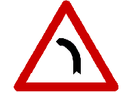
（１）左彎。（２）右彎。（３）連續彎路先向左。 | 1 | 4 | signs | choice | 002 | |
| 1059 | signs-choice-003 | 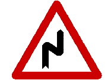
(1) Winding road, right turn ahead
(2) Left turn
(3) Winding road, left turn ahead | 
（１）連續彎路先向右。（２）左彎。（３）連續彎路先向左。 | 1 | 4 | signs | choice | 003 | |
| 1060 | signs-choice-004 | 
(1) Winding road, left turn ahead
(2) Right turn
(3) Winding road, right turn ahead | 
（１）連續彎路先向左。（２）右彎。（３）連續彎路先向右。 | 1 | 4 | signs | choice | 004 | |
| 1061 | signs-choice-005 | 
(1) Two-way
(2) Narrow road
(3) Crossroads | 
（１）雙向道。（２）狹路。（３）岔路。 | 3 | 4 | signs | choice | 005 | |
| 1062 | signs-choice-006 | 
(1) T intersection ahead
(2) Two-way
(3) Dead end | 
（１）岔路。（２）雙向道。（３）此路不通。 | 1 | 4 | signs | choice | 006 | |
| 1063 | signs-choice-007 | 
(1) Right lane narrows
(2) Narrow road
(3) Lane merges | 
（１）右側車道縮減。（２）狹路。（３）匝道會車。 | 1 | 3 | signs | choice | 007 | |
| 1064 | signs-choice-008 | 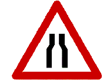
(1) Road narrows
(2) Narrow bridge
(3) Crossroads | 
（１）狹路。（２）狹橋。（３）岔路。 | 1 | 3 | signs | choice | 008 | |
| 1065 | signs-choice-009 | 
(1) Crossroads
(2) Narrow bridge
(3) On-ramp traffic merges into lane | 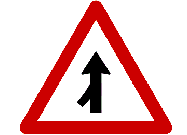
（１）岔路。（２）狹橋。（３）匝道會車。 | 3 | 4 | signs | choice | 009 | |
| 1066 | signs-choice-010 | 
(1) One way road
(2) Two-way road
(3) Narrow road | 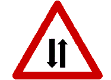
（１）單行道。（２）雙向道。（３）狹路。 | 2 | 4 | signs | choice | 010 | |
| 1067 | signs-choice-011 | 
(1) Road veers left
(2) Circular intersection
(3) Crossroads | 
（１）左彎。（２）圓環。（３）岔路。 | 2 | 4 | signs | choice | 011 | |
| 1068 | signs-choice-012 | 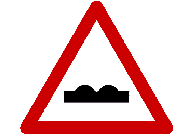
(1) Bumpy road
(2) Bump ahead
(3) Dip ahead | 
（１）路面顛簸。（２）路面高突。（３）路面低窪。 | 1 | 2 | signs | choice | 012 | |
| 1069 | signs-choice-013 | 
(1) Crossroads
(2) Narrow bridge
(3) Road narrows | 
（１）岔路。（２）狹橋。（３）狹路。 | 2 | 2 | signs | choice | 013 | |
| 1070 | signs-choice-014 | 
(1) Bumpy road
(2) Steep hill
(3) Bump ahead | 
（１）路面顛簸。（２）險升坡。（３）路面高突。 | 3 | 3 | signs | choice | 014 | |
| 1071 | signs-choice-015 | 
(1) Steep downgrade
(2) Steep hill
(3) Wharf | 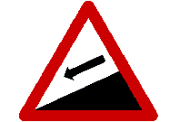
（１）險降坡。（２）險升坡。（３）碼頭。 | 1 | 4 | signs | choice | 015 | |
| 1072 | signs-choice-016 | 
(1) Steep drop-off on right
(2) Falling rocks
(3) Steep drop-off on left | 
（１）右側斷崖。（２）注意落石。（３）左側斷崖。 | 3 | 4 | signs | choice | 016 | |
| 1073 | signs-choice-017 | 
(1) Railroad crossing without gate
(2) Railroad crossing with gate
(3) Vehicles prohibited | 
（１）無柵門鐵路平交道。（２）有柵門鐵路平交道。（３）禁止汽車進入。 | 1 | 4 | signs | choice | 017 | |
| 1074 | signs-choice-018 | 
(1) Watch out for traffic signals
(2) Danger ahead
(3) Slow down | 
（１）注意號誌。（２）危險。（３）慢行。 | 1 | 4 | signs | choice | 018 | |
| 1075 | signs-choice-019 | 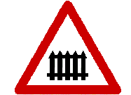
(1) Vehicles prohibited
(2) Railroad crossing without gate
(3) Railroad crossing with gate | 
（１）禁止汽車進入。（２）無柵門鐵路平交道。（３）有柵門鐵路平交道。 | 3 | 3 | signs | choice | 019 | |
| 1076 | signs-choice-020 | 
(1) Bumpy road
(2) Slippery road
(3) Passing prohibited | 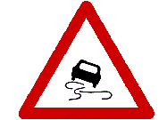
（１）路面高突。（２）路滑。（３）禁止超車。 | 2 | 4 | signs | choice | 020 | |
| 1077 | signs-choice-021 | 
(1) Narrow road
(2) Tunnel
(3) Narrow bridge | 
（１）狹路。（２）隧道。（３）狹橋。 | 2 | 4 | signs | choice | 021 | |
| 1078 | signs-choice-022 | 
(1) Cars prohibited
(2) Watch out for trolley
(3) Watch out for pedestrians | 
（１）禁止汽車進入。（２）當心台車。（３）當心行人。 | 2 | 4 | signs | choice | 022 | |
| 1079 | signs-choice-023 | 
(1) Watch out for pedestrians
(2) Watch out for children
(3) Pedestrians prohibited | 
（１）當心行人。（２）當心兒童。（３）禁止行人通行。 | 2 | 3 | signs | choice | 023 | |
| 1080 | signs-choice-024 | 
(1) Watch out for children
(2) Watch out for pedestrians
(3) Pedestrians prohibited | 
（１）當心兒童。（２）當心行人。（３）禁止行人通行。 | 2 | 4 | signs | choice | 024 | |
| 1081 | signs-choice-025 | 
(1) Make full stop then proceed
(2) Yield
(3) Slow down | 
（１）停車再開。（２）讓路。（３）慢行。 | 3 | 3 | signs | choice | 025 | |
| 1082 | signs-choice-026 | 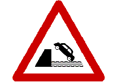
(1) Steep Downgrade
(2) Wharf embankment
(3) Slippery road ahead | 
（１）險降坡。（２）碼頭、堤岸。（３）路滑。 | 2 | 4 | signs | choice | 026 | |
| 1083 | signs-choice-027 | 
(1) Poor road conditions
(2) Watch for falling rocks on left
(3) Watch for falling rocks on right | 
（１）危險路面。（２）注意左側落石。（３）注意右側落石。 | 3 | 3 | signs | choice | 027 | |
| 1084 | signs-choice-028 | 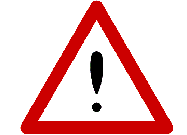
(1) Narrow bridge
(2) Danger ahead
(3) Slow down | 
（１）狹橋。（２）危險。（３）慢行。 | 2 | 4 | signs | choice | 028 | |
| 1085 | signs-choice-029 | 
(1) Keep right
(2) One-way road
(3) Right turn allowed | 
（１）靠右行駛。（２）單行道。（３）可以右轉。 | 1 | 2 | signs | choice | 029 | |
| 1086 | signs-choice-030 | 
(1) Parking prohibited
(2) Stop for inspection
(3) Cars prohibited | 
（１）禁止停車。（２）停車檢查。（３）禁止汽車進入。 | 2 | 2 | signs | choice | 030 | |
| 1087 | signs-choice-031 | 
(1) Pedestrians prohibited
(2) Make full stop then proceed
(3) Vehicles prohibited | 
（１）禁止行人通行。（２）停車再開。（３）禁止任何車輛進入。 | 3 | 4 | signs | choice | 031 | |
| 1088 | signs-choice-032 | 
(1) Pedestrians prohibited
(2) Vehicles prohibited
(3) No motor vehicles with 4 or more wheels | 
（１）禁止行人通行。（２）禁止任何車輛進入。（３）禁止四輪以上汽車進入。 | 3 | 2 | signs | choice | 032 | |
| 1089 | signs-choice-033 | 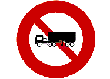
(1) Vehicles prohibited
(2) Trailer trucks prohibited
(3) Large trucks and trailer trucks prohibited | 
（１）禁止任何車輛進入。（２）禁止聯結車進入。（３）禁止大貨車及聯結車進入。 | 2 | 3 | signs | choice | 033 | |
| 1090 | signs-choice-034 | 
(1) All motorcycles except large heavy duty motorcycles prohibited
(2) Automobiles with four or more wheels prohibited
(3) No motorcycles allowed | 
（１） 禁止大型重型機車以外之 機車進入。（２）禁止四輪以上汽車進入。（３）禁止任何機車進入。 | 1 | 3 | signs | choice | 034 | |
| 1091 | signs-choice-035 | 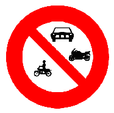
(1) Vehicles prohibited
(2) Motor vehicles with four or more wheels and motorcycles prohibited
(3) Pedestrians prohibited | 
（１）禁止任何車輛進入。（２）禁止四輪以上汽車及機車進入。（３）禁止行人通行。 | 2 | 3 | signs | choice | 035 | |
| 1092 | signs-choice-036 | 
(1) No U-turn
(2) No left turn
(3) Passing prohibited | 
（１）禁止迴車。（２）禁止左轉。（３）禁止超車。 | 2 | 4 | signs | choice | 036 | |
| 1093 | signs-choice-037 | 
(1) Passing prohibited
(2) Single lane road
(3) Vehicles prohibited | 
（１）禁止超車。（２）禁止會車。（３）禁止汽車進入。 | 1 | 4 | signs | choice | 037 | |
| 1094 | signs-choice-038 | 
(1) No left turn
(2) No U-turn
(3) Single lane road | 
（１）禁止左轉。（２）禁止迴車。（３）禁止會車。 | 2 | 4 | signs | choice | 038 | |
| 1095 | signs-choice-039 | 
(1) Two-way road
(2) Single lane road, pass with care
(3) Road forks ahead | 
（１）雙向道。（２）禁止會車。（３）分道。 | 2 | 3 | signs | choice | 039 | |
| 1096 | signs-choice-040 | 
(1) Vehicle width limit
(2) One-way road
(3) Vehicle height limit | 
（１）車輛寬度限制。（２）單行道。（３）車輛高度限制。 | 1 | 4 | signs | choice | 040 | |
| 1097 | signs-choice-041 | 
(1) Vehicle gross weight limit
(2) Vehicle loading weight limit
(3) Empty vehicle weight | 
（１）車輛總重限制。（２）車輛載重限制。（３）車輛空重。 | 1 | 3 | signs | choice | 041 | |
| 1098 | signs-choice-042 | 
(1) Pedestrians prohibited
(2) Watch out for pedestrians
(3) Watch out for children | 
（１）禁止行人通行。（２）當心行人。（３）當心兒童。 | 1 | 4 | signs | choice | 042 | |
| 1099 | signs-choice-043 | 
(1) Minimum speed limit
(2) Maximum speed limit
(3) Vehicle gross weight limit | 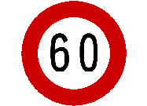
（１）最低速限。（２）最高速限。（３）車輛總重限制。 | 2 | 3 | signs | choice | 043 | |
| 1100 | signs-choice-044 | 
(1) Large trucks and trailer trucks prohibited
(2) Large trucks prohibited
(3) Automobiles prohibited | 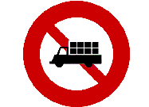
（１）禁止大貨車及聯結車進入。（２）禁止大貨車進入。（３）禁止汽車進入。 | 1 | 2 | signs | choice | 044 | |
| 1101 | signs-choice-045 | 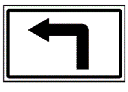
(1) Road veers left ahead
(2) Left turn on green light only
(3) Go straight and then turn left | 
（１）左彎。（２）左轉方向。（３）直行後左轉。 | 3 | 4 | signs | choice | 045 | |
| 1102 | signs-choice-046 | 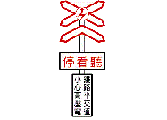
(1) Single track electric railroad crossing.
(2) Multi-track two-way electric railroad crossing.
(3) Single track railroad crossing. | 
（１）單線電化鐵路平交道。（２）雙線以上電化鐵路平交道。（３）單線鐵路平交道。 | 2 | 1 | signs | choice | 046 | |
| 1103 | signs-choice-047 | 
(1) Vehicle length limit
(2) Vehicle width limit
(3) Large trucks prohibited | 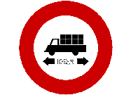
（１）車輛長度限制。（２）車輛寬度限制。（３）禁止大貨車進入。 | 1 | 4 | signs | choice | 047 | |
| 1104 | signs-choice-048 | 
(1) Motor vehicles only
(2) Cars prohibited
(3) Vehicles prohibited | 
（１）道路專行車輛。（２）禁行汽車。（３）禁止任何車輛進入。 | 1 | 4 | signs | choice | 048 | |
| 1105 | signs-choice-049 | 
(1) Circular intersection, follow directions
(2) Road forks ahead
(3) One way | 
（１）圓環遵行方向。（２）分道。（３）單行道。 | 1 | 4 | signs | choice | 049 | |
| 1106 | signs-choice-050 | 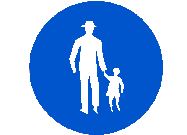
(1) Pedestrians only
(2) Watch out for pedestrians
(3) Watch out for children | 
（１）行人專用。（２）當心行人。（３）當心兒童。 | 1 | 1 | signs | choice | 050 | |
| 1107 | signs-choice-051 | 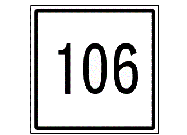
(1) Provincial road
(2) County road
(3) National road | 
（１）省道路線編號。（２）縣道路線編號。（３）國道路線編號。 | 2 | 3 | signs | choice | 051 | |
| 1108 | signs-choice-052 | 
(1) Follow traffic flow
(2) First-aid station
(3) Crossroads | 
（１）遵行方向。（２）救護站（３）岔路。 | 2 | 4 | signs | choice | 052 | |
| 1109 | signs-choice-053 | 
(1) Crossroads
(2) Dead end
(3) Narrow road | 
（１）岔路。（２）此路不通。（３）狹路。 | 2 | 4 | signs | choice | 053 | |
| 1110 | signs-choice-054 | 
(1) Provincial road
(2) County road
(3) National road | 
（１）省道路線編號。（２）縣道路線編號。（３）國道路線編號。 | 1 | 3 | signs | choice | 054 | |
| 1111 | signs-choice-055 | 
(1) Flashing yellow light
(2) Traffic control signal
(3) Flashing pedestrian crosswalk signal | 
（１）閃光黃燈。（２）行車管制號誌。（３）斑馬線閃光號誌。 | 2 | 3 | signs | choice | 055 | |
| 1112 | signs-choice-056 | 
(1) Flashing pedestrian crosswalk signal
(2) Special flashing yellow light
(3) Flashing red light | 
（１）斑馬線閃光號誌。（２）特種閃光「黃燈」號誌。（３）閃光紅燈號誌。 | 2 | 4 | signs | choice | 056 | |
| 1113 | signs-choice-057 | 
(1) Signal for pedestrians
(2) Flashing yellow light
(3) Pedestrian crosswalk signal | 
（１）行人專用號誌。（２）閃光黃燈。（３）行人穿越道號誌。 | 1 | 1 | signs | choice | 057 | |
| 1114 | signs-choice-058 | 
(1) Flashing yellow light
(2) Flashing red light
(3) Pedestrian crosswalk signal | 
（１）閃光黃燈。（２）閃光紅燈號誌。（３）行人穿越道號誌。 | 3 | 1 | signs | choice | 058 | |
| 1115 | signs-choice-059 | 
(1) Right lane closed
(2) Left lane closed
(3) Detour | 
（１）右道封閉。（２）左道封閉。（３）車輛改道。 | 2 | 3 | signs | choice | 059 | |
| 1116 | signs-choice-060 | 
(1) Right lane closed
(2) Left lane closed
(3) Detour | 
（１）右道封閉。（２）左道封閉。（３）車輛改道。 | 1 | 3 | signs | choice | 060 | |
| 1117 | signs-choice-061 | 
(1) Road closed
(2) Detour
(3) Road construction ahead | 
（１）道路封閉。（２）車輛改道。（３）道路施工。 | 3 | 4 | signs | choice | 061 | |
| 1118 | signs-choice-062 | 
(1) Left lane closed
(2) Right lane closed
(3) Detour | 
（１）左道封閉。（２）右道封閉。（３）車輛改道。 | 3 | 3 | signs | choice | 062 | |
| 1119 | signs-choice-063 | 
(1) Follow the detour signs
(2) One-way road
(3) Turn right ahead | 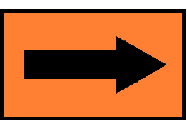
（１）指示改道方向。（２）單行道。（３）右轉方向指示。 | 1 | 3 | signs | choice | 063 | |
| 1120 | signs-choice-064 | 
(1) Road construction ahead
(2) Road closed
(3) Detour ahead | 
（１）道路施工。（２）道路封閉。（３）車輛改道。 | 2 | 2 | signs | choice | 064 | |
| 1121 | signs-choice-065 | 
(1) First-aid station
(2) Gas station
(3) Auto repair |
（１）救護站。（２）加油站。（３）修理站。 | 3 | 4 | signs | choice | 065 | |
| 1122 | signs-choice-066 | 
(1) Go straight and then turn right
(2) Go straight and then turn left
(3) Follow the signs to turn left | 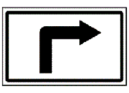
（１）直行後右轉。（２）直行後左轉。（３）左轉遵行方向。 | 1 | 4 | signs | choice | 066 | |
| 1123 | signs-choice-067 | 
(1) Pedestrian overpass
(2) Pedestrian underpass
(3) Parking | 
（１）人行天橋。（２）人行地下道。（３）停車處。 | 2 | 4 | signs | choice | 067 | |
| 1124 | signs-choice-068 | 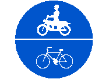
Designated
(1) Automobiles only
(2) Buses only
(3) Bicycles and scooters only, large heavy motorcycles are excluded. | 
道路指定（１）汽車專行。（２）大客車專行。（３）自行車及大型重型機車以外之機車專行。 | 3 | 4 | signs | choice | 068 | |
| 1125 | signs-choice-069 | 
(1) First-aid station
(2) Auto repair
(3) Gas station | 
（１）救護站。（２）修理站。（３）加油站。 | 3 | 4 | signs | choice | 069 | |
| 1126 | signs-choice-070 | 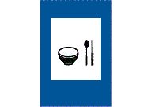
(1) Restaurant
(2) Gas station
(3) Auto repair | 
（１）餐旅服務。（２）加油站。（３）修理站。 | 1 | 4 | signs | choice | 070 | |
| 1127 | signs-choice-071 | 
(1) Left turn only
(2) Right turn only
(3) Left and right turns allowed | 
（１）左轉方向。（２）右轉方向。（３）左右轉方向。 | 2 | 4 | signs | choice | 071 | |
| 1128 | signs-choice-072 | 
(1) Entry Prohibited sign
(2) Vehicle break-down sign
(3) Danger Ahead sign | 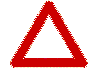
（１）禁制標誌。（２）車輛故障標誌。（３）危險標誌。 | 2 | 3 | signs | choice | 072 | |
| 1129 | signs-choice-073 | 
The inverted triangle marking indicates:
(1) Yield
(2) Stop
(3) Barrier in the middle of road | 
圖中白色倒三角型標線是：（１）讓路線。（２）停止線。（３）路中障礙物體線。 | 1 | 1 | signs | choice | 073 | |
| 1130 | signs-choice-074 | 
(1) Stop line
(2) Barrier ahead
(3) Parking line | 
（１）停車線。（２）近障礙物線。（３）車輛停放線。 | 3 | 4 | signs | choice | 074 | |
| 1131 | signs-choice-075 | 
The solid white line indicated by the arrow sign represents:
(1) Road shoulder line
(2) Lane line
(3) Passing prohibited for both directions | 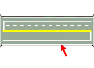
圖中箭頭所指白色實線為：（１）路面邊線。（２）車道線。（３）雙方禁止超車線。 | 1 | 4 | signs | choice | 075 | |
| 1132 | signs-choice-076 | 
(1) Barrier ahead
(2) Railroad crossing ahead
(3) Road width changes | 
（１）近障礙物線。（２）近鐵路平交道線。（３）路寬變更線。 | 3 | 4 | signs | choice | 076 | |
| 1133 | signs-choice-077 | 
The broken white line is a:
(1) Pedestrian crosswalk line
(2) Lane line
(3) Road shoulder line | 
圖中白色虛線為：（１）斑馬紋行人穿越道線。（２）車道線。（３）路面邊線。 | 2 | 4 | signs | choice | 077 | |
| 1134 | signs-choice-078 | 
(1) Railroad crossing ahead
(2) Barrier ahead
(3) Road width changes | 
（１）近鐵路平交道線。（２）近障礙物線。（３）路寬變更線。 | 1 | 4 | signs | choice | 078 | |
| 1135 | signs-choice-079 | 
(1) No parking line
(2) Direction-separation line
(3) Direction line | 
（１）禁止停車線。（２）行車分向線。（３）指向線。 | 3 | 3 | signs | choice | 079 | |
| 1136 | signs-choice-080 | 
The solid double yellow line indicates:
(1) Passing prohibited in one direction
(2) Passing prohibited in both directions
(3) Lane marker line | 
圖中黃色雙實線為：（１）單向禁止超車線。（２）雙向禁止超車線。（３）車道線。 | 2 | 4 | signs | choice | 080 | |
| 1137 | signs-choice-081 | 
The solid yellow line and broken yellow line indicate:
(1) Passing prohibited in one direction
(2) Passing prohibited in both directions
(3) Lane marker line | 
圖中黃色單實線與黃色虛線併列部分為：（１）單向禁止超車線。（２）雙向禁止超車線。（３）車道線。 | 1 | 4 | signs | choice | 081 | |
| 1138 | signs-choice-082 | 
The solid white double line indicates:
(1) Crossing direction-separation line prohibited
(2) Passing prohibited in both directions
(3) Changing lanes prohibited | 
圖中白色雙實線為：（１）分向限制線。（２）雙向禁止超車線。（３）禁止變換車道線。 | 3 | 4 | signs | choice | 082 | |
| 1139 | signs-choice-083 | 
The solid yellow line indicates:
(1) No parking
(2) No stopping
(3) Parking permitted | 
圖中黃色實線為：（１）禁止停車線。（２）禁止臨時停車線。（３）車輛停放線。 | 1 | 1 | signs | choice | 083 | |
| 1140 | signs-choice-084 | 
The solid red line indicates:
(1) No parking
(2) No temporary parking
(3) Parking permitted | 
圖中紅色實線為：（１）禁止停車線。（２）禁止臨時停車線。（３）車輛停放線。 | 2 | 1 | signs | choice | 084 | |
| 1141 | signs-choice-085 | 
The broken yellow line is a:
(1) Lane line
(2) Restriction line indicating that passing in oncoming lanes is prohibited
(3) Direction-separation line | 
圖中黃色虛線為：（１）車道線。（２）分向限制線。（３）行車分向線。 | 3 | 4 | signs | choice | 085 | |
| 1142 | signs-choice-086 | 
The white diagonal lines are:
(1) Zebra crossing lines
(2) longitudinal crossing lines
(3) Stop lines | 
圖中白色斜紋線為：（１）斑馬紋行人穿越道線。（２）枕木紋行人穿越道線。（３）停止線。 | 1 | 2 | signs | choice | 086 | |
| 1143 | signs-choice-087 | 
The solid white horizontal line indicates:
(1) Parking permitted
(2) Passing prohibited
(3) Stop here | 
圖中白色橫向實線為：（１）車輛停放線。（２）禁止超車線。（３）停止線。 | 3 | 4 | signs | choice | 087 | |
| 1144 | signs-choice-088 | 
The white diagonal lines are:
(1) Zebra crossing lines
(2) longitudinal crossing lines
(3) Stop lines | 
圖中白色紋線為：（１）斑馬紋行人穿越道線。（２）枕木紋行人穿越道線。（３）停止線。 | 2 | 1 | signs | choice | 088 | |
| 1145 | signs-choice-089 | 
The solid yellow double line is a:
(1) Restriction line indicating that passing in oncoming lanes is prohibited
(2) Lane change prohibited indicator
(3) Lane marker line | 
圖中黃色雙實線為：（１）分向限制線。（２）禁止變換車道線。（３）車道線。 | 1 | 4 | signs | choice | 089 | |
| 1146 | signs-choice-090 | 
(1) Barrier in the middle of road
(2) Barrier ahead
(3) Road width changes | 
（１）路中障礙物體線。（２）近障礙物線。（３）路寬變更線。 | 2 | 1 | signs | choice | 090 | |
| 1147 | signs-choice-091 | 
The checkered area advises motorists that :
(1) Stopping permitted
(2) No stopping
(3) Parking prohibited | 
圖中網狀線，用以告示車輛駕駛人在本標線範圍內：（１）可以臨時停車。（２）禁止臨時停車。（３）禁止停車。 | 2 | 2 | signs | choice | 091 | |
| 1148 | signs-choice-092 | 
The broken white lines represent:
(1) The turn lane
(2) Prohibited area
(3) Channelizing lines. | 
圖中白色虛線為：（１）轉彎線。（２）網狀線。（３）槽化線。 | 1 | 3 | signs | choice | 092 | |
| 1149 | signs-choice-093 | 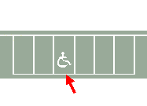
(1) Disabled person parking only
(2) Stop line
(3) No parking | 
（１）身心障礙者專用停車位。（２）停止線。（３）禁止停車線。 | 1 | 4 | signs | choice | 093 | |
| 1150 | signs-choice-094 | 
(1) All vehicles must stop
(2) Vehicles in front and behind must stop, vehicles approaching from the left and right may proceed
(3) Vehicles in front must stop | 
（１）全部車輛停止。（２）前後來車停止，左右來車通行。（３）前方來車停止通行。 | 2 | 3 | signs | choice | 094 | |
| 1151 | signs-choice-095 | 
(1) Vehicles on the right must turn left
(2) Vehicles on the right must pass quickly
(3) Vehicles on the left must stop | 
（１）右方來車左轉彎。（２）右方來車速行。（３）左方來車速行。 | 1 | 2 | signs | choice | 095 | |
| 1152 | signs-choice-096 | 
(1) Vehicles on right must stop
(2) Vehicles on the right must turn left
(3) Vehicles on the right must pass through quickly | 
（１）右方來車停止。（２）右方來車左轉彎。（３）右方來車速行。 | 1 | 3 | signs | choice | 096 | |
| 1153 | signs-choice-097 | 
(1) Vehicles on the right must stop
(2) Vehicles on the left may proceed
(3) Vehicles on right must pass through quickly | 
（１）右方來車停止。（２）左方來車通行。（３）右方來車速行。 | 3 | 3 | signs | choice | 097 | |
| 1154 | signs-choice-098 | 
(1) Vehicles on left must pass through quickly
(2) Vehicles on the left must turn left
(3) Vehicles on right must stop | 
（１）左方來車速行。（２）左方來車左轉彎。（３）右方來車停止。 | 2 | 2 | signs | choice | 098 | |
| 1155 | signs-choice-099 | 
(1) Vehicles in front must stop
(2) Vehicles in front and behind must stop, vehicles approaching from the left and right may proceed
(3) All vehicles must stop | 
（１）前方來車停止通行。（２）前後來車停止，左右來車通行。（３）全部車輛停止。 | 3 | 3 | signs | choice | 099 | |
| 1156 | signs-choice-100 | 
(1) Vehicles in front must stop
(2) Vehicles in front and behind must stop, vehicles approaching from the left and right can proceed
(3) All vehicles must stop | 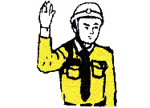
（１）前方來車停止。（２）前後停止左右通行。（３）全部車輛停止。 | 1 | 2 | signs | choice | 100 | |
| 1157 | signs-choice-101 | 
Raised left arm with the palm facing right indicates:
(1) Right turn
(2) Left turn
(3) Rear vehicles are permitted to pass | 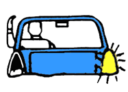
左臂向上，手掌向右微曲，表示：（１）右轉彎。（２）左轉彎。（３）讓後車超車。 | 1 | 4 | signs | choice | 101 | |
| 1158 | signs-choice-102 | 
Left arm extended out with the palm facing down indicates :
(1) Right turn
(2) Left turn
(3) Slow down | 
左臂平伸，手掌向下，表示：（１）右轉彎。（２）左轉彎。（３）慢行。 | 2 | 4 | signs | choice | 102 | |
| 1159 | signs-choice-103 | 
Left arm bent downward with the palm facing the rear indicates:
(1) Slowing down to stop temporarily
(2) Rear vehicles are permitted to pass
(3) Vehicle backing up | 
左臂向下垂伸，手掌向後，表示：（１）減速暫停。（２）讓後車超越。（３）倒車。 | 1 | 2 | signs | choice | 103 | |
| 1160 | signs-choice-104 | 
Left arm bended down 45 degrees with palm waving back and forth indicates:
(1) Vehicle backing up
(2) Slow down
(3) Rear vehicle permitted to pass | 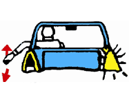
左臂向下作４５度垂伸，手掌向前並前後擺動，表示：（１）倒車。（２）慢行。（３）讓後車超越。 | 3 | 1 | signs | choice | 104 | |
| 1161 | signs-choice-105 |
(1) Turn on head lights
(2) Watch out for traffic signals
(3) Tap horn | 
（１）開亮頭燈。（２）注意號誌。（３）按鳴喇叭。 | 1 | 4 | signs | choice | 105 | |
| 1162 | signs-choice-106 | 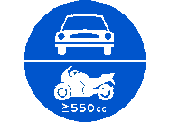
(1) Vehicles with 4 wheels or more and motorcycles over 550 cc displacement only
(2) For bicycles and motorcycles only
(3) Vehicles with 4 wheels or more, motorcycles over 550 cc prohibited | 
（１）道路指定四輪以上汽車與汽缸總排氣量550立方公分以上大型重型機車專行。（２）道路指定自行車與機車專行。（３）道路禁止四輪以上汽車與汽缸總排氣量550立方公分以上大型重型機車進入。 | 1 | 4 | signs | choice | 106 | |
| 1163 | signs-choice-107 | 
Exclusive lane for
(1) motor vehicles with four or more wheels only
(2) motor vehicles with four or more wheels and motorcycles over 550 cc only
(3) motorcycles over 550 cc only | 
（１）車道指定四輪以上汽車專行。（２）車道指定四輪以上汽車及汽缸總排氣量550立方公分以上大型重型機車專行。（３）車道指定汽缸總排氣量550立方公分以上大型重型機車專行。 | 2 | 4 | signs | choice | 107 | |
| 1164 | signs-choice-108 | 
(1) Motorcycles over 550 cc displacement prohibited
(2) For motorcycles over 550 cc displacement only
(3) Bicycles prohibited | 
（１）禁止汽缸總排氣量550立方公分以上大型重型機車進入。（２）汽缸總排氣量550立方公分以上大型重型機車專用車道。（３）禁止自行車進入。 | 1 | 4 | signs | choice | 108 | |
| 1165 | signs-choice-109 | 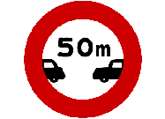
(1) Vehicle length limit
(2) Maximum speed limit
(3) Safe driving distance required | 
（１）車輛長度限制。（２）最高速限。（３）行車安全距離限制。 | 3 | 4 | signs | choice | 109 | |
| 1166 | signs-choice-110 | 
This sign is for a:
(1) County road
(2) Provincial road
(3) National road | 
本標誌是（１）縣道路線編號。（２）省道路線編號。（３）國道路線編號。 | 3 | 3 | signs | choice | 110 | |
| 1167 | signs-choice-111 | 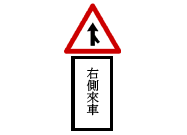
Alerting motorists to watch out for
(1) vehicles merge from right ahead
(2) vehicles merge from left ahead
(3) crossroads | 
警告駕駛人注意（１）前方右側有車插會。（２）前方左側有車插會。（３）岔路。 | 1 | 4 | signs | choice | 111 | |
| 1168 | signs-choice-112 | 
Maximum speed on the exit ramp is
(1) 60 km/h
(2) 40 km/h
(3) 80 km/h | 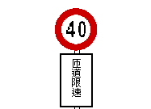
限制出口匝道上最高行駛速度為每小時（１）６０公里。（２）４０公里。（３）８０公里。 | 2 | 4 | signs | choice | 112 | |
| 1169 | signs-choice-113 | 
This sign marks
(1) An exit
(2) A lane
(3) A destination | 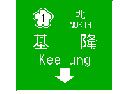
本標誌為（１）出口。（２）車道。（３）地名。之指示標誌。 | 2 | 3 | signs | choice | 113 | |
| 1170 | signs-choice-114 | 
This sign indicates:
(1) One-way traffic
(2) Direction of traffic flow
(3) Detour ahead | 
本標誌是：（１）單行道。（２）遵行方向。（３）指示改道方向。 | 3 | 2 | signs | choice | 114 | |
| 1171 | signs-choice-115 | 
This sign means
(1) Warning
(2) Vehicle breakdown
(3) Road under construction | 
本標誌為（１）警告標誌。（２）車輛故障標誌。（３）施工標誌。 | 2 | 2 | signs | choice | 115 | |
| 1172 | signs-choice-116 | 
This sign shows
(1) Miles to a destination
(2) Direction and distance to a destination
(3) Destination name | 
本標誌為：（１）地名里程指示。（２）方向里程指示。（３）地名方向指示。 | 3 | 4 | signs | choice | 116 | |
| 1173 | signs-choice-117 | 
This is a
(1) Freeway exit sign
(2) Freeway service area sign
(3) Direction to freeway sign | 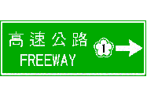
指示（１）高速公路出口。（２）高速公路服務區。（３）高速公路指引。 | 3 | 4 | signs | choice | 117 | |
| 1174 | signs-choice-118 | 
This sign means
(1) Road under construction
(2) Detour
(3) Road closed | 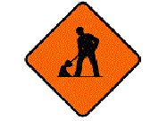
本標誌為（１）道路施工。（２）車輛改道。（３）道路封閉。 | 1 | 4 | signs | choice | 118 | |
| 1175 | signs-choice-119 | 
This sign indicates
(1) Lane closed
(2) Crossroads ahead
(3) Traffic control | 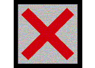
本號誌是：（１）車道管制號誌，表示本車道封閉。（２）前有岔道。（３）行車管制號誌。 | 1 | 4 | signs | choice | 119 | |
| 1176 | signs-choice-120 | 
This sign is a
(1) Milestone
(2) Mileage marker
(3) County road sign | 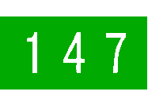
本標誌是：（１）里程碑。（２）里程牌。（３）縣道路線編號。 | 2 | 3 | signs | choice | 120 | |
| 1177 | signs-choice-121 | 
What is the solid white line between the line at road edge and the lane line?
(1) Division line separating the fast vehicles and slow vehicles
(2) Direction separation line
(3) Passing prohibition line | 
圖中最外側的路面邊線與車道線中間的白色實線為何種標線？（１）快慢車道分隔線。（２）行車分向線。（３）雙方禁止超車線。 | 1 | 1 | signs | choice | 121 | |
| 1178 | signs-choice-122 | 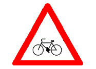
(1) Watch out for bicycles
(2) Watch out for pedestrians
(3) Watch out for motorcycles | 
（１）當心自行車。（２）當心行人。（３）當心機車。 | 1 | 4 | signs | choice | 122 | |
| 1179 | signs-choice-123 | 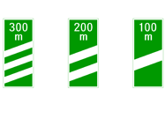
(1) Railroad crossing ahead
(2) Maintain a safe driving distance on freeways and expressways
(3) Distance to freeway/expressway exit | 
（１）近鐵路平交道。（２）高 (快) 速公路車輛保持距離。（３）高 (快) 速公路出口距離。 | 3 | 4 | signs | choice | 123 | |
| 1180 | signs-choice-124 | 
(1) Name of a freeway or expressway interchange
(2) Distance to a specific destination
(3) Distance to the freeway and expressway exit | 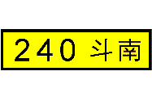
（１）高(快)速公路交流道名稱。（２）地名里程。（３）高（快）速公路出口距離。 | 1 | 1 | signs | choice | 124 | |
| 1181 | signs-choice-125 | 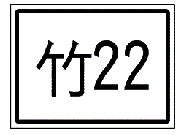
(1) Agricultural road
(2) Numbered routes for county roads
(3) Numbered routes for country roads | 
（１）產業道路。（２）縣道路線編號標誌。（３）鄉道路線編號標誌。 | 3 | 1 | signs | choice | 125 | |
| 1182 | signs-choice-126 | 
(1) Numbered provincial roads for the expressways
(2) Numbered Provincial roads for the freeways
(3) Maximum speed limit | 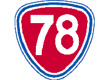
（１）一般公路之省道路線編號標誌。（２）快速公路之省道路線編號標誌。（３）最高速限標誌。 | 2 | 1 | signs | choice | 126 | |
| 1183 | signs-choice-127 |
(1) Parking lot
(2) Park
(3) U-turn lane | 
（１）停車處。（２）公園。（３）迴轉道。 | 1 | 3 | signs | choice | 127 | |
| 1184 | signs-choice-128 | 
(1) MRT station
(2) Railroad station
(3) High speed rail station | 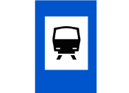
（１）捷運車站。（２）鐵路車站。（３）高速鐵路車站。 | 1 | 1 | signs | choice | 128 | |
| 1185 | signs-choice-129 | 
(1) Wharf
(2) Ferry pier
(3) Auto repair | 
（１）港埠。（２）渡口。（３）修理站。 | 1 | 3 | signs | choice | 129 | |
| 1186 | signs-choice-130 | 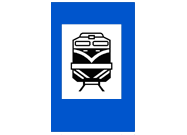
(1) MRT station
(2) Railroad station
(3) High speed rail station | 
（１）捷運車站。（２）鐵路車站。（３）高速鐵路車站。 | 2 | 1 | signs | choice | 130 | |
| 1187 | signs-choice-131 | 
(1) MRT station
(2) Railroad station
(3) High speed rail station | 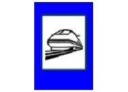
（１）捷運車站。（２）鐵路車站。（３）高速鐵路車站。 | 3 | 1 | signs | choice | 131 | |
| 1188 | signs-choice-132 | 
(1) Bus stations or transit stations
(2) MRT stations
(3) Taxi stands | 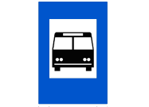
（１）公路汽車客運車站或轉運站。（２）捷運車站。（３）計程車招呼站。 | 1 | 4 | signs | choice | 132 | |
| 1189 | signs-choice-133 | 
(1) Bicycles only
(2) Electric bicycles only
(3) Motorcycles only | 
（１）車道指定自行車專行。（２）車道指定汽車專行。（３）車道指定機車專行。 | 1 | 4 | signs | choice | 133 | |
| 1190 | signs-choice-134 | 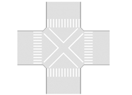
The marking painted on the intersection is a:
(1) diagonal pedestrian crossing
(2) Cross-thatched area
(3) Bicycle crossing line | 
圖中路口交叉型標線是？（１）對角線行人穿越道線。（２）網狀線。（３）自行車穿越道線。 | 1 | 2 | signs | choice | 134 | |
| 1191 | signs-choice-135 | 
How should motorists do if they see the horizontal lines shown in the picture?
(1) Slow down
(2) Drive through quickly
(3) Check their tires | 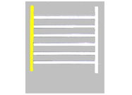
駕駛人如果在道路上發現圖中的橫向標線時，應該如何反應？（１）減速慢行。（２）加速通過。（３）檢查輪胎。 | 1 | 4 | signs | choice | 135 | |
| 1192 | signs-true-001 | 
Winding road, right turn ahead | 
連續彎路先向右 | O | 4 | signs | true/false | 001 | |
| 1193 | signs-true-002 | 
Winding road, left turn ahead | 
連續彎路先向左 | X | 4 | signs | true/false | 002 | |
| 1194 | signs-true-003 | 
Crossroads ahead | 
岔路 | O | 3 | signs | true/false | 003 | |
| 1195 | signs-true-004 | 
First-aid station | 
救護站 | X | 3 | signs | true/false | 004 | |
| 1196 | signs-true-005 | 
Road narrows | 
狹路 | O | 2 | signs | true/false | 005 | |
| 1197 | signs-true-006 | 
Narrow bridge | 
狹橋 | X | 2 | signs | true/false | 006 | |
| 1198 | signs-true-007 |
Steep uphill ahead | 
險升坡 | O | 4 | signs | true/false | 007 | |
| 1199 | signs-true-008 | 
Steep downgrade ahead | 
險降坡 | X | 4 | signs | true/false | 008 | |
| 1200 | signs-true-009 | 
Narrow bridge | 
狹橋 | O | 2 | signs | true/false | 009 | |
| 1201 | signs-true-010 | 
Narrow road |
狹路 | X | 2 | signs | true/false | 010 | |
| 1202 | signs-true-011 | 
Circular intersection |
圓環 | O | 4 | signs | true/false | 011 | |
| 1203 | signs-true-012 | 
Circular intersection, follow directions | 
圓環遵行方向 | X | 1 | signs | true/false | 012 | |
| 1204 | signs-true-013 | 
Two-way | 
雙向道 | O | 4 | signs | true/false | 013 | |
| 1205 | signs-true-014 | 
Narrow road | 
狹路 | X | 4 | signs | true/false | 014 | |
| 1206 | signs-true-015 | 
Railroad crossing without gate | 
無柵門鐵路平交道 | O | 3 | signs | true/false | 015 | |
| 1207 | signs-true-016 | 
Railroad crossing with gate | 
有柵門鐵路平交道 | X | 4 | signs | true/false | 016 | |
| 1208 | signs-true-017 | 
Watch out for pedestrians | 
當心行人 | O | 4 | signs | true/false | 017 | |
| 1209 | signs-true-018 | 
Watch out for children | 
當心兒童 | X | 3 | signs | true/false | 018 | |
| 1210 | signs-true-019 | 
Watch out for heavy wind | 
注意強風 | O | 4 | signs | true/false | 019 | |
| 1211 | signs-true-020 | 
Watch for signs |
注意標誌 | X | 4 | signs | true/false | 020 | |
| 1212 | signs-true-021 | 
Watch out for children |
當心兒童 | O | 4 | signs | true/false | 021 | |
| 1213 | signs-true-022 | 
Watch out for pedestrians | 
當心行人 | X | 2 | signs | true/false | 022 | |
| 1214 | signs-true-023 | 
Steep drop-off on the left | 
左側斷崖 | O | 4 | signs | true/false | 023 | |
| 1215 | signs-true-024 | 
Watch out for falling rocks |
注意落石 | X | 4 | signs | true/false | 024 | |
| 1216 | signs-true-025 | 
Danger | 
危險 | O | 3 | signs | true/false | 025 | |
| 1217 | signs-true-026 | 
Watch out for traffic signals | 
注意號誌 | X | 3 | signs | true/false | 026 | |
| 1218 | signs-true-027 | 
Stop and go | 
停車再開 | O | 2 | signs | true/false | 027 | |
| 1219 | signs-true-028 | 
No parking | 
禁止停車 | X | 4 | signs | true/false | 028 | |
| 1220 | signs-true-029 | 
Yield | 
讓路 | O | 3 | signs | true/false | 029 | |
| 1221 | signs-true-030 | 
Slow |
慢行 | X | 4 | signs | true/false | 030 | |
| 1222 | signs-true-031 | 
No parking | 
禁止停車 | O | 3 | signs | true/false | 031 | |
| 1223 | signs-true-032 | 
Stop and go |
停車再開 | X | 3 | signs | true/false | 032 | |
| 1224 | signs-true-033 | 
No motor vehicles with 4 or more wheels | 
禁止四輪以上汽車進入 | O | 4 | signs | true/false | 033 | |
| 1225 | signs-true-034 | 
No entry | 
禁止進入 | X | 3 | signs | true/false | 034 | |
| 1226 | signs-true-035 | 
No U-turn | 
禁止迴車 | O | 4 | signs | true/false | 035 | |
| 1227 | signs-true-036 | 
No left turn | 
禁止左轉 | X | 4 | signs | true/false | 036 | |
| 1228 | signs-true-037 | 
Motor vehicles with four or more wheels and motorcycles prohibited | 
禁止四輪以上汽車及機車進入 | O | 3 | signs | true/false | 037 | |
| 1229 | signs-true-038 | 
Motor vehicles with four or more wheels prohibited | 
禁止四輪以上汽車進入 | X | 3 | signs | true/false | 038 | |
| 1230 | signs-true-039 | 
Vehicle height limit | 
車輛高度限制 | O | 3 | signs | true/false | 039 | |
| 1231 | signs-true-040 | 
Vehicle width limit | 
車輛寬度限制 | X | 3 | signs | true/false | 040 | |
| 1232 | signs-true-041 |
Stop for inspection | 
停車檢查 | O | 2 | signs | true/false | 041 | |
| 1233 | signs-true-042 | 
No parking | 
禁止停車 | X | 2 | signs | true/false | 042 | |
| 1234 | signs-true-043 | 
Maximum speed | 
最高速限 | O | 3 | signs | true/false | 043 | |
| 1235 | signs-true-044 | 
Minimum speed | 
最低速限 | X | 4 | signs | true/false | 044 | |
| 1236 | signs-true-045 | 
Checkpoint! Stop for inspection |
停車檢查 | O | 1 | signs | true/false | 045 | |
| 1237 | signs-true-046 | 
Stop and go | 
停車再開 | X | 4 | signs | true/false | 046 | |
| 1238 | signs-true-047 | 
No passing | 
禁止超車 | O | 4 | signs | true/false | 047 | |
| 1239 | signs-true-048 |
Single lane road | 
禁止會車 | X | 3 | signs | true/false | 048 | |
| 1240 | signs-true-049 | 
Minimum speed limit | 
最低速限 | O | 3 | signs | true/false | 049 | |
| 1241 | signs-true-050 | 
Maximum speed limit | 
最高速限 | X | 4 | signs | true/false | 050 | |
| 1242 | signs-true-051 | 
Watch out for the disabled |
當心身心障礙者 | O | 4 | signs | true/false | 051 | |
| 1243 | signs-true-052 | 
Watch out for children | 
當心兒童 | X | 4 | signs | true/false | 052 | |
| 1244 | signs-true-053 | 
No temporary parking |
禁止臨時停車 | O | 2 | signs | true/false | 053 | |
| 1245 | signs-true-054 | 
No parking | 
禁止停車 | X | 4 | signs | true/false | 054 | |
| 1246 | signs-true-055 | 
Bus only |
專行車輛（大客車專行） | O | 3 | signs | true/false | 055 | |
| 1247 | signs-true-056 | 
Vehicle length limit | 
車輛長度限制 | X | 4 | signs | true/false | 056 | |
| 1248 | signs-true-057 | 
Vehicle width limit | 
車輛寬度限制 | O | 2 | signs | true/false | 057 | |
| 1249 | signs-true-058 | 
Vehicle length limit | 
車輛長度限制 | X | 4 | signs | true/false | 058 | |
| 1250 | signs-true-059 |
Stop for weighing | 
停車檢查 | O | 1 | signs | true/false | 059 | |
| 1251 | signs-true-060 | 
Vehicle gross weight limit | 
車輛總重限制 | X | 1 | signs | true/false | 060 | |
| 1252 | signs-true-061 | 
Taxis with no passengers prohibited | 
禁止空計程車進入 | O | 1 | signs | true/false | 061 | |
| 1253 | signs-true-062 | 
Vehicles prohibited |
禁止汽車進入 | X | 4 | signs | true/false | 062 | |
| 1254 | signs-true-063 | 
Do not enter | 
禁止任何車輛進入 | O | 3 | signs | true/false | 063 | |
| 1255 | signs-true-064 | 
Dead end |
此路不通 | X | 3 | signs | true/false | 064 | |
| 1256 | signs-true-065 |
Dip ahead | 
路面低窪 | O | 4 | signs | true/false | 065 | |
| 1257 | signs-true-066 | 
Bumpy road | 
路面顛簸 | X | 2 | signs | true/false | 066 | |
| 1258 | signs-true-067 | 
Watch out for traffic signals |
注意號誌 | O | 3 | signs | true/false | 067 | |
| 1259 | signs-true-068 | 
Traffic control signal | 
行車管制號誌 | X | 3 | signs | true/false | 068 | |
| 1260 | signs-true-069 | 
Bump ahead | 
路面高突 | O | 3 | signs | true/false | 069 | |
| 1261 | signs-true-070 | 
Bumpy road ahead | 
路面顛簸 | X | 3 | signs | true/false | 070 | |
| 1262 | signs-true-071 | 
Follow the traffic flow | 
遵行方向 | O | 2 | signs | true/false | 071 | |
| 1263 | signs-true-072 | 
One-way road | 
單行道 | X | 2 | signs | true/false | 072 | |
| 1264 | signs-true-073 | 
Follow the signs for left and right turns | 
遵行方向 | O | 3 | signs | true/false | 073 | |
| 1265 | signs-true-074 | 
Road forks ahead | 
分道 | X | 3 | signs | true/false | 074 | |
| 1266 | signs-true-075 | 
First-aid station | 
救護站 | O | 3 | signs | true/false | 075 | |
| 1267 | signs-true-076 | 
Hospital | 
醫院 | X | 3 | signs | true/false | 076 | |
| 1268 | signs-true-077 | 
Winding road veers left ahead |
連續彎路先向左 | O | 4 | signs | true/false | 077 | |
| 1269 | signs-true-078 | 
Winding road veers right ahead | 
連續彎路先向右 | X | 4 | signs | true/false | 078 | |
| 1270 | signs-true-079 | 
T Intersection | 
岔路 | O | 3 | signs | true/false | 079 | |
| 1271 | signs-true-080 |
Dead end | 
此路不通 | X | 3 | signs | true/false | 080 | |
| 1272 | signs-true-081 | 
Traffic flow direction | 
遵行方向 | O | 3 | signs | true/false | 081 | |
| 1273 | signs-true-082 |
One way | 
單行道 | X | 1 | signs | true/false | 082 | |
| 1274 | signs-true-083 |
Right turn | 
右轉方向 | O | 3 | signs | true/false | 083 | |
| 1275 | signs-true-084 | 
Traffic flow direction | 
遵行方向 | X | 3 | signs | true/false | 084 | |
| 1276 | signs-true-085 | 
Passing bay | 
避車彎 | O | 2 | signs | true/false | 085 | |
| 1277 | signs-true-086 | 
Narrow road |
狹路 | X | 2 | signs | true/false | 086 | |
| 1278 | signs-true-087 | 
Keep right | 
靠右行駛 | O | 3 | signs | true/false | 087 | |
| 1279 | signs-true-088 |
Keep left | 
靠左行駛 | X | 4 | signs | true/false | 088 | |
| 1280 | signs-true-089 | 
One way |
單行道 | O | 1 | signs | true/false | 089 | |
| 1281 | signs-true-090 | 
Traffic flow direction | 
遵行方向 | X | 1 | signs | true/false | 090 | |
| 1282 | signs-true-091 | 
Provincial road | 
省道路線編號 | O | 2 | signs | true/false | 091 | |
| 1283 | signs-true-092 | 
National road | 
國道路線編號 | X | 2 | signs | true/false | 092 | |
| 1284 | signs-true-093 | 
County road | 
縣道路線編號 | O | 2 | signs | true/false | 093 | |
| 1285 | signs-true-094 | 
Provincial road | 
省道路線編號 | X | 2 | signs | true/false | 094 | |
| 1286 | signs-true-095 | 
National road | 
國道路線編號 | O | 2 | signs | true/false | 095 | |
| 1287 | signs-true-096 | 
Provincial road | 
省道路線編號 | X | 2 | signs | true/false | 096 | |
| 1288 | signs-true-097 | 
Road forks ahead | 
分道 | O | 1 | signs | true/false | 097 | |
| 1289 | signs-true-098 | 
Crossroads | 
岔路 | X | 1 | signs | true/false | 098 | |
| 1290 | signs-true-099 |
Single lane road | 
禁止會車 | O | 1 | signs | true/false | 099 | |
| 1291 | signs-true-100 | 
Two-way road | 
雙向道 | X | 1 | signs | true/false | 100 | |
| 1292 | signs-true-101 | 
Right lane narrows ahead | 
右側車道路寬縮減 | O | 3 | signs | true/false | 101 | |
| 1293 | signs-true-102 | 
Left lane narrows ahead | 
左側車道路寬縮減 | X | 3 | signs | true/false | 102 | |
| 1294 | signs-true-103 |
Left lane narrows ahead | 
左側車道路寬縮減 | O | 4 | signs | true/false | 103 | |
| 1295 | signs-true-104 | 
Right lane narrows ahead | 
右側車道路寬縮減 | X | 4 | signs | true/false | 104 | |
| 1296 | signs-true-105 | 
Special flashing yellow light | 
特種閃光「黃燈」號誌 | O | 2 | signs | true/false | 105 | |
| 1297 | signs-true-106 | 
Traffic control signal | 
行車管制號誌 | X | 2 | signs | true/false | 106 | |
| 1298 | signs-true-107 |
Pedestrian crossing signal | 
行人專用號誌 | O | 3 | signs | true/false | 107 | |
| 1299 | signs-true-108 | 
Watch out for pedestrians | 
當心行人 | X | 3 | signs | true/false | 108 | |
| 1300 | signs-true-109 | 
Pedestrian crossing signal | 
行人穿越道號誌 | O | 2 | signs | true/false | 109 | |
| 1301 | signs-true-110 | 
Traffic control signal |
行車管制號誌 | X | 2 | signs | true/false | 110 | |
| 1302 | signs-true-111 | 
Multi-track electronic railroad crossing. | 
雙線以上電化鐵路平交道 | O | 1 | signs | true/false | 111 | |
| 1303 | signs-true-112 | 
Multi-track railroad crossing. | 
雙線以上鐵路平交道 | X | 1 | signs | true/false | 112 | |
| 1304 | signs-true-113 | 
Special flashing red light | 
特種閃光「紅燈」號誌 | O | 2 | signs | true/false | 113 | |
| 1305 | signs-true-114 |
Traffic control signal | 
行車管制號誌 | X | 2 | signs | true/false | 114 | |
| 1306 | signs-true-115 | 
Traffic control signal | 
行車管制號誌 | O | 4 | signs | true/false | 115 | |
| 1307 | signs-true-116 | 
Pedestrian crossing signal | 
行人專用號誌 | X | 4 | signs | true/false | 116 | |
| 1308 | signs-true-117 | 
Pedestrian overpass |
人行天橋 | O | 4 | signs | true/false | 117 | |
| 1309 | signs-true-118 | 
Pedestrian underpass | 
人行地下道 | X | 4 | signs | true/false | 118 | |
| 1310 | signs-true-119 | 
Public phone | 
電話 | O | 4 | signs | true/false | 119 | |
| 1311 | signs-true-120 | 
Auto repair | 
修理站 | X | 4 | signs | true/false | 120 | |
| 1312 | signs-true-121 | 
Ferry terminal |
渡口 | O | 4 | signs | true/false | 121 | |
| 1313 | signs-true-122 | 
Vehicles only | 
專行汽車 | X | 4 | signs | true/false | 122 | |
| 1314 | signs-true-123 | 
Right turn only | 
右轉方向 | O | 2 | signs | true/false | 123 | |
| 1315 | signs-true-124 |
Left turn only | 
左轉方向 | X | 4 | signs | true/false | 124 | |
| 1316 | signs-true-125 | 
Left and right turns allowed | 
左右轉方向 | O | 2 | signs | true/false | 125 | |
| 1317 | signs-true-126 | 
Two-way road |
雙向道 | X | 2 | signs | true/false | 126 | |
| 1318 | signs-true-127 | 
Restaurant | 
餐旅服務 | O | 4 | signs | true/false | 127 | |
| 1319 | signs-true-128 | 
Gas station | 
加油站 | X | 4 | signs | true/false | 128 | |
| 1320 | signs-true-129 | 
Pedestrian underpass |
人行地下道 | O | 4 | signs | true/false | 129 | |
| 1321 | signs-true-130 | 
Pedestrian overpass | 
人行天橋 | X | 4 | signs | true/false | 130 | |
| 1322 | signs-true-131 | 
Gas station |
加油站 | O | 4 | signs | true/false | 131 | |
| 1323 | signs-true-132 | 
Restaurant | 
餐旅服務 | X | 4 | signs | true/false | 132 | |
| 1324 | signs-true-133 |
Left lane closed | 
左道封閉 | O | 3 | signs | true/false | 133 | |
| 1325 | signs-true-134 | 
Right lane closed | 
右道封閉 | X | 4 | signs | true/false | 134 | |
| 1326 | signs-true-135 | 
Right lane closed | 
右道封閉 | O | 4 | signs | true/false | 135 | |
| 1327 | signs-true-136 | 
Left lane closed | 
左道封閉 | X | 4 | signs | true/false | 136 | |
| 1328 | signs-true-137 | 
Road construction ahead | 
道路施工 | O | 4 | signs | true/false | 137 | |
| 1329 | signs-true-138 | 
Watch out for pedestrians | 
當心行人 | X | 4 | signs | true/false | 138 | |
| 1330 | signs-true-139 | 
Detour ahead |
車輛改道 | O | 3 | signs | true/false | 139 | |
| 1331 | signs-true-140 | 
Crossroads | 
岔路 | X | 4 | signs | true/false | 140 | |
| 1332 | signs-true-141 | 
Follow the detour signs | 
指示改道方向 | O | 2 | signs | true/false | 141 | |
| 1333 | signs-true-142 | 
One-way road | 
單行道 | X | 2 | signs | true/false | 142 | |
| 1334 | signs-true-143 | 
Road closed |
道路封閉 | O | 2 | signs | true/false | 143 | |
| 1335 | signs-true-144 | 
Road under construction | 
道路施工 | X | 2 | signs | true/false | 144 | |
| 1336 | signs-true-145 |
Solid yellow double lines represent passing prohibited in both directions | 
圖中黃色雙實線為：雙向禁止超車線 | O | 4 | signs | true/false | 145 | |
| 1337 | signs-true-146 | 
Solid yellow double lines represent passing prohibited in one direction | 
圖中黃色雙實線為：單向禁止超車線 | X | 4 | signs | true/false | 146 | |
| 1338 | signs-true-147 | 
Solid yellow double lines and broken yellow line represent passing prohibited in one direction |
圖中黃色單實線配合黃色虛線為：單向禁止超車線 | O | 1 | signs | true/false | 147 | English is wrong .. there are two solid yellow lines but they aren't next to each other ( not "double") |
| 1339 | signs-true-148 | 
Solid yellow single line represents passing prohibited in both directions | 
圖中黃色單實線配合黃色虛線為：雙向禁止超車線 | X | 4 | signs | true/false | 148 | |
| 1340 | signs-true-149 |
Solid white double lines represent changing lanes prohibited | 
圖中白色雙實線為：禁止變換車道線 | O | 4 | signs | true/false | 149 | |
| 1341 | signs-true-150 | 
Solid white double lines are direction separation lines | 
圖中白色雙實線為：行車分向線 | X | 4 | signs | true/false | 150 | |
| 1342 | signs-true-151 | 
Solid yellow line means parking prohibited | 
圖中黃色實線為：禁止停車線 | O | 2 | signs | true/false | 151 | |
| 1343 | signs-true-152 | 
Solid Yellow line means temporary parking prohibited | 
圖中黃色實線為：禁止臨時停車線 | X | 2 | signs | true/false | 152 | |
| 1344 | signs-true-153 |
Solid red line means temporary parking prohibited | 
圖中紅色實線為：禁止臨時停車線 | O | 2 | signs | true/false | 153 | |
| 1345 | signs-true-154 | 
Solid red line means parking prohibited | 
圖中紅色實線為：禁止停車線 | X | 2 | signs | true/false | 154 | |
| 1346 | signs-true-155 | 
Broken yellow line is a direction separation line | 
圖中黃色虛線為：行車分向線 | O | 2 | signs | true/false | 155 | |
| 1347 | signs-true-156 | 
Broken yellow line separates oncoming traffic lanes |
圖中黃色虛線為：分向限制線 | X | 2 | signs | true/false | 156 | |
| 1348 | signs-true-157 | 
Broken white line marks vehicle lane | 
圖中白色虛線為：車道線 | O | 3 | signs | true/false | 157 | |
| 1349 | signs-true-158 | 
Broken white line is a direction separation line | 
圖中白色虛線為：行車分向線 | X | 4 | signs | true/false | 158 | |
| 1350 | signs-true-159 | 
Solid white horizontal line means stop line | 
圖中橫向白色實線為：停止線 | O | 4 | signs | true/false | 159 | |
| 1351 | signs-true-160 | 
Solid white horizontal line means yield | 
圖中橫向白色實線為：讓路線 | X | 3 | signs | true/false | 160 | |
| 1352 | signs-true-161 |
Diagonal white lines mean zebra crossing | 
圖中白色斜紋線為：斑馬紋行人穿越道 | O | 2 | signs | true/false | 161 | |
| 1353 | signs-true-162 | 
Diagonal White line is a longitudinal crosswalk line | 
圖中白色斜紋線為：枕木紋行人穿越道 | X | 2 | signs | true/false | 162 | |
| 1354 | signs-true-163 | 
Directional arrow | 
指向線 | O | 3 | signs | true/false | 163 | |
| 1355 | signs-true-164 | 
Direction separation line | 
行車分向線 | X | 3 | signs | true/false | 164 | |
| 1356 | signs-true-165 | 
Vertical white line is a longitudinal crosswalk line | 
圖中白色紋線為：枕木紋行人穿越道線 | O | 2 | signs | true/false | 165 | |
| 1357 | signs-true-166 | 
Vertical white line is a zebra crossing |
圖中白色紋線為：斑馬紋行人穿越道線 | X | 2 | signs | true/false | 166 | |
| 1358 | signs-true-167 | 
Solid yellow double lines indicate passing in oncoming lanes is prohibited | 
圖中黃色雙實線為：分向限制線 | O | 1 | signs | true/false | 167 | |
| 1359 | signs-true-168 | 
Solid yellow double lines serve to separate the traffic only | 
圖中黃色雙實線為：行車分向線 | X | 1 | signs | true/false | 168 | |
| 1360 | signs-true-169 | 
Road width changes | 
路寬變更線 | O | 2 | signs | true/false | 169 | |
| 1361 | signs-true-170 |
Narrow road widens | 
狹路變更線 | X | 2 | signs | true/false | 170 | |
| 1362 | signs-true-171 | 
Barrier | 
近障礙物線 | O | 2 | signs | true/false | 171 | |
| 1363 | signs-true-172 | 
Yellow line indicates passing prohibited in one direction | 
圖中黃色標線為單向禁止超車線。 | X | 4 | signs | true/false | 172 | |
| 1364 | signs-true-173 | 
Railroad crossing ahead | 
近鐵路平交道線 | O | 4 | signs | true/false | 173 | |
| 1365 | signs-true-174 | 
Yield | 
讓路線 | X | 4 | signs | true/false | 174 | |
| 1366 | signs-true-175 | 
Inverted white triangle means yield | 
圖中白色倒三角型標線為：讓路線 | O | 3 | signs | true/false | 175 | |
| 1367 | signs-true-176 |
Inverted white triangle is a warning sign | 
圖中白色倒三角型標線為：指向線 | X | 3 | signs | true/false | 176 | |
| 1368 | signs-true-177 | 
Checkered area indicates no standing in that area | 
圖中網狀線，用以告示車輛駕駛人在本標線範圍內禁止臨時停車 | O | 3 | signs | true/false | 177 | |
| 1369 | signs-true-178 | 
Checkered area indicates standing allowed in that area |
圖中網狀線，用以告示車輛駕駛人在本標線範圍內可以臨時停車 | X | 4 | signs | true/false | 178 | |
| 1370 | signs-true-179 | 
Parking line | 
車輛停放線 | O | 3 | signs | true/false | 179 | |
| 1371 | signs-true-180 | 
Stop line | 
停止線 | X | 3 | signs | true/false | 180 | |
| 1372 | signs-true-181 | 
Broken white line is a turn line | 
圖中白色虛線為：轉彎線 | O | 4 | signs | true/false | 181 | |
| 1373 | signs-true-182 |
Broken white line marks a prohibited area | 
圖中白色虛線為：槽化線 | X | 4 | signs | true/false | 182 | |
| 1374 | signs-true-183 | 
All vehicles must stop | 
全部車輛停止 | O | 1 | signs | true/false | 183 | |
| 1375 | signs-true-184 | 
Front vehicles must stop |
前面來車停止 | X | 1 | signs | true/false | 184 | |
| 1376 | signs-true-185 |
Vehicles on the right must turn left | 
右面來車左轉彎 | O | 1 | signs | true/false | 185 | |
| 1377 | signs-true-186 | 
Vehicles on the left must turn right | 
左面來車右轉彎 | X | 1 | signs | true/false | 186 | |
| 1378 | signs-true-187 | 
Vehicles on right must stop | 
右面來車停止 | O | 1 | signs | true/false | 187 | |
| 1379 | signs-true-188 | 
Vehicles on left must stop | 
左面來車停止 | X | 1 | signs | true/false | 188 | |
| 1380 | signs-true-189 | 
Vehicles on the left must turn left | 
左面來車左轉彎 | O | 1 | signs | true/false | 189 | |
| 1381 | signs-true-190 |
Vehicles on right must turn left | 
右面來車左轉彎 | X | 1 | signs | true/false | 190 | |
| 1382 | signs-true-191 | 
Vehicles on left must stop | 
左面來車停止 | O | 1 | signs | true/false | 191 | |
| 1383 | signs-true-192 |
Vehicles on right must stop | 
右面來車停止 | X | 1 | signs | true/false | 192 | |
| 1384 | signs-true-193 | 
Vehicles in the front and rear must stop; vehicles approaching from the right and left may pass through | 
前後來車停止，左右來車通行 | O | 1 | signs | true/false | 193 | |
| 1385 | signs-true-194 | 
All vehicles must stop | 
全部車輛停止 | X | 1 | signs | true/false | 194 | |
| 1386 | signs-true-195 | 
Vehicles on the right pass through quickly | 
右面來車速行 | O | 1 | signs | true/false | 195 | |
| 1387 | signs-true-196 | 
Vehicles on the left must pass through quickly | 
左面來車速行 | X | 1 | signs | true/false | 196 | |
| 1388 | signs-true-197 | 
Vehicles in front must stop | 
前面來車停止 | O | 1 | signs | true/false | 197 | |
| 1389 | signs-true-198 | 
All vehicles must stop | 
全部車輛停止 | X | 1 | signs | true/false | 198 | |
| 1390 | signs-true-199 | 
Vehicles on the left must pass through quickly |
左面來車速行 | O | 1 | signs | true/false | 199 | |
| 1391 | signs-true-200 | 
Vehicles on the right must pass through quickly | 
右面來車速行 | X | 1 | signs | true/false | 200 | |
| 1392 | signs-true-201 |
Speed limit: 110 km/h | 
本標誌為：在高速公路行駛此路段之車輛，速度限制每小時最高不得超過１１０公里。 | O | 4 | signs | true/false | 201 | |
| 1393 | signs-true-202 | 
Left lane ends ahead. All vehicles in left lane move to right. | 
警告左線車道終止於前面不遠處，行駛於左線車道之車輛，必須插入右鄰車道。 | X | 4 | signs | true/false | 202 | |
| 1394 | signs-true-203 |
Freeway exit and off-ramp sign. | 
指示高（快）速公路出口處，及出口匝道的方向。 | O | 4 | signs | true/false | 203 | |
| 1395 | signs-true-204 |
An obstacle or traffic island divides the traffic. Drivers must go in the direction shown on the sign. | 
此標誌促使駕駛人注意，遇有障礙物或交通島時，車輛應該分駛其兩側。 | O | 1 | signs | true/false | 204 | conflicts with another note with same sign |
| 1396 | signs-true-205 |
Two exits ahead: 5 km for Yangmei and 30 km for Hsinchu | 
指示通往前方兩處出口的地點，分別為楊梅和新竹，且距該兩處出口之里程分別為５公里與３０公里。 | O | 4 | signs | true/false | 205 | |
| 1397 | signs-true-206 |
Service area: 2 km | 
指示前方有服務區及其距離里程。 | O | 4 | signs | true/false | 206 | |
| 1398 | signs-true-207 | 
Designated climbing lane for slow moving vehicles on the right, 150 meters ahead. |
指示前面１５０公尺處之最右側車道為慢速車爬坡之專用車道。 | O | 3 | signs | true/false | 207 | |
| 1399 | signs-true-208 | 
Vehicles for freeway (southbound) or Tounan must follow the directional arrows to enter ramp. |
指示要上高速公路（往南方向）或要去斗南的車輛，須依箭頭方向駛入交流道進口匝道。 | O | 4 | signs | true/false | 208 | |
| 1400 | signs-true-209 |
Lane control sign. | 
本號誌是車道管制號誌。 | O | 4 | signs | true/false | 209 | |
| 1401 | signs-true-210 | 
Toll station ahead in 3 kilometers. Prepare to stop and pay. |
表示前面三公里處有收費站，車輛必須準備停車繳費。 | O | 4 | signs | true/false | 210 | |
| 1402 | signs-true-211 | 
Northbound | 
本標誌是指向北行。 | O | 3 | signs | true/false | 211 | |
| 1403 | signs-true-212 | 
This warning sign indicates that the road ahead is closed. |
這是警告標誌，表示前面路段封閉。 | X | 1 | signs | true/false | 212 | |
| 1404 | signs-true-213 |
This cone serves as an auxiliary barricade to block or separate traffic. | 
這是「交通錐」，用以輔助拒馬阻擋或分隔交通。 | O | 4 | signs | true/false | 213 | |
| 1405 | signs-true-214 | 
This sign advises motorists that there are two exits to the freeway from Jhongli. | 
本標誌用以指示駕駛人，從中壢往高速公路有二處出口。 | X | 1 | signs | true/false | 214 | |
| 1406 | signs-true-215 | 
This sign indicates the route to a specific destination. |
本標誌用以指示通達地點應行駛之車道。 | X | 1 | signs | true/false | 215 | |
| 1407 | signs-true-216 |
This sign indicates it's 2,000 meters to the interchange exit. | 
左圖標誌表示該標誌與前方交流道出口距離為2,000公尺 | O | 3 | signs | true/false | 216 | |
| 1408 | signs-true-217 | 
Brake system indicator | 
煞車系統警示燈 | O | 1 | signs | true/false | 217 | |
| 1409 | signs-true-218 |
ABS brake indicator | 
ABS煞車警示燈 | X | 1 | signs | true/false | 218 | |
| 1410 | signs-true-219 | 
Charging indicator |
充電警示燈 | O | 4 | signs | true/false | 219 | |
| 1411 | signs-true-220 | 
Engine breakdown indicator | 
引擎故障警示燈 | X | 4 | signs | true/false | 220 | |
| 1412 | signs-true-221 | 
Low oil pressure indicator |
低機油壓力警示燈 | O | 2 | signs | true/false | 221 | |
| 1413 | signs-true-222 | 
Low fuel indicator | 
低燃油油位警示燈 | X | 2 | signs | true/false | 222 | |
| 1414 | signs-true-223 | 
Engine breakdown indicator | 
引擎故障警示燈 | O | 3 | signs | true/false | 223 | |
| 1415 | signs-true-224 |
Charging indicator | 
充電警示燈 | X | 3 | signs | true/false | 224 | |
| 1416 | signs-true-225 |
Low fuel indicator | 
低燃油油位警示燈 | O | 3 | signs | true/false | 225 | |
| 1417 | signs-true-226 | 
Low oil pressure indicator | 
低機油壓力警示燈 | X | 3 | signs | true/false | 226 | |
| 1418 | signs-true-227 | 
Door-open indicator | 
車門開啟警示燈 | O | 4 | signs | true/false | 227 | |
| 1419 | signs-true-228 |
Turn signals | 
轉向指示燈 | X | 4 | signs | true/false | 228 | |
| 1420 | signs-true-229 | 
Turn signals | 
轉向指示燈 | O | 3 | signs | true/false | 229 | |
| 1421 | signs-true-230 |
Vehicle width indicator | 
車寬指示燈 | X | 3 | signs | true/false | 230 | |
| 1422 | signs-true-231 |
Fog indicator | 
遠光指示燈 | O | 1 | signs | true/false | 231 | |
| 1423 | signs-true-232 | 
Fog-lamp indicator | 
霧燈指示燈 | X | 1 | signs | true/false | 232 | |
| 1424 | signs-true-233 |
Safety belt indicator | 
安全帶警示燈 | O | 3 | signs | true/false | 233 | |
| 1425 | signs-true-234 | 
Air bag indicator |
氣囊警示燈 | X | 3 | signs | true/false | 234 | |
| 1426 | signs-true-235 | 
Emergency lights button |
危險警告燈按鈕 | O | 3 | signs | true/false | 235 | |
| 1427 | signs-true-236 | 
Triangle sign | 
三角警示架 | X | 3 | signs | true/false | 236 | |